MARKETING 7.0: Cẩm nang cho Người làm Tiếp thị Tư duy trong Kỷ nguyên AI
Marketing 7.0: A Guide for Thinking Marketers in the Age of AI
Tác giả: Philip Kotler, Hermawan Kartajaya, Iwan Setiawan Nhà xuất bản: John Wiley & Sons, Inc. (2026) Bản dịch Tiếng Việt & Hệ thống hóa: Tiểu Anh (AI Hub) Tài liệu gốc & Thuật ngữ:Marketing_7.0_Clean | Glossary_Marketing_7.0
"Mục đích của tiếp thị luôn là nâng cao chất lượng cuộc sống của con người và đóng góp vào Lợi ích Chung (Common Good)." — Philip Kotler
Mục lục Toàn tập (Table of Contents)
Phần 1: Con đường Đi vào Tâm trí Con người (The Path to the Human Mind)
Công nghệ luôn vận động và tiến hóa không ngừng, với mỗi phiên bản sau được xây dựng dựa trên nền tảng của những phiên bản đi trước. Hệ điều hành Microsoft Windows lần đầu tiên ra mắt vào năm 1985 và đã trải qua nhiều cột mốc nâng cấp lớn. Trình duyệt Google Chrome còn đưa quy luật này lên một cấp độ mới với chu kỳ cập nhật thần tốc, chạm mốc Phiên bản 133 vào tháng 3 năm 2025. Cách đánh số phiên bản này không đơn thuần phản ánh các bản cập nhật phần mềm; chúng thể hiện bản chất kế thừa và lặp lại liên tục của chính công nghệ. Tương tự như vậy, tiếp thị (marketing) chưa bao giờ đứng yên; những bước tiến công nghệ — từ truyền thông số, trí tuệ nhân tạo (AI – Artificial Intelligence) cho đến công nghệ nhập vai đa giác quan (immersive technology) — luôn là động lực định hình sự tiến hóa của ngành này.
Marketing 7.0 là tác phẩm thứ năm trong chuỗi sách Marketing X.0 kéo dài suốt 16 năm qua. Cách đặt tên sách tuân theo quy ước thường được các công ty công nghệ sử dụng để đánh dấu sự tiến hóa của sản phẩm. Cách tiếp cận này phản ánh tiền đề cốt lõi xuyên suốt bộ sách của chúng tôi: bản chất của marketing chính là market-ing (vận động cùng thị trường) — một quá trình thích ứng liên tục trước một thị trường luôn biến đổi không ngừng.
Trước kỷ nguyên số, tiếp thị chủ yếu dựa vào các phương pháp tiếp cận đại chúng (mass approaches) với khả năng tùy biến rất hạn chế. Sự trỗi dậy của các kênh kỹ thuật số, chẳng hạn như mạng xã hội và thương mại điện tử, đã dịch chuyển một phần lớn hoạt động kinh doanh lên môi trường trực tuyến, mở đường cho hoạt động tiếp thị nhắm mục tiêu chính xác hơn.
Một sản phẩm phụ quan trọng từ sự bùng nổ của tiếp thị số chính là nguồn dữ liệu lớn (big data) được tích lũy từ quá trình sáng tạo nội dung và tương tác của khán giả. Nguồn dữ liệu này đã tiếp nhiên liệu cho những bước đột phá vượt bậc của AI, trao quyền cho doanh nghiệp triển khai các chiến dịch nhắm mục tiêu dựa trên dữ liệu với độ chính xác cao hơn nữa.
Ngày nay, AI không chỉ thúc đẩy cá nhân hóa trong không gian số mà còn mở rộng sang cả môi trường vật lý. Nó nâng tầm các công nghệ nhập vai như thực tế mở rộng (XR – Extended Reality) bằng cách cho phép cá nhân hóa nội dung và tương tác theo thời gian thực. Bước tiến này đã chuyển đổi tiếp thị từ những gói chào hàng đại trà sang những trải nghiệm cá nhân hóa một-đối-một (one-to-one personalized experiences).
Giờ đây, tiếp thị đang đứng trước ngưỡng cửa của cuộc chuyển mình tiếp theo: tích hợp khoa học nhận thức (cognitive science) — ngành khoa học nghiên cứu cách tâm trí con người vận hành — vào kho vũ khí của người làm tiếp thị. Giống như AI và công nghệ nhập vai, khoa học nhận thức không phải là một lĩnh vực mới mẻ. Tuy nhiên, hiệu quả ứng dụng của nó phụ thuộc chặt chẽ vào nền tảng công nghệ do các giai đoạn tiền nhiệm tạo dựng.
Khoa học nhận thức đã mang lại những góc nhìn sâu sắc và giá trị về hành vi con người trong nhiều thập kỷ qua, nhưng khả năng mở rộng quy mô (scalability) và thích ứng theo thời gian thực từng là rào cản kìm hãm việc ứng dụng nó vào tiếp thị. Đây chính là lúc AI và công nghệ nhập vai trở nên tối quan trọng. Nếu thiếu chúng, tiếp thị nhận thức (cognitive marketing) sẽ mãi chỉ nằm trên lý thuyết thay vì trở thành một ứng dụng chủ류. Chính AI và XR đã thổi hồn cho khoa học nhận thức bước vào thực tiễn, giúp doanh nghiệp hiện thực hóa việc cá nhân hóa ở quy mô đại chúng (mass personalization).
Hãy cùng điểm lại cách quá trình số hóa, AI và công nghệ nhập vai đã từng bước định hình sự tiến hóa của tiếp thị, dọn đường để khoa học nhận thức trở thành làn sóng ảnh hưởng lớn tiếp theo trong lĩnh vực này.
Marketing 3.0: Bình minh của Triết lý Lấy Con người làm Trung tâm
Cuốn sách đầu tiên trong bộ sách, Marketing 3.0: Từ Sản phẩm đến Khách hàng đến Tinh thần Con người (From Products to Customers to the Human Spirit), được xuất bản vào năm 2010. Đúng như phụ đề đã gợi mở, cuốn sách phác họa những bước chuyển dịch mang tính cột mốc từ tiếp thị lấy sản phẩm làm trung tâm (1.0) sang tiếp thị định hướng khách hàng (2.0) và tiến tới tiếp thị lấy con người làm trung tâm (human-centric marketing – 3.0).
Trong kỷ nguyên 1.0, tiếp thị chủ yếu tập trung vào việc bán các sản phẩm tiêu chuẩn hóa cho thị trường đại chúng. Khi internet xuất hiện, khách hàng có nhiều thông tin hơn và dễ dàng so sánh các sản phẩm tương đồng. Sự thay đổi này dẫn đến kỷ nguyên 2.0, nơi tiếp thị chuyển sang định hướng khách hàng (customer-oriented). Người làm tiếp thị buộc phải thấu hiểu nhu cầu và mong muốn của khách hàng trước khi phát triển các sản phẩm được thiết kế riêng cho từng phân khúc thị trường cụ thể.
Tuy nhiên, chỉ riêng việc lấy khách hàng làm trung tâm không còn đảm bảo được sự khác biệt hóa, bởi các đối thủ cạnh tranh cũng có thể phân tích cùng những dữ liệu thấu hiểu khách hàng (customer insights) đó và tạo ra các sản phẩm tương tự. Để trở nên nổi bật, người làm tiếp thị cần phải đào sâu hơn nữa. Điều này dẫn đến sự ra đời của Marketing 3.0, khi doanh nghiệp bắt đầu nhìn nhận khách hàng như những con người toàn diện với đầy đủ tâm trí (minds), trái tim (hearts) và tinh thần (spirits). Lần đầu tiên, chúng tôi giới thiệu khái niệm lấy con người làm trung tâm (human centricity), nhấn mạnh rằng các thương hiệu phải vượt qua việc đáp ứng nhu cầu lý tính đơn thuần để chạm tới cảm xúc, niềm tin và các giá trị sống của khách hàng.
Marketing 4.0: Sự Trỗi dậy của Con người Xã hội
Bản chất con người vốn mang tính xã hội, và chính đặc tính này đã đưa internet trở thành dòng chảy chủ đạo. Đối với các thế hệ trẻ, internet trước hết là một không gian để tương tác xã hội hơn là chỉ để tìm kiếm thông tin. Mạng xã hội nhanh chóng thống lĩnh các hoạt động trực tuyến, với hơn 90% người dùng internet sở hữu tài khoản và dành hơn một phần ba thời gian trực tuyến trên các nền tảng này (theo báo cáo của hãng sáng tạo We Are Social và công ty phân tích truyền thông Meltwater).
Sự thay đổi hành vi này đã hình thành nên một hành trình khách hàng mang đậm tính xã hội mà chúng tôi gọi là mô hình 5A (5As) — Nhận biết (Aware), Thu hút (Appeal), Tìm hiểu (Ask), Hành động (Act) và Ủng hộ/Lan tỏa (Advocate) — được giới thiệu lần đầu trong cuốn Marketing 4.0 vào năm 2017. Khách hàng bắt gặp các thương hiệu (Nhận biết) và sàng lọc chúng thành một danh sách rút gọn (Thu hút). Trước khi đưa ra quyết định, họ tìm kiếm ý kiến và sự xác nhận từ các vòng tròn xã hội của mình (Tìm hiểu). Khi đã bị thuyết phục, họ tương tác và mua sắm cùng thương hiệu (Hành động), và theo thời gian, những khách hàng hài lòng sẽ giới thiệu thương hiệu đó cho người khác (Ủng hộ).
Các tương tác xã hội trong không gian số đã bộc lộ những cảm xúc, niềm tin và giá trị của khách hàng mà trước đây các thương hiệu rất khó giải mã. Khách hàng bắt đầu cởi mở chia sẻ suy nghĩ và quan điểm cá nhân trên mạng xã hội mà thương hiệu không cần phải thực hiện các cuộc nghiên cứu thị trường truyền thống. Nhờ đó, các thương hiệu dễ dàng áp dụng cách tiếp cận lấy con người làm trung tâm trong kỷ nguyên số hơn. Hơn thế nữa, bản thân các thương hiệu cũng tiến hóa để trở nên giàu tính nhân văn hơn, biết thể hiện cả điểm mạnh lẫn sự tổn thương để khách hàng cảm nhận được sự chân thực của họ.
Marketing 5.0: Từ Xã hội đến Cá nhân
Chúng tôi đã dự báo rằng tiếp thị sẽ ngày càng vận hành dựa trên dữ liệu (data-driven) khi doanh nghiệp dịch chuyển mạnh mẽ lên môi trường trực tuyến. Mọi hành động của khách hàng — từ tìm kiếm, nhấp chuột, mua hàng cho đến chia sẻ — đều trở thành một điểm dữ liệu quý giá. Những tập dữ liệu khổng lồ này cung cấp nguồn nhiên liệu cần thiết để AI tự hoàn thiện. Khi AI ngày càng chính xác hơn, ngay cả những công ty từng do dự cũng bắt đầu áp dụng nó, và điều này ngược lại càng thúc đẩy tốc độ học hỏi của AI. Một vòng lặp tích cực (virtuous cycle) được hình thành — AI càng được sử dụng nhiều thì càng trở nên thông minh hơn.
Niềm tin này đã thôi thúc chúng tôi giới thiệu Marketing 5.0 vào năm 2021, cổ vũ cho các chiến lược tiếp thị dẫn dắt bởi AI. Chúng tôi khuyến khích doanh nghiệp xây dựng hạ tầng dữ liệu vững chắc, tích hợp nhiều nguồn dữ liệu khác nhau để khai thác tối đa sức mạnh của AI. Với AI, người làm tiếp thị có thể dự đoán hành vi khách hàng và tối ưu hóa thiết kế chiến dịch. AI cũng cho phép doanh nghiệp cá nhân hóa hoạt động tiếp thị ở cấp độ từng cá nhân, mang lại những trải nghiệm có độ tương thích cao nhất cho mỗi người dùng.
Vượt ra ngoài khả năng cá nhân hóa, AI còn nâng cao hiệu suất bằng cách tăng cường năng lực cho con người, kết hợp tốc độ và độ tin cậy của tự động hóa với sự ấm áp và lòng thấu cảm trong tương tác giữa người với người. Nó cũng giúp doanh nghiệp duy trì sự linh hoạt (agile), nhanh chóng thích ứng trước những xu hướng khách hàng đang thay đổi.
Ở giai đoạn khởi đầu, dữ liệu xã hội đã chắp cánh cho AI cất bước, nuôi dưỡng nó bằng lượng thông tin khổng lồ cần thiết cho việc học máy. Giờ đây, AI đã trưởng thành và trở thành một công cụ quyền năng mà người làm tiếp thị có thể sử dụng để chuyển hóa khối dữ liệu đó thành các trải nghiệm được cá nhân hóa, biến giấc mơ tiếp thị một-đối-một ở quy mô lớn (one-to-one marketing at scale) thành hiện thực.
Marketing 6.0: Từ Cá nhân đến Trải nghiệm
Ban đầu, AI hiện diện rõ nét nhất trên các kênh kỹ thuật số, với những ứng dụng đầu tiên trong việc nhắm mục tiêu đối tượng trên mạng xã hội, gợi ý sản phẩm trên sàn thương mại điện tử, hay các chatbot và trợ lý ảo. Tuy nhiên, AI đang ngày càng được tích hợp sâu vào không gian vật lý để kiến tạo nên những trải nghiệm nhập vai đắm chìm.
Trong cuốn Marketing 6.0 xuất bản năm 2023, chúng tôi đã xác định một loạt công nghệ giúp xóa nhòa ranh giới giữa thế giới vật lý và thế giới số, cho phép AI nâng tầm trải nghiệm khách hàng trong đời thực. Một trong số đó là Internet vạn vật (IoT – Internet of Things) — hệ thống các thiết bị gắn cảm biến giúp thu thập dữ liệu từ môi trường vật lý và chuyển đổi chúng thành dữ liệu số theo thời gian thực có giá trị cho AI. Ví dụ, IoT cho phép các cửa hàng bán lẻ nhận diện từng khách hàng cụ thể và hiển thị các mẫu quảng cáo được cá nhân hóa ngay tại điểm bán.
Một trụ cột quan trọng khác là công nghệ nhập vai (immersive technology), chẳng hạn như thực tế tăng cường (AR – Augmented Reality) và thực tế ảo (VR – Virtual Reality). VR thay thế hoàn toàn thế giới vật lý bằng một môi trường mô phỏng thông qua thiết bị đeo trên đầu, tạo ra trải nghiệm đắm chìm tuyệt đối. Ngược lại, AR phủ các lớp nội dung số lên thế giới thực, cho phép người dùng tương tác đồng thời với cả yếu tố kỹ thuật số lẫn vật lý thông qua thiết bị di động hoặc kính thông minh AR.
Cũng giống như cách mạng xã hội đã đặt nền móng cho sự trỗi dậy của AI, AI đóng vai trò quyết định trong việc thúc đẩy công nghệ nhập vai tiến xa hơn. Nó giúp các trải nghiệm nhập vai trở nên chân thực hơn, có tính tương tác cao hơn và được cá nhân hóa sâu sắc hơn, mở ra những khả năng mới mẻ để gắn kết khách hàng.
Marketing 7.0: Đích đến Luôn là Tâm trí Con người
Marketing 7.0 nằm tại giao điểm của tiếp thị xã hội, tiếp thị cá nhân và tiếp thị trải nghiệm, đánh dấu bước tiến hóa tiếp theo trong cách thương hiệu kết nối với khách hàng (Hình 1.1). Được xây dựng trên nền tảng của các giai đoạn tiền nhiệm, kỷ nguyên tiếp thị này vẫn giữ trọn tinh thần cốt lõi của Marketing 3.0 — trân trọng khách hàng như những con người toàn diện với tâm trí, trái tim và tinh thần — nhưng giờ đây được tiếp sức bởi các đòn bẩy công nghệ tiên tiến. Chúng tôi lập luận rằng người làm tiếp thị phải sử dụng ba cánh cổng chính (gateways) để tác động vào tâm trí con người: Cổng Xã hội (Social Gateway), Cổng Cá nhân (Personal Gateway) và Cổng Trải nghiệm (Experiential Gateway). Những cánh cổng này giúp người làm tiếp thị định hình nhận thức, thúc đẩy quá trình ra quyết định và tạo dựng những kết nối giàu ý nghĩa với khách hàng trong một thế giới ngày càng số hóa.
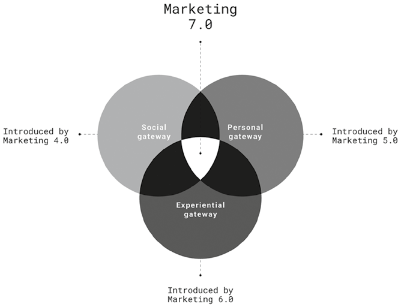
Hình 1.1: Các đòn bẩy nền tảng của Marketing 7.0.Hình 1.1: Các đòn bẩy nền tảng của Marketing 7.0 (Enablers of Marketing 7.0).
📖 Nội dung chi tiết trong Hình 1.1 (Sơ đồ Giao thoa 3 Cánh cổng Tiến vào Tâm trí):
Thành phần trên sơ đồ (Tiếng Anh)
Dịch nghĩa Tiếng Việt chuẩn
Nguồn gốc kế thừa
Social gateway
Cổng Xã hội
Được giới thiệu từ Marketing 4.0 (Introduced by Marketing 4.0)
Personal gateway
Cổng Cá nhân
Được giới thiệu từ Marketing 5.0 (Introduced by Marketing 5.0)
Experiential gateway
Cổng Trải nghiệm
Được giới thiệu từ Marketing 6.0 (Introduced by Marketing 6.0)
Marketing 7.0(Vùng giao thoa trung tâm)
Marketing 7.0 (Tiếp thị Nhận thức)
Hội tụ cả 3 cánh cổng để mở khóa tâm trí con người
Cổng Xã hội (Social Gateway)
Khoa học nhận thức khẳng định rằng các kích thích xã hội là một cánh cổng đầy sức mạnh định hình cách khách hàng nhìn nhận và diễn giải về thương hiệu. Khách hàng không đánh giá thương hiệu một cách cô lập; thay vào đó, phán đoán của họ chịu ảnh hưởng lớn từ ý kiến tập thể của những người xung quanh. Hai phát hiện quan trọng từ khoa học nhận thức giúp lý giải cánh cổng xã hội này: một bắt nguồn từ cấu trúc não bộ và một xuất phát từ xu hướng vô thức của con người khi bắt chước hành vi của đồng loại.
Phát hiện đầu tiên là khái niệm hệ não xã hội (social brain) — một mạng lưới các vùng não chịu trách nhiệm giải mã các tín hiệu xã hội và điều tiết tương tác giữa người với người. Nằm ở trung tâm của mạng lưới này là hạch hạnh nhân (amygdala), một bộ phận nhỏ nhưng tối quan trọng thuộc hệ viền (limbic brain), có nhiệm vụ xử lý cảm xúc và chi phối cách chúng ta phản ứng với môi trường xã hội. Trong tiếp thị, điều này giải thích vì sao khách hàng tin tưởng những thương hiệu có vẻ phổ biến và sở hữu bề dày uy tín được bảo chứng bởi sự công nhận của xã hội.
Hiện tượng này, được gọi là bằng chứng xã hội (social proof), là một công cụ tâm lý sắc bén mà người làm tiếp thị sử dụng để tác động đến hành vi người tiêu dùng. Khi mọi người thấy một thương hiệu được đông đảo người khác đón nhận và ủng hộ, bản thân họ cũng dễ dàng tin tưởng và lựa chọn thương hiệu đó hơn. Người làm tiếp thị khai thác bằng chứng xã hội theo nhiều cách khác nhau, chẳng hạn như điểm xếp hạng và đánh giá của khách hàng trên các nền tảng số, những hàng dài người xếp hàng hoặc danh sách chờ tại cửa hàng bán lẻ báo hiệu nhu cầu cao, hay việc thương hiệu xuất hiện trên các kênh truyền thông uy tín và hợp tác cùng các tên tuổi lớn. Những tín hiệu này tạo dựng nhận thức về độ tin cậy và sức hấp dẫn, củng cố niềm tin của khách hàng vào thương hiệu.
Phát hiện quan trọng thứ hai đến từ tế bào thần kinh phản chiếu hay nơ-ron gương (mirror neurons) — những tế bào não chuyên biệt không chỉ kích hoạt khi con người trực tiếp thực hiện một hành động mà còn sáng lên cả khi họ quan sát người khác làm việc đó. Về bản chất, các nơ-ron này khiến con người phản chiếu lại hành vi của người khác, tạo cảm giác như thể chính họ đang trực tiếp trải nghiệm hành động ấy. Cơ chế này lý giải sức mạnh vượt trội của tiếp thị qua mạng xã hội.
Tiếp thị qua người ảnh hưởng (influencer marketing) — nơi những cá nhân có sức ảnh hưởng xã hội bảo chứng cho thương hiệu — và tiếp thị bằng nội dung do người dùng tạo ra (UGC – user-generated content) — nơi những khách hàng hài lòng lên tiếng ủng hộ thương hiệu — đều tận dụng triệt để cơ chế của nơ-ron gương. Khi người mua tiềm năng nhìn thấy người ảnh hưởng hoặc khách hàng thực tế sử dụng sản phẩm, bộ não của họ sẽ mô phỏng lại trải nghiệm đó, tạo ra cảm giác dự phần cá nhân. Điều này giúp họ đánh giá giá trị sản phẩm dễ dàng và trực quan hơn nhiều so với việc chỉ đọc các tuyên bố quảng cáo từ thương hiệu. Kết quả là, các lời giới thiệu xã hội định hình quyết định mua hàng mạnh mẽ hơn quảng cáo truyền thống, biến ảnh hưởng từ đồng trang lứa và trải nghiệm thương hiệu chân thực trở nên hiệu quả hơn bao giờ hết.
Duolingo, ứng dụng học ngoại ngữ nổi tiếng, là minh họa sống động cho khái niệm Cổng Xã hội thông qua các nội dung hài hước nhắm tới thế hệ Gen Z trên TikTok và YouTube Shorts. Bản chất lan truyền (viral) và lượng tương tác khổng lồ của nội dung tạo ra bằng chứng xã hội mạnh mẽ, phát đi tín hiệu về sự đón nhận rộng rãi. Duolingo kích hoạt các nơ-ron gương của khán giả bằng cách tái hiện những tình huống học ngoại ngữ vô cùng gần gũi và dở khóc dở cười, tạo nên cảm giác về một trải nghiệm được sẻ chia cùng nhau. Cách tiếp cận này đã thúc đẩy tăng trưởng người dùng hoạt động một cách ngoạn mục, chứng minh sức mạnh của ảnh hưởng xã hội trong việc tăng tốc độ chấp nhận thương hiệu.
Cổng Cá nhân (Personal Gateway)
Những thông điệp giàu cảm xúc và được xã hội bảo chứng giúp người làm tiếp thị bước qua Cổng Xã hội của bộ não. Tuy nhiên, người làm tiếp thị phải sử dụng thông điệp được cá nhân hóa để đi qua Cổng Cá nhân (Personal Gateway) nhằm đạt được sự gắn kết sâu sắc hơn và thực sự chạm tới tâm trí khách hàng.
Trong khi các kích thích xã hội khơi gợi phản ứng cảm xúc trong não bộ, thì các kích thích cá nhân lại kích hoạt quá trình xử lý lý tính. Cơ chế này hoàn toàn tương thích với khung lý thuyết của Daniel Kahneman trong tác phẩm Tư duy Nhanh và Chậm (Thinking, Fast and Slow), vốn mô tả hai hệ thống tư duy riêng biệt của não bộ: Hệ thống 1 (System 1) tư duy nhanh và giàu cảm xúc, còn Hệ thống 2 (System 2) tư duy chậm và mang tính lý tính.
Đóng vai trò cầu nối giữa hai hệ thống này là mạng lưới nổi bật (salience network) — một mạng lưới não bộ quy mô lớn có nhiệm vụ ưu tiên các kích thích quan trọng và điều tiết sự chú ý. Hãy hình dung nó như một "người gác cổng" quyết định xem thông điệp tiếp thị nào xứng đáng nhận được nhiều sự chú ý hơn và cần được phân tích lý tính sâu hơn. Hoạt động như một bộ lọc, mạng lưới nổi bật sàng lọc bỏ những thông tin không liên quan, chỉ cho phép các thông điệp có ý nghĩa đi qua.
Khi một thông điệp đòi hỏi sự phân tích sâu hơn, nó sẽ được chuyển tới vỏ não trước trán (prefrontal cortex) — trung tâm xử lý tư duy lý tính của não bộ. Vỏ não trước trán đánh giá thông điệp đó bằng cách đối chiếu với kinh nghiệm trong quá khứ và kiến thức sẵn có. Thông điệp càng có độ liên quan mật thiết với cá nhân, não bộ càng dễ dàng xử lý nó. Và khả năng thông điệp đó dẫn đến những hành động tích cực có lợi cho thương hiệu cũng càng cao hơn.
Cách thức bộ não xử lý thông tin có tính liên quan này làm nổi bật sức mạnh của tiếp thị cá nhân hóa. Trong kỷ nguyên quá tải nội dung, hầu hết các thông điệp tiếp thị đều bị gạt bỏ như những tạp âm (noise). Khách hàng theo bản năng sẽ phớt lờ những nội dung không liên quan đến mình, trong khi các thông điệp khớp với mối quan tâm của họ lại dễ dàng thu hút sự chú ý và khơi gợi phản hồi tích cực.
AI đóng vai trò đắc lực giúp người làm tiếp thị dự đoán thông điệp nào sẽ tạo được sự đồng điệu với từng khách hàng. Các mô hình AI hiện đại, đặc biệt là mạng thần kinh nhân tạo (neural networks), được huấn luyện để mô phỏng quy trình phân tích của vỏ não trước trán. Bằng cách dự đoán mức độ liên quan, AI đảm bảo nội dung tiếp thị có thể xuyên qua Cổng Cá nhân này, biến việc cá nhân hóa ở quy mô lớn trở thành hiện thực.
Thông qua quá trình học hỏi liên tục, AI tinh chỉnh các đề xuất dựa trên tương tác thời gian thực của người dùng, ngày một hoàn thiện hơn theo thời gian. Khả năng thích ứng linh hoạt này cho phép người làm tiếp thị đón đầu những mối quan tâm mới nảy sinh, đảm bảo hoạt động cá nhân hóa luôn vận động song hành cùng hành vi khách hàng thay vì dậm chân tại chỗ.
Các dịch vụ phát trực tuyến hàng đầu như Spotify và Netflix dựa rất nhiều vào cá nhân hóa để giữ chân người dùng. Spotify tạo ra các danh sách phát như “Discover Weekly” và “Release Radar” được thiết kế riêng theo thói quen nghe nhạc và thể loại yêu thích của từng người. Ngoài ra, Spotify còn gửi thông báo cá nhân hóa về nhạc mới từ nghệ sĩ yêu thích, các buổi hòa nhạc sắp diễn ra gần đó và các chương trình podcast được đề xuất riêng.
Tương tự, Netflix đưa ra các gợi ý phim và chương trình truyền hình được cá nhân hóa dựa trên lịch sử xem, lượt thích và đánh giá của người dùng. Hệ thống cân nhắc cả thói quen xem, khung giờ giải trí ưa thích lẫn thiết bị được sử dụng. Trang chủ Netflix của mỗi người dùng là duy nhất, ưu tiên hiển thị những nội dung sát với sở thích của họ nhất. Bằng cách liên tục mang đến các đề xuất sát sườn, những nền tảng phát trực tuyến này khuyến khích người dùng thưởng thức nhiều nội dung hơn, qua đó cung cấp một lý do hoàn toàn hợp lý về mặt lý tính để họ tiếp tục duy trì gói thuê bao.
Cổng Trải nghiệm (Experiential Gateway)
Mục tiêu tối thượng của việc tác động vào tâm trí con người là tạo dựng một ký ức bền lâu, bởi độ gợi nhớ thương hiệu (brand recall) mạnh mẽ sẽ định hình các quyết định mua sắm trong tương lai. Một thương hiệu giữ vững vị trí đầu bảng trong tâm trí (top of mind) — thương hiệu đầu tiên khách hàng nghĩ tới trong một ngành hàng nhất định — có cơ hội được lựa chọn cao hơn hẳn khi nhu cầu mua sắm phát sinh. Khi độ gợi nhớ thương hiệu đã vững chắc, mỗi tương tác tiếp theo đều trở nên hiệu quả hơn, vì thông điệp dễ dàng thu hút sự chú ý và củng cố nhận thức về thương hiệu.
Bộ não ghi nhớ một thương hiệu tốt hơn nhiều nếu được tương tác với thương hiệu đó thông qua các trải nghiệm. Trung tâm của quá trình này chính là hạch hạnh nhân (amygdala) cùng vai trò điều tiết cảm xúc của nó. Hạch hạnh nhân mã hóa các kích thích cảm xúc và ưu tiên lưu trữ những ký ức giàu cảm xúc vào bộ nhớ dài hạn. Do đó, những trải nghiệm thương hiệu khơi gợi được cảm xúc mãnh liệt sẽ có khả năng được hồi tưởng sống động hơn rất nhiều.
Những trải nghiệm kết hợp hài hòa giữa sự quen thuộc (familiarity) và tính mới lạ (novelty) đặc biệt hiệu quả trong việc thu hút sự chú ý và tăng cường hình thành trí nhớ. Các trải nghiệm quen thuộc khơi gợi phản ứng cảm xúc tích cực vì chúng mang lại cảm giác an toàn và dễ đoán. Ngược lại, những trải nghiệm mới lạ kích hoạt các vùng não gắn liền với sự phấn khích, chủ yếu thông qua việc giải phóng dopamine — chất dẫn truyền thần kinh tạo cảm giác hưng phấn trong não bộ.
Thương hiệu kính mắt Hàn Quốc Gentle Monster là minh chứng điển hình cho sự pha trộn giữa tính mới lạ và sự quen thuộc trong không gian bán lẻ. Tại cửa hàng flagship ở New Jersey, khách hàng bước vào một không gian dung hòa giữa những điều bất ngờ và bối cảnh cửa hàng thông thường. Các tác phẩm sắp đặt cơ điện tử (animatronic installations) như chú bò rừng bison chuyển động siêu thực và tác phẩm điêu khắc đôi mắt khổng lồ biết chớp tạo nên một khung cảnh lạ lẫm, lập tức thu hút trọn vẹn sự chú ý.
Thế nhưng, bối cảnh đầy ấn tượng ấy lại được cân bằng bởi những tiện nghi quen thuộc mà khách hàng thường kỳ vọng ở một cửa hàng bán lẻ kính mắt: những sản phẩm chất lượng cao, dễ đeo được trưng bày gọn gàng trên kệ, không gian thử kính thoải mái và đội ngũ nhân viên thân thiện sẵn sàng hỗ trợ. Sự kết hợp khéo léo này đảm bảo khách hàng luôn cảm thấy tò mò, thích thú mà không bị choáng ngợp.
Những trải nghiệm nhập vai đa giác quan (immersive, multisensory experiences) còn thúc đẩy quá trình hình thành ký ức mạnh mẽ hơn nữa bằng cách kích hoạt một mạng lưới rộng lớn các vùng não để mã hóa thông tin sâu hơn. Các kích thích thị giác, thính giác và xúc giác lần lượt kích hoạt vỏ não thị giác (occipital cortex), vỏ não thái dương (temporal cortex) và vỏ não cảm giác thân thể (somatosensory cortex). Tuy nhiên, trải nghiệm đa giác quan chỉ phát huy hiệu quả cao nhất khi các tín hiệu đầu vào từ nhiều giác quan có sự đồng nhất và nhất quán với nhau.
Các thương hiệu khách sạn nghỉ dưỡng xa xỉ cho thấy cách những trải nghiệm nhập vai đa giác quan được nâng tầm nhờ công nghệ cá nhân hóa tiên tiến. Họ đã tiến xa hơn rất nhiều so với những tiêu chuẩn thông thường như mùi hương đặc trưng (signature scent) hay bộ chăn ga gối chuyên biệt. Chẳng hạn, một số khu nghỉ dưỡng Four Seasons tại Hawaii cung cấp các chương trình chăm sóc sức khỏe dựa trên dữ liệu, bắt đầu bằng bảng câu hỏi sức khỏe trước chuyến đi và các công cụ chẩn đoán nhằm thu thập dữ liệu sinh học để tùy chỉnh mọi khía cạnh nghỉ dưỡng từ dinh dưỡng đến trị liệu.
Sau đó, mỗi vị khách sẽ nhận được một trải nghiệm cá nhân hóa trọn vẹn. Khách có thể được mát-xa chuyên sâu tại đúng những vùng cơ căng thẳng được xác định qua hình ảnh tầm nhiệt (thermal imaging), hoặc đắm mình trong khoang trị liệu trang bị kính VR đồng bộ hóa thị giác, âm thanh, xúc giác và hương thơm trong liệu trình kéo dài 20 phút. Bằng cách kết hợp sự thấu hiểu cá nhân hóa với trải nghiệm nhập vai đa giác quan, các thương hiệu nghỉ dưỡng hạng sang đã kiến tạo nên một trải nghiệm đáng nhớ và mang tính chuyển hóa sâu sắc.
Điểm Khác biệt Thực sự của Marketing 7.0 là gì?
Nhưng điều gì thực sự tạo nên sự khác biệt giữa Marketing 7.0 và các giai đoạn tiền nhiệm? Để nhìn thấy bức tranh toàn cảnh, chúng ta cần đặt lên bàn cân so sánh cách mỗi kỷ nguyên đã định hình lại kỳ vọng của khách hàng và qua đó thay đổi vai trò của người làm tiếp thị (Hình 1.2).
Quá trình tiến hóa bắt đầu với Marketing 1.0, được thúc đẩy bởi công nghệ công nghiệp. Ở giai đoạn này, trọng tâm là bán sản phẩm cho người mua đại chúng. Thị trường được nhìn nhận là tập hợp những con người có nhu cầu và mong muốn cơ bản. Cách tiếp cận là lấy sản phẩm làm trung tâm (product-centric). Doanh nghiệp tạo ra hàng hóa và đẩy chúng tới người tiêu dùng thông qua sản xuất và phân phối đại trà.
Marketing 2.0 xuất hiện cùng sự trỗi dậy của các phương tiện truyền thông phát sóng (broadcasting media). Giai đoạn này đánh dấu bước dịch chuyển từ sản phẩm sang khách hàng. Thị trường phát triển thành một nhóm công chúng có nhiều thông tin và hiểu biết hơn. Mọi nỗ lực tiếp thị tập trung vào việc làm hài lòng khách hàng. Doanh nghiệp áp dụng cách tiếp cận lấy khách hàng làm trung tâm (customer-centric). Giao tiếp chuyển từ bán hàng một chiều sang tương tác hai chiều.
Bước chuyển mình tiếp theo là Marketing 3.0. Được tiếp sức bởi internet, giai đoạn này mang đến sự thấu hiểu sâu sắc hơn về khách hàng. Trọng tâm dịch chuyển từ lý trí đơn thuần sang con người toàn diện với tâm trí, trái tim và tinh thần. Doanh nghiệp không chỉ hướng tới việc giải quyết vấn đề mà còn mong muốn tạo ra sự thay đổi tích cực. Các thương hiệu theo đuổi những giá trị nhân văn và sứ mệnh xã hội. Giai đoạn này trở thành tiếp thị lấy con người làm trung tâm (human-centric). Tiếp thị cất tiếng nói chạm đến niềm tin và ý thức về mục đích sống của con người.
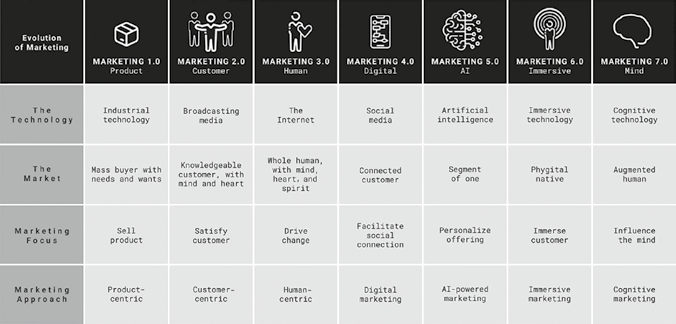
Hình 1.2: Sự tiến hóa của Tiếp thị.Hình 1.2: Sự tiến hóa của Tiếp thị (Evolution of Marketing).
📖 Nội dung chi tiết trong Hình 1.2 (Bảng Tiến hóa từ Marketing 1.0 đến Marketing 7.0):
Tiêu chí (Evolution of Marketing)
MARKETING 1.0 (Sản phẩm – Product)
MARKETING 2.0 (Khách hàng – Customer)
MARKETING 3.0 (Con người – Human)
MARKETING 4.0 (Kỹ thuật số – Digital)
MARKETING 5.0 (Trí tuệ nhân tạo – AI)
MARKETING 6.0 (Nhập vai – Immersive)
MARKETING 7.0 (Tâm trí – Mind)
Công nghệ nền tảng (The Technology)
Công nghệ công nghiệp (Industrial technology)
Truyền thông phát sóng (Broadcasting media)
Mạng Internet (The Internet)
Mạng xã hội (Social media)
Trí tuệ nhân tạo (Artificial intelligence)
Công nghệ nhập vai (Immersive technology)
Công nghệ nhận thức (Cognitive technology)
Thị trường mục tiêu (The Market)
Người mua đại chúng với nhu cầu và mong muốn cơ bản (Mass buyer with needs and wants)
Khách hàng có hiểu biết, có lý trí và cảm xúc (Knowledgeable customer, with mind and heart)
Con người toàn diện với tâm trí, trái tim và tinh thần (Whole human, with mind, heart, and spirit)
Khách hàng kết nối (Connected customer)
Phân khúc một người (Segment of one)
Công dân Phygital (Phygital native)
Con người tăng cường (Augmented human)
Trọng tâm Tiếp thị (Marketing Focus)
Bán sản phẩm (Sell product)
Làm hài lòng khách hàng (Satisfy customer)
Thúc đẩy sự thay đổi (Drive change)
Thúc đẩy kết nối xã hội (Facilitate social connection)
Cá nhân hóa gói chào hàng (Personalize offering)
Đưa khách hàng đắm chìm vào trải nghiệm (Immerse customer)
Tác động vào tâm trí (Influence the mind)
Phương pháp Tiếp cận (Marketing Approach)
Lấy sản phẩm làm trung tâm (Product-centric)
Lấy khách hàng làm trung tâm (Customer-centric)
Lấy con người làm trung tâm (Human-centric)
Tiếp thị số (Digital marketing)
Tiếp thị ứng dụng AI (AI-powered marketing)
Tiếp thị nhập vai đa giác quan (Immersive marketing)
Tiếp thị nhận thức (Cognitive marketing)
Tiếp đến là Marketing 4.0, đưa mạng xã hội vào cẩm nang chiến lược tiếp thị. Khách hàng trở thành người tiêu dùng kết nối (connected customer). Con người không còn là người tiếp nhận thông điệp thụ động nữa; họ trực tiếp sáng tạo và chia sẻ nội dung. Trọng tâm tiếp thị chuyển sang tạo dựng kết nối xã hội. Truyền miệng (word-of-mouth) trở nên quyền lực hơn quảng cáo. Cách tiếp cận lúc này là tiếp thị số (digital marketing). Nội dung buộc phải hấp dẫn, đáng chia sẻ và mang tính đối thoại.
Marketing 5.0 được xây dựng trên nền tảng AI. Giai đoạn này giới thiệu khái niệm “phân khúc một người” (segment of one). Thay vì nhắm vào các nhóm nhân khẩu học rộng lớn, thương hiệu sử dụng dữ liệu để cá nhân hóa ở cấp độ từng cá nhân. Tiếp thị trở nên có khả năng dự đoán, phản hồi tức thì và siêu liên quan (hyper-relevant). AI cho phép tự động hóa hành trình khách hàng, vận hành chatbot và các công cụ gợi ý. Trọng tâm là cá nhân hóa sản phẩm dịch vụ theo thời gian thực. Điều này khai sinh ra tiếp thị ứng dụng AI (AI-powered marketing), được tiếp nhiên liệu bởi công nghệ học máy (machine learning).
Marketing 6.0 đưa công nghệ nhập vai vào cuộc chơi, bao gồm AR, VR và các hình thức công nghệ trải nghiệm khác. Thị trường một lần nữa dịch chuyển, hướng tới thế hệ “công dân Phygital” (phygital natives) — những khách hàng sống liền mạch giữa thế giới vật lý và thế giới số. Trọng tâm là sự đắm chìm (immersion). Tiếp thị vượt ra khỏi các màn hình phẳng để bước vào môi trường sống thực tế của khách hàng. Mục tiêu là kiến tạo những trải nghiệm tương tác đa giác quan. Cách tiếp cận lúc này là tiếp thị nhập vai đa giác quan (immersive marketing). Thương hiệu thiết kế nên những khoảnh khắc mà khách hàng có thể nhìn thấy, chạm vào và cảm nhận — dù ở trong thế giới thực hay không gian ảo.
Mỗi giai đoạn đều mài sắc hơn sự thấu hiểu về khách hàng. Mỗi nấc thang lại đặt nền móng cho bước tiếp theo, dẫn dắt một cách tự nhiên tới Marketing 7.0, nơi tâm trí con người trở thành biên giới mới cần chinh phục.
Marketing 7.0 giới thiệu công nghệ nhận thức (cognitive technology) làm động lực cốt lõi. Khách hàng tiến hóa thành con người tăng cường (augmented human) — những cá nhân dựa vào các công cụ kỹ thuật số để suy nghĩ, ra quyết định và hành động. Trọng tâm dịch chuyển sang việc tác động vào tâm trí. Hoạt động tiếp thị trở nên đồng điệu sâu sắc hơn với cách con người xử lý thông tin, hình thành ký ức và đưa ra lựa chọn. Vì mục tiêu tối thượng là tạo ra sự cộng hưởng trong tâm trí, cách tiếp cận ở đây là tiếp thị nhận thức (cognitive marketing) — tận dụng sự thấu hiểu về nhận thức của khách hàng để định hình quá trình ra quyết định của họ.
Cấu trúc của Cuốn sách
Cuốn sách này khám phá chuyên sâu về tiếp thị lấy tâm trí làm trung tâm (mind-centric marketing), từ những xu hướng đang định hình người tiêu dùng ngày nay cho đến các chiến thuật thực tiễn cho phương pháp tiếp cận nhận thức mới. Dù việc đọc tuần tự từ đầu đến cuối sẽ mang lại góc nhìn toàn diện nhất về Marketing 7.0, cấu trúc sách vẫn được thiết kế để bạn có thể đọc ngay bất kỳ chương nào phù hợp với mối quan tâm của mình.
Lý do Hình thành – The Why (Phần 1)
Nếu bạn là người quan tâm đến xu hướng và thích bắt đầu từ bức tranh vĩ mô, hãy khởi đầu với Phần 1 (từ Chương 2 đến Chương 4). Các chương này giải thích sự tiến hóa của tiếp thị cùng những chuyển dịch lớn đang thúc đẩy sự trỗi dậy của Marketing 7.0. Chúng tôi tập trung vào năm động lực thay đổi chính — công nghệ, chính trị và pháp lý, kinh tế, văn hóa – xã hội, và động lực thị trường (xem Hình 1.3). Những lực đẩy này đang tái định hình cả môi trường cạnh tranh lẫn hành vi người tiêu dùng. Chúng tôi tóm lược các xu hướng này thành ba phần:
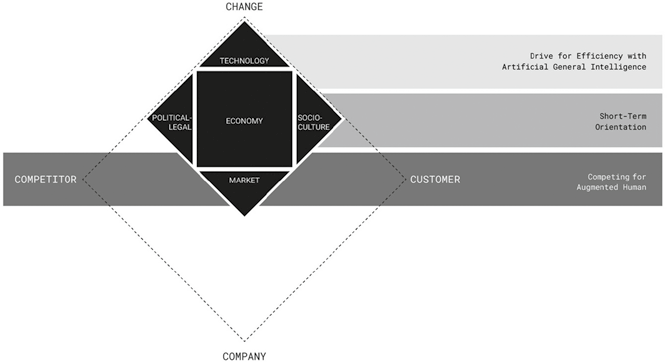
Hình 1.3: Bức tranh Toàn cảnh Kinh doanh.Hình 1.3: Bức tranh Toàn cảnh Kinh doanh (The Business Landscape).
📖 Nội dung chi tiết trong Hình 1.3 (Mô hình Toàn cảnh Kinh doanh 4C và 3 Dịch chuyển Lớn):
Khối cấu trúc trong sơ đồ
Thuật ngữ gốc (Tiếng Anh)
Dịch nghĩa Tiếng Việt chuẩn
4 Đỉnh Kim cương 4C
CHANGE – COMPETITOR – CUSTOMER – COMPANY
Sự thay đổi – Đối thủ cạnh tranh – Khách hàng – Công ty
Công nghệ / Chính trị – Pháp lý / Kinh tế / Văn hóa – Xã hội / Thị trường
Dịch chuyển 1(Tầng trên – Chương 2)
Drive for Efficiency with Artificial General Intelligence
Cuộc đua tối ưu hóa hiệu suất với Trí tuệ Nhân tạo Tổng quát (AGI)
Dịch chuyển 2(Tầng giữa – Chương 3)
Short-Term Orientation
Định hướng ngắn hạn trong kinh doanh và tiếp thị
Dịch chuyển 3(Tầng dưới – Chương 4)
Competing for Augmented Human
Cạnh tranh thu hút Con người Tăng cường
Chương 2 khám phá bước dịch chuyển công nghệ hướng tới trí tuệ nhân tạo tổng quát (AGI – Artificial General Intelligence), làm dấy lên mối lo ngại rằng hiệu suất máy móc sẽ xóa sổ dấu ấn con người trong tiếp thị. Thách thức thực sự không nằm ở việc áp dụng AI, mà là đảm bảo người làm tiếp thị giữ vững vai trò đối tác không thể thiếu trong mối quan hệ cộng sinh giữa người và máy.
Chương 3 phân tích tình trạng bất ổn địa chính trị và sự bấp bênh của nền kinh tế — những yếu tố đẩy các thương hiệu vào cuộc đua hiệu suất ngắn hạn. Hệ quả là tiếp thị số ngày càng trở nên rập khuôn, đồng질 hóa, và các công cụ AI lại càng đẩy nhanh sự đơn điệu này.
Chương 4 giới thiệu một hình mẫu khách hàng mới: con người tăng cường (augmented humans) — những cá nhân ưu tiên kỹ thuật số mà tâm trí được định hình bởi công nghệ. Họ chủ động lọc bỏ quảng cáo, sống trong các buồng vang thông tin (echo chambers) do thuật toán dẫn dắt, và cảm thấy kiệt sức trước các trào lưu vi mô (micro trends) liên tục biến đổi.
Hình 1.4: La bàn Tiếp thị Nhận thức.Hình 1.4: La bàn Tiếp thị Nhận thức (Cognitive Marketing Compass).
📖 Nội dung chi tiết trong Hình 1.4 (Cấu trúc La bàn Tiếp thị Nhận thức):
Phân khu Quản trị
Thành phần trên sơ đồ (Tiếng Anh)
Dịch nghĩa Tiếng Việt chuẩn
Vai trò trong mô hình
CUSTOMER MANAGEMENT(Quản trị Khách hàng – Trung tâm)
COGNITIVE MAPPING
Lập Bản đồ Nhận thức
Thấu hiểu tâm trí khách hàng qua 3 tầng tháp não bộ
↳ Tầng đỉnh tháp
ATTENTION TRIGGERS
Tác nhân Kích hoạt Sự chú ý
Thu hút Hệ não Chú ý (Attention Brain)
↳ Tầng giữa tháp
SOCIAL CONNECTORS
Chất keo Kết nối Xã hội
Gắn kết Hệ não Xã hội (Social Brain)
↳ Tầng đáy tháp
REWARD MOTIVATORS
Động lực Tưởng thưởng
Thúc đẩy Hệ não Tưởng thưởng (Reward Brain)
PRODUCT MANAGEMENT(Quản trị Sản phẩm – Nửa trái)
VALUE PROPOSITION
Tuyên bố Giá trị (Góc trên trái)
Định vị giá trị sản phẩm chạm vào sự chú ý và kết nối
PRODUCT MANAGEMENT(Quản trị Sản phẩm – Nửa trái)
SELLING APPROACH
Phương pháp Bán hàng (Góc dưới trái)
Chuyển hóa động lực tưởng thưởng thành quyết định mua
BRAND MANAGEMENT(Quản trị Thương hiệu – Nửa phải)
BRAND STORYTELLING
Kể chuyện Thương hiệu (Góc trên phải)
Thu hút sự chú ý và tạo sự đồng cảm xã hội
BRAND MANAGEMENT(Quản trị Thương hiệu – Nửa phải)
CUSTOMER EXPERIENCE
Trải nghiệm Khách hàng (Góc dưới phải)
Củng cố phần thưởng tinh thần và ký ức dài hạn
Khung Lý thuyết Cốt lõi – The What (Phần 2)
Nếu bạn là nhà tư duy chiến lược yêu thích các mô hình và khung lý thuyết, hãy tìm đọc Phần 2 (Chương 5 và Chương 6). Hai chương này giới thiệu La bàn Nhận thức (Cognitive Compass) (Hình 1.4) — khung mô hình trung tâm của Marketing 7.0 giúp giải mã tâm trí con người và chuyển hóa sự thấu hiểu khách hàng thành chiến lược hành động.
La bàn Nhận thức bao gồm hai hợp phần: Bản đồ Nhận thức (Cognitive Map) là mô hình thấu hiểu khách hàng dựa trên cách bộ não xử lý các kích thích tiếp thị; và Tứ đồ Kích thích Tiếp thị (Stimuli Quadrants) là công cụ chiến lược chuyển hóa sự thấu hiểu đó thành hành động thực tiễn, bao quát bốn đòn bẩy: Kể chuyện thương hiệu (Brand Storytelling), Tuyên bố giá trị (Value Proposition), Phương pháp bán hàng (Selling Approach) và Trải nghiệm khách hàng (Customer Experience).
Các yếu tố này gắn kết chặt chẽ với tam giác quản trị tiếp thị rộng lớn hơn: Lập bản đồ nhận thức gắn với quản trị khách hàng (customer management); Tuyên bố giá trị và Phương pháp bán hàng gắn với quản trị sản phẩm (product management); còn Kể chuyện thương hiệu và Trải nghiệm khách hàng gắn với quản trị thương hiệu (brand management).
Chương 5 giải thích toàn diện mô hình và nhấn mạnh rằng ngay cả trong kỷ nguyên AI, tiếp thị vẫn luôn bắt đầu từ việc thấu hiểu con người. Chương này cung cấp kim chỉ nam để đồng bộ hóa hoạt động tiếp thị với cơ chế vận hành của não bộ.
Chương 6 giới thiệu phương pháp quan sát thấu cảm (empathic observation) như một chìa khóa để giải mã tâm trí của những con người tăng cường. Phương pháp lập bản đồ nhận thức khai thác ba hệ thống não bộ cốt lõi: hệ não chú ý (attention brain) (những gì con người để tâm), hệ não xã hội (social brain) (cách họ gắn kết xã hội) và hệ não tưởng thưởng (reward brain) (động lực thúc đẩy hành vi).
Phương pháp Thực thi – The How (Phần 3)
Nếu bạn là người làm nghề thực chiến tập trung vào khâu triển khai, Phần 3 (từ Chương 7 đến Chương 10) mang đến hướng dẫn chiến thuật chi tiết để ứng dụng tiếp thị lấy tâm trí làm trung tâm vào từng chức năng chuyên môn:
Chương 7 dành cho các chuyên gia truyền thông phát triển câu chuyện thương hiệu, giới thiệu ba công thức kể chuyện thương hiệu và cách ứng dụng vào thực tế.
Chương 8 dành cho các nhà quản lý sản phẩm đang định hình tuyên bố giá trị, giới thiệu phương trình giá trị (value equation) và giải thích cách khách hàng cân nhắc giữa lợi ích nhận được và sự hy sinh bỏ ra trong tâm trí.
Chương 9 dành cho đội ngũ bán hàng muốn chuyển đổi khách hàng tiềm năng, giúp đồng bộ hóa kỹ thuật bán hàng với cách khách hàng mua sắm thông qua các bí quyết đối thoại dựa trên khoa học não bộ.
Chương 10 dành cho các đội ngũ phụ trách trải nghiệm khách hàng đang thiết kế hành trình xuyên suốt từ đầu đến cuối, cung cấp danh mục kiểm tra (checklist) và 9 nguyên tắc thiết kế để tạo ra những trải nghiệm đáng nhớ, giàu sức ảnh hưởng trên cả kênh số lẫn không gian vật lý.
Tóm tắt Chương 1
Công nghệ tiến hóa qua từng chu kỳ lặp lại, và tiếp thị cũng vậy. Hành trình bắt đầu từ Marketing 1.0 và 2.0, khi trọng tâm dịch chuyển từ việc bán sản phẩm sang thấu hiểu nhu cầu khách hàng. Marketing 3.0 bổ sung chiều sâu nhân văn bằng cách nhìn nhận khách hàng như những con người toàn diện — với tâm trí, trái tim và tinh thần.
Tiếp đó là sự trỗi dậy của người tiêu dùng kết nối trong Marketing 4.0 dưới lực đẩy của mạng xã hội. Marketing 5.0 đưa AI vào cuộc chơi để cá nhân hóa ở quy mô lớn. Marketing 6.0 mở rộng khả năng cá nhân hóa đó thành những trải nghiệm nhập vai đa giác quan xóa nhòa ranh giới giữa thế giới vật lý và kỹ thuật số. Mỗi giai đoạn đều làm sâu sắc thêm sự thấu hiểu của chúng ta về khách hàng và đưa chúng ta tiến gần hơn tới tâm trí con người. Marketing 7.0 kế thừa nền tảng này bằng cách tích hợp khoa học nhận thức, tận dụng ba cánh cổng — Xã hội, Cá nhân và Trải nghiệm — để tác động vào bộ não một cách hiệu quả hơn.
Phần đầu tiên của cuốn sách giải thích những động lực định hình nên bước chuyển dịch này. Từ sự trỗi dậy của AGI cho đến tình trạng bất ổn toàn cầu và sự mệt mỏi vì quá tải kỹ thuật số, bối cảnh kinh doanh ngày nay đã sản sinh ra một kiểu khách hàng mới: con người tăng cường (augmented human) — những cá nhân mà quyết định của họ được định hình bởi các thuật toán.
Phần thứ hai giới thiệu La bàn Nhận thức (Cognitive Compass), một khung chiến lược giúp điều hướng trong bối cảnh kinh doanh mới. Nó đưa ra khái niệm lập bản đồ nhận thức — thấu hiểu cách con người xử lý sự chú ý, các tín hiệu xã hội và phần thưởng — đồng thời chuyển hóa những thấu hiểu đó thành hành động thông qua bốn đòn bẩy chiến lược: kể chuyện thương hiệu, tuyên bố giá trị, phương pháp bán hàng và trải nghiệm khách hàng.
Các chương cuối cùng biến chiến lược thành thực thi. Dù bạn đang chắp bút cho câu chuyện thương hiệu, định hình gói giải pháp sản phẩm, thiết kế cuộc trò chuyện bán hàng hay kiến tạo trải nghiệm khách hàng trọn vẹn, mỗi chương đều trang bị những công cụ thực tiễn gắn liền với cơ chế vận hành tự nhiên của não bộ.
Câu hỏi Suy ngẫm
Hoạt động tiếp thị của doanh nghiệp bạn đã tiến hóa song hành cùng công nghệ như thế nào?
Giai đoạn Marketing X.0 nào phản ánh sát nhất cách tiếp cận hiện tại của bạn? Đâu là mảnh ghép còn thiếu để bạn chạm tới Marketing 7.0?
Bạn thấu hiểu đến đâu về cách khách hàng của mình suy nghĩ và đưa ra quyết định?
Công nghệ đã phát triển nhanh đến mức nhiều người quên mất rằng thuở ban đầu, “máy tính” (computers) thực chất là những con người bằng xương bằng thịt. Từ đầu thế kỷ 17 đến giữa thế kỷ 20, thuật ngữ “computers” dùng để chỉ những người thực hiện các phép tính toán học tỉ mỉ bằng tay, thường là các nhóm phụ nữ làm việc bên bàn giấy. Công việc của họ bao gồm lập các bảng toán học phục vụ thiên văn học, thực hiện các phép tính quân sự thời chiến và hỗ trợ những bước đi đầu tiên trong công cuộc thám hiểm không gian.
Khi máy tính điện tử trở nên phổ biến hơn vào giữa thế kỷ 20, vai trò của những “máy tính con người” đã tiến hóa thành các “lập trình viên” (programmers). Những lập trình viên thế hệ đầu làm việc trực tiếp với mã máy (machine code), đòi hỏi sự am hiểu sâu sắc về phần cứng. Về sau, họ bắt đầu sử dụng các ngôn ngữ lập trình: những hệ thống câu lệnh chỉ thị cho máy móc biết phải làm gì.
Ngày nay, mối quan hệ giữa con người và máy móc lại một lần nữa chuyển dịch. Với sự trỗi dậy của trí tuệ nhân tạo (AI), lập trình viên chuyển mình thành những “người huấn luyện” (trainers). Thay vì đưa ra các câu lệnh chỉ thị tường minh, con người giờ đây nạp các tập dữ liệu đã chuẩn bị sẵn để máy móc tự học các quy luật (patterns) và tinh chỉnh thuật toán của chúng. Điều này đánh dấu một giai đoạn mới đối với con người: không chỉ đơn thuần sử dụng máy móc mà còn cộng tác cùng chúng.
Theo thời gian, quá trình huấn luyện AI ngày càng trở nên tự chủ hơn, đòi hỏi ít sự can thiệp của con người hơn. Nó đã tiến hóa từ “học có giám sát” (supervised learning) — dựa trên dữ liệu đã được gán nhãn (labeled data) kèm mô tả rõ ràng — sang “học không giám sát” (unsupervised learning), nơi AI tự nhận diện các quy luật trong dữ liệu thô mà không cần nhãn định sẵn. AI còn học hỏi thông qua “học tăng cường” (reinforcement learning), thích ứng theo thời gian thực bằng cách tự đưa ra quyết định và hoàn thiện qua quá trình thử – sai (trial and error). Kết quả là, vai trò của con người đã dịch chuyển sang vị trí của những “Người điều phối” (Orchestrators) — chuyên xác định và giám sát các mục tiêu thay vì quản lý chi tiết từng bước thực thi (Hình 2.1).
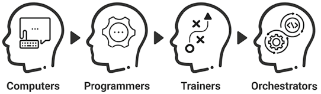
Hình 2.1: Sự tiến hóa vai trò của con người trong mối quan hệ Người – Máy.Hình 2.1: Sự tiến hóa vai trò của con người trong mối quan hệ Người – Máy (The Evolving Human Role in the Human–Machine Relationship).
📖 Nội dung chi tiết trong Hình 2.1 (Tiến trình 4 Vai trò của Con người đối với Máy móc):
Giai đoạn
Thuật ngữ trên hình
Dịch nghĩa Tiếng Việt chuẩn
Bản chất vai trò của con người
1
Computers
“Máy tính” con người
Trực tiếp tính toán thủ công bằng tay (thế kỷ 17 – giữa thế kỷ 20)
2
Programmers
Lập trình viên
Viết mã lệnh và thuật toán chỉ thị tường minh cho máy tính điện tử
3
Trainers
Người huấn luyện
Chuẩn bị dữ liệu và huấn luyện mô hình AI nhận diện quy luật
4
Orchestrators
Người điều phối
Thiết lập mục tiêu chiến lược và giám sát các hệ thống AI tự chủ
Quyền tự chủ ngày càng lớn của các hệ thống AI đã làm dấy lên mối lo ngại về sự trỗi dậy của trí tuệ nhân tạo tổng quát (AGI – Artificial General Intelligence): những cỗ máy có khả năng sánh ngang hoặc vượt qua năng lực nhận thức của con người trên một phạm vi rộng lớn các tác vụ. Khác với AI hẹp (narrow AI) vốn chỉ được thiết kế cho các chức năng chuyên biệt, AGI có khả năng tự học hỏi và hành động độc lập xuyên suốt nhiều lĩnh vực khác nhau. Viễn cảnh này đặt ra những trăn trở sâu sắc hơn về việc máy móc cuối cùng sẽ thay thế hoàn toàn quyền ra quyết định của con người.
Sự dịch chuyển hướng tới quyền tự chủ cao hơn của máy móc đã và đang diễn ra ngay trong ngành tiếp thị ngày nay. Một thương hiệu có thể bắt đầu bằng cách huấn luyện mô hình AI thông qua phương pháp “học có giám sát” — nạp vào hệ thống các mẫu nội dung quảng cáo (advertising copy) đã được gán nhãn kèm theo các chỉ số hiệu suất như tỷ lệ nhấp chuột (CTR – click-through rate).
Khi chiến dịch vận hành, AI sử dụng “học không giám sát” để tự mình phát hiện các chủ đề mới nổi trong phần bình luận trên mạng xã hội, từ đó khai phá những ý tưởng viết lời quảng cáo mới. Tiếp đó, “học tăng cường” cho phép AI thử nghiệm các biến thể kết hợp khác nhau của nội dung quảng cáo, tự rút ra tổ hợp nào mang lại hiệu quả tốt nhất và điều chỉnh theo thời gian thực để tối đa hóa hiệu suất.
Thế nhưng, khi AI đảm nhận nhiều tác vụ hơn với ít sự giám sát hơn, một mối lo ngại mới lại xuất hiện. Chính những con người thiết lập mục tiêu cho hệ thống AI thường không còn hiểu rõ các phép tính toán đang diễn ra bên trong chúng. Hiện tượng này được gọi là “AI hộp đen” (black box AI) — khi các thuật toán trở nên phức tạp đến mức ngay cả những người tạo ra chúng cũng không thể giải thích trọn vẹn bằng cách nào hệ thống lại đưa ra được kết quả đầu ra như vậy.
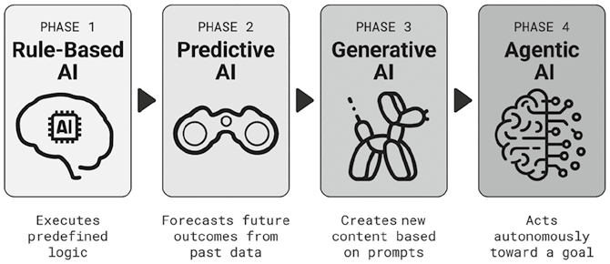
Hình 2.2: Bốn giai đoạn phát triển của AI.Hình 2.2: Bốn giai đoạn phát triển của AI (The Four Phases of AI Advancement).
📖 Nội dung chi tiết trong Hình 2.2 (Bốn Giai đoạn Phát triển của AI):
Giai đoạn
Tên giai đoạn (Tiếng Anh)
Dịch nghĩa Tiếng Việt chuẩn
Cơ chế hoạt động cốt lõi trên hình
PHASE 1
Rule-Based AI
AI Dựa trên Quy tắc
Thực thi logic được định nghĩa sẵn (Executes predefined logic)
PHASE 2
Predictive AI
AI Dự đoán
Dự báo kết quả tương lai từ dữ liệu quá khứ (Forecasts future outcomes from past data)
PHASE 3
Generative AI
AI Tạo sinh
Sáng tạo nội dung mới dựa trên câu lệnh nhắc (Creates new content based on prompts)
PHASE 4
Agentic AI
AI Tác tử
Hành động tự chủ hướng tới mục tiêu đề ra (Acts autonomously toward a goal)
Quá trình huấn luyện AI tự chủ hơn mang lại những lợi ích rõ rệt về hiệu suất và khả năng mở rộng quy mô. Người làm tiếp thị có thể tối ưu hóa các chiến dịch ở quy mô lớn mà không cần đội ngũ nhân sự đông đảo hay phụ thuộc nặng nề vào các đại lý bên ngoài (agencies). Tuy nhiên, bước tiến này lại đặt ra một câu hỏi mang tính sống còn: Nếu AI có thể làm được tất cả, vậy đâu là phần việc còn lại dành cho những người làm tiếp thị bằng xương bằng thịt?
Làn sóng Dịch chuyển Hướng tới AGI
AI đã chuyển mình mạnh mẽ kể từ thập niên 1980, trong đó phần lớn những bước đột phá diễn ra từ khoảng năm 2020 trở lại đây. Từ chỗ được thiết kế để hỗ trợ con người, AI đã tiến hóa thành các tác tử tự chủ (autonomous agents) và hiện đang tiến dần tới ngưỡng AGI.
Quá trình tiến hóa này có thể được nhìn nhận qua bốn giai đoạn chính (Hình 2.2). Ở những giai đoạn đầu, AI được lập trình cứng nhắc để tuân theo các quy tắc cụ thể hoặc các mô hình thống kê, phụ thuộc nhiều vào dữ liệu nạp sẵn và sự tinh chỉnh thủ công của con người.
Khi phát triển lên cấp độ cao hơn, AI giành được quyền tự chủ lớn hơn, có khả năng tự giải mã các quy luật ẩn trong dữ liệu. Nó cũng được trao quyền tiếp cận trực tiếp hơn với phản hồi của người dùng theo thời gian thực, cho phép học hỏi liên tục từ các tương tác trong thế giới thực.
Giai đoạn 1: AI Dựa trên Quy tắc (Rule-Based AI)
Các hệ thống AI sơ khai dựa vào phương pháp tiếp cận theo quy tắc, sử dụng logic điều kiện “nếu – thì” (if–then) được định nghĩa trước để phản hồi truy vấn hoặc đưa ra quyết định. Phương pháp này hiện vẫn rất phổ biến trong tự động hóa tiếp thị cơ bản (marketing automation) — ví dụ: “Nếu khách hàng thêm sản phẩm vào giỏ hàng nhưng không thanh toán, thì gửi email nhắc nhở.” AI dựa trên quy tắc cũng vận hành các chatbot đơn giản, chẳng hạn như: “Nếu khách hàng hỏi thông tin sản phẩm, thì gửi danh mục sản phẩm (catalog).”
Giai đoạn 2: AI Dự đoán (Predictive AI)
Một hình thức AI tiên tiến hơn là AI dự đoán (predictive AI) — sử dụng các công cụ thống kê để mô hình hóa dữ liệu lịch sử và ước tính xác suất xảy ra của các kết quả trong tương lai. Trong tiếp thị, các ứng dụng phổ biến của AI dự đoán bao gồm phân tích tỷ lệ rời bỏ (churn analysis), giúp xác định những khách hàng nào có nguy cơ ngừng sử dụng sản phẩm hoặc dịch vụ. Một ứng dụng khác là hệ thống gợi ý sản phẩm (product recommendation), nơi AI đề xuất mặt hàng phù hợp nhất tiếp theo để bán chéo (cross-sell) dựa trên lịch sử mua sắm của khách hàng.
Giai đoạn 3: AI Tạo sinh (Generative AI)
Hình thức AI phổ biến nhất trong những năm gần đây là AI tạo sinh (generative AI) — có khả năng sáng tạo ra nội dung mới bao gồm văn bản, hình ảnh, đa phương tiện và mã nguồn lập trình. Nó thường dựa vào các thuật toán học máy để nhận diện quy luật trong các tập dữ liệu khổng lồ và tạo ra nội dung phản ánh các quy luật đó.
Người làm tiếp thị có thể sử dụng AI tạo sinh để viết các chiến dịch email cá nhân hóa cho từng khách hàng riêng biệt. Nó cũng có thể sản xuất nội dung mạng xã hội ở quy mô lớn, giúp thương hiệu duy trì sự hiện diện năng động trên nhiều nền tảng. Ngoài ra, AI tạo sinh còn cung cấp sức mạnh cho các chatbot thế hệ mới có khả năng xử lý hàng loạt câu hỏi đa dạng của khách hàng, kể cả những tình huống chưa từng được lập trình sẵn.
Giai đoạn 4: AI Tác tử (Agentic AI)
Trọng tâm phát triển AI hiện nay là AI tác tử (agentic AI) — những hệ thống được thiết kế để theo đuổi các mục tiêu phức tạp bằng cách tự đưa ra quyết định với sự giám sát tối thiểu từ con người. Khác với AI tạo sinh vốn chỉ phản hồi khi có câu lệnh (prompts), AI tác tử chủ động khởi xướng các hành động độc lập nhằm đạt được kết quả cụ thể. Nó đại diện cho một bước đệm quan trọng tiến tới AGI, đặt nền móng cho những cỗ máy một ngày nào đó có thể vận hành với khả năng suy luận tương tự con người.
Trong tiếp thị, AI tác tử có thể đóng vai trò như một nhà quản lý chiến dịch thực thụ. Người làm tiếp thị chỉ cần xác định mục tiêu — chẳng hạn như gia tăng nhận diện thương hiệu — và AI sẽ tự động đảm nhận việc nhắm mục tiêu đối tượng, tối ưu hóa ấn phẩm sáng tạo và phân bổ ngân sách truyền thông theo thời gian thực. AI tác tử cũng có thể quản lý toàn bộ phễu bán hàng (sales funnel): tự động sàng lọc khách hàng tiềm năng (qualify leads), chủ động liên hệ, nuôi dưỡng mối quan hệ và thậm chí hỗ trợ chốt đơn hàng với mức độ tự chủ gần như tuyệt đối.
Đích đến Cuối cùng của AGI
Sự tiến hóa hướng tới các hệ thống AI tự chủ hơn rõ ràng là một bước tiến gần hơn tới AGI. Mặc dù ý tưởng về một AI có trí tuệ ngang tầm con người đã xuất hiện từ thập niên 1950, thuật ngữ AGI mới được hai nhà nghiên cứu AI là Shane Legg và Ben Goertzel chính thức giới thiệu vào năm 2002. AGI thường gắn liền với khái niệm điểm kỳ dị công nghệ (singularity) — một tương lai giả định nơi trí tuệ nhân tạo vượt qua trí thông minh của toàn nhân loại.
Cho đến nay, AGI vẫn là một chủ đề gây tranh cãi gay gắt. Những người ủng hộ xem đây là bước đột phá vĩ đại giúp con người vượt qua những giới hạn sinh học của chính mình. Ngược lại, giới phê bình cảnh báo về những rủi ro hiện sinh (existential risks) khi máy móc trở nên quyền năng hơn cả người tạo ra chúng. Thậm chí, cuộc tranh luận về việc liệu AGI có thực sự khả thi hay không vẫn chưa ngã ngũ. Một số chuyên gia tin rằng AGI chỉ còn cách chúng ta vài năm nữa, trong khi những người khác lập luận rằng máy móc không bao giờ có thể sao chép được những khía cạnh trừu tượng trong nhận thức con người, chẳng hạn như lương tri thông thường (common sense) và trực giác (intuition).
Trong nhiều năm, các cuộc thảo luận này chủ yếu dừng lại ở mặt lý thuyết. Các hệ thống AI được công bố rộng rãi ra công chúng — chủ yếu dưới dạng chatbot — phần lớn đều gây thất vọng. Cục diện đó đã thay đổi hoàn toàn vào tháng 11 năm 2022 khi OpenAI ra mắt ChatGPT, một mô hình AI tạo sinh. Chỉ trong vòng năm ngày đầu tiên, nó đã gây ấn tượng mạnh mẽ với hơn một triệu người dùng nhờ khả năng phản hồi các câu lệnh bằng văn phong mạch lạc, sắc sảo.
Đột nhiên, AI trở thành chủ đề tâm điểm trong giới kinh doanh công nghệ. Microsoft trở thành nhà đầu tư chính của OpenAI, tích hợp các mô hình của OpenAI vào dòng sản phẩm AI Copilot của mình. Các gã khổng lồ công nghệ khác, bao gồm Google và Meta, lập tức tăng tốc cuộc đua AI trước nỗi sợ đánh mất thị phần trên thị trường công cụ tìm kiếm và mạng xã hội.
Những tân binh tìm kiếm tích hợp AI cũng bắt đầu nổi lên. Perplexity, được hậu thuẫn bởi công nghệ từ ChatGPT và Microsoft Bing, đã định vị mình như một kẻ thách thức các công cụ tìm kiếm truyền thống. Để đáp trả, Google tích hợp sâu AI vào trải nghiệm tìm kiếm cốt lõi và ra mắt tính năng AI Overviews — bản tóm tắt các thông tin quan trọng hiển thị ngay đầu trang kết quả tìm kiếm. Meta cũng đẩy mạnh chiến lược AI bằng việc tung ra Meta AI, tích hợp trực tiếp vào WhatsApp và Instagram, cho phép người dùng tương tác với trợ lý AI ngay bên trong ứng dụng.
Trong khi đó tại Trung Quốc, công ty khởi nghiệp DeepSeek đã trình làng mô hình AI R1 vào tháng 1 năm 2025, trực tiếp thách thức OpenAI khi tuyên bố đạt năng lực ngang ngửa ChatGPT nhưng chỉ tiêu tốn một phần nhỏ chi phí phát triển và vận hành.
Cuộc chạy đua AI nhìn chung đã mang lại lợi ích cho giới kinh doanh nhờ thúc đẩy việc ứng dụng AI vào dòng chảy chính thống với tốc độ chóng mặt. Một báo cáo năm 2025 của McKinsey chỉ ra rằng 92% doanh nghiệp có kế hoạch đầu tư vào AI tạo sinh trong ba năm tới. Một nghiên cứu toàn cầu khác của The Conversation cũng tiết lộ rằng 58% lực lượng lao động đã và đang sử dụng AI để nâng cao năng suất làm việc.
Đáng chú ý là AI không còn chỉ được sử dụng cho các tác vụ công việc như tìm kiếm ý tưởng hay sáng tạo nội dung. Filtered, một công ty công nghệ giáo dục, đã phân tích các cuộc thảo luận trên những diễn đàn như Reddit và Quora và phát hiện ra rằng mục đích sử dụng AI phổ biến nhất vào năm 2025 hiện nay lại là trị liệu tâm lý và bầu bạn (therapy and companionship). Chính khả năng trò chuyện tự nhiên của AI ngày nay đã mở đường cho nhu cầu sử dụng mang tính cảm xúc sâu sắc này.
Đến tháng 3 năm 2025, Đại học California tại San Diego (UCSD) công bố báo cáo cho thấy mô hình GPT-4.5 đã vượt qua Phép thử Turing (Turing test) — bài kiểm tra chuẩn mực do nhà tiên phong AI Alan Turing đề xuất nhằm đánh giá xem liệu một cỗ máy có thể trò chuyện thuyết phục đến mức giám khảo con người không thể phân biệt được đó là máy hay người thật. Khi được yêu cầu nhập vai một nhân vật giống con người, GPT-4.5 đã được các giám khảo nhận định là người thật trong tới 73% trường hợp. Trước kết quả này, công chúng bắt đầu tự hỏi liệu AGI có đang đến gần hơn rất nhiều so với những gì chúng ta từng nghĩ hay không.
Lộ trình Tiến tới AGI và Những Rủi ro Trên Đường Đi
Chúng tôi giới thiệu một khung phân tích nhằm giúp người làm tiếp thị dự phóng cách thức công nghệ có thể tiến hóa hướng tới mục tiêu tối thượng là AGI. Khung mô hình này được xây dựng dựa trên tiền đề rằng con người luôn chế tạo ra máy móc theo chính hình ảnh phản chiếu của mình (xem Hình 2.3).
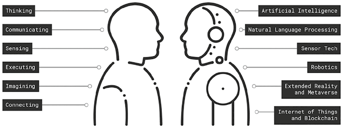
Hình 2.3: Lộ trình tiến tới AGI.Hình 2.3: Lộ trình tiến tới AGI (The Road Map to AGI).
📖 Nội dung chi tiết trong Hình 2.3 (Đối chiếu 6 Năng lực Con người và 6 Công nghệ Máy móc hướng tới AGI):
Năng lực Con người (Bên trái)
Dịch nghĩa Tiếng Việt
Công nghệ Máy móc tương ứng (Bên phải)
Dịch nghĩa Tiếng Việt chuẩn
Thinking
Suy nghĩ
Artificial Intelligence
Trí tuệ Nhân tạo (AI)
Communicating
Giao tiếp
Natural Language Processing
Xử lý Ngôn ngữ Tự nhiên (NLP)
Sensing
Cảm nhận
Sensor Tech
Công nghệ Cảm biến
Executing
Thực thi
Robotics
Robot học & Tự động hóa (RPA)
Imagining
Tưởng tượng
Extended Reality and Metaverse
Thực tế Mở rộng (XR) và Vũ trụ Ảo (Metaverse)
Connecting
Kết nối
Internet of Things and Blockchain
Internet Vạn vật (IoT) và Chuỗi khối (Blockchain)
Có sáu thuộc tính cốt lõi của con người mà máy móc phải mô phỏng: Suy nghĩ (Thinking), Giao tiếp (Communicating), Cảm nhận (Sensing), Thực thi (Executing), Tưởng tượng (Imagining) và Kết nối (Connecting). Mặc dù AI — chủ yếu được thúc đẩy bởi công nghệ xử lý ngôn ngữ tự nhiên (NLP – Natural Language Processing) — đã có những bước tiến thần tốc, việc chạm tới ngưỡng AGI sẽ đòi hỏi sự đột phá đồng bộ trên cả sáu chiều kích này.
Khi máy móc phát triển ngày càng nhiều phẩm chất giống con người, rủi ro người làm tiếp thị trở thành những kẻ đứng ngoài cuộc thụ động — bị thay thế không chỉ ở khâu thực thi mà cả ở tầm hoạch định chiến lược — cũng ngày một lớn dần.
1. Cỗ máy Biết Suy nghĩ (Machines That Think)
Suy nghĩ là năng lực nền tảng nhất của con người. Các mô hình AI như ChatGPT dựa trên hệ thống “mạng thần kinh nhân tạo” (neural network) — một cấu trúc mô phỏng mạng lưới các tế bào thần kinh kết nối với nhau trong não người. Các mô hình này bắt chước tư duy con người bằng cách đi theo một luồng xử lý tương tự: học hỏi từ kinh nghiệm, nhận diện quy luật và giải quyết vấn đề dựa trên các quy luật đó. Cũng giống như cách con người đúc kết kinh nghiệm từ quá khứ, hệ thống AI được huấn luyện trên các tập dữ liệu khổng lồ. Quá trình này cho phép máy móc xây dựng nền tảng tri thức, tương tự như cách con người hình thành ký ức. Cả con người lẫn máy móc đều học hỏi từ sai lầm và phản hồi để không ngừng tinh chỉnh tư duy của mình.
Con người và máy móc áp dụng quá trình học hỏi này để nhận diện các quy luật. Ví dụ, người làm tiếp thị có thể rút ra kết luận rằng một chiến dịch kể chuyện thương hiệu nhất định hiệu quả hơn các chiến dịch khác thông qua quá trình thử và sai. Tương tự, AI có thể xác định những thuộc tính chiến dịch nào thúc đẩy mức độ tương tác cao hơn bằng cách phân tích dữ liệu mạng xã hội.
Cũng như con người vận dụng kinh nghiệm để ra quyết định, AI sử dụng các mô hình đã học để đề xuất hành động. Phần lớn tư duy thường nhật của con người sử dụng các lối tắt tư duy trực giác (heuristics) để đưa ra quyết định nhanh chóng. Chẳng hạn, nhân viên cửa hàng Apple có thể dựa vào kinh nghiệm để bán chéo tai nghe AirPods cho khách đang mua iPhone. Tương tự, công cụ gợi ý bằng AI của Amazon có thể đề xuất trang phục thể thao thoải mái cho một khách hàng vừa để lại đánh giá tích cực có tiêu đề “đôi giày chạy bộ êm ái”.
Một số dạng tư duy khác lại đòi hỏi sự phân tích có hệ thống chặt chẽ hơn. Quá trình này bao gồm việc giải quyết vấn đề theo từng bước được xác định rõ ràng, thường được gọi là tư duy thuật toán (algorithmic thinking). Cả con người và máy móc đều sử dụng cách tiếp cận này cho những tác vụ đòi hỏi độ chính xác cao, chẳng hạn như phân khúc khách hàng dựa trên nghiên cứu thị trường hoặc tối ưu hóa chiến dịch dựa trên phân tích dữ liệu.
AI có thể mô phỏng tư duy con người, thậm chí thường xử lý được lượng dữ liệu lớn hơn với độ nhất quán cao hơn. Nhưng chính điểm mạnh đó cũng là điểm yếu của nó — AI thường đòi hỏi khối lượng dữ liệu khổng lồ mới có thể học được. Ngược lại, con người có khả năng ứng biến linh hoạt ngay cả khi có rất ít kinh nghiệm. Năng lực này bắt nguồn từ khả năng trừu tượng hóa khái niệm (conceptual abstractions) của con người — bao gồm việc khái quát hóa hoặc tạo ra các phép loại suy (analogies) giữa những ý tưởng tưởng chừng không hề liên quan đến nhau.
Nhiều công ty công nghệ đã nỗ lực tái tạo thế mạnh tư duy này của con người thông qua kỹ thuật “học không cần mẫu” (zero-shot learning) — phương pháp huấn luyện mô hình AI nhận diện quy luật mà không cần các ví dụ mẫu từ trước. Tuy nhiên, AI vẫn chưa thể sánh kịp khả năng thích ứng linh hoạt của tư duy con người.
Những bước tiến AI gần đây thực sự được đặt nền móng trên khoa học nhận thức và sự thấu hiểu sâu sắc hơn về cơ chế vận hành của não người. Google DeepMind và chương trình hợp tác Microsoft–inait đang thúc đẩy dòng AI lấy cảm hứng từ thần kinh học bằng cách mô hình hóa trí thông minh sinh học. Ở biên giới thử nghiệm xa hơn, lĩnh vực Trí tuệ Bào quan (Organoid Intelligence) đang khám phá việc nuôi cấy tế bào não 3D trong phòng thí nghiệm — gọi là các bào quan não (brain organoids) — làm cơ sở phát triển các hệ thống máy tính sinh học tổng hợp.
Khi máy móc bắt đầu đuổi kịp khả năng tư duy của con người, người làm tiếp thị phải đối mặt với nguy cơ rơi vào sự tự mãn. Quá tập trung vào việc huấn luyện AI, họ có thể sao nhãng việc mài sắc trực giác và năng lực phán đoán của chính mình — những phẩm chất tối quan trọng để đóng vai trò “người phản biện” (devil’s advocate). Người làm tiếp thị phải tiếp tục đặt câu hỏi trước các giả định, chất vấn các đề xuất của máy và chỉ ra những điểm mù mà thuật toán có thể bỏ sót.
Hơn nữa, khi khách hàng chỉ bị nhìn nhận như những điểm dữ liệu vô hồn, người làm tiếp thị có thể trở nên phụ thuộc thái quá vào phân tích số liệu mà đánh mất đi lòng thấu cảm (empathy). Tiếp thị thiếu vắng sự thấu cảm sẽ bỏ lỡ những nhu cầu ẩn sâu và động lực thầm kín đằng sau hành vi. Trong khi dữ liệu chỉ cho thấy các xu hướng bề mặt, thì chỉ có lòng thấu cảm mới khám phá ra điều gì thực sự làm lay động lòng người.
2. Cỗ máy Biết Giao tiếp (Machines That Communicate)
Ngôn ngữ định hình cách con người suy nghĩ, bởi đó là công cụ chính yếu mà chúng ta dùng để dạy và học. Con người sử dụng ngôn ngữ để diễn đạt những tư tưởng phức tạp và sẻ chia tri thức. Cấu trúc và vốn từ vựng của một ngôn ngữ chi phối những gì chúng ta chú ý trong một trải nghiệm cũng như mức độ sống động khi chúng ta ghi nhớ hoặc mô tả lại trải nghiệm đó.
Trong tiếp thị, ngôn ngữ cũng mang sức mạnh tương tự. Các cấu trúc ngôn ngữ khác nhau định hình cách thương hiệu giao tiếp tại từng khu vực trên thế giới. Một ví dụ kinh điển là chiến dịch “Share a Coke” (Trao Coca-Cola, kết nối bạn bè) của Coca-Cola. Tại Mỹ, vỏ chai in tên riêng phổ biến của cá nhân để khuyến khích việc tặng quà mang dấu ấn riêng. Tuy nhiên, tại Trung Quốc — nơi tên riêng vô cùng đa dạng và chủ nghĩa tập thể được đề cao trong văn hóa — Coca-Cola đã sử dụng các nhãn định danh xã hội như “Xiǎo Kě’ài” (Bé Đáng Yêu / Cutie) và “Dàshén” (Đại Thần / Chuyên gia / Guru), tạo nên sự cộng hưởng mạnh mẽ hơn hẳn với người tiêu dùng Gen Z Trung Quốc.
Ngôn ngữ cũng đóng vai trò trụ cột thúc đẩy sự bứt phá của AI. Bước ngoặt xuất hiện thông qua công nghệ xử lý ngôn ngữ tự nhiên (NLP) — nhánh AI cho phép máy móc hiểu và tạo ra ngôn ngữ con người. NLP đã khai sinh ra các mô hình ngôn ngữ lớn (LLMs – Large Language Models) như ChatGPT, cho phép người dùng tương tác với AI bằng ngôn ngữ giao tiếp hàng ngày thay vì mã lệnh lập trình. Bằng cách hạ thấp rào cản tiếp cận, NLP đã giúp AI trở nên gần gũi hơn và thúc đẩy làn sóng ứng dụng rộng khắp toàn cầu.
Tuy nhiên, một hạn chế cốt lõi vẫn tồn tại: phần lớn quá trình suy luận bên trong các mô hình LLM hiện nay vẫn diễn ra bằng tiếng Anh. Mặc dù các hệ thống này hỗ trợ đầu vào và đầu ra đa ngôn ngữ, logic nội tại của chúng chủ yếu được định hình bởi cấu trúc tiếng Anh. Ngay cả ở các mô hình phát triển tại Trung Quốc như DeepSeek, suy luận bằng tiếng Anh thường vẫn là chế độ mặc định do sự phong phú vượt trội của nguồn dữ liệu huấn luyện bằng tiếng Anh.
Điều này đặt ra một thách thức không nhỏ. Vì ngôn ngữ định hình tư duy con người, lối suy luận dựa trên tiếng Anh có thể bỏ sót những sắc thái văn hóa tinh tế ẩn sâu trong các ngôn ngữ bản địa khác. Những tầng nghĩa sâu xa có thể bị thất thoát trong quá trình chuyển ngữ, làm suy yếu sức thuyết phục của thông điệp. Hạn chế này đặc biệt nhạy cảm trong tiếp thị — lĩnh vực mà sự đồng điệu văn hóa và ngữ nghĩa đóng vai trò sống còn để thuyết phục khách hàng. Nhận thức rõ điều đó, những tiến bộ mới nhất trong NLP hiện đang vượt qua giới hạn giao tiếp đa ngôn ngữ đơn thuần để tiến tới suy luận đa ngôn ngữ (multilingual reasoning). Đây là bước đi thiết yếu để kiến tạo nên những hệ thống AI có trí thông minh văn hóa (culturally intelligent AI).
Trên thực tế, những cỗ máy biết giao tiếp đang làm thay đổi diện mạo ngành tiếp thị. LLM cho phép nắm bắt nhịp đập thị trường theo thời gian thực bằng cách phân tích các cuộc thảo luận trên mạng xã hội, phát hiện các xu hướng mới nổi và đánh giá tâm lý công chúng (public sentiment). LLM cũng vận hành các cuộc hội thoại ngày càng tự nhiên thông qua hệ thống chatbot trong dịch vụ khách hàng và bán hàng.
Thế nhưng, sự tiện lợi này có thể đi kèm với một cái giá khá đắt. Khi người làm tiếp thị dành quá nhiều thời gian để đọc các báo cáo phân tích thảo luận số và phó mặc giao tiếp cho chatbot, họ có thể sao nhãng việc trò chuyện trực tiếp với khách hàng ngoài đời thực — vốn mới là mạch nguồn của những thấu hiểu sâu sắc (deep insights) và mối quan hệ khách hàng chân thành.
Các mô hình LLM cũng đang cách mạng hóa hoạt động truyền thông thương hiệu và sáng tạo nội dung. LLM có thể viết lời quảng cáo và phác thảo các ý tưởng sáng tạo. Nó cho phép thương hiệu linh hoạt điều chỉnh giọng văn và ngôn từ dựa trên ngữ cảnh của từng nhóm khán giả. Tuy nhiên, khi thương hiệu ủy thác ngày càng nhiều “tiếng nói” của mình cho máy móc, họ cũng đối mặt với nguy cơ đánh mất đi tính chân thực (authenticity) — yếu tố cốt lõi vốn thu hút khách hàng đến với thương hiệu ngay từ buổi ban đầu.
3. Cỗ máy Biết Cảm nhận (Machines That Sense)
Nhiều chuyên gia lập luận rằng máy móc vẫn thiếu một khía cạnh tối quan trọng của trí thông minh con người: tính hiện thân (embodiment). Tư duy của con người đặt trên nền tảng một cơ thể sinh học tương tác trực tiếp với thế giới vật lý — thứ mà máy móc không hề có. Toàn bộ các tế bào trong cơ thể chúng ta liên tục đọc tín hiệu và thích nghi với môi trường xung quanh.
Nói cách khác, nhận thức của con người không chỉ là một chức năng đóng kín trong hộp sọ; nó huy động toàn bộ cơ thể để cảm nhận thế giới. Trí tuệ hiện thân (embodied intelligence) này cho phép con người dựa vào các lối tắt tư duy được dẫn dắt bởi trực giác. Ngược lại, máy móc vận hành thông qua các thuật toán, xử lý thông tin một cách máy móc có hệ thống và đòi hỏi khối lượng dữ liệu khổng lồ trong mọi lần xử lý.
Một khía cạnh then chốt của tính hiện thân này là vai trò của năm giác quan — thị giác, thính giác, xúc giác, khứu giác và vị giác — hoạt động như các cơ quan thụ cảm tiếp nhận kích thích từ bên ngoài. Các giác quan này thu thập dữ liệu từ môi trường và khởi발 các phản ứng nhận thức trong não bộ. Máy móc đang nỗ lực mô phỏng năng lực cảm nhận của con người thông qua việc sử dụng máy ảnh, micro, cảm biến xúc giác và các công nghệ cảm biến khác.
Thị giác máy tính (computer vision) cho phép máy móc nhận biết và giải mã thông tin hình ảnh như biểu cảm khuôn mặt, ảnh tĩnh và video. Công nghệ nhận dạng giọng nói (speech recognition) chuyển đổi ngôn ngữ nói thành văn bản để xử lý tiếp và được ứng dụng rộng rãi trong các trợ lý giọng nói AI. Cảm biến chuyển động và xúc giác đóng vai trò cốt lõi trong xe tự lái và robot học, giúp máy móc phát hiện chuyển động và định hướng không gian. Trong khi đó, các công nghệ “mũi điện tử” (electronic nose) và “lưỡi điện tử” (electronic tongue) cũng đang được phát triển để bắt chước khứu giác và vị giác, dù mức độ hoàn thiện vẫn còn hạn chế so với các hệ thống cảm biến khác.
Khi máy móc ngày càng có khả năng cảm nhận thế giới xung quanh tốt hơn, chúng bắt đầu giải mã và phản ứng với các tín hiệu đầu vào từ môi trường theo thời gian thực, khá giống với cách con người phản ứng. Khái niệm “trí tuệ sống” (living intelligence) do nhà tương lai học Amy Webb giới thiệu đã khám phá ý tưởng kết hợp giữa AI, cảm biến và công nghệ sinh học, cho phép AI tự học hỏi từ môi trường sống theo thời gian thực.
Bước chuyển dịch này tiềm ẩn những rủi ro đáng kể. Tiếp thị từ lâu đã bám rễ sâu vào sự thấu hiểu nhu cầu con người — những góc nhìn sâu sắc thường chỉ có được nhờ việc trực tiếp quan sát khách hàng trong môi trường sống tự nhiên của họ. Phương pháp nghiên cứu dân tộc học (ethnographic approach) — vốn khuyến khích người làm tiếp thị đắm mình vào đời sống thường nhật của khách hàng — đang có nguy cơ bị gạt sang bên lề khi hoạt động nắm bắt thị trường ngày càng bị giao khoán cho máy móc. Nếu đánh mất góc nhìn lấy con người làm trung tâm này, người làm tiếp thị rất dễ xa rời thực tế cuộc sống của khách hàng.
Mặc dù dữ liệu thu thập từ cảm biến mang lại lợi thế về quy mô và tốc độ, chúng thường thiếu đi ngữ cảnh (context). Máy móc có thể nhận diện được biểu cảm khuôn mặt và cử chỉ tay chân, nhưng chúng không thực sự thấu hiểu những cảm xúc ẩn đằng sau đó. Một nụ cười có thể báo hiệu niềm vui, sự che đậy khéo léo, hoặc nỗi bối rối ngượng ngùng — điều mà chỉ có sự diễn giải của con người, được hun đúc bởi lòng thấu cảm, mới có thể giải mã chính xác.
4. Cỗ máy Biết Thực thi (Machines That Execute)
Hành động là nơi tư duy biến thành hiện thực. Ở con người, việc thực thi bao gồm quá trình chuyển hóa suy nghĩ thành hành vi cụ thể, chẳng hạn như quyết định mua một món hàng hoặc giới thiệu sản phẩm cho bạn bè. Đối với máy móc, thực thi là quá trình triển khai các tác vụ dựa trên những quyết định được dẫn dắt bởi AI và hệ thống cảm biến.
Trong một số trường hợp, điều này bao gồm các hành động vật lý của robot. Ví dụ, khi khách đến nhận phòng khách sạn, một robot lễ tân có thể chào đón và hướng dẫn họ đặt căn cước công dân lên máy quét chuyên dụng để làm thủ tục check-in, tự động hóa hoàn toàn một quy trình trước đây vốn đòi hỏi sự tương tác của nhân viên lễ tân.
Khả năng thực thi cũng có thể diễn ra dưới hình thức tự động hóa quy trình bằng robot phần mềm (RPA – Robotic Process Automation). Hãy hình dung một ngân hàng tiếp nhận hồ sơ vay vốn: hệ thống RPA tự động trích xuất dữ liệu khách hàng, truy xuất điểm tín dụng từ các cơ sở dữ liệu bên ngoài, áp dụng mô hình đánh giá rủi ro và khởi chạy quy trình phê duyệt khoản vay — tất cả đều diễn ra trơn tru mà không cần bất kỳ sự can thiệp nào của con người.
Những cỗ máy biết thực thi đang nhanh chóng tái cấu trúc hoạt động vận hành tiếp thị. AI tác tử (Agentic AI) chính là hình thức AI được thiết kế để thực thi công việc với quyền tự chủ cao. Nó có thể quản lý trọn vẹn phễu tiếp thị, từ việc chấm điểm sàng lọc khách hàng tiềm năng, nuôi dưỡng họ cho đến khâu chốt đơn cuối cùng. Giờ đây, nó có thể tự động khởi chạy chiến dịch, thử nghiệm A/B (A/B testing) các mẫu quảng cáo sáng tạo và phân bổ ngân sách mà không cần đến bàn tay của nhân sự tiếp thị. Những chiến dịch trước đây từng mất hàng tuần để lên kế hoạch và triển khai thì nay có thể đi vào hoạt động chỉ trong vài phút, nhờ các hệ thống AI tối ưu hóa mọi biến số theo thời gian thực thông qua RPA.
Nhưng mức độ tự động hóa này cũng kéo theo những rủi ro nghiêm trọng khi biến hoạt động tiếp thị thành một chiếc “hộp đen”. Khi máy móc ngày càng thành thạo trong khâu thực thi, người làm tiếp thị có thể trở nên tách biệt thái quá khỏi quy trình, chỉ còn nhìn vào đầu vào (inputs) và đầu ra (outputs) mà bỏ qua toàn bộ cơ chế vận hành ở khoảng giữa.
Việc coi tiếp thị như một hộp đen cũng mở đường cho những điểm mù về mặt đạo đức. Khi khâu thực thi bị ủy thác hoàn toàn cho máy móc, người làm tiếp thị có thể mất đi khả năng kiểm soát xem quyết định được đưa ra như thế nào và những nhóm đối tượng nào có thể bị ảnh hưởng bất công. Ví dụ, một hệ thống AI được huấn luyện trên dữ liệu khách hàng lịch sử có thể vô tình học cách ưu tiên các mã bưu chính thuộc khu vực thu nhập cao, đồng thời loại bỏ các khu dân cư thu nhập thấp khỏi danh sách nhận ưu đãi cá nhân hóa. Thiên kiến thuật toán (algorithmic bias) này có thể khoét sâu thêm sự bất bình đẳng xã hội, ngay cả khi người tạo ra nó không hề chủ đích. Dù máy móc là kẻ trực tiếp thực thi tác vụ, trách nhiệm đạo đức và pháp lý cuối cùng vẫn thuộc về người làm tiếp thị.
5. Cỗ máy Biết Tưởng tượng (Machines That Imagine)
Trí tưởng tượng cho phép con người hình dung ra những điều chưa từng tồn tại — từ việc phát triển sản phẩm mới, thiết kế những trải nghiệm độc đáo cho đến viết nên những câu chuyện cuốn hút. Ở tầng sâu nhất, trí tưởng tượng dựa vào tư duy trừu tượng (abstract thinking) — một hình thức suy luận bậc cao vượt lên trên những gì có thể quan sát trực quan trước mắt.
Khi chúng ta phân tích tầng ý nghĩa sâu xa đằng sau một bộ phim hay chiêm nghiệm về những khái niệm như tình yêu và tự do, chúng ta đang vận dụng tư duy trừu tượng. Nó cho phép chúng ta nhìn thấy bức tranh lớn. Đó là lý do vì sao nghệ thuật kể chuyện (storytelling) luôn gắn kết mật thiết với tư duy trừu tượng: nó đòi hỏi chúng ta nắm bắt được những chủ đề vượt lên trên các sự kiện theo nghĩa đen.
Trí tưởng tượng cũng là động lực cốt lõi của sự sáng tạo. Nó cho phép kiến tạo tầm nhìn (visioning) — hình dung ra những tương lai chưa diễn ra và những giải pháp chưa từng xuất hiện. Nó khai thác sức mạnh từ các phép ẩn dụ (metaphors) và loại suy (analogies), giúp chúng ta kết nối những điểm rời rạc (connect the dots) giữa các lĩnh vực không liên quan hoặc tìm thấy nguồn cảm hứng từ những nơi bất ngờ nhất. Mọi sự đổi mới sáng tạo trong tiếp thị đều khởi nguồn từ trí tưởng tượng của con người.
Thế nhưng, trí tưởng tượng lại là năng lực con người khó sao chép nhất đối với máy móc. Trong khi AI tạo sinh chỉ vận hành trong ranh giới của dữ liệu huấn luyện sẵn có, trí tưởng tượng của con người dám dấn thân vượt ra ngoài những gì đã biết. Chúng ta hình dung về những tương lai chưa từng xảy đến. Không một tập dữ liệu lịch sử nào có thể xác nhận liệu một tầm nhìn mới có thành công hay không cho đến khi nó được đem ra thử nghiệm trong thế giới thực.
Khi AI cố gắng “tưởng tượng” vượt ra ngoài dữ liệu huấn luyện của mình, nó thường tạo ra hiện tượng được gọi là “ảo giác AI” (AI hallucination) — một kết quả đầu ra được trình bày đầy tự tin nhưng hoàn toàn sai sự thật và không có cơ sở thực tế. Về bản chất, đó chính là phiên bản trí tưởng tượng bị lỗi của máy móc. Khi máy móc đảm nhận ngày càng nhiều tác vụ sáng tạo, việc phân biệt xem chúng đang thực sự kiến tạo tầm nhìn hay chỉ đang gặp ảo giác lại càng trở nên khó khăn hơn.
Đối với máy móc, phiên bản tốt nhất của trí tưởng tượng được thể hiện thông qua các công nghệ thực tế mở rộng (XR) và vũ trụ ảo (metaverse). Những công nghệ nhập vai này cho phép máy móc dựng nên các không gian đắm chìm, nơi những ý tưởng tưởng chừng bất khả thi có thể được hiện thực hóa.
Thực tế mở rộng — bao gồm thực tế tăng cường (AR), thực tế ảo (VR) và thực tế hỗn hợp (MR – Mixed Reality) — giúp máy móc tạo ra những không gian giàu trí tưởng tượng tác động trực tiếp vào nhận thức giác quan của con người. Trong tiếp thị, điều này đồng nghĩa với việc tạo ra các phòng trưng bày ảo (virtual showrooms) hoặc bản dùng thử sản phẩm 3D. Vũ trụ ảo (metaverse) còn mở rộng biên giới này xa hơn nữa, cho phép thương hiệu mô phỏng những khả năng vượt qua giới hạn vật lý của thế giới thực, chẳng hạn như những chiếc ô tô bay trên nền tảng Roblox.
Tuy nhiên, nằm ở trái tim của mọi trải nghiệm nhập vai vẫn luôn là nghệ thuật kể chuyện (storytelling) — lĩnh vực vốn đòi hỏi trí tưởng tượng thuần túy của con người. Việc giao phó vai trò dẫn dắt câu chuyện cho những cỗ máy mà bản thân chúng ta không thể phân biệt được lúc nào chúng đang sáng tạo và lúc nào đang bịa đặt (ảo giác) tiềm ẩn một rủi ro vô cùng lớn.
Khi máy móc tự tạo ra các câu chuyện mà thiếu đi điểm tựa là sự phán đoán của con người, chúng có thể vô tình củng cố những định kiến độc hại, bóp méo các giá trị văn hóa hoặc cổ xúy cho những kỳ vọng phi thực tế. Những bước sẩy chân này có nguy cơ hủy hoại danh tiếng thương hiệu và làm xói mòn lòng tin của công chúng.
6. Cỗ máy Biết Kết nối (Machines That Connect)
Kết nối là một thế mạnh đặc trưng của con người, có tác động sâu sắc đến năng lực nhận thức. Con người phát triển rực rỡ trong các môi trường xã hội: gia đình, cộng đồng và đội nhóm. Bộ não con người thậm chí còn có một mạng lưới chuyên biệt quản lý các tương tác xã hội, cho thấy chúng ta được lập trình tự nhiên để kết nối sâu sắc đến nhường nào. Các nghiên cứu đã chỉ ra rằng sự thiếu hụt kết nối xã hội góp phần đáng kể vào tình trạng suy giảm nhận thức, càng khẳng định tầm quan trọng sống còn của các mối quan hệ. Thực vậy, toàn bộ tiến trình văn minh nhân loại đều được xây dựng trên năng lực hợp tác của chúng ta.
Giờ đây, máy móc cũng bắt đầu phản chiếu hình thức kết nối này, dù không hề hình thành các sợi dây gắn kết cảm xúc. Internet vạn vật (IoT) kết nối các thiết bị thông minh để thu thập dữ liệu từ môi trường xung quanh. Công nghệ chuỗi khối (blockchain) liên kết các máy tính trong một mạng lưới ngang hàng (peer-to-peer network) để cùng nhau duy trì các bản ghi thông tin an toàn, minh bạch. Khi kết hợp cùng nhau, IoT và blockchain cho phép máy móc tạo thành một hệ sinh thái kết nối sở hữu năng lực xử lý khổng lồ.
Các nghiên cứu gần đây cho thấy sự kết nối giữa các cỗ máy đang tiến xa hơn nữa. Trong một nghiên cứu công bố năm 2024 trên tạp chí khoa học Nature, các nhà khoa học đã phát triển thành công một mô hình AI có khả năng tự học các tác vụ mới rồi sau đó trực tiếp “dạy” lại chúng cho một AI khác. Các tác tử AI (AI agents) giờ đây có thể kết nối với nhau không chỉ để chuyển giao cơ sở tri thức mà còn truyền thụ toàn bộ các phương pháp thực hành tốt nhất (best practices).
Bước tiến này mang theo những rủi ro rõ rệt. Khi máy móc bắt đầu tự dạy và học hỏi lẫn nhau một cách độc lập, vai trò của con người có nguy cơ bị đẩy dần ra vùng ngoại vi. Dù một hệ sinh thái gồm các tác tử AI có thể nâng cao năng suất vượt bậc, nó không bao giờ có thể thay thế được kết nối giữa người với người. Nếu người làm tiếp thị giao phó quá nhiều khâu điều phối cho các hệ thống thông minh, họ sẽ đánh mất sợi dây liên hệ với bối cảnh nhân sinh (human context) — thứ duy nhất mang lại ý nghĩa thực sự cho thương hiệu.
Tóm tắt Chương 2
Mối quan hệ giữa con người và máy móc đã tiến hóa qua nhiều bước ngoặt lớn: từ thuở con người trực tiếp đóng vai trò là những “máy tính” (computers), tiến lên thành những “lập trình viên” (programmers), và giờ đây trong kỷ nguyên AI là những “người huấn luyện” (trainers) và “người điều phối” (orchestrators). Thay vì viết các câu lệnh chỉ thị tường minh, con người hiện nạp dữ liệu vào các mô hình để máy móc tự học hỏi và hoàn thiện. Khi AI ngày càng trở nên tự chủ hơn — chuyển dịch từ các hệ thống dựa trên quy tắc sang trí tuệ tác tử (agentic intelligence) — vai trò của con người trong mối quan hệ hợp tác này bắt đầu trở nên bấp bênh.
Sự chuyển dịch này đặc biệt nhạy cảm trong lĩnh vực tiếp thị. Mặc dù AI mang lại hiệu suất và quy mô chưa từng có tiền lệ, nó cũng làm gia tăng nguy cơ biến người làm tiếp thị thành những kẻ đứng ngoài cuộc thụ động ngay trên sân nhà của mình. Khi máy móc tiến dần tới ngưỡng AGI, chúng không còn đơn thuần là công cụ hỗ trợ mà trở thành những chủ thể ra quyết định tiềm năng.
Khi máy móc biết suy nghĩ, chúng có thể bắt đầu hoạch định chiến lược tiếp thị. Khi chúng biết giao tiếp, chúng có thể kiểm soát câu chuyện thương hiệu. Khi chúng biết cảm nhận, chúng có thể nắm bắt nhu cầu khách hàng nhanh hơn các nhà nghiên cứu thị trường. Khi chúng biết thực thi đa kênh, chúng có thể thâu tóm toàn bộ quy trình tiếp thị. Nếu chúng biết tưởng tượng, chúng có thể tự tạo ra các trải nghiệm nhập vai. Và nếu chúng biết kết nối, chúng sẽ tự quản lý các mối quan hệ khách hàng mà không cần sự giám sát của con người.
Mỗi năng lực mà máy móc tiếp thu được đều phản chiếu một thế mạnh cốt lõi của con người. Dù điều này đẩy nhanh lộ trình tiến tới AGI, nó cũng đe dọa làm lu mờ vai trò của con người trong ngành tiếp thị. Thách thức phía trước không nằm ở việc đơn thuần ứng dụng AI, mà là đảm bảo người làm tiếp thị luôn giữ vững vị thế là những đối tác chủ động, tích cực trong mối quan hệ cộng sinh giữa máy móc và con người.
Câu hỏi Suy ngẫm
Bạn vẫn đang là người hoạch định chiến lược hay chỉ đang gật đầu phê duyệt những gì AI đề xuất?
Bạn đang duy trì những mối quan hệ chân thành với khách hàng của mình, hay đang phó mặc toàn bộ việc quản trị quan hệ khách hàng cho AI?
Bạn có thực sự hiểu rõ cách các hệ thống AI của mình đưa ra quyết định, hay bạn đang vận hành trong một chiếc “hộp đen”?
Ai có thể ngờ rằng VUCA — một thuật ngữ ra đời từ Học viện Chiến tranh Lục quân Hoa Kỳ vào thập niên 1980 — lại mô tả chính xác thế giới ngày nay đến vậy? VUCA là viết tắt của Biến động (Volatility), Bất định (Uncertainty), Phức tạp (Complexity) và Mơ hồ (Ambiguity), tóm gọn hoàn hảo mức độ khó lường của môi trường kinh doanh hiện đại.
Sự biến động địa chính trị đang diễn ra gay gắt hơn bao giờ hết. Chiến tranh và xung đột vũ trang làm đứt gãy chuỗi cung ứng toàn cầu, dẫn đến tình trạng khan hiếm hàng hóa tại nhiều khu vực. Các cuộc chiến tranh thương mại lại chất thêm gánh nặng. Nhiều quốc gia nâng mức thuế quan để bảo hộ ngành sản xuất nội địa nhưng lại đối mặt với nguy cơ đẩy giá cả leo thang. Giới doanh nghiệp lo ngại sâu sắc về sức mua suy giảm và bóng ma suy thoái kinh tế.
Sự biến động này tiếp thêm dầu vào ngọn lửa bất định trên các thị trường tài chính. Thị trường chứng khoán khắp thế giới phản ứng tiêu cực trước những căng thẳng leo thang khi giới đầu tư trở nên thận trọng hơn. Trật tự thương mại toàn cầu giờ đây phức tạp hơn bất kỳ giai đoạn nào trước đó.
Thị trường từng nhiều lần phục hồi sau khủng hoảng. Tuy nhiên, chính sự mơ hồ (ambiguity) mới là điều khiến các doanh nghiệp trăn trở nhất. Dưới áp lực bủa vây, nhiều công ty hiện chỉ còn tập trung vào kết quả ngắn hạn, khiến việc hoạch định chiến lược dài hạn ngày càng trở nên gian nan. Người làm tiếp thị đứng trước bài toán khó: vừa phải cân bằng giữa áp lực mang lại kết quả tức thì với sứ mệnh kiến tạo kết nối bền lâu, vừa phải tích hợp trí tuệ nhân tạo (AI) — công cụ mang đến cả lời giải lẫn những hiểm họa khôn lường khi tạo dựng sức ảnh hưởng trên không gian số.
Tổ chức Dịch chuyển sang Tư duy Ngắn hạn
Chủ nghĩa ngắn hạn trong kinh doanh (business short-termism) đang đặt áp lực nặng nề lên vai các nhà lãnh đạo. Cổ đông luôn đòi hỏi những kết quả nhanh chóng và đo lường được ngay lập tức. Chế độ đãi ngộ của ban điều hành thường gắn chặt với thành tích ngắn hạn và vô hình trung trừng phạt các khoản đầu tư dài hạn. Hệ quả là các nhà lãnh đạo ưu tiên chạy theo những chiến thắng chớp nhoáng (quick wins).
Nếu ban lãnh đạo không đạt được kỳ vọng, doanh nghiệp thường coi thời điểm bất ổn chính là lúc thích hợp để thay tướng. Thực tế, tỷ lệ thay đổi Tổng giám đốc (CEO turnover) đã chạm mức cao kỷ lục vào năm 2025, theo số liệu từ hãng tư vấn nhân sự cấp cao Challenger, Gray & Christmas.
Các Giám đốc Tiếp thị (CMO – Chief Marketing Officers) cũng không nằm ngoài vòng xoáy áp lực này. Họ buộc phải áp dụng công nghệ mới và tạo ra kết quả tức thì trong một thế giới biến đổi chóng mặt do công nghệ dẫn dắt. Theo hãng săn đầu người cấp cao Spencer Stuart, nhiệm kỳ trung bình của một CMO chỉ kéo dài nhỉnh hơn bốn năm — con số phản ánh rõ mức độ khắc nghiệt của vị trí này.
Việc thay đổi lãnh đạo thường xuyên có thể tạo ra một vòng luẩn quẩn của sự bất ổn. Lãnh đạo mới thường mang theo tầm nhìn và chiến lược khác biệt. Kết quả là các kế hoạch trước đó có thể bị khai tử trước khi kịp đơm hoa kết trái. Điều này làm suy giảm tinh thần làm việc của đội ngũ nhân viên khi họ liên tục bị ép phải thích nghi lại từ đầu. Nhiều người trở nên thờ ơ và giảm sút sự gắn kết với công việc.
Tình hình càng trở nên trầm trọng hơn bởi xu hướng gắn bó ngắn hạn của lực lượng lao động trẻ. Theo Cục Thống kê Lao động Hoa Kỳ (Bureau of Labor Statistics), thời gian làm việc trung bình tại một công ty của người lao động trẻ chỉ bằng khoảng một phần ba so với thế hệ nhân sự lớn tuổi hơn.
Hành vi nhảy việc (job-hopping) này một phần bắt nguồn từ việc người lao động trẻ rất nhanh cảm thấy bất mãn. Thế hệ Gen Y (sinh từ năm 1981 đến 1996) — hiện chủ yếu nắm giữ các vị trí quản lý — rất giàu tham vọng. Họ tìm kiếm cơ hội thăng tiến sự nghiệp nhưng đồng thời đề cao sự cân bằng giữa công việc – cuộc sống (work-life balance) và tính linh hoạt.
Thế hệ Gen Z (sinh từ năm 1997 đến 2012) — hiện chủ yếu đảm nhận các vai trò vận hành — lại tìm kiếm những công việc mang lại ý nghĩa thực sự. Họ muốn làm việc tại những công ty có hệ giá trị tương đồng với bản thân và nơi họ có thể tạo ra tác động rõ rệt. Họ cũng đặc biệt quan tâm đến sức khỏe tinh thần và ưu tiên những môi trường làm việc nâng đỡ đời sống cảm xúc.
Khi cả lãnh đạo cấp cao, cấp quản lý lẫn nhân viên đều chỉ nhìn vào ngắn hạn — hoặc luôn nơm nớp lo sợ bị thay thế, hoặc liên tục ngóng chờ cơ hội mới tốt hơn — tổ chức buộc phải trở nên linh hoạt hơn để tồn tại.
Nhiều tổ chức áp dụng chiến lược tinh gọn (lean) và linh hoạt (agile) để thích ứng khi ban lãnh đạo thay đổi hoặc khi kế hoạch đổ bể. Họ lấy cảm hứng từ phương pháp sản xuất tinh gọn (lean manufacturing) vốn hướng tới việc tối ưu hóa quy trình và cắt giảm lãng phí. Tương tự, các nguyên tắc khởi nghiệp linh hoạt (agile startup principles) nhấn mạnh vào việc thử nghiệm nhanh và cải tiến liên tục qua từng vòng lặp. Những triết lý này giúp doanh nghiệp xoay chuyển nhanh chóng trước biến động.
Tiếp thị Chuyển mình sang Tinh gọn và Linh hoạt
Các phương pháp tiếp cận tinh gọn và linh hoạt này cũng đang định hình lại xu hướng tiếp thị. Doanh nghiệp đang dịch chuyển phần lớn ngân sách sang tiếp thị số. Các nghiên cứu của Deloitte và Gartner chỉ ra rằng từ 50% đến 60% chi tiêu tiếp thị hiện nay đổ vào các kênh kỹ thuật số. Sự dịch chuyển này hoàn toàn hợp lý, bởi các chiến dịch tiếp thị số dễ dàng điều chỉnh hơn nhiều so với các kênh truyền thống.
Trong mảng tiếp thị số, rất nhiều doanh nghiệp hiện tập trung vào tiếp thị hiệu suất (performance marketing). Chiến lược này nhắm tới những kết quả đo đếm được ngay tức thì thay vì xây dựng thương hiệu (brand building) trong dài hạn. Nó đặc biệt phổ biến ở những thương hiệu bán hàng chủ yếu qua mạng. Các thương hiệu này tận dụng những nền tảng như Google, Meta và Amazon để thúc đẩy tăng trưởng thần tốc.
Ví dụ, một ngân hàng áp dụng tiếp thị hiệu suất có thể hiển thị quảng cáo cho những người đang tìm kiếm thẻ tín dụng du lịch. Mẫu quảng cáo có thể viết: “Hoàn tiền ngay 100 USD — Mở thẻ ngay hôm nay.” Thông điệp đi thẳng vào vấn đề và tập trung hoàn toàn vào việc chốt đơn. Ngược lại, các quảng cáo xây dựng thương hiệu sử dụng những câu chuyện kể để tạo dựng sợi dây gắn kết cảm xúc với khách hàng.
Điểm mạnh cốt lõi của tiếp thị hiệu suất là phương pháp tiếp cận dựa trên dữ liệu, thường được nâng tầm nhờ AI. Khi được dẫn dắt bởi dữ liệu, tiếp thị số trở nên chuẩn xác hơn và giảm thiểu tối đa sự lãng phí. Nó cũng có tính giải trình (accountability) rất cao: doanh nghiệp chỉ phải trả tiền cho những kết quả hữu hình như khách hàng tiềm năng (leads) hoặc doanh số bán hàng thực tế.
Người làm tiếp thị có thể nhìn thấy kết quả ngay lập tức và tinh chỉnh đối tượng mục tiêu, nội dung cũng như ngân sách theo thời gian thực. Họ không cần phải chờ đợi các báo cáo sức khỏe thương hiệu hàng quý. Tiếp thị hiệu suất cũng khuyến khích văn hóa thử nghiệm: doanh nghiệp có thể chạy thử các chiến dịch nhỏ trước, sau đó mới mở rộng quy mô (scale up) những mẫu quảng cáo chứng minh được hiệu quả, giúp sử dụng nguồn lực một cách khôn ngoan.
Người làm Tiếp thị Sập “Bẫy Hiệu suất” (Performance Trap)
Dù sở hữu nhiều lợi điểm, tiếp thị hiệu suất vẫn tồn tại những mặt trái đáng gờm. Việc quá chú trọng vào doanh số chớp nhoáng có thể gây tổn hại nghiêm trọng về lâu dài. Thương hiệu có thể quên mất nhiệm vụ bồi đắp giá trị thương hiệu bền vững — vốn là chìa khóa cốt lõi giúp kéo giảm chi phí tiếp thị theo thời gian.
Nhiều công ty phụ thuộc nặng nề vào các chiến dịch quảng cáo trả phí trên nền tảng kỹ thuật số của bên thứ ba để thu hút khách hàng. Dù các chiến dịch này mang lại kết quả nhanh, chúng cũng thu hút ngày càng nhiều đối thủ cạnh tranh nhảy vào. Vì hầu hết các nền tảng đều vận hành theo cơ chế đấu giá (auction-based bidding), nhu cầu săn đón cùng một tập khách hàng ngày càng tăng tất yếu sẽ đẩy chi phí quảng cáo leo thang theo thời gian.
Tuy nhiên, mối lo ngại cấp bách hơn cả là cách khán giả nhìn nhận những chiến thuật này. Tiếp thị hiệu suất rất dễ gây nghiện cho thương hiệu. Họ liên tục bơm thêm tiền quảng cáo để chạy theo doanh số cao hơn. Thế nhưng theo thời gian, việc lạm dụng quá mức dẫn đến tình trạng mệt mỏi vì quảng cáo (ad fatigue): khán giả nhìn thấy cùng một mẫu quảng cáo quá nhiều lần và bắt đầu cảm thấy phiền phức, khó chịu.
Hơn nữa, phần lớn quảng cáo tiếp thị hiệu suất đều sử dụng các ưu đãi giới hạn thời gian hoặc giảm giá sâu để thúc đẩy hành động. Điều này nuôi dưỡng hành vi mua sắm chỉ vì khuyến mãi (deal-driven behavior), nơi khách hàng xuống tiền vì mức giá hời chứ không phải vì lòng trung thành thực sự với thương hiệu. Về lâu dài, điều này bào mòn biên lợi nhuận và làm suy yếu vị thế thương hiệu.
Trong cuộc rượt đuổi không ngừng nghỉ theo những kết quả tức thời, hoạt động tiếp thị có nguy cơ rơi vào sự thiển cận nguy hiểm. Chi phí quảng cáo tăng vọt, sự mệt mỏi của khán giả và hành vi mua sắm săn giảm giá của khách hàng chính là những hồi chuông cảnh báo. Các thương hiệu có thể thấy mình mắc kẹt trong một bẫy hiệu suất (performance trap) — mải miết chạy theo những thắng lợi ngắn hạn mà đánh đổi cả tài sản thương hiệu (brand equity) dài hạn.
AI và Sự Đồng질 hóa Hoạt động Tiếp thị (Homogenization of Marketing)
Tầm nhìn ngắn hạn của tiếp thị hiện đại chỉ là một trong số những thách thức trong kỷ nguyên số. Một vấn đề lớn hơn của tiếp thị ứng dụng AI chính là sự lệ thuộc vào việc dự đoán tương lai dựa trên những lựa chọn trong quá khứ.
Bạn có từng để ý cách Spotify và Netflix gợi ý nhạc hoặc phim không? Họ làm điều đó bằng cách phân tích những gì người dùng từng yêu thích trước đây. Công thức rất đơn giản: “Bạn đã thích nội dung này, vậy có thể bạn cũng sẽ thích nội dung kia.” Theo thời gian, những gợi ý này trở nên lặp đi lặp lại, giam hãm người dùng trong một chiếc bong bóng cá nhân. Thay vì giới thiệu những nội dung mới mẻ, chúng lại củng cố sở thích sẵn có và thu hẹp cơ hội tiếp xúc với những ý tưởng mới.
Điều này không chỉ gây bất lợi cho khán giả mà còn là mối đe dọa đối với sự sáng tạo. Khi cơ hội khám phá cái mới ít đi, tư duy sáng tạo cũng suy giảm theo. Tệ hơn nữa, các nhà sản xuất âm nhạc và điện ảnh bắt đầu chỉ ưu tiên làm ra những sản phẩm chiều lòng số đông an toàn nhất, khiến những ý tưởng nguyên bản và đột phá ngày càng khó có cơ hội vươn lên.
Tương tự như vậy, tiếp thị ứng dụng AI thường lái người làm tiếp thị đi theo lối mòn của những gì từng hiệu quả trong quá khứ: những dạng nội dung từng đạt chỉ số tương tác cao. Hệ quả là các thương hiệu bắt đầu sản xuất ra những nội dung na ná nhau. Thay vì tự định hình câu chuyện riêng, họ sao chép công thức thành công của kẻ khác. Các hệ thống dẫn dắt bởi AI — vốn được thiết kế để tối ưu sức hút đại chúng — đã vô tình tạo ra một nền tiếp thị đồng phục, đơn điệu. Cuối cùng, chúng bóp nghẹt sự khác biệt hóa mới mẻ.
Hiện tại, các mô hình AI tạo sinh dùng trong tiếp thị vẫn được huấn luyện trên kho nội dung do con người sáng tạo ra. Nhưng chuyện gì sẽ xảy ra khi internet bị nhấn chìm bởi nội dung do chính AI tạo ra? Các mô hình này sẽ ngày càng học lại từ chính sản phẩm đầu ra trước đó của chúng. Khi ấy, tiếp thị dẫn dắt bởi AI sẽ ngày càng trở nên đồng질 hóa (homogeneous) và đánh mất hoàn toàn tính chân thực.
Sự Suy thoái của Những Người làm Tiếp thị Chân thực
Cần làm rõ rằng chúng tôi không hề phản đối tiếp thị số và AI. Thực tế, chính chúng tôi đã cổ vũ mạnh mẽ cho chúng trong Marketing 4.0 và Marketing 5.0. Tuy nhiên, sự phụ thuộc ngày càng lớn vào các công cụ kỹ thuật số mang theo những rủi ro đáng kể. Tiếp thị không chỉ đang trở nên thiển cận vì quá chú trọng vào hiệu suất — nó đang đối mặt với một mối đe dọa hiện sinh sâu sắc hơn: nguy cơ đánh mất tính chân thực (authenticity). Nguyên nhân gốc rễ nằm ở chính tư duy của người làm tiếp thị. Dưới đây là lý do.
Kể từ đầu thập niên 2010, chúng ta đã chứng kiến sự trỗi dậy của một thế hệ những người làm tiếp thị mới với bộ kỹ năng khác biệt hoàn toàn so với các thế hệ tiền bối. Những người làm tiếp thị truyền thống coi tiếp thị nghiêng về nghệ thuật hơn là khoa học, chủ yếu vì họ chưa có trong tay các công nghệ như ngày nay. Ngược lại, những người làm tiếp thị hiện đại — vốn am tường kỹ thuật số hơn — lại nhìn nhận tiếp thị như một ngành khoa học thuần túy, tự trang bị cho mình hàng loạt công cụ tối tân mà phần nhiều được vận hành bởi AI.
Do phụ thuộc nặng nề vào các kênh tiếp thị số, chủ yếu là mạng xã hội và công cụ tìm kiếm, nhiều người làm tiếp thị thế hệ mới đã trở nên ám ảnh với các thuật toán. Tiếp thị trở nên nặng tính kỹ thuật thái quá. Các chương trình đào tạo và huấn luyện tiếp thị ngày nay nhấn mạnh vào việc “bẻ khóa thuật toán” (hacking the algorithm) và tối ưu hóa các chỉ số hiệu suất hơn là thấu hiểu tâm lý sâu xa của khách hàng.
Cách tiếp cận này bộc lộ một khiếm khuyết rõ rệt: người làm tiếp thị chỉ đang cố gắng “lách luật hệ thống” (game the system) thay vì giải mã tâm trí con người. Dù các thuật toán có thể đóng vai trò như một thước đo đại diện (proxy) cho hành vi con người, AI vẫn còn cách rất xa mới có thể tái tạo được sự phức tạp kỳ diệu trong tâm trí khách hàng.
Hơn nữa, tiếp thị hiệu suất thường thúc đẩy người làm tiếp thị chạy theo các trào lưu nhất thời để “cưỡi sóng” thuật toán. Những doanh nghiệp liên tục thay đổi thông điệp truyền thông theo các nội dung đang thịnh hành (trending) có nguy cơ đánh mất định vị nhất quán và các giá trị thương hiệu chân thực của mình. Cuộc rượt đuổi theo lượng tương tác ngắn hạn dẫn đến tình trạng bình dân hóa/hàng hóa hóa hoạt động tiếp thị (commoditization of marketing): mọi người làm tiếp thị đều dùng chung những công cụ giống nhau, chạy theo cùng những trào lưu như nhau, và tạo ra những chiến dịch trông chẳng khác gì nhau.
Hệ quả là hoạt động tiếp thị ngày càng trở nên nghèo nàn cảm hứng và thiếu vắng sự chân thực. Chất nghệ thuật từng làm nên sức quyến rũ của tiếp thị đang phai nhạt dần, bị thay thế bởi lối tiếp cận tối ưu hóa quá đà đặt hiệu suất lên trên tính chân thực.
Tính chân thực trong tiếp thị bắt nguồn từ tiếng nói độc bản của thương hiệu và những con người đứng đằng sau nó. Chính hệ giá trị, văn hóa và những trải nghiệm sống thực tế mới là chất liệu nhào nặn nên tiếng nói này. Dù các công cụ AI rất nhanh và hiệu quả, sản phẩm tiếp thị mà chúng tạo ra thường mang cảm giác chung chung, đại trà. Chúng dễ dàng bỏ lỡ dấu ấn con người (human touch) — thứ làm nên một câu chuyện chạm đến trái tim. Đó là lý do vì sao tiếp thị dẫn dắt thuần túy bởi AI thường thiếu đi cảm xúc và sự ấm áp mà nghệ thuật kể chuyện của con người mang lại.
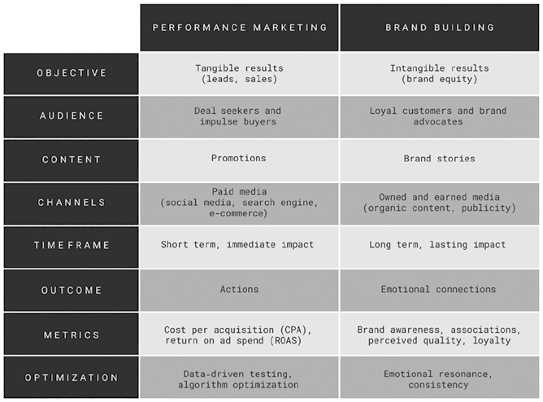
Hình 3.1: Tiếp thị Hiệu suất và Xây dựng Thương hiệu.Hình 3.1: Tiếp thị Hiệu suất và Xây dựng Thương hiệu (Performance Marketing and Brand Building).
📖 Nội dung chi tiết trong Hình 3.1 (Bảng So sánh Tiếp thị Hiệu suất và Xây dựng Thương hiệu):
Tiêu chí
Tiếp thị Hiệu suất (PERFORMANCE MARKETING)
Xây dựng Thương hiệu (BRAND BUILDING)
Mục tiêu (OBJECTIVE)
Kết quả hữu hình: khách hàng tiềm năng, doanh số (Tangible results: leads, sales)
Kết quả vô hình: tài sản thương hiệu (Intangible results: brand equity)
Khán giả mục tiêu (AUDIENCE)
Người săn ưu đãi và người mua sắm ngẫu hứng (Deal seekers and impulse buyers)
Khách hàng trung thành và người ủng hộ/lan tỏa thương hiệu (Loyal customers and brand advocates)
Nội dung (CONTENT)
Chương trình khuyến mãi (Promotions)
Câu chuyện thương hiệu (Brand stories)
Kênh triển khai (CHANNELS)
Truyền thông trả phí: mạng xã hội, công cụ tìm kiếm, thương mại điện tử (Paid media: social media, search engine, e-commerce)
Truyền thông sở hữu và truyền thông lan tỏa tự nhiên: nội dung tự nhiên, PR báo chí (Owned and earned media: organic content, publicity)
Khung thời gian (TIME FRAME)
Ngắn hạn, tác động tức thì (Short term, immediate impact)
Dài hạn, tác động bền vững (Long term, lasting impact)
Kết quả đầu ra (OUTCOME)
Hành động chuyển đổi (Actions)
Kết nối cảm xúc (Emotional connections)
Chỉ số đo lường (METRICS)
Chi phí thu hút mỗi khách hàng (CPA), Lợi tức trên chi tiêu quảng cáo (ROAS) (Cost per acquisition – CPA, return on ad spend – ROAS)
Độ nhận biết thương hiệu, liên tưởng thương hiệu, chất lượng cảm nhận, lòng trung thành (Brand awareness, associations, perceived quality, loyalty)
Cách tối ưu hóa (OPTIMIZATION)
Thử nghiệm dựa trên dữ liệu, tối ưu hóa thuật toán (Data-driven testing, algorithm optimization)
Sự cộng hưởng cảm xúc, tính nhất quán (Emotional resonance, consistency)
Kết hợp Tinh hoa của Cả Hai Thế giới (The Best of Both Worlds)
Để thành công trong bối cảnh ngày nay, doanh nghiệp phải kết hợp được tinh hoa của cả hai thế giới: họ cần cả tiếp thị hiệu suất ứng dụng AI lẫn hoạt động xây dựng thương hiệu do con người dẫn dắt. Cách tiếp cận bổ trợ lẫn nhau này được thể hiện rõ trong Hình 3.1.
Tiếp thị hiệu suất mang lại kết quả tức thì. Nó thu hút những người săn ưu đãi, những người mua sắm ngẫu hứng và những khách hàng đã sẵn sàng hành động. Hình thức tiếp thị này phát huy tác dụng rất tốt trên các nền tảng như công cụ tìm kiếm, sàn thương mại điện tử và mạng xã hội. Nó sử dụng các chiến thuật ngắn hạn như chiết khấu và ưu đãi có thời hạn. Các chiến dịch này vận hành dựa trên dữ liệu; người làm tiếp thị sử dụng những chỉ số như chi phí thu hút một khách hàng (CPA – Cost Per Acquisition) và lợi tức trên chi tiêu quảng cáo (ROAS – Return on Ad Spend) để đo lường thành công. Nhờ vậy, việc tối ưu hóa rất dễ dàng: người làm tiếp thị có thể liên tục tinh chỉnh chiến dịch để thúc đẩy hiệu suất.
Ngược lại, xây dựng thương hiệu đòi hỏi thời gian. Nó tập trung vào sự gắn kết cảm xúc và lòng trung thành dài hạn. Thay vì thúc ép bán hàng, nó kể những câu chuyện, chia sẻ mục đích tồn tại của thương hiệu (brand purpose) và kiến tạo ý nghĩa. Hoạt động xây dựng thương hiệu dựa vào kênh truyền thông sở hữu (owned media) và truyền thông lan tỏa tự nhiên (earned media), chẳng hạn như nội dung tự nhiên (organic content) và sự đưa tin của báo chí. Mức độ nhận biết thương hiệu, sự liên tưởng thương hiệu, chất lượng cảm nhận và lòng trung thành là những thước đo thành công của nó. Chìa khóa cốt lõi là duy trì sự nhất quán trong khi vẫn giữ được tính thời sự và sự liên quan theo thời gian.
Hầu hết những người làm tiếp thị đều tin rằng họ phải cân bằng giữa tiếp thị hiệu suất và xây dựng thương hiệu. Họ quản lý sự đánh đổi này bằng cách chia nhỏ ngân sách: một phần dành cho doanh số ngắn hạn và phần còn lại dành cho thương hiệu dài hạn. Tuy nhiên, khi doanh nghiệp nỗ lực vận hành tinh gọn và linh hoạt, việc xé lẻ nguồn ngân sách hữu hạn thành hai khoản tách biệt là điều không khôn ngoan.
Có một phương pháp tiếp cận hiệu quả hơn nhiều: thay vì chỉ cân bằng hai vế, người làm tiếp thị nên tích hợp chúng lại với nhau. Các chiến dịch hiệu suất phải kết nối chặt chẽ với mục tiêu xây dựng thương hiệu. Chiến dịch không nên chỉ xoay quanh chuyện khuyến mãi và giảm giá; chúng hoàn toàn có thể vừa thúc đẩy doanh số bán hàng vừa bồi đắp giá trị thương hiệu cùng một lúc. Khái niệm này được gọi là tiếp thị Brandformance (tích hợp Thương hiệu và Hiệu suất) — sự hợp nhất giữa brand và performance, cho phép thương hiệu gặt hái thành công trong ngắn hạn đồng thời giữ vững vị thế hùng mạnh trong dài hạn.
📌 Nghiên cứu Tình huống (Case Study): Chiến dịch “U Up?” của IKEA — Biến Hiệu suất thành Giá trị Thương hiệu
Chiến dịch “U Up?” (Bạn còn thức chứ?) của IKEA là một cú bẻ lái thông minh minh chứng cho việc tiếp thị hiệu suất có thể bồi đắp cho thương hiệu về lâu dài như thế nào. Được IKEA Canada triển khai vào năm 2025, chiến dịch nhắm tới những người dùng mạng xã hội thức khuya vẫn đang lướt điện thoại sau nửa đêm. Trong khung giờ từ 10 giờ đêm đến 5 giờ sáng, IKEA gửi cho người dùng Instagram một tin nhắn ngắn gọn, đời thường: “U Up?” — câu cửa miệng nổi tiếng trong văn hóa nhắn tin đêm khuya của giới trẻ.
Những ai trả lời tin nhắn này ngay lập tức nhận được mã giảm giá 15% khi mua nệm IKEA. Ý tưởng vừa rõ ràng vừa đầy sáng tạo: thay vì quảng bá giảm giá qua các mẫu quảng cáo truyền thống, IKEA bước vào không gian cá nhân của người dùng — hộp thư tin nhắn trực tiếp (DM) — và trò chuyện với họ trong khoảnh khắc trực tuyến riêng tư nhất.
Cụm từ này tạo được sự đồng điệu mạnh mẽ với khán giả trẻ vì “U Up?” chính là ngôn ngữ số thường ngày của họ — hóm hỉnh, gần gũi và nhận ra ngay lập tức từ các ứng dụng hẹn hò cũng như văn hóa ảnh chế (meme). Tuy nhiên, IKEA đã khéo léo đảo ngược nét nghĩa thông thường: tin nhắn này không phải để tán tỉnh mà để hỏi han về giấc ngủ và việc chăm sóc bản thân. Sự nhạy bén văn hóa này khiến chiến dịch mang đậm hơi thở con người chứ không hề khô khan kiểu doanh nghiệp.
Chiến dịch “U Up?” đã thúc đẩy doanh số trực tiếp với lời kêu gọi hành động (CTA) rõ ràng (mua một chiếc nệm êm ái hơn), đồng thời củng cố câu chuyện thương hiệu của IKEA — một công ty luôn quan tâm đến việc cải thiện cuộc sống thường ngày thông qua các giải pháp nội thất tiện dụng với mức giá phải chăng. Chiến dịch đã làm nổi bật định vị của IKEA như một thương hiệu nâng tầm chất lượng sống.
Quan trọng hơn cả, IKEA đã chứng minh rằng tiếp thị không cần phải chọn một trong hai giữa hiệu suất ngắn hạn và xây dựng thương hiệu dài hạn. “U Up?” đã đạt được cả hai mục tiêu: vừa tạo ra tương tác và chuyển đổi đơn hàng, vừa làm sâu sắc thêm sợi dây gắn kết cảm xúc với tệp khách hàng trẻ.
Người làm tiếp thị cũng phải biết kết hợp thế mạnh của cả AI lẫn con người. Hình 3.2 làm nổi bật những khác biệt cốt lõi giữa hiệu suất của AI (AI efficiency) và sự sáng tạo của con người (human creativity). AI dựa vào các quy luật đã được thiết lập và dữ liệu lịch sử để tạo ra kết quả nhanh chóng. Quy trình của nó mang tính hệ thống, tuyến tính và tư duy hội tụ (convergent). Điều này mang lại tốc độ và sự nhất quán, đặc biệt hiệu quả khi xào nấu, phối trộn lại các ý tưởng sẵn có và truyền tải thông điệp trực diện, rõ ràng.
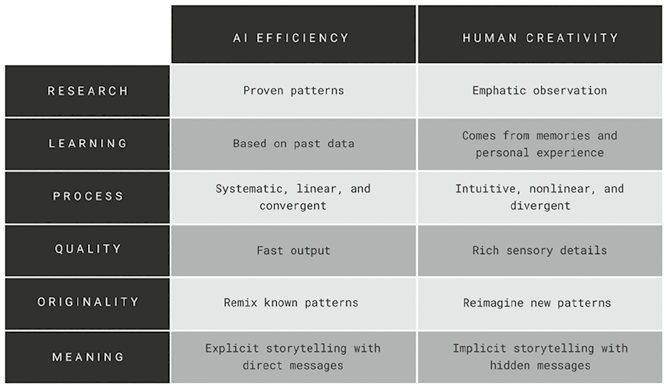
Hình 3.2: Hiệu suất của AI và Sự sáng tạo của Con người.Hình 3.2: Hiệu suất của AI và Sự sáng tạo của Con người (AI Efficiency and Human Creativity).
📖 Nội dung chi tiết trong Hình 3.2 (Bảng So sánh Hiệu suất của AI và Sự sáng tạo của Con người):
Tiêu chí
Hiệu suất của AI (AI EFFICIENCY)
Sự sáng tạo của Con người (HUMAN CREATIVITY)
Nghiên cứu (RESEARCH)
Các quy luật đã được chứng minh (Proven patterns)
Quan sát thấu cảm (Empathic observation)
Học hỏi (LEARNING)
Dựa trên dữ liệu quá khứ (Based on past data)
Khởi nguồn từ ký ức và trải nghiệm cá nhân (Comes from memories and personal experience)
Quy trình (PROCESS)
Có hệ thống, tuyến tính và tư duy hội tụ (Systematic, linear, and convergent)
Trực giác, phi tuyến tính và tư duy phân kỳ (Intuitive, nonlinear, and divergent)
Phẩm chất đầu ra (QUALITY)
Tốc độ xuất bản nhanh (Fast output)
Giàu chi tiết giác quan (Rich sensory details)
Tính nguyên bản (ORIGINALITY)
Phối trộn lại các quy luật đã biết (Remix known patterns)
Tái hình dung những quy luật mới (Reimagine new patterns)
Ý nghĩa (MEANING)
Kể chuyện tường minh với thông điệp trực diện (Explicit storytelling with direct messages)
Kể chuyện hàm ẩn với những thông điệp sâu xa (Implicit storytelling with hidden messages)
Sự sáng tạo của con người lại vận hành theo một cơ chế hoàn toàn khác. Nó khai thác chất liệu từ ký ức, cảm xúc và sự quan sát thế giới thực. Quá trình sáng tạo mang tính trực giác, phi tuyến tính và đôi khi khá hỗn độn. Dù có thể mất nhiều thời gian hơn, nó lại kết tinh thành những chi tiết giác quan phong phú và khả năng tái hình dung ý tưởng theo những cách thức hoàn toàn mới mẻ. Không giống như sự trực diện của AI, nghệ thuật kể chuyện của con người thường ẩn chứa nhiều tầng nghĩa sâu xa và những tín hiệu cảm xúc tinh tế.
Phép so sánh này cho thấy AI mang lại tốc độ và cấu trúc, trong khi con người mang đến chiều sâu và tính nguyên bản (originality). Mỗi bên đều có những thế mạnh riêng biệt, nhưng khi được kết hợp cùng nhau, chúng có thể bổ khuyết cho nhau một cách hoàn hảo.
Tiếp thị Hiệu suất × Xây dựng Thương hiệu Dưới Lăng kính Não bộ
Trong kỷ nguyên số, những kết nối giàu ý nghĩa đang phai nhạt dần khỏi hoạt động tiếp thị hiện đại — vốn ngày càng trở nên máy móc và nặng về con số. Sự trỗi dậy của tiếp thị số và AI đã giúp tiếp thị đạt hiệu suất cao hơn, nhưng thường phải trả giá bằng sự gắn kết chân thực.
Mặc dù các thương hiệu giờ đây có thể nhắm mục tiêu khán giả với độ chính xác từng milimet, việc quá tập trung vào lợi ích ngắn hạn đã làm lu mờ triết lý lấy con người làm trung tâm của tiếp thị. Sự dịch chuyển này khiến nhiều thương hiệu chật vật trong việc tạo dựng ấn tượng bền lâu vượt ra ngoài các chương trình khuyến mãi giảm giá.
Lấy con người làm trung tâm thực sự trong tiếp thị có nghĩa là xây dựng những kết nối có ý nghĩa với con người và chạm đến cả tâm trí, trái tim lẫn tinh thần của họ. Dưới lăng kính của khoa học nhận thức, điều này đồng nghĩa với việc kích hoạt toàn bộ các vùng não tham gia vào quá trình ra quyết định của con người. Thế nhưng, nhiều chiến lược tiếp thị ngày nay — đặc biệt là những chiến lược chỉ chăm chăm vào tiếp thị hiệu suất — thường chỉ tác động vào một phần rất nhỏ trong tiến trình ra quyết định đó.
Mô hình bộ não ba ngôi (triune brain model), do nhà thần kinh học Paul D. MacLean đề xuất vào thập niên 1960, là một khung lý thuyết trực quan giúp hiểu cách bộ não xử lý các kích thích tiếp thị. Mặc dù khoa học thần kinh hiện đại đã tiến xa hơn mô hình này — nhìn nhận nó như một sự giản lược hóa — đây vẫn là một cách tiếp cận hữu ích để hình dung cách các kích thích tiếp thị khác nhau tác động lên từng tầng não bộ.
Theo mô hình này, bộ não con người gồm ba phần riêng biệt (Hình 3.3):
Não cổ / Não bò sát (Old brain / Reptilian brain): Phần nguyên thủy nhất của bộ não, chịu trách nhiệm cho các quyết định bản năng — chủ yếu liên quan đến sự sinh tồn, chẳng hạn như phản xạ “chiến hay chạy” (fight-or-flight) kinh điển.
Não giữa / Hệ viền (Middle brain / Limbic system): Được mệnh danh là bộ não cảm xúc, chuyên xử lý cảm giác, các kết nối xã hội và ký ức.
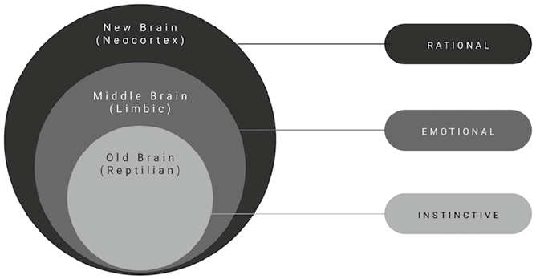
Hình 3.3: Mô hình Bộ não Ba ngôi Giản lược.Hình 3.3: Mô hình Bộ não Ba ngôi Giản lược (The Simplified Triune Brain Model).
📖 Nội dung chi tiết trong Hình 3.3 (Cấu trúc 3 Tầng của Mô hình Bộ não Ba ngôi):
Tầng não bộ trên sơ đồ (Bên trái)
Dịch nghĩa Tiếng Việt chuẩn
Cơ chế Phản ứng (Bên phải)
New Brain (Neocortex)(Lớp ngoài cùng)
Não mới (Tân vỏ não)
RATIONAL — Lý tính (Phân tích logic, ngôn ngữ, suy luận)
Middle Brain (Limbic)(Lớp giữa)
Não giữa (Hệ viền)
EMOTIONAL — Cảm xúc (Cảm giác, kết nối xã hội, trí nhớ)
Old Brain (Reptilian)(Lõi trong cùng)
Não cổ (Não bò sát)
INSTINCTIVE — Bản năng (Phản xạ tức thời, sinh tồn)
Não mới / Tân vỏ não (New brain / Rational and analytical neocortex): Chịu trách nhiệm suy luận logic, ngôn ngữ và giải quyết các vấn đề phức tạp.
Tiếp thị hiệu suất chủ yếu nhắm vào não cổ — phần kiểm soát các quyết định bản năng, chớp nhoáng. Vùng não này phản ứng tự động mà không cần suy nghĩ nhiều và chỉ tập trung vào phần thưởng tức thì. Vì xử lý thông tin cực nhanh, nó phản ứng rất nhạy với các chiến thuật tiếp thị ngắn hạn. Những thông điệp nhấn mạnh vào sự khan hiếm (như “Chỉ còn vài sản phẩm cuối cùng!”) hoặc tính cấp bách (như “Ưu đãi giới hạn thời gian!”) thúc đẩy con người hành động ngay trước khi đánh mất cơ hội.
Tuy nhiên, tiếp thị hiệu suất thường không xây dựng được kết nối cảm xúc bền chặt với khách hàng và không tạo ra ký ức lâu dài. Các kết nối cảm xúc gắn liền mật thiết với trí nhớ — vốn được xử lý chủ yếu ở não giữa. Những thương hiệu và trải nghiệm khiến con người cảm nhận được cảm xúc tích cực sẽ dễ được ghi nhớ hơn nhiều.
Cảm xúc đóng vai trò thiết yếu đối với độ gợi nhớ thương hiệu (brand recall) — khi khách hàng sẵn sàng mua sắm, họ tự nhiên nghĩ ngay đến những thương hiệu mà mình yêu mến. Những thương hiệu tạo dựng được sợi dây tình cảm với khách hàng có khả năng cao hơn hẳn trong việc chiếm giữ vị trí đầu bảng trong tâm trí (top of mind), trở thành lựa chọn ưu tiên hàng đầu khi quyết định mua hàng.
Tiếp thị hiệu suất cũng thất bại trong việc thu hút não mới — trung tâm tư duy lý tính. Vì chỉ tập trung kích thích mua sắm bốc đồng, khách hàng thường xuống tiền chỉ vì thấy một món hời hơn là vì sự gắn kết sâu sắc với thương hiệu. Hệ quả là thương hiệu không thiết lập được sự khác biệt hóa rõ ràng trong tâm trí khách hàng. Điều này khiến các đối thủ cạnh tranh tung ra mức giảm giá tốt hơn dễ dàng cuỗm mất chính những khách hàng đó, dẫn đến lòng trung thành thương hiệu cực thấp.
Hơn nữa, nếu thiếu một nền tảng lý tính vững chắc, khách hàng rất dễ rơi vào tâm lý hối tiếc sau khi mua hàng (buyer's remorse) khi họ có thêm thời gian để đánh giá kỹ lại sản phẩm hoặc dịch vụ. Điều này làm suy yếu niềm tin của khách hàng và khiến thương hiệu đánh mất sự ủng hộ/lan tỏa tự nguyện (advocacy) — yếu tố sống còn giúp giảm chi phí tiếp thị trong dài hạn.
Hoạt động xây dựng thương hiệu sẽ lấp đầy những khoảng trống mà tiếp thị hiệu suất bỏ lại. Vượt lên trên việc chạm vào bộ não cảm xúc thông qua những câu chuyện thương hiệu truyền cảm hứng, một thương hiệu có định vị sắc nét với sự khác biệt hóa rõ ràng và lý do thuyết phục để tin tưởng (reason to believe) còn chinh phục được cả bộ não lý tính. Xây dựng thương hiệu hoàn thiện trọn vẹn phương pháp tiếp cận lấy con người làm trung tâm bằng cách kích hoạt toàn bộ não bộ và nuôi dưỡng những kết nối sâu sắc hơn.
Vận hành tinh gọn và linh hoạt là điều thiết yếu trong một thế giới bất định. Ưu tiên các kết quả đo lường được là hoàn toàn xác đáng. Tận dụng các kênh tiếp thị số và công cụ AI là nhu cầu tất yếu. Tuy nhiên, chúng ta phải nhắc nhở thế hệ những người làm tiếp thị kế cận rằng tiếp thị còn vươn xa hơn những con số hữu hình. Tiếp thị không chỉ là câu chuyện của dữ liệu và hiệu suất; đó là nghệ thuật kiến tạo những kết nối giàu ý nghĩa. Hãy đưa mục đích cao đẹp và linh hồn trở lại với tiếp thị.
📌 Nghiên cứu Tình huống (Case Study): Studio Ghibli và OpenAI — Linh hồn Đối đầu Tốc độ
Vào năm 2025, OpenAI cập nhật mô hình GPT-4o cho phép tạo ra những bức ảnh chất lượng cao theo nhiều phong cách nghệ thuật khác nhau, bao gồm cả phong cách của Studio Ghibli — xưởng phim hoạt hình Nhật Bản được yêu mến với lượng người hâm mộ hùng hậu trên toàn cầu. Người dùng có thể tải lên một bức ảnh có sẵn và yêu cầu ChatGPT vẽ lại theo phong cách đặc trưng của Studio Ghibli.
Bản cập nhật nhanh chóng gây sốt trên toàn cầu, kéo theo hàng triệu người dùng mạng xã hội và các thương hiệu lớn nhập cuộc. Chẳng hạn, hãng hàng không Airbus đã đăng tải hình ảnh chiếc máy bay vận tải BelugaXL phiên bản Ghibli. Nhiều người dùng khác biến ảnh gia đình và các bức ảnh chế (memes) thành tranh hoạt hình do AI vẽ. Rất nhiều người ca ngợi khả năng sao chép thẩm mỹ Ghibli đáng kinh ngạc của AI; tuy nhiên, trào lưu này cũng vấp phải làn sóng chỉ trích gay gắt vì chỉ bắt chước một di sản nghệ thuật sẵn có thay vì sáng tạo ra điều gì mới mẻ.
Đồng sáng lập Studio Ghibli, đạo diễn huyền thoại Hayao Miyazaki, từ lâu đã kịch liệt phản đối việc dùng AI trong sáng tạo nghệ thuật. Ông tin rằng nghệ thuật chân chính bắt nguồn từ con người chứ không phải máy móc. Bộ phim tài liệu Hayao Miyazaki and the Heron (Hayao Miyazaki và Chim Diệc) đã khắc họa rõ nét sự khác biệt giữa quá trình sáng tạo của con người và AI, kể lại hành trình đầy trăn trở của Miyazaki khi thực hiện bộ phim hoạt hình đoạt giải Oscar The Boy and the Heron (Thiếu niên và Chim Diệc).
Bộ phim tài liệu nhấn mạnh rằng quá trình sáng tạo của con người thường mang tính phi tuyến tính. Người nghệ sĩ có thể rơi vào bế tắc và đôi khi phải xé nháp làm lại từ đầu. Không có kịch bản cố định nào được lập trình sẵn; các ý tưởng và hình ảnh nảy nở thông qua quá trình tìm tòi, khám phá trên từng khung hình phân cảnh (storyboarding).
Cách tiếp cận của Miyazaki cũng thấm đẫm lòng thấu cảm. Ông luôn đặt mình vào vị trí của trẻ thơ — những khán giả chính của mình. Ông thường xuyên quan sát lũ trẻ tại một trường mẫu giáo gần xưởng phim để thấu hiểu thế giới nội tâm của chúng, từ đó nắm bắt trọn vẹn trí tưởng tượng trẻ thơ vào trong cách kể chuyện.
Những trải nghiệm cá nhân xương máu cũng định hình nên tác phẩm của Miyazaki. Nhân vật chính Mahito được lấy cảm hứng từ chính tuổi thơ của ông. Người dẫn đường của Mahito — ông bác Granduncle — được xây dựng dựa trên hình mẫu Isao Takahata, người bạn tri kỷ và là cố đồng sáng lập Studio Ghibli. Bộ phim phản chiếu nỗi đau mất mát của Miyazaki trước sự ra đi của Takahata cũng như những chiêm nghiệm của ông về sự hữu hạn của kiếp người.
Tiến trình sáng tạo của Miyazaki luôn du hành giữa thực tại và mộng tưởng. Câu chuyện của ông mang lại cảm giác vừa thân thuộc vừa lạ lẫm, mời gọi khán giả nhìn ngắm thế giới từ những lăng kính khác nhau và khám phá các vấn đề nhân sinh, xã hội thông qua thế giới kỳ ảo.
Các chi tiết giác quan là linh hồn trong tác phẩm của Miyazaki. Ông nghiên cứu tỉ mỉ từng cung bậc cảm xúc của con người, từng chuyển động tự nhiên và từng biểu cảm lời nói. Tác phẩm của ông được vẽ tay chăm chút qua từng khung hình (frame by frame). Ông liên tục chỉnh sửa cho đến khi chuyển động hoạt hình mang lại cảm giác chân thực nhất. Điều này cho thấy quá trình sáng tạo của con người mang tính nhân bản sâu sắc đến nhường nào.
Dù đi đến một cái kết viên mãn, bộ phim Thiếu niên và Chim Diệc đã tiêu tốn tới bảy năm ròng rã. Quá trình đằng đẵng ấy bị chậm lại bởi đại dịch và sự cầu toàn tuyệt đối của những người sáng tạo. Trong thế giới hối hả ngày nay, có lẽ bộ phim sẽ đạt hiệu suất nhanh hơn nếu sử dụng AI hỗ trợ ở một số khâu kỹ thuật — nhưng chắc chắn AI không bao giờ có thể thay thế được linh hồn mà Miyazaki đã thổi vào tác phẩm.
Hiệu suất của AI × Sự Sáng tạo của Con người
Khoa học nhận thức hiện đại chỉ ra rằng sự sáng tạo phụ thuộc vào tư duy phân kỳ (divergent thinking) — khả năng mở rộng góc nhìn ra nhiều hướng giải pháp khả thi khác nhau. Tuy nhiên, tiếp thị dẫn dắt bởi AI lại thường vận hành bằng tư duy hội tụ (convergent thinking): thu hẹp mọi thứ về một phương án tối ưu hóa duy nhất, giúp công việc đạt hiệu suất cao nhưng lại bóp nghẹt không gian khám phá cần thiết cho sự đổi mới thực sự.
Sự sáng tạo của con người vô cùng phức tạp và là bài toán khó để AI sao chép. Nó phụ thuộc vào sự phối hợp nhịp nhàng giữa hệ thống trí nhớ và các chức năng điều hành (executive functions) của não bộ. Khi chúng ta phát triển những ý tưởng mới, chúng ta khai thác những trải nghiệm quá khứ được lưu giữ trong trí nhớ dài hạn. Hai loại trí nhớ dài hạn đóng vai trò cốt lõi trong tư duy sáng tạo này (Hình 3.4):
Trí nhớ ngữ nghĩa (Semantic memory — trí nhớ “biết”): Lưu trữ kiến thức tổng quát bao gồm các sự kiện, khái niệm và ý tưởng. Nó đóng vai trò là nền tảng cho sự sáng tạo, đảm bảo các ý tưởng mới luôn bám rễ vững chắc vào chuyên môn sẵn có và các khung logic hợp lý.
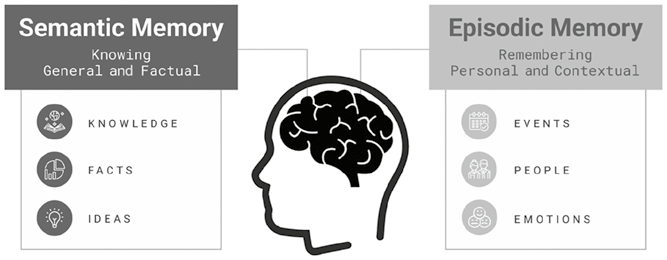
Hình 3.4: Trí nhớ Ngữ nghĩa và Trí nhớ Sự kiện.Hình 3.4: Trí nhớ Ngữ nghĩa và Trí nhớ Sự kiện (Semantic and Episodic Memories).
📖 Nội dung chi tiết trong Hình 3.4 (So sánh Trí nhớ Ngữ nghĩa và Trí nhớ Sự kiện):
Phân loại Trí nhớ
Semantic Memory — Trí nhớ Ngữ nghĩa (Bên trái)
Episodic Memory — Trí nhớ Sự kiện / Tình tiết (Bên phải)
Bản chất nhận thức
Knowing (General and Factual) — Trí nhớ “Biết” (Tổng quát và Dựa trên dữ kiện thực tế)
Remembering (Personal and Contextual) — Trí nhớ “Nhớ” (Cá nhân và Gắn với ngữ cảnh)
Thành phần lưu trữ 1
KNOWLEDGE — Tri thức / Kiến thức
EVENTS — Sự kiện đã trải qua
Thành phần lưu trữ 2
FACTS — Dữ kiện thực tế
PEOPLE — Con người từng gặp gỡ
Thành phần lưu trữ 3
IDEAS — Khái niệm / Ý tưởng
EMOTIONS — Cảm xúc gắn liền với ký ức
Trí nhớ sự kiện / tình tiết (Episodic memory — trí nhớ “nhớ”): Bao gồm những trải nghiệm cá nhân trong đời sống thường nhật. Nó đóng vai trò tối quan trọng trong việc kích thích trí tưởng tượng bằng cách cho phép mỗi cá nhân quay ngược thời gian thăm lại những trải nghiệm đã qua và khám phá các kịch bản giả định “sẽ thế nào nếu” (what-if scenarios).
Sự sáng tạo còn huy động các chức năng điều hành của não bộ, vốn gắn liền chủ yếu với não mới (tân vỏ não). Trong khi trí nhớ đóng vai trò như ổ cứng lưu trữ, thì các chức năng điều hành hoạt động như bộ vi xử lý trung tâm. Các nghiên cứu khoa học thần kinh đã chỉ ra hai loại hình trí thông minh đặc trưng của con người giữ vai trò thiết yếu đối với sự sáng tạo:
Khả năng truy xuất rộng (Broad retrieval ability): Bộ não có thể triệu hồi các thông tin liên quan từ kho ký ức và tìm ra sợi dây liên kết giữa những khái niệm tưởng chừng hoàn toàn xa lạ để tạo ra lời giải cho một vấn đề mới.
Trí thông minh linh hoạt (Fluid intelligence): Gắn kết chặt chẽ với tư duy trừu tượng, trí thông minh linh hoạt cho phép giải quyết vấn đề một cách uyển chuyển ngay cả khi không có kiến thức tiền đề trước đó. Nó dựa vào trí nhớ sự kiện để hình dung ra những khả năng hoàn toàn mới.
Mặc dù AI có thể truy cập vào một phổ thông tin khổng lồ và tìm ra những quy luật ẩn giấu, nó không thực sự hiểu được ý nghĩa đằng sau chúng. Thứ mà AI thiếu hụt ở trạng thái hiện tại chính là khả năng trực tiếp sống và trải nghiệm cuộc đời thường nhật với muôn vàn cung bậc cảm xúc phức tạp.
Trong khoa học nhận thức, điều này được gọi là trải nghiệm chủ quan (subjective experience): khả năng cảm nhận “cảm giác thực sự khi trải qua điều đó là như thế nào” từ góc nhìn cá nhân. Sự sáng tạo gắn liền máu thịt với trải nghiệm chủ quan vì chính cảm xúc, ký ức và góc nhìn riêng tư đã nhào nặn nên nó. AI có thể tạo ra nội dung dựa trên các quy luật thống kê, nhưng sự sáng tạo đích thực đòi hỏi những trải nghiệm sống bằng xương bằng thịt.
Do đó, AI chỉ có thể phối trộn lại (remix) các ý tưởng sẵn có dựa trên những quy luật dữ liệu về những gì từng hiệu quả trong quá khứ. Ngược lại, con người có thể tái hình dung (reimagine) những ý tưởng hoàn toàn mới bằng cách rút tỉa từ trải nghiệm cá nhân và những cảm xúc đã thực sự rung lên trong tim.
Việc liên tục tiếp xúc với tri thức mới và những trải nghiệm đa dạng là điều kiện tiên quyết để nuôi dưỡng sự sáng tạo. Sự sáng tạo thăng hoa khi người làm tiếp thị dám nhìn vượt ra ngoài những dữ liệu phân tích sẵn có để khám phá những ý tưởng lạ lẫm và chưa từng được kiểm chứng. Sự sáng tạo bắt đầu ở nơi dữ liệu kết thúc. Tuy nhiên, một khi ý tưởng sáng tạo đã được định hình rõ nét, AI có thể tăng tốc khâu thực thi và tiết kiệm thời gian đáng kể. Dữ liệu cung cấp thông tin, sự sáng tạo mở lối khám phá, và AI thực thi phân phối (Data informs, creativity explores, and AI delivers).
Tóm tắt Chương 3
Trong thế giới đầy bất trắc ngày nay, việc lập kế hoạch dài hạn đã trở nên vô cùng khó khăn. Doanh nghiệp phải đối mặt với biến động từ các cuộc xung đột toàn cầu và chiến tranh thương mại. Dưới áp lực nặng nề, nhiều tổ chức chỉ tập trung vào kết quả ngắn hạn, và tư duy này ảnh hưởng trực tiếp đến cách thức làm tiếp thị.
Tiếp thị số ngày càng bị chi phối bởi hiệu suất ngắn hạn. Người làm tiếp thị dựa vào các chiến thuật nhanh, dễ đo lường — như quảng cáo trả phí và khuyến mãi — để thúc đẩy doanh số tức thì, được tối ưu hóa bằng dữ liệu và thuật toán. Dù mang lại hiệu quả trước mắt, cách tiếp cận này thường đi kèm cái giá rất đắt: chi phí quảng cáo leo thang, sự mệt mỏi của khách hàng và lòng trung thành thương hiệu suy yếu.
Tiếp thị hiệu suất có xu hướng nhắm vào các bản năng ngắn hạn (não cổ). Nó hoạt động tốt cho các quyết định mua hàng chớp nhoáng nhưng hiếm khi tạo dựng được kết nối cảm xúc sâu sắc (não giữa) hay sự thuyết phục lý tính bền vững (não mới). Thương hiệu dễ dàng bị mắc kẹt trong vòng xoáy chạy theo chỉ số mà không bồi đắp được giá trị lâu dài.
AI lại càng đẩy nhanh sự dịch chuyển này khi liên tục đề xuất nội dung dựa trên những gì từng hiệu quả trong quá khứ. Theo thời gian, điều này dẫn đến sự nghèo nàn về tính khác biệt hóa. Hoạt động tiếp thị bắt đầu trông giống hệt nhau giữa mọi thương hiệu. Người làm tiếp thị càng răm rắp chạy theo thuật toán thì càng đánh mất tiếng nói độc bản của mình.
Chương này lập luận cho một sự tích hợp tốt hơn (Brandformance). Những người làm tiếp thị thành công luôn thiết kế các chiến dịch hiệu suất gắn liền với tư duy xây dựng thương hiệu. Xây dựng thương hiệu là điều tối quan trọng để kết nối với cảm xúc và hệ giá trị của con người, kích hoạt những vùng não sâu hơn gắn liền với trí nhớ dài hạn.
AI có thể thúc đẩy hiệu suất nhưng lại thiếu đi chiều sâu cảm xúc của sự sáng tạo con người. Sự sáng tạo đích thực vẫn luôn khởi nguồn từ trải nghiệm sống và trí tưởng tượng của con người. Những thương hiệu chiến thắng trong dài hạn là những thương hiệu biết kết hợp sức mạnh tốc độ của AI với lòng thấu cảm của con người.
Tiếp thị phải lớn hơn những con số dữ liệu và bài toán tối ưu hóa. Tiếp thị phải mang lại ý nghĩa. Trong một thế giới ngập tràn tạp âm, tính chân thực quan trọng hơn bao giờ hết. Người làm tiếp thị cần quay trở về với nền tảng cốt lõi của triết lý lấy con người làm trung tâm.
Câu hỏi Suy ngẫm
Thương hiệu của bạn có đang phụ thuộc thái quá vào tiếp thị hiệu suất và tư duy ngắn hạn hay không?
Bạn có đang để các thuật toán mạng xã hội đọc chính tả cho câu chuyện thương hiệu của mình thay vì tự nhào nặn tiếng nói độc bản?
Làm thế nào bạn có thể giúp hoạt động tiếp thị của mình trở nên giàu tính nhân văn hơn trong kỷ nguyên AI?
Nhiều người mang cái nhìn tiêu cực nhiều hơn tích cực về cách trí tuệ nhân tạo (AI) sẽ tác động đến xã hội trong tương lai. Mọi người lo ngại rằng AI sẽ tiếp tay cho việc phát tán thông tin sai lệch trên mạng dễ dàng hơn. Họ cũng trăn trở rằng công nghệ sẽ làm suy yếu các mối quan hệ giữa người với người và khiến con người cảm thấy cô đơn, mất kết nối hơn. Nguy cơ mất việc làm vào tay tự động hóa là một nỗi sợ lớn khác, bên cạnh mối đe dọa mà AI có thể gây ra cho an ninh quốc gia.
Thế nhưng, bất chấp những nỗi sợ hãi đó, AI đã âm thầm len lỏi và trở thành một phần tất yếu của đời sống thường nhật. Ngay từ khoảnh khắc thức giấc, AI đã bắt đầu làm việc. Con người hỏi trợ lý ảo về dự báo thời tiết trong ngày. Trên đường đi làm, họ dùng ứng dụng bản đồ để tìm lộ trình ít kẹt xe nhất. Trong giờ nghỉ giải lao, họ lướt mạng xã hội — nơi AI quyết định nội dung nào sẽ hiển thị trước mắt họ. Tan làm về nhà, họ xem phim hoặc nghe nhạc theo danh sách do AI gợi ý. Trước khi đi ngủ, họ dạo quanh các sàn thương mại điện tử với những đề xuất thông minh về món hàng nên mua tiếp theo. Thậm chí ngay cả khi đã chìm vào giấc ngủ, AI vẫn tiếp tục theo dõi chất lượng giấc ngủ của họ thông qua ứng dụng trên điện thoại.
Nhiều người thậm chí còn không hề nhận ra rằng trọn vẹn một ngày của họ đang vận hành trên nền tảng công nghệ AI. Một nghiên cứu do Gallup và Telescope thực hiện đã chỉ ra rằng 99% người dân Mỹ sử dụng ít nhất một sản phẩm ứng dụng AI trong tuần khảo sát trước đó; nhưng đáng ngạc nhiên là cứ ba người thì có tới hai người không hề biết mình đang sử dụng AI.
Sự Trỗi dậy của Con người Tăng cường (Augmented Humans)
Chúng ta đang chứng kiến sự trỗi dậy của con người tăng cường (augmented humans): những cá nhân mà đời sống hàng ngày gắn kết sâu sắc với các công cụ kỹ thuật số. Họ dựa vào công nghệ để suy nghĩ, cảm nhận, kết nối và mua sắm. Từ các lối tắt nhận thức cho đến điểm tựa cảm xúc, tương tác xã hội và mua sắm liền mạch, mọi chặng đường trong hành trình sống của họ đều được định hình bởi các trải nghiệm số (xem Hình 4.1).
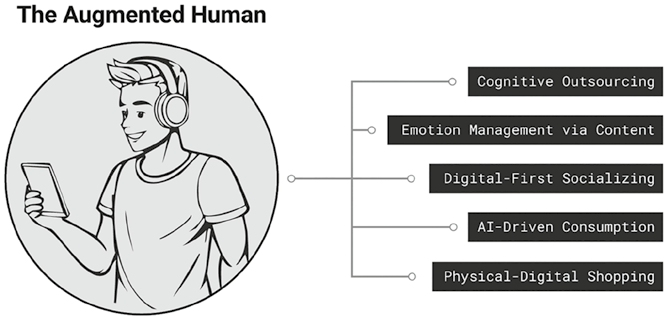
Hình 4.1: Chân dung Con người Tăng cường.Hình 4.1: Chân dung Con người Tăng cường (The Augmented Human Persona).
📖 Nội dung chi tiết trong Hình 4.1 (5 Đặc tính của Con người Tăng cường – The Augmented Human):
STT
Thuật ngữ trên hình (Tiếng Anh)
Dịch nghĩa Tiếng Việt chuẩn
Bản chất hành vi
1
Cognitive Outsourcing
Ủy thác nhận thức
Dựa vào công cụ số và AI để ghi nhớ, tra cứu và xử lý thông tin thay não bộ
2
Emotion Management via Content
Quản trị cảm xúc qua nội dung số
Dùng âm nhạc, video ngắn và nội dung trực tuyến để điều tiết tâm trạng hàng ngày
3
Digital-First Socializing
Giao tiếp xã hội ưu tiên kỹ thuật số
Ưu tiên trò chuyện, kết nối qua màn hình và ứng dụng nhắn tin hơn gặp mặt trực tiếp
4
AI-Driven Consumption
Tiêu dùng dẫn dắt bởi AI
Khám phá và mua sắm sản phẩm theo thuật toán gợi ý của mạng xã hội và sàn thương mại điện tử
5
Physical-Digital Shopping
Mua sắm kết hợp Vật lý – Kỹ thuật số
Di chuyển liền mạch giữa cửa hàng vật lý và các điểm chạm kỹ thuật số (mã QR, ví điện tử)
Năm đặc tính cấu thành nên một con người tăng cường được định nghĩa cụ thể như sau:
Ủy thác nhận thức (Cognitive outsourcing): Đây là đặc điểm tiêu biểu của con người tăng cường. Con người giờ đây phụ thuộc vào các công cụ số để suy nghĩ và ghi nhớ thay mình. Ví dụ, nhiều người không còn thuộc lòng số điện thoại hay các ngày kỷ niệm quan trọng nữa; thay vào đó, họ dùng điện thoại thông minh để lưu danh bạ, cài lời nhắc và theo dõi danh sách công việc. Khi có thắc mắc, họ lập tức tra cứu trực tuyến thay vì cố gắng lục tìm trong trí nhớ.
Quản trị cảm xúc qua nội dung số (Emotion management via content): Con người tăng cường sử dụng các phương tiện truyền thông số để điều tiết tâm trạng suốt cả ngày. Chẳng hạn, Spotify đã trở thành bản nhạc nền cá nhân của rất nhiều người. Họ dùng âm nhạc để định hình cảm xúc theo từng thời điểm — bật nhạc sôi động vào buổi sáng, nhạc êm dịu vào ban đêm, hoặc những giai điệu sâu lắng trong những khoảnh khắc tâm trạng. Họ tạo các danh sách phát như “tập trung” (focus), “thư giãn” (chill) hay “thất tình” (heartbreak) để đồng điệu với cảm xúc hiện tại. Ngoài âm nhạc, mọi người còn lướt xem các video hài hước hoặc nội dung ngắn truyền cảm hứng trên TikTok và YouTube để vực dậy tinh thần.
Giao tiếp xã hội ưu tiên kỹ thuật số (Digital-first socializing): Xét về tương tác xã hội, con người tăng cường thường ưu tiên giao tiếp qua màn hình hơn là trò chuyện trực diện. Thay vì gặp mặt trực tiếp, họ tán gẫu với bạn bè qua ứng dụng nhắn tin, tin nhắn thoại (voice notes) hoặc biểu tượng cảm xúc (emojis). Các thế hệ trẻ hơn như Gen Alpha thậm chí có thể ngồi tụ tập trong cùng một căn phòng để chơi điện tử nhưng lại tương tác với nhau chủ yếu qua khung chat trong game. Tương tác số mang lại cảm giác tự nhiên, đôi khi còn thoải mái và an toàn hơn cả đối thoại ngoài đời thực.
Tiêu dùng dẫn dắt bởi AI (AI-driven consumption): Đóng vai trò chủ đạo trong việc định hình những gì con người tăng cường mua sắm. Trên mạng xã hội, AI quyết định người dùng sẽ nhìn thấy nội dung và sản phẩm nào, thường dựa trên sở thích hoặc các chủ đề đang thịnh hành. Trên sàn thương mại điện tử, AI đề xuất mặt hàng bằng cách phân tích lịch sử mua sắm và hành vi duyệt web. Trên các kênh truyền thông khác, quảng cáo cũng được cá nhân hóa bằng dữ liệu khán giả, tạo cảm giác xuất hiện đúng lúc và sát nhu cầu. Nhiều người mua sắm khám phá ra các thương hiệu mới theo cách này mà không cần chủ động tìm kiếm. Kết quả là phần lớn hành trình mua hàng ngày nay đều được AI âm thầm dẫn lối.
Mua sắm kết hợp Vật lý – Kỹ thuật số (Physical-digital shopping): Con người tăng cường di chuyển mượt mà giữa thế giới vật lý và thế giới số, đồng thời kỳ vọng cả hai không gian này phải phối hợp ăn ý với nhau. Ngay cả khi đang đứng trong cửa hàng truyền thống, họ vẫn muốn có một trải nghiệm kết nối liền mạch. Họ không còn thấy ranh giới tách biệt giữa trực tuyến (online) và ngoại tuyến (offline). Họ kỳ vọng nhận được gợi ý sản phẩm từ màn hình tương tác tại điểm bán, quét mã QR để tra cứu thông tin chi tiết, hoặc thanh toán chạm bằng ví điện tử. Đối với họ, công nghệ là một phần hiển nhiên trong mọi bước của trải nghiệm mua sắm.
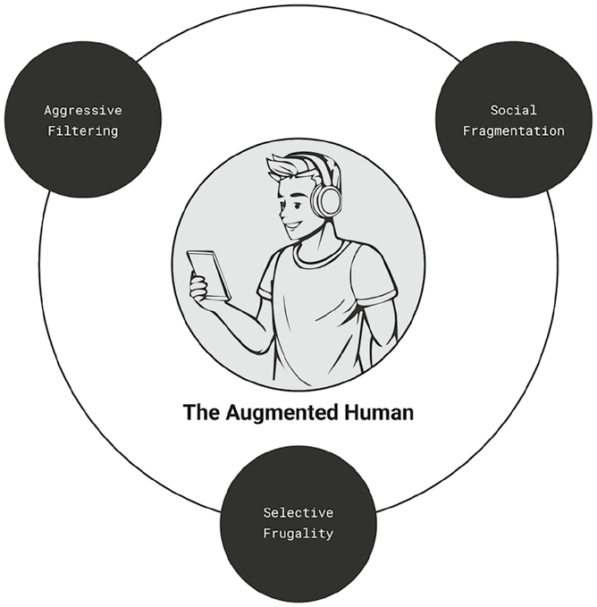
Hình 4.2: Những thách thức khi thu hút Con người Tăng cường.Hình 4.2: Những thách thức khi thu hút Con người Tăng cường (The Challenges of Engaging Augmented Humans).
📖 Nội dung chi tiết trong Hình 4.2 (3 Thách thức Lớn khi Thu hút Con người Tăng cường):
Thách thức trên sơ đồ (Tiếng Anh)
Dịch nghĩa Tiếng Việt chuẩn
Hệ thống não bộ liên quan
Biểu hiện cốt lõi
Aggressive Filtering(Góc trên trái)
Cơ chế Sàng lọc Quyết liệt
Hệ não Chú ý (Attention Brain)
Hội chứng “mù” quảng cáo (banner blindness), tự động phớt lờ nội dung thương mại rập khuôn
Social Fragmentation(Góc trên phải)
Sự Phân mảnh Xã hội
Hệ não Xã hội (Social Brain)
Khán giả co cụm vào các buồng vang thông tin (echo chambers) và bộ lạc vi mô/siêu nhỏ
Selective Frugality(Phía dưới)
Tiết kiệm Có Chọn lọc
Hệ não Tưởng thưởng (Reward Brain)
Mệt mỏi vì trào lưu vi mô, thắt chặt nhu yếu phẩm nhưng chi tiêu cho giá trị cảm xúc (hiệu ứng son môi)
Mặc dù công nghệ trao quyền cho con người tăng cường sống hiệu quả hơn, nó cũng đặt ra những thách thức hoàn toàn mới cho người làm tiếp thị (Hình 4.2). Khi các công cụ số ăn sâu vào đời sống thường nhật, chúng tái định hình cách con người suy nghĩ, cảm nhận và mua sắm. Để thực sự kết nối được với những cá nhân được nhào nặn bởi công nghệ này, người làm tiếp thị phải thấu hiểu những khuôn mẫu đang biến đổi trong sự chú ý, cảm xúc và hành vi của họ.
Suy nghĩ (Thinking): Cơ chế Sàng lọc Quyết liệt (Aggressive Filtering)
Con người tăng cường là những bộ lọc nội dung vô cùng quyết liệt. Tình trạng quá tải thông tin đã buộc bộ não con người phải tự tiến hóa để thích nghi. Giờ đây, não bộ được lập trình tự nhiên để bỏ qua bất cứ thứ gì mang dáng dấp của quảng cáo — một hành vi được gọi là hội chứng “mù” quảng cáo (banner blindness). Để giành được sự chú ý, người làm tiếp thị cần phải phá vỡ các khuôn mẫu kỳ vọng quen thuộc. Những nội dung mộc mạc, ít trau chuốt — được gọi là nội dung Lo-Fi (low-fidelity content) — là một phương thức hữu hiệu để làm điều đó. Nó thu hút hệ não chú ý (attention brain) bằng cách xuyên thủng các màng lọc đang chặn đứng dòng thác nội dung quá tải.
Hội chứng “Mù” Quảng cáo (Banner Blindness)
Vào cuối thập niên 1990, những ngày đầu của tiếp thị trên nền tảng web đã hình thành nên một hiện tượng nhận thức mang tên hội chứng “mù” quảng cáo (banner blindness): xu hướng người dùng phớt lờ các biểu ngữ quảng cáo (banner ads) trên trang web và chỉ tập trung vào phần nội dung chính. Quảng cáo khi ấy xuất hiện dày đặc và thường bị coi là thứ gây xao nhãng. Vì bố cục trình bày hiếm khi thay đổi, khán giả nhanh chóng học thuộc các vị trí đặt quảng cáo điển hình cùng những dấu hiệu thị giác của chúng, rồi tự rèn luyện cho mình phản xạ nhìn lướt qua như thể chúng không tồn tại.
Ngày nay, hội chứng “mù” quảng cáo còn trở nên gay gắt hơn gấp bội. Con người bị nhấn chìm trong biển thông tin, đặc biệt là trên mạng xã hội với những bảng tin (feeds) cuộn dài vô tận. Giao diện kỹ thuật số ngày càng chật chội bởi quảng cáo, cửa sổ bật lên (pop-ups) và các nút kêu gọi hành động. Môi trường số gây mất tập trung hơn bao giờ hết, tạo ra sự quá tải nhận thức (cognitive overload) cho khán giả. Thứ khởi đầu là một nỗ lực có ý thức nhằm né tránh quảng cáo giờ đây đã trở thành một phản xạ tự động hoàn toàn vô thức.
Cùng lúc đó, nội dung tiếp thị lại ngày càng trở nên lặp đi lặp lại. Các định dạng rập khuôn theo mẫu (template-based) do AI tạo ra càng làm trầm trọng thêm sự giống nhau này. Kết quả là khán giả học cách lọc bỏ phần lớn chúng. Bộ não của họ được rèn luyện để quét nhanh tìm thông tin quan trọng trong khi tự động nhảy cóc qua bất kỳ thứ gì giống một mẫu quảng cáo điển hình. Ngay cả khi một quảng cáo lọt qua được đám đông tạp âm nhưng lại không mang lại giá trị hữu ích, người dùng sẽ cảm thấy thất vọng và lập tức gắn mác nó là trò câu nhấp chuột rẻ tiền (clickbait).
Hiện tượng này gây ra hệ lụy nghiêm trọng đối với hiệu quả quảng cáo. Với hội chứng “mù” quảng cáo, thương hiệu nhìn vào báo cáo có thể thấy số lượt xem (views) rất cao, nhưng thực tế số người thực sự để mắt tới quảng cáo lại ít hơn rất nhiều. Tỷ lệ tương tác còn sụt giảm thê thảm hơn khi khán giả lướt qua mà không nhấp chuột hay phản hồi. Các chỉ số đo lường truyền thống như lượt hiển thị (impressions) và lượt xem trở nên sai lệch, che giấu một sự thật phũ phàng rằng thương hiệu chưa hề giành được sự chú ý thực chất. Cuối cùng, phần lớn ngân sách quảng cáo đổ ra chỉ mang lại tác động vô cùng mờ nhạt.
Nội dung Lo-Fi / Nội dung Mộc (Lo-Fi Content)
Khi hội chứng “mù” quảng cáo ngày càng lan rộng, người làm tiếp thị buộc phải tìm kiếm những con đường mới để bứt phá. Một giải pháp đang nổi lên mạnh mẽ là nội dung Lo-Fi (viết tắt của low-fidelity — độ trau chuốt thấp). Khác với các phim quảng cáo truyền thống được đánh bóng kỹ lưỡng, nội dung Lo-Fi tôn vinh sự mộc mạc, ít cắt ghép và mang lại cảm giác tự nhiên như đời thực. Hãy nghĩ đến những bối cảnh đời thường, video tự quay bằng điện thoại, góc máy hơi rung, ánh sáng không hoàn hảo, hậu cảnh lộn xộn tự nhiên, cảm xúc chân thật không diễn xuất và khâu hậu kỳ tối giản.
Bộ não có xu hướng phớt lờ những nội dung đi theo khuôn mẫu quảng cáo dễ đoán. Theo thời gian, não bộ đã học cách đánh đồng những hình ảnh bóng bẩy, lời thoại kịch bản trau chuốt và thông điệp nặng tính thương hiệu với quảng cáo thương mại. Nội dung Lo-Fi đập tan những kỳ vọng đó: chính sự không hoàn hảo của nó phát đi tín hiệu về một điều gì đó khác biệt và khiến bộ não phải dừng lại chú ý.
Đồng thời, nội dung Lo-Fi không gây cảm giác làm phiền hay cắt ngang trải nghiệm. Thay vì tự tách biệt như một mẫu quảng cáo truyền thống, nó hòa quyện tự nhiên vào dòng nội dung bản địa (native content) mà mọi người vẫn quen nhìn thấy từ bạn bè trên mạng xã hội. Chúng mang lại cảm giác thân thuộc. Đó chính là sức mạnh của Lo-Fi: vừa phá vỡ khuôn mẫu quảng cáo cứng nhắc, vừa hòa nhập hoàn hảo với chất liệu nội dung tự nhiên của mạng xã hội.
Các nền tảng video ngắn như TikTok đã châm ngòi cho làn sóng Lo-Fi bằng cách giúp việc quay, dựng và phát trực tiếp (livestream) bằng điện thoại di động trở nên vô cùng tiện lợi. Ban đầu, nó trao quyền cho thế hệ Gen Z sáng tạo nội dung mà không cần kỹ năng sản xuất chuyên nghiệp. Thế hệ này đề cao tính chân thực và yêu thích những nội dung mang cảm giác ngẫu hứng, tự nhiên.
Ngày nay, các thương hiệu cũng đang bước theo con đường đó để trở nên gần gũi hơn và kết nối với Gen Z. Từ các tập đoàn bán lẻ bình dân như Walmart cho đến những nhà mốt xa xỉ như Loewe, tất cả đều đang đón nhận xu hướng Lo-Fi. Thay vì những buổi quay hình tiền tỷ, họ ghi lại và chia sẻ những khoảnh khắc đời thường dường như không hề có kịch bản, được quay và dựng ngay trên điện thoại di động. Nội dung nhờ thế bớt đi tính chào mời thương mại và giàu cảm xúc hơn.
Tiếp thị Lo-Fi đặc biệt phù hợp với kỷ nguyên nơi người làm tiếp thị phải chiến đấu từng giây để giành giật sự chú ý. Bộ não chỉ có nguồn lực hữu hạn để tập trung trong khi khối lượng thông tin lại phình to không ngừng. Để tự vệ, não bộ phải sàng lọc một cách quyết liệt — và nội dung Lo-Fi có cơ hội vượt qua cổng kiểm duyệt đó cao hơn hẳn.
Hệ não Chú ý (The Attention Brain)
Sự chú ý là một chủ đề trung tâm trong khoa học nhận thức. Bộ não sở hữu những cơ chế chuyên biệt để lọc thông tin và quản lý nguồn lực tinh thần hữu hạn của mình. Tóm gọn lại, hệ thống này vận hành qua ba quá trình thiết yếu: cổng lọc cảm giác (sensory gating), sự chú ý có chọn lọc (selective attention) và độ trôi chảy trong xử lý thông tin (processing fluency):
Cổng lọc cảm giác (Sensory gating): Theo chiều từ ngoài vào trong, bộ não sử dụng cơ chế gọi là cổng lọc cảm giác. Các giác quan của chúng ta tiếp nhận lượng tín hiệu đầu vào lớn hơn rất nhiều so với khả năng xử lý của não bộ, vì vậy cổng lọc cảm giác đóng vai trò là màng lọc đầu tiên, loại bỏ ngay những kích thích vụn vặt hoặc không liên quan.
Sự chú ý có chọn lọc (Selective attention): Theo chiều từ trong ra ngoài, bộ não dựa vào sự chú ý có chọn lọc để quyết định xem nên tập trung vào đâu. Nó thực hiện điều này bằng cách đối chiếu với kinh nghiệm quá khứ và nhận diện quy luật. Chẳng hạn trong trường hợp hội chứng “mù” quảng cáo, bộ não đã học thuộc hình dạng điển hình của quảng cáo và tự động tắt chế độ tiếp nhận đối với chúng. Dựa trên các khuôn mẫu nội tại này, sự chú ý có chọn lọc ưu tiên những gì xứng đáng được tiêu điểm hóa và gạt bỏ những gì có thể làm ngơ.
Độ trôi chảy trong xử lý thông tin (Processing fluency): Một khi thông điệp đã lọt qua được hai màng lọc trên và thu hút được sự chú ý, bộ não sẽ đánh giá nó thông qua độ trôi chảy trong xử lý thông tin — mức độ dễ dàng khi não bộ giải mã và thấu hiểu thông tin đó. Khi nội dung dễ tiêu hóa, bộ não xử lý nó trơn tru hơn. Sự nhẹ nhàng này tạo ra cảm giác thân thuộc ngay cả khi nội dung đó là mới mẻ, từ đó dẫn đến thiện cảm (likability) cao hơn. Đó là lý do vì sao con người thích nghe những bản nhạc bắt tai dễ nghe (easy-listening music) hoặc thấy những bài phát biểu giản dị, rõ ràng có sức thuyết phục cao hơn.
Các nghiên cứu chỉ ra rằng bộ não con người ngày càng trở nên điêu luyện hơn trong việc lọc bỏ các yếu tố gây xao nhãng. Thế nhưng, ngay cả khi khả năng sàng lọc đã được nâng cấp, khối lượng nội dung số khổng lồ vẫn tạo ra áp lực nặng nề lên hệ thống nhận thức. Hệ quả là phương thức truyền tải thông tin đã buộc phải thích nghi.
Nội dung dài (long-form content) đã nhường chỗ cho các định dạng ngắn gọn, dễ tiêu hóa. Mạng xã hội hiện ưu tiên các đoạn clip ngắn (quick takes) và phát trực tiếp hơn là các video biên tập cầu kỳ. Bước dịch chuyển từ công cụ tìm kiếm truyền thống sang AI hội thoại cũng đi theo đúng xu hướng này: khán giả giờ đây thích đọc câu trả lời tóm tắt sẵn của AI hơn là tự mình lục tìm qua hàng trang kết quả tìm kiếm. Những nội dung chi tiết, bóng bẩy đang dần bị thay thế bởi các định dạng chia nhỏ (bite-sized) và mộc mạc (Lo-Fi). Những thay đổi này phản ánh thói quen tiếp thu thông tin của Gen Z và Gen Alpha: những thế hệ khán giả được định hình bởi môi trường ưu tiên tải trọng nhận thức thấp (low cognitive load).
Tiếp thị Lo-Fi phát huy hiệu quả bởi nó phá vỡ khuôn mẫu quảng cáo truyền thống. Nó không mang bộ mặt của một quảng cáo nên dễ dàng lọt qua các màng lọc của não bộ; đồng thời nó lại đơn giản, dễ xử lý, tạo cảm giác thân thuộc và dễ mến. Suy cho cùng, một thông điệp tiếp thị xuất sắc cần đạt được điểm cân bằng vàng: đủ mới lạ để phá vỡ lối mòn nhận thức, nhưng cũng đủ tự nhiên để không gây cảm giác xâm phạm, làm phiền.
Cảm nhận (Feeling): Sự Phân mảnh Xã hội (Social Fragmentation)
Con người tăng cường đang bị phân mảnh sâu sắc về mặt xã hội. Suy nghĩ và cảm xúc của họ được định hình bởi dòng nội dung do thuật toán tinh tuyển dựa trên hành vi quá khứ. Theo thời gian, cơ chế này tạo ra các buồng vang thông tin (echo chambers) — những không gian số lặp đi lặp lại việc cho một nhóm người tiếp xúc với cùng một luồng tư tưởng giống nhau, chia nhỏ người dùng thành các bộ lạc ngách (niche tribes). Kết quả là sức ảnh hưởng xã hội đang dịch chuyển từ độ phủ đại chúng (mass reach) sang các cộng đồng vi mô (micro) và siêu nhỏ (nano). Trong những vòng tròn khép kín này, những người ảnh hưởng quy mô nhỏ hơn lại là người định hình tông giọng cảm xúc của cả nhóm. Cơ chế này chạm trực tiếp vào hệ não xã hội (social brain) — vốn được lập trình tự nhiên để tìm kiếm cảm giác thuộc về và bản sắc chung.
Buồng vang Thông tin (Echo Chamber)
Các thuật toán có sức ảnh hưởng vô cùng lớn đối với con người tăng cường. Suy nghĩ và cảm xúc của họ bị nhào nặn bởi những nội dung họ nhìn thấy — vốn được thuật toán chọn lọc dựa trên sở thích và hành vi trong quá khứ. Việc khám phá nội dung giờ đây thường không còn mang tính chủ đích của cá nhân nữa mà đã bị ủy thác cho máy móc.
Vấn đề nằm ở chỗ bản thân các nền tảng đều mang thiên kiến mục tiêu. Chúng được thiết kế để giữ chân người dùng và tối đa hóa thời gian dán mắt vào màn hình. Để làm được điều đó, chúng đẩy mạnh những nội dung khớp với hành vi và sở thích trước đây của người dùng, đồng thời ưu tiên hiển thị những bài đăng gây tranh luận hoặc củng cố niềm tin sẵn có của hội nhóm. Dù cách làm này thúc đẩy lượng tương tác tăng vọt, nó cũng vô tình cổ xúy cho những nội dung cực đoan hoặc gây chia rẽ sâu sắc.
Theo thời gian, mỗi người dùng chỉ nhận được thêm nhiều nội dung giống hệt những gì họ đã tin tưởng, củng cố vững chắc lối tư duy hiện tại của họ. Điều này khoét sâu thêm thiên kiến nhóm và khiến người dùng trở nên nhạy cảm, dễ phản ứng thái quá về mặt cảm xúc. Hiện tượng này chính là buồng vang thông tin (echo chamber): một môi trường kỹ thuật số nơi con người liên tục tiếp xúc với những ý kiến xác nhận lại niềm tin sẵn có của chính mình.
Các buồng vang thông tin chia nhỏ khán giả thành những cụm vi mô và siêu nhỏ. Các nền tảng mạng xã hội gắn nhãn những nhóm này là tệp đối tượng tương tự (look-alike audiences) — các phân khúc được xây dựng dựa trên những biến số nhắm mục tiêu như sở thích, hành vi và khuôn mẫu tương tác.
Đối với người làm tiếp thị, buồng vang thông tin tạo ra những thách thức không nhỏ. Chúng giam giữ người dùng trong lối tư duy đóng khung cố định (fixed mindsets), khiến họ kém cởi mở hơn trước những góc nhìn mới. Thị trường bị phân mảnh thành các bộ lạc gắn kết chặt chẽ nhưng ngày càng khép kín với người ngoài. Việc mở rộng độ phủ thương hiệu vượt ra ngoài tệp khán giả hiện hữu trở nên vô cùng chật vật. Bất kỳ nội dung nào lệch pha với thế giới quan của bộ lạc đều dễ dàng bị gạt phắt đi.
Việc may đo thông điệp riêng cho từng bộ lạc có thể làm tăng mức độ liên quan, nhưng lại đi kèm cái giá rất đắt. Khi số lượng bộ lạc nhân lên, áp lực sản xuất nội dung cũng phình to tương ứng. Và khi thương hiệu liên tục uốn nắn thông điệp để chiều lòng nhiều câu chuyện khác nhau, họ đứng trước nguy cơ làm loãng định vị cốt lõi của chính mình.
Các Bộ lạc Vi mô và Siêu nhỏ (Micro and Nano Tribes)
Mạng xã hội khởi đầu như một đối cực của truyền thông truyền thống vốn dựa vào giao tiếp đại chúng một chiều. Nó hứa hẹn mang lại những kết nối gần gũi và có tính tương tác cao hơn. Thế nhưng theo thời gian, nó lại bắt đầu phản chiếu chính mô hình mà nó từng phá vỡ: những người nổi tiếng và nhân vật của công chúng từ truyền thông truyền thống di cư lên các nền tảng xã hội, trở thành những đại thần tượng có sức ảnh hưởng quy mô lớn. Tiếp thị mạng xã hội bắt đầu giống hệt quảng cáo truyền thống — chỉ khác mỗi kênh phát sóng.
Ngày nay, tiếp thị đại trà trên mạng xã hội đang dần mất đi tính hiệu quả. Các buồng vang thông tin và chủ nghĩa bộ lạc kỹ thuật số đã làm rạn nứt khối khán giả đại chúng thành vô số cộng đồng ngách. Hệ quả là quyền lực ảnh hưởng đang dịch chuyển từ độ phủ đại chúng sang những vòng tròn nhỏ hơn nhưng gắn kết khăng khít hơn.
Bản thân các nền tảng xã hội cũng đang thích nghi. Thuật toán hiện nay ưu tiên những nội dung thúc đẩy tương tác thực chất hơn là chỉ có độ phủ rộng. Những người ảnh hưởng quy mô nhỏ (micro influencers) và siêu nhỏ (nano influencers) sở hữu lượng người theo dõi ít hơn nhưng chuyên biệt hơn thường khơi gợi được các cuộc trò chuyện sôi nổi, giúp nội dung của họ được thuật toán ưu tiên hiển thị thường xuyên hơn.
Nhiều thương hiệu hiện chuyển sang hợp tác với mạng lưới người ảnh hưởng nhỏ để chạm tới những tệp khán giả phân mảnh này (Hình 4.3). Thay vì chỉ dựa vào các macro influencers (trên 100.000 người theo dõi) hoặc mega influencers (trên 1 triệu người theo dõi), các thương hiệu đang dịch chuyển mạnh mẽ sang nhóm micro influencers (10.000 – 100.000 người theo dõi) và nano influencers (1.000 – 10.000 người theo dõi).
Những người ảnh hưởng quy mô lớn thường mang dáng dấp của các đại sứ thương hiệu truyền thống. Họ bị nhìn nhận là quá nặng tính thương mại và các bài đăng của họ mang cảm giác đổi chác tiền bạc (transactional). Ngược lại, các micro và nano influencers hiện lên như những con người bình dị đời thường. Nội dung của họ thường mang phong cách Lo-Fi mộc mạc, từ đó tạo dựng được niềm tin chân thật. Điều này đặc biệt đồng điệu với hệ giá trị của thế hệ Gen Z — những người luôn hướng về các nhà sáng tạo nội dung có ngoại hình và lối sống giống như chính họ.
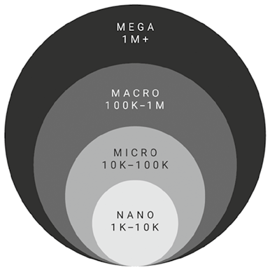
Hình 4.3: Các cấp độ Người ảnh hưởng và Số lượng Người theo dõi.Hình 4.3: Các cấp độ Người ảnh hưởng và Số lượng Người theo dõi (Influencer Tiers and Number of Followers).
📖 Nội dung chi tiết trong Hình 4.3 (Phân tầng Người ảnh hưởng theo Quy mô Người theo dõi):
Cấp độ trên hình
Quy mô người theo dõi
Dịch nghĩa Tiếng Việt chuẩn
Đặc trưng ảnh hưởng
MEGA(Vòng ngoài cùng)
1M+ (Trên 1 triệu)
Người ảnh hưởng Siêu đại chúng (Mega Influencer)
Độ phủ đại chúng rộng nhưng tương tác mang tính một chiều
MACRO(Vòng thứ hai)
100K–1M (100.000 – 1 triệu)
Người ảnh hưởng Quy mô lớn (Macro Influencer)
Độ nhận diện cao theo lĩnh vực chuyên môn rộng
MICRO(Vòng thứ ba)
10K–100K (10.000 – 100.000)
Người ảnh hưởng Vi mô (Micro Influencer)
Gắn kết chặt chẽ với các bộ lạc ngách, độ tin cậy cao
NANO(Lõi trong cùng)
1K–10K (1.000 – 10.000)
Người ảnh hưởng Siêu nhỏ (Nano Influencer)
Thành viên nội bộ cộng đồng (insiders), tương tác hai chiều chân thực nhất
Quan trọng hơn, các mega và macro influencers rất giỏi trong việc tạo độ nhận diện đại chúng nhưng lại thường chật vật khi muốn thâm nhập vào các cộng đồng khép kín. Họ không được coi là những thành viên đáng tin cậy trong cuộc trò chuyện nội bộ. Ngược lại, các micro và nano influencers vốn đã cắm rễ sâu bên trong các nhóm sở thích cụ thể. Họ là “người trong cuộc” (community insiders) có khả năng định hình quan điểm và dẫn dắt xu hướng ngay trong vòng tròn của mình.
Trong khi những người ảnh hưởng lớn đóng vai trò như những thần tượng trung tâm để người hâm mộ vây quanh ngưỡng mộ, thì những người ảnh hưởng nhỏ lại là những thành viên bình đẳng trong một cộng đồng được gắn kết bởi đam mê chung. Sức ảnh hưởng của họ không đến từ địa vị cao sang mà đến từ những đặc điểm đồng điệu với các thành viên trong bộ lạc.
Hệ não Xã hội (The Social Brain)
Sự trỗi dậy của chủ nghĩa bộ lạc cảm xúc (emotional tribalism) bắt nguồn sâu xa từ cấu trúc tự nhiên của bộ não con người. Chính những vùng não điều tiết cảm xúc cũng đồng thời đóng vai trò chủ chốt trong việc giải mã các tín hiệu xã hội và quản lý tương tác giữa người với người. Bộ não cảm xúc và bộ não xã hội đan cài chặt chẽ vào nhau — cách một người cảm nhận không thể tách rời khỏi cách người đó liên hệ với những người xung quanh.
Ngành công nghiệp truyền thông từ lâu đã khai thác sợi dây liên kết này. Khán giả thường hình thành mối quan hệ cận xã hội (parasocial relationships) với các nhân vật của công chúng — những sợi dây gắn kết cảm xúc một chiều nhưng mang lại cảm giác vô cùng chân thật dù không hề có sự tương tác trực tiếp ngoài đời. Thông qua hình thức hâm mộ (fandom) này, khán giả tìm thấy nguồn cảm hứng và cảm giác gắn bó xã hội. Những mối quan hệ ấy tạo nên cây cầu nối quyền năng để doanh nghiệp và thương hiệu chạm tới công chúng.
Mạng xã hội đã khuếch đại động lực này lên gấp bội. Nó củng cố cảm giác thân mật bằng cách cho phép một số hình thức tương tác qua lại thông qua lượt thích, bình luận và tin nhắn trực tiếp. Tuy nhiên, đối với những người ảnh hưởng quy mô lớn, sự tương tác này hiếm khi mang tính hai chiều thực sự. Theo thời gian, sự kết nối ấy bộc lộ vẻ hời hợt bề mặt, để lại cho khán giả cảm giác trống rỗng về mặt cảm xúc.
Hệ quả là khán giả ngày càng tìm kiếm những mối quan hệ có tính tương hỗ (reciprocal relationships) thực chất hơn với những người ảnh hưởng quy mô nhỏ. Sự dịch chuyển này gắn liền mật thiết với cách con người hình thành bản sắc xã hội (social identity). Con người theo bản năng tự nhiên sẽ hướng về những hội nhóm phản chiếu hệ giá trị, thái độ và lối sống của mình. Họ bị thu hút bởi những người đồng trang lứa gần gũi có hành vi giống mình và những cộng đồng nơi họ tìm thấy cảm giác thuộc về (sense of belonging).
Động lực thúc đẩy sự dịch chuyển này không chỉ là sở thích cá nhân mà còn là cơ chế bộ não đơn giản hóa các môi trường xã hội phức tạp. Để tránh quá tải, não bộ dựa vào một lối tắt tâm lý gọi là thiên kiến nội nhóm (in-group bias) — xu hướng thiên vị và tin tưởng những người mang lại cảm giác quen thuộc, “cùng hội cùng thuyền”.
Thiên kiến nội nhóm tạo ra sự cộng hưởng cảm xúc mạnh mẽ hơn bởi bộ não con người vốn được lập trình để sống theo bộ lạc. Dưới góc độ tiến hóa, việc thuộc về một bầy đàn là điều kiện sống còn để sinh tồn. Bản năng nguyên thủy này vẫn in sâu trong kiến trúc não bộ. Khi khán giả bắt gặp những nhà sáng tạo nội dung mang dáng dấp như một thành viên trong bộ lạc của mình, bộ não lập tức cảm nhận được sự thân thuộc đó. Những tín hiệu bộ lạc này cũng giúp não bộ xử lý thông tin nhẹ nhàng hơn: khi giọng điệu và phong cách khớp với thế giới quan của khán giả, thông điệp sẽ đi vào tâm trí một cách trôi chảy mà tốn rất ít nỗ lực nhận thức.
Một lý do khác khiến kết nối bộ lạc mang sức mạnh lớn đến vậy là vai trò của tế bào thần kinh phản chiếu / nơ-ron gương (mirror neurons) — những tế bào não chuyên biệt kích hoạt cả khi chúng ta thực hiện hành động lẫn khi quan sát người khác làm điều đó. Các nơ-ron này dẫn dắt lòng thấu cảm, giúp con người trực giác được cảm xúc của người khác. Khi khán giả nhìn thấy bộ lạc của mình bày tỏ những cảm xúc nhất định qua nội dung mạng xã hội, hệ thống nơ-ron gương sẽ khiến họ trực tiếp rung lên đúng cung bậc cảm xúc ấy.
Đó là lý do vì sao các micro và nano influencers lại phát triển rực rỡ trong những cộng đồng người hâm mộ phân mảnh. Sức ảnh hưởng của họ đặt nền tảng trên sự cộng hưởng cảm xúc và cơ chế phản chiếu xã hội (social mirroring). Con người luôn lắng nghe những ai mang lại cảm giác là “người nhà” của chính họ.
Mua sắm (Buying): Tiết kiệm Có Chọn lọc (Selective Frugality)
Con người tăng cường chi tiêu theo lối tiết kiệm có chọn lọc (selectively frugal). Việc liên tục tiếp xúc với nội dung mạng xã hội ban đầu có thể thôi thúc họ mua sắm theo trào lưu. Nhưng theo thời gian, sự phấn khích đó nguội lạnh dần. Việc chạy theo trào lưu trở nên kiệt sức và kém thỏa mãn hơn. Kết quả là họ trở nên tỉnh thức hơn trong các quyết định mua hàng: cắt giảm chi tiêu cho những nhu yếu phẩm thường ngày để dồn ngân sách sang những trải nghiệm hoặc sản phẩm khơi gợi niềm vui — hiện tượng được gọi là hiệu ứng son môi (lipstick effect). Hành vi này phản ánh một bước chuyển dịch trong hệ não tưởng thưởng (reward brain), khi não bộ bắt đầu ưu tiên sự thỏa mãn bền lâu hơn là cảm giác phấn khích nhất thời.
Sự Mệt mỏi vì Trào lưu Vi mô (Micro Trend Fatigue)
Khi nền kinh tế có dấu hiệu bất ổn, người tiêu dùng thường phản ứng bằng cách thắt chặt hầu bao. Nỗi lo về giá cả leo thang và áp lực tài chính thường dẫn đến tâm lý chi tiêu thận trọng. Tuy nhiên, xu hướng tiết kiệm ngày nay còn vượt xa hơn nỗi lo kinh tế ngắn hạn; nó báo hiệu một sự dịch chuyển sâu sắc và dài hạn trong thứ tự ưu tiên cũng như cách thức ra quyết định của người tiêu dùng.
Người tiêu dùng hiện đại — những con người tăng cường — liên tục bị dội bom bởi vô số trào lưu vi mô (microtrends) siêu ngách trên mạng xã hội. Những trào lưu này cực kỳ chi tiết và có vòng đời vô cùng ngắn ngủi. Được châm ngòi bởi những người ảnh hưởng, chúng nhanh chóng được thuật toán của các nền tảng khuếch đại và đẩy lên thành cơn sốt lan truyền (viral).
Trong ngành thời trang, chúng ta đã chứng kiến những trào lưu vi mô như “quiet luxury” (xa xỉ thầm lặng — những món đồ chất lượng cao nhưng tối giản, không phô trương logo) hay “athleisure” (trang phục thể thao năng động mặc hàng ngày). Trong ngành thực phẩm và đồ uống, có thể kể đến trào lưu “internal shower drink” (thức uống thanh lọc ruột pha từ hạt chia và nước cốt chanh) hay “cloud bread” (bánh mì mây bông xốp ít calo).
Vì dòng chảy nội dung vận động quá nhanh, các trào lưu vi mô này bùng lên rồi lụi tàn trong chớp mắt, kéo theo vòng đời sản phẩm ngày càng ngắn lại và sự mệt mỏi của khán giả ngày một dâng cao. Thoạt đầu, người tiêu dùng hào hứng chạy theo các trào lưu vi mô vì hội chứng sợ bỏ lỡ (FOMO – Fear Of Missing Out). Thế nhưng theo thời gian, họ trở nên choáng ngợp và kiệt sức khi cứ phải hụt hơi bám đuổi. Việc liên tục tiếp xúc với các trào lưu mới làm gia tăng gánh nặng tinh thần cần thiết để đánh giá, lựa chọn và thích nghi.
Hơn nữa, những trào lưu này ban đầu có vẻ như được cá nhân hóa cho từng nhóm khán giả ngách cụ thể. Nhưng vì được tối ưu hóa cho mục tiêu lan truyền đại chúng, chúng nhanh chóng tràn ngập khắp nơi. Rốt cuộc, tất cả mọi người lại thấy mình đang chạy theo cùng một khuôn mẫu — mặc những bộ đồ giống nhau, ăn cùng những món đang gây sốt và check-in tại cùng những địa điểm du lịch viral.
Nhiều người tiêu dùng, đặc biệt là thế hệ Gen Z, đã bắt đầu khước từ hoàn toàn cuộc đua chạy theo trào lưu này. Giờ đây, họ đón nhận lối sống tối giản (minimalism) và chủ nghĩa tiêu dùng có chủ đích (intentional consumerism) — lối sống không đòi hỏi phải đưa ra quyết định mua sắm liên miên. Đồng thời, họ vẫn tiếp tục thể hiện bản sắc cá nhân thông qua những sản phẩm và trải nghiệm mà họ chọn đầu tư. Họ không còn mua sắm để chạy đua theo người khác, mà mua để cảm thấy tốt đẹp hơn về chính bản thân mình. Một tư duy tiêu dùng mới đang thành hình: tiêu dùng được dẫn dắt bởi niềm vui cá nhân chứ không phải sự công nhận của xã hội.
Hiệu ứng Son môi (Lipstick Effect)
Chuyên gia sắp xếp nhà cửa người Nhật Marie Kondo từng phổ biến rộng rãi triết lý chỉ giữ lại những món đồ “khơi dậy niềm vui” (spark joy) thông qua phương pháp dọn dẹp tinh gọn của cô. Triết lý này khuyến khích mọi người trân trọng những vật dụng tạo ra sự cộng hưởng cảm xúc tích cực. Cách tiếp cận này đặc biệt đồng điệu với thế hệ Gen Z — những người luôn tối ưu hóa lợi tức đầu tư về mặt cảm xúc (emotional ROI) hơn là sự tuân phục xã hội khi quyết định chi tiêu.
Một hiện tượng nhận thức quan trọng gắn liền với xu hướng này là hiệu ứng son môi (lipstick effect): xu hướng tự thưởng cho bản thân những món đồ xa xỉ nhỏ, vừa túi tiền nhằm mang lại sự vỗ về cảm xúc trong thời kỳ kinh tế bất ổn. Người tiêu dùng có thể cắt giảm chi tiêu lớn nhưng vẫn tìm kiếm sự nâng đỡ tinh thần thông qua một vài khoản mua sắm chọn lọc. Thuật ngữ này bắt nguồn từ quan sát thực tế rằng doanh số bán son môi thường tăng vọt trong các cuộc suy thoái kinh tế — không phải vì con người muốn gây ấn tượng với người khác, mà vì họ muốn cảm thấy phấn chấn hơn về chính mình.
Hiệu ứng son môi có thể được định nghĩa rộng hơn, không chỉ giới hạn ở việc chi tiêu cho mỹ phẩm làm đẹp mà bao hàm bất kỳ khoản tự thưởng nào mang lại sự thăng hoa cảm xúc. Theo truyền thống, đó có thể là những niềm vui nhỏ như ngồi nhâm nhi tại quán cà phê quen hay đi xem một bộ phim ngoài rạp. Tuy nhiên, nó cũng có thể mở rộng sang các khoản chi tiêu trải nghiệm lớn hơn như một chuyến du lịch hoặc vé xem đêm nhạc thần tượng (concerts) mang lại giá trị tinh thần tương đương.
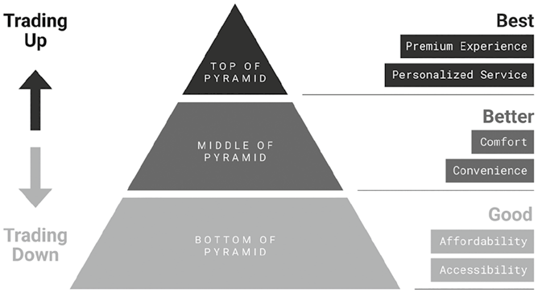
Hình 4.4: Hành vi Chi tiêu Phân cực.Hình 4.4: Hành vi Chi tiêu Phân cực (Polarized Spending Behavior).
📖 Nội dung chi tiết trong Hình 4.4 (Tháp Hành vi Chi tiêu Phân cực):
Tầng Kim tự tháp
Xu hướng dịch chuyển (Bên trái)
Phân cấp Giá trị (Bên phải)
Các yếu tố ưu tiên trong hình
TOP OF PYRAMID(Đỉnh tháp)
Trading Up (↑) — Nâng cấp chi tiêu (Đầu tư cho cảm xúc)
Best (Tốt nhất)
Premium Experience (Trải nghiệm cao cấp) & Personalized Service (Dịch vụ cá nhân hóa)
Trading Down (↓) — Hạ cấp chi tiêu (Tiết kiệm nhu yếu phẩm)
Good (Đủ tốt / Cơ bản)
Affordability (Giá cả phải chăng) & Accessibility (Dễ tiếp cận)
Trong kỷ nguyên số, hiệu ứng son môi còn biểu hiện qua những khoản tự thưởng kỹ thuật số (digital indulgences), đặc biệt là ở các thế hệ trẻ. Các gói đăng ký thuê bao hoặc giao dịch vi mô (micro purchases) trong trò chơi điện tử, ứng dụng chỉnh sửa ảnh/video, ứng dụng chăm sóc sức khỏe tinh thần và nền tảng xem phim/nghe nhạc trực tuyến mang đến những cách thức dễ tiếp cận để tận hưởng niềm vui. Dù thường có chi phí thấp, những sản phẩm số này lại mang lại giá trị cảm xúc rất cao.
Hiệu ứng son môi cũng phản ánh một xu hướng dịch chuyển rộng lớn hơn sang hành vi chi tiêu phân cực (polarized spending). Hãy hình dung một kim tự tháp tiêu dùng gồm ba tầng: tầng đáy đại diện cho các lựa chọn kinh tế tiết kiệm, tầng giữa là phân khúc đáng đồng tiền bát gạo (value for money), và tầng đỉnh là các sản phẩm dịch vụ cao cấp (Hình 4.4). Khi phân khúc tầm trung ngày càng co hẹp lại, người tiêu dùng có xu hướng hạ cấp chi tiêu (trade down) ở các ngành hàng thiết yếu hàng ngày để tiết kiệm tiền, sau đó nâng cấp chi tiêu (trade up) ở một vài lĩnh vực chọn lọc mang lại sự viên mãn về mặt cảm xúc.
Nghiên cứu năm 2025 của McKinsey đã xác nhận bước dịch chuyển này. Giữa bối cảnh kinh tế bấp bênh, nhiều người tiêu dùng đang thực hiện những sự đánh đổi rõ rệt: họ chuyển sang mua thực phẩm nhãn hàng riêng (private-label) giá rẻ hơn, nhưng lại sẵn sàng chi mạnh tay cho du lịch và trang sức. Điều này cho thấy sự ưu tiên có chủ đích dành cho giá trị cảm xúc vượt lên trên công năng sử dụng đơn thuần.
Hoạt động chi tiêu đang trở nên có chủ đích hơn bao giờ hết, với khoản tiền tiết kiệm được điều hướng sang những sản phẩm và trải nghiệm có tỷ suất sinh lời cảm xúc (emotional ROI) cao hơn. Quan trọng hơn cả, những quyết định mua sắm này không còn bị giật dây bởi các trào lưu vi mô thoáng qua, mà mang đậm dấu ấn cá nhân sâu sắc.
Hệ não Tưởng thưởng (The Reward Brain)
Hành vi chi tiêu của con người chủ yếu được điều tiết bởi hệ thống tưởng thưởng của não bộ. Trung tâm của hệ thống này là dopamine — thường được gọi là hormone khoái cảm hay chất dẫn truyền thần kinh tạo cảm giác hưng phấn. Dopamine chi phối toàn bộ hành trình khách hàng — trước, trong và sau khi mua sắm.
Ở giai đoạn trước khi mua (prepurchase phase), dopamine được kích hoạt bởi sự mong đợi (anticipation). Chỉ riêng việc nghĩ đến chuyện sắp mua một món đồ thú vị — như một thiết bị công nghệ mới hay món đồ uống yêu thích — cũng đủ kích thích giải phóng dopamine, tạo ra sự khao khát và động lực thôi thúc hành động. Trong quá trình tiêu dùng, dòng chảy dopamine tiếp tục duy trì nếu trải nghiệm thực tế đáp ứng hoặc vượt qua kỳ vọng, củng cố cảm giác hài lòng.
Ở giai đoạn sau khi mua (post-purchase phase), nếu kết quả mang lại cảm giác xứng đáng, bộ não sẽ lưu trữ trải nghiệm đó như một ký ức tích cực, làm tăng khả năng lặp lại hành vi mua sắm trong tương lai. Vòng lặp Mong đợi – Phần thưởng – Củng cố (Anticipation – Reward – Reinforcement) này cho thấy cách hệ thống tưởng thưởng của não bộ định hình thói quen khách hàng theo thời gian.
Việc liên tục tiếp xúc với các trào lưu vi mô có thể kích hoạt những đợt giải phóng dopamine dồn dập. Thế nhưng theo thời gian, sự kích thích quá mức (overstimulation) này dẫn đến tình trạng kiệt quệ hệ thống tưởng thưởng của não bộ (burnout of the reward system). Những thứ từng mang lại cảm giác hào hứng bắt đầu trở nên nhạt nhẽo, vô vị. Cuối cùng, bộ não tự thích nghi bằng cách giảm độ nhạy phản ứng, khiến việc chạy theo trào lưu không còn mang lại cảm giác thỏa mãn nữa. Điều này dẫn đến khao khát muốn thoát khỏi vòng xoáy trào lưu vi mô khi não bộ bắt đầu gạt bỏ chúng như những tạp âm gây nhiễu.
Ngược lại, hiệu ứng son môi vận hành như một cơ chế tái thiết lập (reset mechanism), mở ra con đường khôi phục lại trạng thái cân bằng cho hệ thống tưởng thưởng. Thay vì chạy theo các xu hướng xã hội mới nhất, khách hàng chủ động lựa chọn những khoản mua sắm mang lại sự dễ chịu cho riêng mình. Những lựa chọn này đòi hỏi ít nỗ lực nhận thức hơn và kích hoạt một lượng dopamine vừa vặn, mang lại sự nâng đỡ cảm xúc mà không làm quá tải não bộ.
Khác với những giao dịch mua sắm bị áp đặt bởi trào lưu vi mô, các quyết định mua hàng theo hiệu ứng son môi phản ánh sự lựa chọn tỉnh thức (mindful choices). Cảm giác làm chủ (perceived control) này đặc biệt quan trọng đối với những con người tăng cường ngày nay — những người vốn phải xoay xở giữa biển tạp âm kỹ thuật số và áp lực đồng trang lứa liên miên. Nó củng cố một thông điệp đầy sức mạnh trong tâm trí người tiêu dùng: “Ngay cả trong những thời khắc bất định nhất, tôi vẫn là người nắm quyền kiểm soát cuộc sống của mình.”
Sự dịch chuyển này gửi đi một bài học đắt giá cho người làm tiếp thị: những khách hàng tăng cường không còn chạy theo cơn sốt tiếp theo nữa; họ đang tìm kiếm sự sáng rõ về mặt cảm xúc (emotional clarity). Họ khao khát ít khoảnh khắc hơn nhưng mỗi khoảnh khắc phải giàu ý nghĩa hơn, mang đậm tính cá nhân và sự tỉnh thức. Những thương hiệu bớt ồn ào thổi phồng (hype) và tập trung kiến tạo giá trị cảm xúc bền lâu sẽ là những người chiến thắng nổi bật.
Tóm tắt Chương 4
Chúng ta đang chứng kiến sự trỗi dậy của con người tăng cường (augmented humans) — những người mà cuộc sống thường nhật chịu ảnh hưởng sâu sắc bởi công nghệ số. Họ dựa vào các công cụ kỹ thuật số để suy nghĩ, cảm nhận và mua sắm.
Sự thay đổi này đặt ra ba thách thức lớn. Thứ nhất, bộ não của họ sàng lọc nội dung một cách quyết liệt, khiến họ dễ mắc hội chứng “mù” quảng cáo (banner blindness) — xu hướng tự động phớt lờ mọi thứ mang hình thức quảng cáo. Thứ hai, cảm xúc của họ được định hình bởi các buồng vang thông tin (echo chambers), nơi nội dung do thuật toán tinh tuyển củng cố niềm tin sẵn có và chia nhỏ khán giả thành các bộ lạc kỹ thuật số ngách. Thứ ba, họ cảm thấy kiệt sức vì các trào lưu vi mô (micro trends) — những cơn sốt sớm nở tối tàn gây cảm giác quá tải.
Để thu hút những cá nhân này, người làm tiếp thị phải chuyển đổi chiến lược. Hướng đi thứ nhất là đón nhận nội dung Lo-Fi mộc mạc, tự nhiên và hòa quyện với môi trường bản địa của mạng xã hội, giúp xuyên qua bộ lọc quảng cáo và mang lại cảm giác chân thực hơn. Thứ hai, thương hiệu nên hợp tác với các micro và nano influencers — những “người trong cuộc” có khả năng định hình quan điểm trong cộng đồng ngách. Thứ ba, thương hiệu có thể khai thác hiệu ứng son môi (lipstick effect) bằng cách mang đến những khoản tự thưởng cảm xúc nhỏ nhưng xứng đáng trong thời kỳ kinh tế bất định.
Suy cho cùng, việc chinh phục con người tăng cường đòi hỏi phải tác động toàn diện vào cả ba hệ thống não bộ: Hệ não chú ý (Attention brain) sàng lọc nội dung quyết liệt và chỉ mở cửa đón nhận những thông điệp vừa có nét mới lạ vừa dễ xử lý; Hệ não xã hội (Social brain) phản ứng nhạy bén với động lực bộ lạc, biến kết nối cộng đồng thành chìa khóa then chốt; và Hệ não tưởng thưởng (Reward brain) dẫn dắt hành vi thông qua sự thỏa mãn cảm xúc, củng cố thói quen và định hình các lựa chọn tương lai.
Để chạm tới con người tăng cường, tiếp thị không được gây choáng ngợp mà phải tạo ra sự cộng hưởng (resonance).
Câu hỏi Suy ngẫm
Chiến lược nội dung hiện tại của bạn có đang đồng điệu với cơ chế sàng lọc thông tin của con người tăng cường hay không?
Bạn có đang hợp tác với đúng những tiếng nói có uy tín bên trong đúng các cộng đồng bộ lạc mục tiêu?
Bạn đang làm gì để mang lại những trải nghiệm giàu giá trị cảm xúc — chứ không chỉ dừng ở công năng sử dụng — trong một thị trường chi tiêu tiết kiệm có chọn lọc?
Coca-Cola và Mango là hai ví dụ tiêu biểu cho những thương hiệu đi đầu trong đổi mới tiếp thị, đặc biệt là trong việc ứng dụng trí tuệ nhân tạo (AI) và công nghệ nhập vai. Coca-Cola đã hợp tác với Microsoft và OpenAI để khám phá việc ứng dụng AI tạo sinh trên nhiều chức năng kinh doanh khác nhau, bao gồm cả phát triển chiến dịch truyền thông. Hãng cũng tích cực đón nhận các trải nghiệm nhập vai: trong chiến dịch Coca-Cola × Marvel: The Heroes, mã QR có thể quét trên bao bì sản phẩm đã mở khóa các hiệu ứng hoạt hình thực tế tăng cường (AR) sống động về các siêu anh hùng Marvel.
Mango cũng đầu tư mạnh mẽ vào AI, tự xây dựng các nền tảng nội bộ để hỗ trợ nhiều nghiệp vụ từ tối ưu hóa định giá, dịch vụ khách hàng cho đến thiết kế sản phẩm. Thương hiệu thời trang này còn dấn thân vào không gian trải nghiệm nhập vai khi ra mắt trung tâm mua sắm ảo Outfit Shopping Mall trên nền tảng Roblox nhằm tiếp cận người tiêu dùng trẻ trong môi trường ảo.
Mặc dù cả hai thương hiệu đều tối ưu hóa thành công hoạt động vận hành tiếp thị nhờ công nghệ, các chiến dịch dẫn dắt thuần túy bởi công nghệ đôi khi lại dẫn đến những hệ quả ngoài ý muốn.
Cuối năm 2024, Coca-Cola tung ra một chiến dịch quảng cáo do AI tạo ra nhằm tri ân phim quảng cáo kinh điển được yêu mến năm 1995 mang tên “Holidays Are Coming” (Mùa lễ hội đang về). Hãng sử dụng lại bản nhạc nền biểu tượng và tái hiện những hình ảnh đầy hoài niệm — đoàn xe tải màu đỏ rực rỡ ánh đèn lăn bánh qua những con phố phủ đầy tuyết trắng cùng những gương mặt rạng rỡ nụ cười dọc hai bên đường. Nhưng lần này, toàn bộ hình ảnh đều do AI tạo sinh dựng nên.
Phản ứng của công chúng rất trái chiều, trong đó phần lớn là chỉ trích. Nhiều khán giả mô tả đoạn quảng cáo là “vô hồn” (soulless). Một số người thấy thật trớ trêu khi một chiến dịch mang khẩu hiệu “Real Magic” (Phép màu Đích thực) lại được tạo ra hoàn toàn bằng kỹ xảo nhân tạo. Những người khác chỉ trích thương hiệu vì đã chọn tự động hóa thay vì thuê diễn viên hoặc họa sĩ hoạt hình thật. Thậm chí một vài khán giả tinh mắt còn phát hiện ra lỗi chính tả logo trên một trong những chiếc xe tải được dựng bằng kỹ thuật số.
Cùng khoảng thời gian đó, Mango trình làng bộ ảnh người mẫu do AI tạo ra để giới thiệu bộ sưu tập thời trang mới dành cho lứa tuổi thanh thiếu niên. Công ty đã sử dụng hình ảnh quần áo thật để huấn luyện một mô hình AI tạo sinh mặc đồ lên người mẫu ảo. Chiến dịch này cũng vấp phải làn sóng phản đối: một số người xem gọi những hình ảnh đó là “giả tạo”, số khác cho rằng người mẫu ảo khiến việc ước lượng kích cỡ và độ vừa vặn (fit) ngoài đời thực trở nên khó khăn hơn. Nhiều người bày tỏ lo ngại rằng động thái này đang tước đi công việc của các người mẫu và nhiếp ảnh gia thực thụ.
Hai ví dụ trên phơi bày những thách thức cốt lõi trong tiếp thị ứng dụng AI. Cảm xúc hoài niệm và tính chân thực đời thường rất dễ bị đánh mất khi đi qua lăng kính của AI, đặc biệt là trong mắt khán giả trẻ. Nỗi bất an sâu sắc về việc máy móc thay thế con người lại càng đổ thêm dầu vào ngọn lửa kháng cự. Trong một kỷ nguyên của sự tối ưu hóa quá đà và đứt gãy cảm xúc, người làm tiếp thị cần một phương pháp tiếp thị lấy tâm trí làm trung tâm (mind-centric marketing) bám rễ sâu vào sự thấu hiểu con người.
Tổng quan về Tiếp thị Lấy Tâm trí Làm Trung tâm (Mind-Centric Marketing)
Tiếp thị lấy tâm trí làm trung tâm là phương pháp tiếp cận chiến lược nhằm thiết kế các kích thích tiếp thị được dẫn dắt bởi nhận thức con người trong một thế giới ngày càng bị chi phối bởi công nghệ. Nó đồng bộ hóa mọi kích thích tiếp thị với cách con người chú ý, gắn kết xã hội và đưa ra quyết định, đảm bảo rằng công nghệ sẽ nâng tầm — chứ không làm suy yếu — trải nghiệm con người.
Như đã thảo luận ở Chương 2, sự trỗi dậy của AI tác tử (agentic AI) cho phép máy móc hành động với quyền tự chủ gần như tuyệt đối, đẩy người làm tiếp thị vào nguy cơ trở nên thụ động. Cùng lúc đó, tiếp thị số đã trở nên tối ưu hóa quá mức và thường thiếu đi chiều sâu cảm xúc, trong khi những con người tăng cường (augmented humans) ngày càng phân mảnh và khó thu hút hơn bao giờ hết.
Trong một kỷ nguyên bị thống trị bởi tự động hóa, người làm tiếp thị rất dễ đánh mất phương hướng. Họ có thể tối ưu hóa và triển khai các chiến dịch tiếp thị bằng AI mà không thực sự thấu hiểu những con người bằng xương bằng thịt ở đầu bên kia chiến tuyến.
Tiếp thị trong kỷ nguyên AI phải được đặt nền móng trên lòng thấu cảm (empathy) — phẩm chất tách biệt con người khỏi những cỗ máy thông minh. Đối với người làm tiếp thị, thấu cảm có nghĩa là khả năng thấu hiểu góc nhìn của khách hàng. Sự thấu cảm có thể nảy sinh từ xuất thân, hệ giá trị hoặc trải nghiệm sống tương đồng; nhưng ngay cả khi không có những điểm chung đó, con người vẫn sở hữu trí tưởng tượng để đặt mình vào vị trí của người khác. Chính lòng thấu cảm là chìa khóa giúp người làm tiếp thị hiểu được cách tâm trí con người vận hành.
La bàn Nhận thức (The Cognitive Compass) là công cụ giúp khám phá sự thấu hiểu khách hàng sâu sắc thông qua lòng thấu cảm, đồng thời là cuốn cẩm nang để phản biện và bảo vệ các hoạt động triển khai AI không đi chệch quỹ đạo nhân văn. Được thiết kế như một khung chiến lược kiêm hướng dẫn thực hành, La bàn Nhận thức giúp người làm tiếp thị luôn giữ được sự đồng điệu với tâm trí con người.
La bàn Nhận thức (The Cognitive Compass)
La bàn Nhận thức được xây dựng trên hai hợp phần cốt lõi (Hình 5.1). Hợp phần thứ nhất là Bản đồ Nhận thức (The Cognitive Map) — khung phân tích dẫn dắt việc khám phá sự thấu hiểu khách hàng dựa trên cách con người xử lý các kích thích tiếp thị qua ba hệ thống não bộ: Chú ý (Attention), Xã hội (Social) và Tưởng thưởng (Reward). Những thấu hiểu khách hàng này đóng vai trò là nền tảng cho hợp phần thứ hai: Tứ đồ Kích thích Tiếp thị (The Stimuli Quadrants) — bao gồm Kể chuyện thương hiệu (Brand Storytelling), Tuyên bố giá trị (Value Proposition), Phương pháp bán hàng (Selling Approach) và Trải nghiệm khách hàng (Customer Experience) — bốn viên gạch nền tảng của tiếp thị hiện đại buộc phải thích ứng với những chuyển dịch trong nhận thức con người giữa thế giới tăng cường bởi AI.
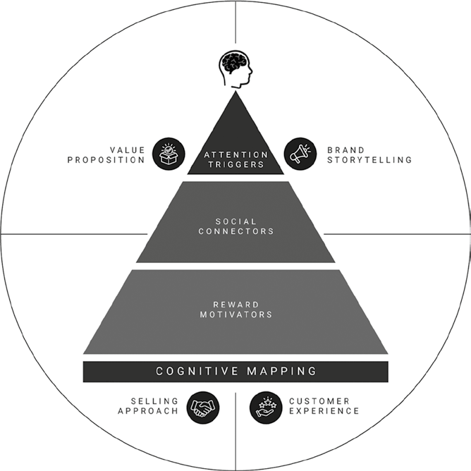
Hình 5.1: La bàn Nhận thức.Hình 5.1: La bàn Nhận thức (The Cognitive Compass).
📖 Nội dung chi tiết trong Hình 5.1 (Tổng quan La bàn Nhận thức – The Cognitive Compass):
Khối cấu trúc trên hình
Thuật ngữ gốc (Tiếng Anh)
Dịch nghĩa Tiếng Việt chuẩn
Tháp trung tâm
COGNITIVE MAPPING (ATTENTION TRIGGERS → SOCIAL CONNECTORS → REWARD MOTIVATORS)
Lập Bản đồ Nhận thức (Tác nhân Kích hoạt Sự chú ý → Chất keo Kết nối Xã hội → Động lực Tưởng thưởng)
Ở Chương 4, chúng tôi đã giới thiệu ba hệ thống não bộ có liên quan mật thiết nhất đến việc thu hút con người tăng cường: hệ não chú ý, hệ não xã hội và hệ não tưởng thưởng. Mặc dù đây không phải là các vùng giải phẫu tách biệt rạch ròi, chúng là những khái niệm chức năng đã được xác lập vững chắc trong khoa học thần kinh.
Trên thực tế, ba hệ thống não bộ này liên kết chặt chẽ với nhau và vận hành song song. Tuy nhiên, để dễ hình dung, chúng tôi khám phá chúng theo trình tự nối tiếp nhau, như thể thông điệp tiếp thị của bạn đang đi qua một chiếc phễu bên trong tâm trí khách hàng: thông điệp trước hết phải thu hút sự chú ý, sau đó tạo sự cộng hưởng ở tầng cảm xúc – xã hội, và cuối cùng thúc đẩy quyết định hành động (Hình 5.2).
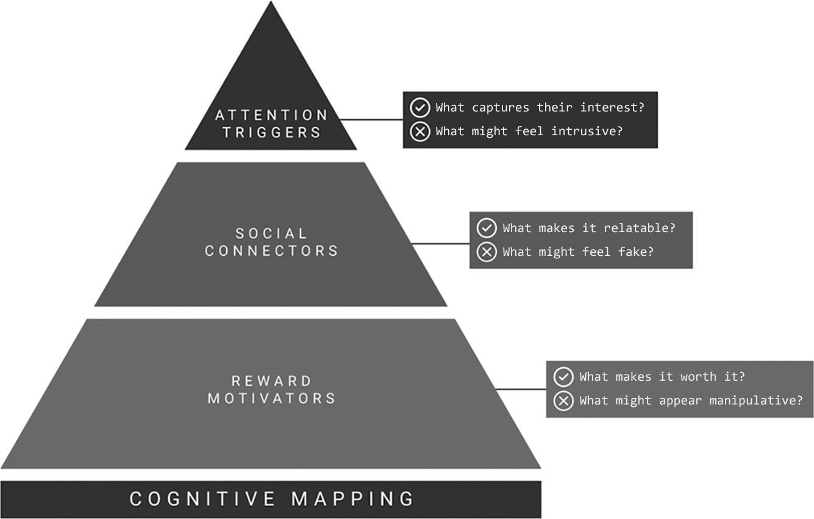
Hình 5.2: Bản đồ Nhận thức — Khung Thấu hiểu Khách hàng.Hình 5.2: Bản đồ Nhận thức — Khung Thấu hiểu Khách hàng (The Cognitive Map: A Customer Insight Framework).
📖 Nội dung chi tiết trong Hình 5.2 (Bản đồ Nhận thức & Cặp câu hỏi Phản biện cho 3 Tầng Não bộ):
Tầng Tháp Nhận thức (COGNITIVE MAPPING)
Câu hỏi Khai mở Kích thích Tích cực (✓)
Câu hỏi Kiểm soát Rào cản Tiêu cực (✕)
ATTENTION TRIGGERS — Tác nhân Kích hoạt Sự chú ý(Đỉnh tháp)
What captures their interest? — Điều gì thu hút sự quan tâm của họ?
What might feel intrusive? — Điều gì có thể gây cảm giác xâm phạm, làm phiền?
SOCIAL CONNECTORS — Chất keo Kết nối Xã hội(Giữa tháp)
What makes it relatable? — Điều gì khiến thông điệp trở nên gần gũi, dễ đồng cảm?
What might feel fake? — Điều gì có thể gây cảm giác giả tạo?
REWARD MOTIVATORS — Động lực Tưởng thưởng(Đáy tháp)
What makes it worth it? — Điều gì khiến lời chào hàng trở nên xứng đáng?
What might appear manipulative? — Điều gì có thể bị coi là thao túng tâm lý?
Việc hình dung quá trình này theo trình tự tuyến tính giúp người làm tiếp thị mường tượng rõ ràng những gì đang diễn ra bên trong tâm trí khách hàng, đóng vai trò như một công cụ thực tiễn để nắm bắt sự thấu hiểu khách hàng (customer insights). Mỗi hệ thống trong ba hệ não này đều đặt ra một thách thức — và cơ hội — riêng biệt cho người làm tiếp thị. Chúng định hình cách con người phản ứng với thông điệp. Người làm tiếp thị càng hiểu rõ điều gì kích hoạt từng hệ thống thì càng thiết kế các điểm chạm tiếp thị hiệu quả hơn.
Những thấu hiểu này tạo dựng nền móng cho việc phát triển chiến lược, giúp người làm tiếp thị thiết kế câu chuyện thương hiệu, tuyên bố giá trị, phương pháp bán hàng và trải nghiệm khách hàng. Nó cũng cung cấp bộ tiêu chí để người làm tiếp thị liên tục chất vấn và kiểm chứng lại cách tiếp cận của mình trong các chiến dịch công nghệ cao, chẳng hạn như cách khách hàng thực sự đánh giá các thông điệp tiếp thị.
Khung mô hình Chú ý – Xã hội – Tưởng thưởng (Attention – Social – Reward) có những nét tương đồng về cấu trúc với mô hình bộ não ba ngôi (triune brain model) quen thuộc vốn chia não bộ thành ba tầng tiến hóa: não cổ (bản năng), não giữa (cảm xúc) và não mới (lý tính). Cả hai khung lý thuyết đều là cách phân loại chức năng về cơ chế não bộ xử lý kích thích và đều sử dụng hình ảnh ẩn dụ phân lớp nối tiếp nhau.
Điểm làm nên sự khác biệt vượt trội của mô hình Chú ý – Xã hội – Tưởng thưởng chính là tính sát sườn với bối cảnh tiếp thị hiện đại:
- Trong kỷ nguyên quá tải nội dung khổng lồ, cuộc chiến đầu tiên là giành giật sự chú ý — người làm tiếp thị phải hiểu cách bộ não sàng lọc thông tin.
- Trong kỷ nguyên của khách hàng kết nối và các bộ lạc số, cuộc chiến thứ hai là tạo dựng sức ảnh hưởng — người làm tiếp thị phải hiểu cách bộ não đánh giá mức độ liên quan về mặt xã hội và cảm xúc.
- Và trong thời đại tiêu dùng tỉnh thức, cuộc chiến thứ ba là chứng minh giá trị — bộ não có một cơ chế phán xét khắt khe xem liệu một sản phẩm hay trải nghiệm có thực sự xứng đáng để đánh đổi hay không.
Khung mô hình này tái định hình khoa học nhận thức dưới lăng kính của động lực tiếp thị hiện đại, biến nó trở thành công cụ dễ dàng triển khai vào thực tế cho người làm tiếp thị ngày nay.
Các Tác nhân Kích hoạt Sự Chú ý (The Attention Triggers — Đầu phễu Tâm trí)
Đầu phễu là phần não bộ chịu trách nhiệm về sự chú ý, quyết định xem nên tập trung vào đâu và nên phớt lờ thứ gì. Khách hàng phải tiếp xúc với khối lượng thông điệp khổng lồ mỗi phút, và hệ não chú ý hoạt động như một màng lọc chỉ cho phép những gì thực sự thú vị đi qua.
Người làm tiếp thị phải liên tục đặt câu hỏi phản biện trong các chiến dịch công nghệ của mình, đặc biệt là khi cố gắng vượt qua đám đông tạp âm. Màng lọc đầu tiên chính là sự chú ý với câu hỏi cốt lõi: “Điều gì thu hút sự quan tâm của khán giả?” Nếu thông điệp không khơi dậy được sự tò mò, nó sẽ bị gạt bỏ ngay lập tức. Nhưng ranh giới ở đây rất mong manh, đòi hỏi câu hỏi đối trọng: “Điều gì có thể gây cảm giác xâm phạm, làm phiền?” Khi nội dung mang tính cưỡng ép hoặc cắt ngang thô bạo, nó sẽ lập tức kích hoạt sự bực bội.
Các Sợi dây Kết nối Xã hội (The Social Connectors — Giữa phễu Tâm trí)
Một khi đã thu hút được sự chú ý, hệ não xã hội ở tầng giữa phễu sẽ tiếp quản. Nó tìm kiếm sợi dây gắn kết cảm xúc với con người hoặc thương hiệu đang truyền tải thông điệp. Sự gắn kết đó thường đến từ những câu chuyện gần gũi hoặc hành vi thân thuộc. Đây chính là cơ chế giúp con người tin tưởng người ảnh hưởng hoặc cảm thấy một thương hiệu thực sự thấu hiểu mình.
Người làm tiếp thị phải khám phá câu hỏi: “Điều gì khiến thông điệp trở nên gần gũi, dễ đồng cảm (relatable)?” Bộ não luôn quét tìm các tín hiệu của sự tin cậy và kết nối. Nhưng đồng thời cũng phải tự vấn: “Điều gì có thể gây cảm giác giả tạo (fake)?” Một chiến dịch lạm dụng công nghệ rất dễ rơi vào cảm giác máy móc, vô hồn — như thể nó được lập trình chỉ để tối ưu hóa chỉ số chứ không phải để kết nối chân thành giữa người với người. Khi khâu thực thi thiếu vắng chiều sâu cảm xúc, khán giả sẽ chủ động ngắt kết nối.
Các Động lực Tưởng thưởng (The Reward Motivators — Cuối phễu Tâm trí)
Nếu thông điệp vượt qua được cửa ải của hệ não xã hội, hệ thống tưởng thưởng bắt đầu được kích hoạt. Hệ não tưởng thưởng hỗ trợ các quyết định có cân nhắc chủ đích. Nó đặt lên bàn cân đong đếm giá trị của sản phẩm và trải nghiệm trên cả hai phương diện cảm xúc lẫn lý tính. Dù cảm xúc thường là người dẫn đường, các cân nhắc lý tính vẫn đóng vai trò chốt chặn hướng dẫn lựa chọn cuối cùng. Hệ thống ra quyết định này giữ vai trò then chốt đối với hành vi mua hàng và trở thành tầng đáy phễu trong tâm trí khách hàng.
Chìa khóa ở đây là đặt câu hỏi: “Điều gì khiến lời chào hàng này trở nên xứng đáng (worth it)?” Thông điệp có thể rất mới lạ và giàu cảm xúc, nhưng nếu lợi ích nhận lại cảm nhận được (perceived payoff) quá thấp, quyết định mua hàng sẽ bị đình trệ. Song song đó, phải luôn tự hỏi: “Điều gì có thể bị coi là thao túng tâm lý (manipulative)?” Nếu gói đề xuất mang cảm giác đánh lừa hoặc gài bẫy, khách hàng sẽ lập tức quay lưng.
📌 Nghiên cứu Tình huống (Case Study): Chiến dịch “Cars to Work” của Renault — Kích hoạt Trọn vẹn Ba Hệ não
Vào năm 2024, hãng xe Pháp Renault đã triển khai một sáng kiến đoạt nhiều giải thưởng danh giá mang tên “Cars to Work” (Những chiếc xe đưa người đi làm), được thiết kế nhằm giúp đỡ những người đang thất nghiệp sống tại các vùng thiếu thốn phương tiện giao thông công cộng ở Pháp tìm được công việc ổn định. Thông qua chương trình này, Renault cho những người tìm việc mượn xe ô tô sử dụng hoàn toàn miễn phí trong suốt thời gian thử việc. Chỉ khi nào người đó chính thức ký được hợp đồng lao động dài hạn, họ mới bắt đầu trả tiền thuê hoặc mua chiếc xe đó. Chiến dịch đã giành giải thưởng cao nhất (Grand Prix) tại Liên hoan Sáng tạo Quốc tế Cannes Lions ở cả hai hạng mục Thương mại Sáng tạo (Creative Commerce) và Mục tiêu Phát triển Bền vững (Sustainable Development Goals).
Điều làm nên sự xuất sắc của chiến dịch này không chỉ là tác động xã hội to lớn, mà chính là sự đồng điệu sâu sắc với cách bộ não con người xử lý thông tin và ra quyết định:
1. Thu hút Hệ não Chú ý: Chiến dịch lập tức gây chú ý bằng một đề xuất ngược đời (counterintuitive proposition): một hãng xe hơi lại đem xe cho người thất nghiệp mượn miễn phí. Đề xuất đầy bất ngờ này phá vỡ mọi kỳ vọng thông thường, giúp thông điệp của Renault nổi bật tức thì giữa một rừng quảng cáo ô tô truyền thống.
2. Chạm vào Hệ não Xã hội: Tiếp đó, chiến dịch xây dựng kết nối cảm xúc thông qua lòng thấu cảm. Bằng cách gắn mình với hai bài toán xã hội nhức nhối có thật — quyền tiếp cận phương tiện đi lại và cơ hội việc làm — Renault đã kích hoạt mạnh mẽ hệ não xã hội, khiến công chúng nhìn nhận thương hiệu giàu tính nhân văn. Thương hiệu còn hưởng lợi lớn từ hiệu ứng hào quang (halo effect): vì sáng kiến này quá hào phóng và tử tế, thiện cảm đó lan tỏa sang toàn bộ thương hiệu Renault. Những câu chuyện người thật việc thật đã củng cố bằng chứng xã hội (social proof), chứng minh cho cộng đồng thấy chương trình đang tạo ra thay đổi tích cực thực sự.
3. Thúc đẩy Hệ não Tưởng thưởng: Cuối cùng, chiến dịch khai thác hệ thống tưởng thưởng bằng cách cấu trúc gói đề xuất dựa trên nguyên lý ác cảm mất mát (loss aversion). Một khi người dùng đã quen với việc có một chiếc xe hơi để đi làm hàng ngày, viễn cảnh phải trả lại chiếc xe đó trở thành một sự mất mát lớn về mặt cảm xúc. Điều này tạo động lực mạnh mẽ thôi thúc họ nỗ lực vượt qua kỳ thử việc để giữ được công việc ổn định — và giữ lại chiếc xe.
Bằng cách kích hoạt đồng bộ cả ba hệ thống não bộ — Chú ý, Xã hội và Tưởng thưởng — sáng kiến “Cars to Work” của Renault đã trở thành nguồn cảm hứng mẫu mực cho tiếp thị lấy tâm trí làm trung tâm, chứng minh cách một chương trình được thiết kế khéo léo theo cơ chế vận hành của tâm trí có thể bồi đắp tài sản thương hiệu mạnh mẽ đến nhường nào.
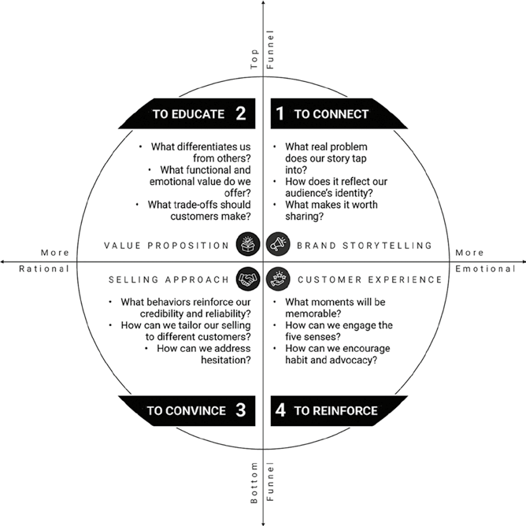
Hình 5.3: Tứ đồ Kích thích Tiếp thị — Khung Thiết kế Tiếp thị.Hình 5.3: Tứ đồ Kích thích Tiếp thị — Khung Thiết kế Tiếp thị (The Stimuli Quadrants: A Marketing Design Framework).
📖 Nội dung chi tiết trong Hình 5.3 (Tứ đồ Kích thích Tiếp thị – The Stimuli Quadrants):
Trục ngang:More Rational (Thiên về Lý tính – Trái) $\leftrightarrow$ More Emotional (Thiên về Cảm xúc – Phải)
Góc phần tư & Mục tiêu
Công cụ Kích thích
3 Câu hỏi Thiết kế Chiến lược trên hình (Tiếng Anh & Tiếng Việt)
1. TO CONNECT — Để Kết nối(Đỉnh phễu × Cảm xúc)
BRAND STORYTELLING (Kể chuyện Thương hiệu)
• What real problem does our story tap into? (Câu chuyện của chúng ta chạm vào vấn đề thực tế nào?) • How does it reflect our audience's identity? (Nó phản chiếu bản sắc của khán giả ra sao?) • What makes it worth sharing? (Điều gì khiến câu chuyện xứng đáng được chia sẻ?)
2. TO EDUCATE — Để Giáo dục thị trường(Đỉnh phễu × Lý tính)
VALUE PROPOSITION (Tuyên bố Giá trị)
• What differentiates us from others? (Điều gì tạo nên sự khác biệt giữa chúng ta và đối thủ?) • What functional and emotional value do we offer? (Chúng ta mang lại giá trị chức năng và cảm xúc gì?) • What trade-offs should customers make? (Khách hàng cần thực hiện những sự đánh đổi nào?)
3. TO CONVINCE — Để Thuyết phục(Đáy phễu × Lý tính)
SELLING APPROACH (Phương pháp Bán hàng)
• What behaviors reinforce our credibility and reliability? (Những hành vi nào củng cố uy tín và độ tin cậy của chúng ta?) • How can we tailor our selling to different customers? (Làm sao để may đo cách bán hàng cho từng nhóm khách hàng khác nhau?) • How can we address hesitation? (Làm sao để hóa giải sự do dự của khách hàng?)
4. TO REINFORCE — Để Củng cố(Đáy phễu × Cảm xúc)
CUSTOMER EXPERIENCE (Trải nghiệm Khách hàng)
• What moments will be memorable? (Những khoảnh khắc nào sẽ khắc sâu vào trí nhớ?) • How can we engage the five senses? (Làm sao để đánh thức cả năm giác quan?) • How can we encourage habit and advocacy? (Làm sao để khuyến khích hình thành thói quen và sự ủng hộ/lan tỏa?)
Tứ đồ Kích thích Tiếp thị (The Stimuli Quadrants)
Các tác động lấy tâm trí làm trung tâm được cụ thể hóa thành bốn mảnh ghép chiến lược, mỗi mảnh ghép phải khớp nối nhịp nhàng với cách bộ não con người xử lý kích thích và đưa ra quyết định (Hình 5.3). Bốn ứng dụng tiếp thị này đòi hỏi người làm tiếp thị phải thấu hiểu và tác động vào nhận thức ở từng chặng đường trong hành trình khách hàng:
Kể chuyện thương hiệu (Brand Storytelling — Mục tiêu: Kết nối / Connect): Trong kỷ nguyên truyền thông số, tương tác đầu tiên của khách hàng với thương hiệu thường bắt đầu từ việc tiếp xúc với nội dung. Kể chuyện thương hiệu đóng vai trò là cổng vào tâm trí khách hàng. Vai trò chính của nó là kết nối, cho thấy thương hiệu thực sự thấu hiểu những điều quan trọng đối với khán giả. Mặc dù cả ba hệ thống não bộ đều được kích hoạt, hệ não chú ý và hệ não xã hội đóng vai trò chủ đạo ở giai đoạn này, quyết định xem khách hàng sẽ ở lại theo dõi tiếp hay lướt đi. Nếu câu chuyện thất bại trong việc kết nối, hành trình tương tác sẽ chấm dứt ngay tại đây.
Tuyên bố giá trị (Value Proposition — Mục tiêu: Giáo dục thị trường / Educate): Nếu câu chuyện tạo được sự cộng hưởng, khách hàng thường bước sang giai đoạn khám phá, chủ động tìm hiểu thêm thông tin về thương hiệu. Điều này dẫn họ đến với tuyên bố giá trị của thương hiệu — lời hứa được gửi gắm bên trong sản phẩm hoặc dịch vụ. Ở giai đoạn này, mục tiêu cốt lõi là giáo dục/cung cấp thông tin: giải thích rõ ràng lợi ích của thương hiệu và điều gì làm nên sự độc đáo của nó. Tại đây, hệ não tưởng thưởng hoạt động mạnh mẽ nhất, đặt lên bàn cân đong đếm giữa lợi ích cảm nhận được với chi phí phải bỏ ra. Một tuyên bố giá trị mạnh mẽ phải đưa ra được lý do thuyết phục để tin tưởng rằng thương hiệu hoàn toàn xứng đáng để tiến xa hơn.
Phương pháp bán hàng (Selling Approach — Mục tiêu: Thuyết phục / Convince): Khi khách hàng tiến gần đến quyết định mua sắm, họ sẽ trải nghiệm phương pháp bán hàng của thương hiệu — thông qua tương tác trực tiếp với nhân viên bán hàng hoặc qua các nền tảng kỹ thuật số trung gian. Mục tiêu ở đây là thuyết phục khách hàng. Phương pháp bán hàng phải kích hoạt đồng thời hệ não xã hội và hệ não tưởng thưởng bằng cách xây dựng lòng tin và củng cố giá trị cảm nhận. Chất lượng của tương tác này thường là yếu tố định đoạt xem khách hàng có hoàn tất giao dịch mua hàng hay không.
Trải nghiệm khách hàng (Customer Experience — Mục tiêu: Củng cố / Reinforce): Cuối cùng, ấn tượng bền lâu nhất được hình thành bởi trải nghiệm thực tế của khách hàng trong suốt quá trình mua sắm, sử dụng sản phẩm và dịch vụ hậu mãi. Giai đoạn này hướng tới mục tiêu củng cố. Một trải nghiệm thỏa mãn sẽ khắc sâu những ký ức tích cực và thắt chặt thiện cảm dành cho thương hiệu, quyết định xem khách hàng có quay lại mua lặp lại hay trở thành những người ủng hộ trung thành (loyal advocates) hay không.
Khi ghép lại cùng nhau, bốn viên gạch nền tảng này tạo thành Tứ đồ Kích thích Tiếp thị (The Stimuli Quadrants), được tổ chức xoay quanh hai trục chính đại diện cho cách hoạt động tiếp thị tương tác với tâm trí con người:
- Trục ngang (Phổ Lý tính – Cảm xúc / Rational–Emotional Axis): Tượng trưng ẩn dụ cho chức năng bán cầu não trái và bán cầu não phải. Phía bên trái là Tuyên bố giá trị và Phương pháp bán hàng — hai hợp phần đặt nền tảng chủ yếu trên tư duy lý tính. Phía bên phải là Kể chuyện thương hiệu và Trải nghiệm khách hàng — hai hợp phần được thiết kế để kết nối sâu sắc về mặt cảm xúc.
- Trục dọc (Tiến trình Phễu Tiếp thị / Funnel-Progression Axis): Thể hiện sự dịch chuyển từ đỉnh phễu xuống đáy phễu tiếp thị. Nửa phía trên bao gồm Kể chuyện thương hiệu và Tuyên bố giá trị, thúc đẩy nhận biết và sự quan tâm ở những chặng đầu của hành trình khách hàng. Nửa phía dưới bao gồm Phương pháp bán hàng và Trải nghiệm khách hàng, dẫn dắt quyết định mua sắm và hành vi sau mua.
Hai trục này hợp lại tạo thành một khung chiến lược toàn diện giúp đồng bộ hóa các kích thích tiếp thị với Bản đồ Nhận thức, vừa chạm tới tâm trí con người vừa thúc đẩy kết quả kinh doanh thực chất.
1. Kể chuyện Thương hiệu (Brand Storytelling)
Trong kỷ nguyên số — nơi khoảng chú ý (attention span) ngắn ngủi còn nội dung lại ngập tràn — kể chuyện là kích thích mạnh mẽ nhất để thương hiệu thu hút sự chú ý. Tuy nhiên, rất nhiều câu chuyện thương hiệu rơi vào cảnh nhạt nhẽo vì chúng đặt công ty — chứ không phải khách hàng — làm nhân vật trung tâm của câu chuyện.
Kể chuyện thương hiệu hiệu quả luôn bắt đầu từ sự thấu hiểu sâu sắc thế giới cảm xúc của khách hàng. Sự căng thẳng (tension) nằm ở trái tim của một câu chuyện hay thường bắt nguồn từ những nhu cầu cảm xúc chưa được đáp ứng. Vấn đề đó có thể mang hình hài của những nỗi bất an cá nhân (như mặc cảm ngoại hình hay nỗi lo mất việc làm), những áp lực xã hội (như hội chứng sợ bỏ lỡ FOMO hay áp lực phải được bạn bè công nhận), hoặc áp lực từ những khát vọng lớn lao (như mong muốn cân bằng công việc – cuộc sống hay bảo vệ hành tinh xanh). Chạm vào đúng điểm căng thẳng này là bước đầu tiên để thiết lập kết nối.
Nguyên liệu thứ hai là sự đồng điệu với bản sắc của khán giả (audience identity). Khách hàng luôn bị thu hút bởi những câu chuyện khẳng định con người hiện tại của họ hoặc hình mẫu mà họ khao khát trở thành. Bản sắc của khách hàng bao hàm hệ giá trị (values) — những niềm tin cốt lõi định hướng điều gì là quan trọng trong cuộc đời; thái độ cá nhân (attitudes) — chẳng hạn như sự cởi mở đón nhận ý tưởng mới; và được bộc lộ qua hành vi (behavior) — những gì họ chọn làm hoặc tiêu dùng. Ví dụ, một nhân sự trẻ thế hệ Gen Z đề cao sự tiến bộ, yêu thích đổi mới sáng tạo và làm việc nhiều giờ mỗi ngày sẽ dễ dàng bị thu hút bởi câu chuyện thương hiệu tôn vinh văn hóa nỗ lực dấn thân hiện đại.
Những câu chuyện thương hiệu vĩ đại không dừng lại ở việc tạo ra sự cộng hưởng cá nhân; chúng mở rộng quy mô ảnh hưởng bằng cách trở nên đáng chia sẻ (shareable) bên trong các bộ lạc khách hàng. Để đáng được chia sẻ, câu chuyện thương hiệu phải khơi gợi những cảm xúc mạnh mẽ — như nỗi buồn sâu lắng hay niềm hy vọng mãnh liệt — thôi thúc con người hành động. Nhưng chỉ lực hút cảm xúc thôi là chưa đủ: câu chuyện còn phải đóng vai trò là phương tiện để người dùng thể hiện bản thân (self-expression). Hành động nhấn nút chia sẻ lúc này trở thành lời tuyên ngôn: “Đây chính là con người tôi.” Quan trọng không kém, câu chuyện sẽ tạo được sức bật lớn khi nuôi dưỡng cảm giác thuộc về một tập thể (affiliation) — con người luôn bị cuốn hút bởi những nội dung giúp họ cảm thấy mình là một phần của một sứ mệnh hay phong trào lớn lao hơn bản thân.
Câu chuyện thương hiệu “Cost of Beauty” (Cái giá của Sắc đẹp) của Dove là minh họa đầy sức nặng cho nghệ thuật kể chuyện nhận thức trong thực tiễn. Chiến dịch này nằm trong Dự án Nâng cao Lòng tự tôn của Dove (Dove Self-Esteem Project), hướng tới mục tiêu trở thành nền tảng giáo dục về sự tự tin ngoại hình lớn nhất thế giới.
Nằm ở tâm điểm của câu chuyện là một vấn đề vô cùng nhức nhối đối với giới trẻ: những tiêu chuẩn sắc đẹp độc hại được tiếp tay bởi mạng xã hội. Những hình mẫu lý tưởng hóa phi thực tế này đã thổi bùng sự bất mãn về ngoại hình ở người trẻ, dẫn đến hàng loạt hệ lụy nghiêm trọng về sức khỏe tâm thần.
Để đồng điệu với bản sắc của thế hệ trẻ ngày nay, Dove đã chọn khắc họa câu chuyện có thật của Mary — một cô gái trẻ mắc chứng rối loạn ăn uống nghiêm trọng khi cố gắng ép mình theo đuổi các chuẩn mực sắc đẹp trên mạng. Tuy nhiên, câu chuyện của Mary không được kể như một trường hợp cá biệt; nó đại diện cho hàng triệu cô gái trẻ đang phải gồng mình trước những áp lực tương tự.
Bộ phim ngắn khép lại bằng lời kêu gọi hành động mạnh mẽ, thúc giục người xem ký tên ủng hộ Đạo luật An toàn Trực tuyến cho Trẻ em (Kids Online Safety Act). Lời hiệu triệu này đã nâng tầm một câu chuyện cá nhân thành một phong trào xã hội đáng chia sẻ, mời gọi công chúng cùng chung tay trở thành một phần của giải pháp.
2. Tuyên bố Giá trị (Value Proposition)
Trong khi kể chuyện thương hiệu tạo ra sự cộng hưởng cảm xúc, thì tuyên bố giá trị (value proposition) lại dẫn dắt phép so sánh trong tâm trí khách hàng. Bộ não con người được lập trình tự nhiên để đối chiếu các phương án, cân nhắc sự đánh đổi (trade-offs) và chọn ra phương án mang lại giá trị cảm nhận lớn nhất với chi phí thấp nhất. Khách hàng hiếm khi đánh giá sản phẩm một cách biệt lập; điều này có nghĩa là doanh nghiệp phải thiết kế được những tuyên bố giá trị nổi bật hẳn lên trong bối cảnh cạnh tranh.
Nhiệm vụ đầu tiên là thu hút sự chú ý bằng cách phát đi tín hiệu khác biệt hóa rõ ràng (clear differentiation). Trong một thị trường chật chội với vô vàn lựa chọn, khách hàng sàng lọc cực nhanh. Họ dựa vào các dấu hiệu nổi bật — thiết kế táo bạo hoặc câu khẩu hiệu (tagline) sắc bén — để quyết định xem gói chào hàng nào đáng để cân nhắc tiếp. Đây là nơi sự khác biệt hóa phát huy vai trò tối thượng: nếu một sản phẩm trông giống hệt mọi thứ khác trên kệ, nó sẽ bị làm ngơ trước cả khi quá trình đánh giá sâu kịp bắt đầu.
Một khi đã giữ được sự chú ý, doanh nghiệp phải đạt được sự cân bằng giữa giá trị chức năng (functional value) và giá trị cảm xúc (emotional value). Khách hàng bắt đầu đặt lên bàn cân những gì sản phẩm làm được (công năng) cùng với cảm giác mà sản phẩm mang lại cho họ. Chẳng hạn, một chiếc máy tính xách tay mỏng nhẹ có thể mang lại những lợi ích hữu hình như tốc độ xử lý nhanh và thời lượng pin bền bỉ — đó là các thuộc tính chức năng. Tuy nhiên, nó cũng cần mang theo ý nghĩa cảm xúc, chẳng hạn như sự tự tin hay vị thế xã hội — việc sở hữu chiếc máy đó nói lên điều gì về chủ nhân của nó và khớp với bản sắc mà họ mong muốn ra sao.
Cuối cùng, doanh nghiệp phải giải đáp thỏa đáng câu hỏi chốt hạ của khách hàng: “Nó có thực sự xứng đáng không?” (Is it worth it?) Khách hàng luôn đứng trước sự đánh đổi giữa những gì họ nhận được (what they get) và những gì họ phải bỏ ra (what they give). Ở giai đoạn này, tuyên bố giá trị phải truyền tải thuyết phục rằng lợi ích nhận về vượt trội hơn hẳn chi phí bỏ ra. Những chi phí này không chỉ dừng lại ở con số trên nhãn giá mà còn bao gồm công sức bỏ ra để mua được sản phẩm, các khoản phí ẩn, chi phí bảo trì định kỳ, hay rủi ro chọn nhầm sản phẩm. Một tuyên bố giá trị sắc bén sẽ đơn giản hóa phép tính nhẩm phức tạp này trong đầu khách hàng, trấn an họ rằng phần thưởng nhận lại lớn hơn nhiều so với sự hy sinh, khiến quyết định mua sắm mang lại cảm giác khôn ngoan, sáng suốt.
Cuộc cạnh tranh giữa gã khổng lồ Nike và những tân binh đang lên như hãng giày chạy bộ On là minh chứng rõ nét cho những nguyên tắc này. Nike từ lâu đã thống trị ngành đồ thể thao bằng cách mở rộng định nghĩa về thị trường của mình. Với câu chuyện thương hiệu kinh điển “Nếu bạn có một cơ thể, bạn chính là một vận động viên”, Nike định vị mình là thương hiệu dành cho tất cả mọi người.
Tuy nhiên, khi Nike ngày càng dựa dẫm nhiều vào các mẫu thiết kế hoài cổ (retro designs) và công nghệ di sản cũ, tuyên bố giá trị của hãng bắt đầu trở nên mờ nhạt. Các mẫu giày trông ngày càng giống nhau trong khi giá bán lại tăng lên, khiến phép tính đánh đổi giữa những gì khách hàng nhận được và số tiền họ bỏ ra trở nên khó thuyết phục hơn.
Đó chính là khe hở để On bứt phá. On lập tức thu hút sự chú ý bằng thiết kế đế đệm rỗng CloudTec có ngoại hình khác biệt hoàn toàn về mặt thị giác. Thương hiệu đơn giản hóa tuyên bố giá trị của mình gói gọn trong cụm từ “Kỹ thuật Thụy Sĩ” (Swiss Engineering), mang lại sự rõ ràng tuyệt đối về lợi ích chất lượng mà khách hàng nhận được. Hơn nữa, trong khi Nike thu hẹp kênh bán lẻ đối tác để dồn lực sang mô hình bán trực tiếp tới người tiêu dùng (DTC) vào giai đoạn cuối đại dịch, thì On lại mở rộng độ phủ sẵn có thông qua mạng lưới đối tác bán lẻ chuyên biệt.
Dù quy mô của Nike hiện vẫn lớn hơn On rất nhiều nhờ sức hút đại chúng rộng rãi, nhưng trong một thị trường được định hình bởi sự so sánh liên tục, Nike có lẽ cần phải hiệu chỉnh lại tuyên bố giá trị của mình trước sự trỗi dậy của các lựa chọn thay thế mới mẻ hơn.
3. Phương pháp Bán hàng (Selling Approach)
Sau khi đã giáo dục thị trường bằng một tuyên bố giá trị mạnh mẽ, thách thức tiếp theo là tạo ra cú hích cuối cùng (final nudge) để khách hàng đưa ra quyết định mua hàng. Đây là lúc phương pháp bán hàng (selling approach) trở nên tối quan trọng. Mặc dù khách hàng có thể đã tương tác với câu chuyện thương hiệu và tìm hiểu tuyên bố giá trị trên mạng, họ vẫn tìm kiếm sự an tâm thông qua kết nối con người trước khi chính thức xuống tiền cam kết.
Ở giai đoạn này, doanh nghiệp phải chuyển từ lời hứa sang hành động thực tế. Đội ngũ bán hàng phải chứng minh được năng lực chuyên môn (credibility) và độ tin cậy (reliability) song song với việc duy trì mối quan hệ cảm xúc. Trong kỷ nguyên mà các tác tử AI có thể mô phỏng quy trình chào hàng, chính những khoảnh khắc giao tiếp giữa người với người này thường tạo ra sự khác biệt mang tính quyết định.
Để bắt đầu, nhân viên bán hàng tuyến đầu phải phát đi tín hiệu đáng tin cậy (signal trustworthiness). Khách hàng trong vô thức luôn quét tìm các dấu hiệu xem liệu người đại diện của thương hiệu có đáng tin hay không. Khi người bán giao tiếp với phong thái tự tin, họ bắt đầu tạo dựng được niềm tin đó. Ngay cả những hành vi đơn giản — như phản hồi kịp thời và chủ động theo sát hỗ trợ (follow-up) — cũng đóng vai trò là những tín hiệu mạnh mẽ về độ tin cậy.
Một khi niềm tin đã mở cánh cửa đầu tiên, người bán phải thiết lập kết nối sâu sắc hơn thông qua các tương tác được thiết kế riêng. Đây là lúc sự cá nhân hóa lên tiếng: khi người bán thể hiện sự thấu hiểu bối cảnh riêng của khách hàng, đề xuất đúng giải pháp phù hợp và truyền đạt nó đầy tự tin, họ bắt đầu xây dựng được sự gắn kết thân tình (intimacy).
Cuối cùng, phương pháp bán hàng phải xóa bỏ hoàn toàn những sự do dự còn sót lại. Khách hàng có thể vẫn còn băn khoăn hoặc lo ngại về rủi ro; người bán phải sẵn sàng giải tỏa những mối bận tâm đó và mang lại sự an tâm tuyệt đối (peace of mind). Ví dụ, nếu sản phẩm có giá cao, người bán có thể đề xuất phương án trả góp linh hoạt; nếu khách hàng băn khoăn liệu quần áo có vừa vặn không, người bán có thể nhấn mạnh lại chính sách đổi trả miễn phí dễ dàng. Mọi sự ngập ngừng đều phải được đáp lại bằng sự trấn an vững chắc.
Salesforce, nhà cung cấp phần mềm quản trị quan hệ khách hàng (CRM) hàng đầu thế giới, mang đến một ví dụ thuyết phục về cách phương pháp bán hàng nhận thức có thể được tiếp sức mạnh mẽ nhờ AI. Công ty trao quyền cho đội ngũ bán hàng tuyến đầu bằng cách tăng cường năng lực cho họ thông qua các công cụ thông minh:
- Salesforce ủy thác khâu tìm kiếm và sàng lọc khách hàng tiềm năng (lead generation and qualification) cho các tác tử AI, giúp nhân viên bán hàng dồn toàn bộ tâm sức vào các tương tác giá trị cao giữa người với người — nơi lòng tin giữ vai trò quyết định.
- Hãng nâng cao sự chuẩn bị của đội ngũ thông qua một Huấn luyện viên AI (AI coach) chuyên tổng hợp hồ sơ chi tiết về khách hàng bao gồm phân tích ngành, hồ sơ doanh nghiệp và những nỗi đau (pain points) sát sườn. Nhân viên bán hàng có thể tập dượt trước với tác tử AI — hệ thống sẽ đóng vai khách hàng tiềm năng để mô phỏng cuộc trò chuyện và đưa ra phản hồi cá nhân hóa theo từng chân dung người mua, giúp nhân viên tự tin hơn hẳn khi bước vào cuộc gặp thật.
- Khi khách hàng tiềm năng nhắc đến đối thủ cạnh tranh, Huấn luyện viên AI lập tức cung cấp các bảng so sánh lợi thế hoặc câu chuyện thành công từ những khách hàng tương đồng; nếu giá cả là rào cản, hệ thống nhanh chóng trang bị cho người bán bảng mô phỏng lợi tức đầu tư (ROI simulation). Bằng cách tận dụng AI làm hậu phương, Salesforce giúp đội ngũ bán hàng tập trung trở thành gương mặt đại diện đáng tin cậy nhất của thương hiệu.
4. Trải nghiệm Khách hàng (Customer Experience)
Mảnh ghép cuối cùng trong La bàn Nhận thức là trải nghiệm khách hàng (customer experience). Nó diễn ra sau quyết định mua hàng và chi phối trực tiếp việc liệu khách hàng có quay trở lại và giới thiệu thương hiệu cho người khác hay không. Giai đoạn này là bài kiểm tra thực tế khắc nghiệt nhất đối với thương hiệu trong tâm trí khách hàng: mọi lời hứa thương hiệu, tuyên bố giá trị và bài thuyết trình bán hàng đều sẽ được khách hàng trực tiếp kiểm chứng.
Khách hàng không thể nhớ hết mọi tương tác nhỏ lẻ với thương hiệu; những điểm chạm vụn vặt thường nhanh chóng rơi vào quên lãng. Nhưng nhất định phải có một vài khoảnh khắc đáng nhớ (memorable moments) khắc sâu vào tâm khảm của họ. Thương hiệu phải tập trung kiến tạo những khoảnh khắc gây choáng ngợp thích thú (WOW moments), chẳng hạn như nâng hạng dịch vụ bất ngờ hoặc xử lý khiếu nại khách hàng một cách xuất sắc vượt mong đợi. Mỗi thương hiệu phải tự đặt câu hỏi: “Nếu khách hàng chỉ nhớ duy nhất một điều về thương hiệu của chúng ta, thì đó sẽ là điều gì?”
Một phương thức đầy quyền năng để tạo ra trải nghiệm phi thường là thông qua thiết kế đa giác quan (multisensory design). Việc đánh thức cả năm giác quan khiến trải nghiệm trở nên đắm chìm hơn, qua đó tăng cường quá trình mã hóa ký ức trong não bộ. Một khách sạn, chẳng hạn, có thể được nhớ mãi nhờ lối bài trí độc đáo, tiếng nhạc nền êm dịu, mùi hương đặc trưng lan tỏa ở sảnh, bộ chăn ga gối êm ái hay một món ăn trứ danh. Tất cả những yếu tố đó để lại dấu ấn giác quan sâu đậm trong tâm trí du khách, thôi thúc họ quay trở lại.
Doanh nghiệp cũng có thể củng cố hành vi mua lặp lại bằng cách kích hoạt hệ thống tưởng thưởng của não bộ. Các chương trình khách hàng thân thiết (loyalty programs) giúp hình thành thói quen bằng cách trao tặng phần thưởng khuyến khích mua sắm nhiều lần. Tuy nhiên, sự ủng hộ và lan tỏa thương hiệu (advocacy) còn tiến xa hơn thế một bậc: những người ủng hộ đích thực không giới thiệu thương hiệu chỉ để nhận vài đồng tiền thưởng; họ làm vậy vì thực tâm muốn bạn bè và người thân cũng được tận hưởng trải nghiệm tuyệt vời giống như mình. Trong tâm trí khách hàng, việc đứng ra giới thiệu một thương hiệu luôn đi kèm rủi ro xã hội: nếu trải nghiệm thực tế tồi tệ, uy tín cá nhân của chính họ sẽ bị tổn hại. Đó là lý do vì sao chỉ những trải nghiệm thực sự xuất sắc mới xứng đáng nhận được sự bảo chứng truyền miệng của khách hàng.
Hệ thống đại siêu thị Costco là hình mẫu kinh điển về cách một trải nghiệm khách hàng xuất sắc nuôi dưỡng lòng trung thành của hơn 130 triệu hội viên trên toàn thế giới. Mô hình thu phí thẻ hội viên thường niên đóng vai trò như một khoản chi phí chìm (sunk cost) thúc đẩy khách hàng ghé mua thường xuyên hơn, nhưng chính trải nghiệm mua sắm tuyệt vời tại cửa hàng mới là thứ mang về cho Costco sự sùng bái nồng nhiệt từ khách hàng.
Mua sắm tại Costco mang lại cảm giác giống như một cuộc săn tìm kho báu đa giác quan (multisensory treasure hunt). Khách hàng dạo bước qua những dãy kệ không gắn biển chỉ dẫn chi tiết, bất ngờ khám phá ra các mặt hàng mới luân phiên thay đổi liên tục trong khi thưởng thức các quầy đồ ăn dùng thử miễn phí dọc đường đi. Dù nổi tiếng là nhà bán lẻ giá sỉ tiết kiệm, Costco vẫn mang đến trải nghiệm mua sắm đầy hứng khởi nơi hội viên có thể bắt gặp cả những món hàng hiệu xa xỉ nằm cạnh nhu yếu phẩm hàng ngày — nơi sự tiết kiệm thông minh giao thoa cùng những niềm vui tự thưởng bất ngờ.
Một yếu tố khác biệt hóa then chốt khác của Costco là chất lượng dịch vụ đồng đều vượt trội, được tạo nên bởi đội ngũ nhân viên tuyến đầu có mức lương đãi ngộ tốt và tinh thần làm việc đầy nhiệt huyết. Sự tận tâm của họ biến mỗi lần ghé siêu thị thành một trải nghiệm đáng nhớ. Costco đã kiến tạo nên một trải nghiệm mua sắm ngập tràn niềm vui, giữ chân khách hàng quay lại mãi và truyền động lực để họ tự nguyện giới thiệu thương hiệu cho mọi người xung quanh.
Tóm tắt Chương 5
Tiếp thị lấy tâm trí làm trung tâm (Mind-centric marketing) cung cấp cẩm nang tư duy để điều hướng hoạt động tiếp thị trong một thế giới do công nghệ dẫn dắt. Khi các tác tử AI có thể tự tạo nội dung, cá nhân hóa ưu đãi và thực hiện các cuộc hội thoại, người làm tiếp thị đứng trước nguy cơ đánh mất thứ quan trọng nhất: sự kết nối con người.
Phương pháp tiếp cận này sử dụng La bàn Nhận thức (The Cognitive Compass) được xây dựng trên hai hợp phần cốt lõi:
1. Bản đồ Nhận thức (The Cognitive Map): Mô hình thấu hiểu khách hàng dựa trên cách bộ não xử lý các kích thích tiếp thị — trong đó hệ não chú ý sàng lọc nội dung, hệ não xã hội tìm kiếm sự đồng điệu cảm xúc, và hệ não tưởng thưởng đánh giá xem sản phẩm hay dịch vụ có thực sự xứng đáng hay không.
2. Tứ đồ Kích thích Tiếp thị (The Stimuli Quadrants): Chuyển hóa những thấu hiểu đó thành bốn bước hành động chiến lược — Kể chuyện thương hiệu (Brand Storytelling) thu hút sự chú ý bằng cách phản chiếu những trăn trở của khán giả; Tuyên bố giá trị (Value Proposition) đơn giản hóa các phép tính đánh đổi trong tâm trí khách hàng; Phương pháp bán hàng (Selling Approach) xây dựng niềm tin và tạo cú hích chốt đơn cuối cùng; và Trải nghiệm khách hàng (Customer Experience) mang lại những khoảnh khắc đáng nhớ củng cố trọn vẹn câu chuyện thương hiệu.
Khi kết hợp cùng nhau, các yếu tố này nhắc nhở người làm tiếp thị rằng ngay cả trong kỷ nguyên AI, bản chất của tiếp thị vẫn luôn là thấu hiểu con người. La bàn Nhận thức mang đến một kim chỉ nam toàn diện, bám rễ vững chắc vào sự am hiểu tường tận về cách tâm trí con người vận hành.
Câu hỏi Suy ngẫm
Hoạt động nghiên cứu thị trường hiện tại của bạn có thực sự khám phá ra cách khách hàng suy nghĩ, cảm nhận và ra quyết định hay chưa?
Mảnh ghép nào trong bốn kích thích tiếp thị của doanh nghiệp bạn đang còn yếu trong việc thu hút và chạm vào tâm trí con người?
Bạn đang sử dụng công nghệ để làm sâu sắc thêm kết nối con người hay đang dùng công nghệ để thay thế con người?
Năm 2025 đánh dấu sự chào đời của Thế hệ Beta (Generation Beta) — nhóm thế hệ nhân khẩu học mới nhất, nối tiếp năm thế hệ trước đó: Thế hệ Bùng nổ trẻ sơ sinh (Baby Boomers), Thế hệ X (Gen X), Thế hệ Y (Gen Y / Millennials), Thế hệ Z (Gen Z) và Thế hệ Alpha (Gen Alpha).
Những đứa trẻ thuộc Thế hệ Beta sẽ lớn lên trong một thế giới được định hình bởi những xu hướng mang tính bước ngoặt, với trí tuệ nhân tạo (AI) nằm ở vị trí trung tâm. Đây là thế hệ đầu tiên sinh ra sau đại dịch COVID-19 và sau thời điểm ra mắt ChatGPT — hai chất xúc tác quan trọng nhất thúc đẩy làn sóng ứng dụng AI trên toàn cầu. Vì vậy, khác với tất cả các thế hệ đi trước, Thế hệ Beta sẽ không bao giờ biết đến một thế giới trước khi có AI.
Được sinh ra bởi những bậc cha mẹ thuộc Thế hệ Z, Thế hệ Beta cũng là thế hệ đầu tiên được nuôi dạy bởi những công dân kỹ thuật số bẩm sinh (true digital natives) thực thụ. Cũng giống như việc Gen Z trưởng thành trong một thế giới kết nối mạng, con cái của họ cũng sẽ trải nghiệm điều tương tự. Nhưng có một điểm khác biệt cốt lõi: những hình mẫu đầu đời (role models) của các em vốn đã đắm mình sâu sắc trong lối sống công nghệ. Thế hệ Beta sẽ lớn lên cùng hình ảnh những người cha, người mẹ — những con người tăng cường (augmented humans) — sử dụng công nghệ AI trong mọi việc hàng ngày. Đồng thời, các em sẽ bước vào hệ thống giáo dục đã bắt đầu tích hợp sâu AI vào trải nghiệm lớp học.
Thế hệ Beta cũng sẽ lớn lên đối mặt với hàng loạt thách thức cam go. Biến đổi khí hậu sẽ diễn biến gay gắt hơn trong suốt cuộc đời các em. Căng thẳng địa chính trị và chủ nghĩa dân tộc cực đoan trỗi dậy sẽ định hình bức tranh toàn cầu. Công bằng xã hội sẽ là chủ đề trọng tâm trong quá trình trưởng thành của các em dưới sự ảnh hưởng từ cha mẹ Gen Z — thế hệ đa dạng nhất trong lịch sử tính đến nay.
Sự xuất hiện của Thế hệ Beta cũng sẽ tái định hình thứ tự ưu tiên của chính Thế hệ Z. Khi bước vào thiên chức làm cha mẹ, Gen Z sẽ gánh vác những trách nhiệm mới, trở thành người ra quyết định mua sắm không chỉ cho bản thân mà còn cho con cái họ trong suốt hai thập kỷ tới.
Cách thức Thế hệ Z lựa chọn để nuôi dạy con cái sẽ định hình sâu sắc Thế hệ Beta. Là một thế hệ lớn lên cùng mạng xã hội, Gen Z nhiều khả năng sẽ tìm đến chính các nền tảng này để học hỏi kinh nghiệm làm cha mẹ. Quan trọng hơn cả, cách họ giới thiệu và cho con cái tiếp xúc với mạng xã hội sẽ quyết định hệ giá trị và thái độ sống của Thế hệ Beta.
Thực vậy, những năm tháng đầu đời luôn để lại dấu ấn lâu dài lên tâm trí con người — một chân lý đúng với mọi thế hệ. Trong khoa học nhận thức, giai đoạn sớm này được gọi là dấu ấn tâm lý đầu đời (imprinting) — thời kỳ học hỏi nền tảng định hình cách thức ra quyết định kéo dài đến tận tuổi trưởng thành. Những giá trị và thái độ thúc đẩy hành vi người tiêu dùng thường bám rễ sâu từ khung cửa sổ phát triển quan trọng này. Đối với người làm tiếp thị, việc thấu hiểu cơ chế này mang lại một lăng kính sắc bén để khám phá những động lực ngầm ẩn đằng sau các lựa chọn của khách hàng.
Chương này giới thiệu phương pháp mà chúng tôi gọi là Lập bản đồ Nhận thức (Cognitive Mapping) — cách tiếp cận nhằm khai thác sự thấu hiểu khách hàng sâu sắc (deep customer insight) bằng cách quan sát hành vi trong thế giới thực dưới góc nhìn nhận thức. Phương pháp này nắm bắt những gì nằm sâu bên dưới bề mặt: những giá trị và thái độ đã in dấu ấn từ thuở thiếu thời vốn chi phối hành vi nhưng lại hoàn toàn vô hình trước các thuật toán máy tính.
Giải phẫu học về Sự Thấu hiểu Khách hàng (Anatomy of Customer Insight)
Theo định nghĩa, sự thấu hiểu khách hàng (customer insight) là sự am hiểu sâu sắc về khách hàng, bao hàm không chỉ những gì họ làm mà quan trọng hơn là tại sao họ lại làm như vậy. Nó vượt qua các hành vi bề nổi để đào sâu vào khung tâm thức được định hình bởi dấu ấn tâm lý đầu đời. Nó xuyên thủng những lý do hợp lý hóa theo chuẩn mực xã hội để phơi bày những động lực thực sự bên trong. Do đó, một insight đích thực vượt xa việc thu thập dữ liệu hay theo dõi hành động đơn thuần; nó đòi hỏi sự diễn giải những dữ kiện đó để làm sáng tỏ các động lực vô hình bám rễ sâu trong tâm trí con người.
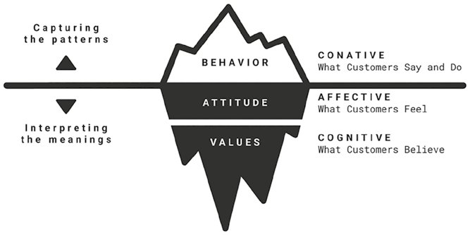
Hình 6.1: Giải phẫu học về Sự thấu hiểu Khách hàng.Hình 6.1: Giải phẫu học về Sự thấu hiểu Khách hàng (Anatomy of Customer Insight).
📖 Nội dung chi tiết trong Hình 6.1 (Mô hình Tảng băng Chìm về Giải phẫu học Sự thấu hiểu Khách hàng):
Tầng Tảng băng
Phương thức Tiếp cận (Bên trái)
Thành phần Cốt lõi (Giữa)
Cấp độ Tâm lý & Biểu hiện (Bên phải)
Phần nổi trên mặt nước(Bề mặt quan sát được)
Capturing the patterns (↑) — Nắm bắt các quy luật (Thế mạnh của AI & Dữ liệu lớn)
BEHAVIOR (Hành vi)
CONATIVE: What Customers Say and Do — Tầng Ý chí / Hành động:Những gì khách hàng nói và làm
Phần chìm dưới mặt nước – Lớp trên(Động lực ẩn giấu)
Interpreting the meanings (↓) — Diễn giải tầng ý nghĩa (Thế mạnh của Quan sát Thấu cảm)
ATTITUDE (Thái độ)
AFFECTIVE: What Customers Feel — Tầng Cảm xúc:Những gì khách hàng cảm nhận
Phần chìm dưới mặt nước – Đáy sâu(Cội rễ tâm thức)
Interpreting the meanings (↓) — Diễn giải tầng ý nghĩa (Thế mạnh của Quan sát Thấu cảm)
VALUES (Hệ giá trị)
COGNITIVE: What Customers Believe — Tầng Nhận thức / Niềm tin:Những gì khách hàng tin tưởng
Thấu hiểu Cấu trúc Tảng băng Chìm
Chúng tôi hình dung cấu trúc giải phẫu của sự thấu hiểu khách hàng giống như một tảng băng chìm (iceberg) (Hình 6.1):
- Phần nổi của tảng băng (Những gì khách hàng nói và làm / What customers say and do): Đại diện cho các hành vi có thể quan sát được và dễ dàng thu thập. Khi được hỏi, khách hàng thường biện giải cho lựa chọn của mình bằng những câu trả lời nghe có vẻ hợp lý hoặc dễ được xã hội chấp nhận, chẳng hạn như: “Tôi mua món này vì chất lượng tốt và đang có khuyến mãi.” Những câu trả lời đó, cùng với các hành động quan sát được xuyên suốt hành trình khách hàng từ lúc khám phá đến khi mua sắm, tạo thành lớp bề mặt của insight. Người làm tiếp thị thường bị thu hút bởi phần nổi này vì nó dễ đo lường và dễ đưa vào báo cáo.
- Phần chìm của tảng băng (Giá trị cốt lõi và Thái độ / Values and Attitudes): Nếu chỉ dựa vào những gì nhìn thấy trên bề mặt, chúng ta rất dễ hiểu sai nhu cầu thực sự của khách hàng. Nằm sâu bên dưới mặt nước mới là những động lực thực sự thúc đẩy hành vi — thứ thường không được nói ra thành lời hoặc thậm chí chính khách hàng cũng không tự nhận thức được. Chúng bao gồm hệ giá trị (values) — những niềm tin sâu sắc định hình cách con người nhìn nhận thế giới. Hệ giá trị chi phối thái độ (attitudes) — những cảm xúc và đánh giá mà khách hàng dành cho một ngành hàng hoặc thương hiệu cụ thể. Thái độ đóng vai trò là chiếc cầu nối giữa hệ giá trị và hành vi bên ngoài.
Tuy nhiên, hành vi không phải lúc nào cũng là sự phản chiếu trực tiếp của giá trị và thái độ. Áp lực xã hội và các chuẩn mực văn hóa có thể khiến khách hàng cư xử trái ngược với niềm tin cá nhân của họ. Khách hàng có thể hành động theo cách có vẻ hợp lý trước mắt người khác trong khi kìm nén cảm xúc thật của chính mình.
Lăng kính Thế hệ (Generational Lens)
Hãy cùng phân tích Thế hệ Z bằng mô hình giải phẫu học insight này. Các báo cáo nghiên cứu thị trường thường nhận định rằng Gen Z đề cao tính chân thực (authenticity). Trong các cuộc khảo sát — tức phần nổi của tảng băng — họ trả lời rằng mình khước từ các tiêu chuẩn rập khuôn về sắc đẹp và thành công do những người ảnh hưởng quảng bá, đồng thời khẳng định mình ưu tiên sự chấp nhận bản thân hơn là chạy theo hình ảnh lý tưởng hóa.
Thế nhưng bên dưới bề mặt, một sự thấu hiểu sâu sắc hơn lộ diện. Sinh ra từ giữa thập niên 1990 đến đầu thập niên 2010, Thế hệ Z lớn lên đắm chìm trong mạng xã hội — nơi những hình ảnh hoàn mỹ về ngoại hình và thành công liên tục được tô vẽ và củng cố. Dù lý trí họ khao khát sự chân thực, tâm lý sâu thẳm của họ vẫn bị đóng dấu ấn (imprinted) bởi những tiêu chuẩn cầu toàn hoàn hảo. Sự bất hòa nhận thức (cognitive dissonance) này tạo ra xung đột nội tâm gay gắt, thường dẫn đến các vấn đề về sức khỏe tinh thần. Những thương hiệu nào thấu hiểu và chạm đúng vào nỗi giằng xé nội tâm này sẽ tạo được sự cộng hưởng mạnh mẽ nhất với Thế hệ Z.
Bây giờ, hãy cùng nhìn sang Thế hệ Alpha. Sinh ra từ đầu thập niên 2010 đến giữa thập niên 2020, các em thường được gọi là “thế hệ iPad” vì được bao quanh bởi các thiết bị thông minh ngay từ khi còn nằm nôi. Những năm tháng đầu đời của các em gắn liền với đại dịch COVID-19 buộc phải học trực tuyến tại nhà; hệ quả là sự phụ thuộc vào công nghệ đã in dấu ấn sâu đậm vào tâm thức thế hệ này.
Thế hệ Alpha đã quá quen thuộc với các định dạng video ngắn, định hình sự chú ý của các em theo hướng học hỏi tốn ít công sức (low-effort learning). Trải nghiệm kỹ thuật số của các em ngập tràn các tính năng trò chơi hóa (gamification) cổ vũ cho sự thỏa mãn tức thì (instant gratification), giúp các em nhận được phần thưởng ngay lập tức sau mỗi thao tác chạm. Theo thời gian, những trải nghiệm này hình thành nên kỳ vọng vô thức về việc mọi thứ phải có kết quả ngay tức khắc và làm giảm khả năng chịu đựng sự thất vọng hay chờ đợi.
Đại dịch cũng để lại vết hằn tâm lý lâu dài: nhiều em trong thế hệ này hình thành nỗi lo âu về sức khỏe và bệnh tật của người thân trong gia đình. Về mặt xã hội, các em quen với tương tác ảo. Sự dịch chuyển này củng cố dự báo của chúng tôi trong cuốn Marketing 6.0 rằng các vũ trụ ảo trò chơi (gaming metaverse) như Roblox đã trở thành phiên bản mạng xã hội của riêng Thế hệ Alpha. Những giá trị và thái độ in dấu ấn từ sớm này sẽ định hình phần lớn hành vi của các em trong thập kỷ tới khi các em bắt đầu tự mình đưa ra quyết định mua sắm.
Thấu hiểu hệ giá trị và thái độ chung của từng thế hệ là điểm khởi đầu tốt để người làm tiếp thị mở khóa tâm trí khách hàng. Bước tiếp theo là đào sâu hơn vào những insight chuyên biệt gắn với từng ngành hàng và thương hiệu cụ thể thông qua các phương pháp thực hành thực tiễn.
Quan sát Thực địa để Khai thác Sự Thấu hiểu Khách hàng (Observation for Customer Insights)
Quan sát là phương pháp trụ cột trong Lập bản đồ Nhận thức, cho phép người làm tiếp thị phát hiện ra những tín hiệu hành vi tinh tế trong bối cảnh đời thực. Khác với nghiên cứu thị trường truyền thống hay phân tích dữ liệu bằng AI vốn chỉ nắm bắt được những gì khách hàng nói và làm, quan sát thực địa làm sáng tỏ những lý do ngầm ẩn đằng sau các hành động đó.
Nghiên cứu Thị trường Truyền thống
Cách tiếp cận nhằm khám phá sự thấu hiểu khách hàng đã thay đổi đáng kể trong thời gian gần đây. Trước khi AI trỗi dậy, người làm tiếp thị chủ yếu dựa vào nghiên cứu thị trường truyền thống để tìm hiểu sở thích và hành vi khách hàng, làm cơ sở cho mọi quyết định từ phân khúc khách hàng, phát triển sản phẩm cho đến đo lường sức khỏe thương hiệu và mức độ hài lòng.
Quy trình thường bắt đầu bằng phương pháp định lượng (quantitative method) nhằm cung cấp bằng chứng số liệu vững chắc cho việc ra quyết định, sử dụng bảng câu hỏi cấu trúc chặt chẽ trên một cỡ mẫu có giá trị thống kê.
Người làm tiếp thị thường kết hợp phương pháp định lượng (để biết Cái gì – What) với phương pháp định tính (qualitative method — để hiểu Tại sao – Why). Trong nghiên cứu định tính mang tính khám phá, các nhà nghiên cứu đặt câu hỏi thông qua phỏng vấn sâu cá nhân hoặc thảo luận nhóm tập trung (focus groups) nhằm lý giải các kết quả thu được từ khảo sát định lượng.
Một hình thức nghiên cứu định tính sâu sắc hơn chính là quan sát thấu cảm (empathic observation). Nó bao gồm nghiên cứu dân tộc học (ethnography) — nơi các nhà nghiên cứu quan sát khách hàng ngay trong môi trường sống tự nhiên của họ kết hợp trò chuyện gợi mở. Họ trực tiếp trải nghiệm cuộc sống của khách hàng để phát triển sự thấu hiểu đầy cảm thông. Khi nhà nghiên cứu ở lại đủ lâu và được chào đón vào không gian gia đình của khách hàng, khách hàng sẽ cởi mở hơn trong việc bộc lộ những giá trị và thái độ thực sự của mình.
Dân tộc học trực tuyến (Netnography) cũng nổi lên như một hình thức nghiên cứu dân tộc học trên môi trường mạng, bao gồm việc quan sát các cuộc thảo luận trên các diễn đàn và cộng đồng trực tuyến. Các nhà nghiên cứu netnography đôi khi cũng trực tiếp tham gia vào cuộc trò chuyện, hòa mình trở thành một thành viên của bộ lạc số trên diễn đàn, nhờ đó tiếp cận được những chủ đề tâm sự thầm kín thường bị che giấu trước người ngoài.
Phân tích Dữ liệu Ứng dụng AI (AI-Powered Analytics)
Tuy nhiên, bức tranh nghiên cứu đã thay đổi hoàn toàn cùng sự trỗi dậy của dữ liệu lớn (big data) và AI. Người làm tiếp thị bắt đầu bổ sung — hoặc thậm chí thay thế — nghiên cứu truyền thống bằng các công cụ phân tích ứng dụng AI. Hành vi khách hàng giờ đây có thể được theo dõi tự động qua hệ thống điểm bán hàng (POS), chương trình khách hàng thân thiết và dấu chân kỹ thuật số (digital footprints). Sở thích, thói quen dùng kênh, mức tiêu thụ nội dung và quy luật mua sắm được phân tích chỉ trong tích tắc. Các mô hình dự đoán có thể chỉ ra ngay lập tức nguyên nhân khách hàng rời bỏ, động lực trung thành hoặc cơ hội bán chéo. Sự tự động hóa này giúp người làm tiếp thị đưa ra quyết định nhanh hơn rất nhiều, từ thiết kế sản phẩm đến phân bổ ngân sách.
Tốc độ nghiên cứu theo thời gian thực này thể hiện rõ nét nhất ở các sản phẩm kỹ thuật số. Thử nghiệm A/B (A/B testing) trở nên phổ biến rộng rãi, cho phép người làm tiếp thị so sánh các phương án và quy chiếu kết quả về từng yếu tố cụ thể như câu chữ hay giao diện. Chẳng hạn, ứng dụng học ngoại ngữ Duolingo đã thực hiện hàng ngàn thử nghiệm A/B để kiểm tra các tính năng mới và thử nghiệm các mẫu thông báo nhắc nhở học tập khác nhau.
Dù đạt hiệu suất rất cao, việc chỉ dựa vào cách tiếp cận chiến thuật này tiềm ẩn nhiều rủi ro. Sự phụ thuộc thái quá vào các kết quả phân tích của AI có thể dẫn dắt thương hiệu đi lạc hướng. Các mô hình AI thường là những “hộp đen” với các đề xuất thay đổi liên tục mà thiếu đi khả năng giải thích rõ ràng (lack of explainability), dễ kéo thương hiệu đi theo những hướng thiếu nhất quán. Ngược lại, khi người làm tiếp thị thấu hiểu động lực sâu xa của con người, họ có thể thiết lập khung định hướng chiến lược vững chắc ngay từ đầu rồi mới thực hiện các tinh chỉnh chiến thuật bám sát insight cốt lõi đó.
Người làm tiếp thị cũng rất dễ đánh đồng các kích thích bề mặt với động lực sâu xa. Ví dụ, nhìn vào kết quả thử nghiệm A/B, người làm tiếp thị có thể nghĩ rằng một mẫu quảng cáo hiệu quả là nhờ sử dụng yếu tố hài hước. Nhưng câu hỏi cốt lõi vẫn còn bỏ ngỏ: Tại sao sự hài hước đó lại hiệu quả? Phải chăng khách hàng hưởng ứng bất kỳ sự hài hước nào như một cách giải tỏa căng thẳng thường nhật? Hay bởi vì bản thân câu chuyện phía sau thực sự chạm đúng vấn đề của họ bất kể giọng điệu ra sao? Ngay cả câu hỏi “Tại sao” cũng có nhiều tầng nông sâu khác nhau.
Quan sát Thấu cảm (Empathic Observation)
Chính vì vậy, bất chấp làn sóng dịch chuyển sang tự động hóa, hoạt động tìm kiếm sự thấu hiểu khách hàng luôn phải có sự hiện diện của quan sát thấu cảm (empathic observation). Chúng ta có thể trực tiếp quan sát khách hàng khi họ sử dụng và tương tác với các sản phẩm số như ứng dụng mua sắm trên điện thoại, để tận mắt thấy lý do vì sao họ ngập ngừng không nhấn nút thanh toán giỏ hàng hoặc vì sao họ loay hoay không tìm thấy danh mục sản phẩm trên thanh menu.
Người làm tiếp thị cũng có thể khám phá những động lực sâu hơn lý giải vì sao một số bài đăng mạng xã hội lại có tương tác tốt hơn hẳn các bài khác — không phải bằng cách nhìn vào các quy luật thống kê do AI xuất ra, mà bằng cách trực tiếp ngồi quan sát khách hàng khi họ lướt bảng tin mạng xã hội trong thời gian rảnh. Những tín hiệu phi ngôn ngữ (nonverbal cues) như biểu cảm khuôn mặt, ánh mắt và ngôn ngữ cơ thể có thể mang lại những phát hiện vô giá mà không một công cụ phân tích số liệu nào ghi nhận được.
Vì sao Quan sát Thực địa Tiết lộ Những Insight mà AI Không thể Nhìn thấy?
Quan sát trực tiếp tại hiện trường (first-hand observation) ngày càng trở nên quan trọng trong kỷ nguyên AI, chính bởi vì nó khai mở những sự thấu hiểu mà các quy luật dữ liệu đơn thuần không thể tiết lộ. Quan sát nắm bắt được những gì AI chưa từng nhìn thấy. AI phát hiện xu hướng bằng cách phân tích khối lượng lớn dữ liệu hành vi trong quá khứ như thảo luận mạng xã hội và lịch sử mua hàng. Nhưng khi những hành vi đó còn chưa kịp hình thành rõ nét — khi chưa ai bàn tán về chúng trên mạng và chưa có sản phẩm nào tồn tại để phục vụ chúng — thì AI hoàn toàn không có dữ liệu gì để phát hiện.
Ngược lại, những nhu cầu tiềm ẩn và chưa được gọi thành tên (latent and unspoken needs) thường tự bộc lộ qua hành vi đời thực. Những nhu cầu này chỉ có thể được khám phá bằng cách quan sát con người trong môi trường tự nhiên của họ — nơi những sự bất tiện nhỏ nhặt và các giải pháp tự chế/tình thế (workarounds) xuất hiện.
Hành vi con người vốn chứa đựng đầy những sự mâu thuẫn. Những gì con người nói ra không phải lúc nào cũng khớp với những gì họ thực sự làm. Chẳng hạn, rất nhiều bậc phụ huynh khẳng định trong các phiếu khảo sát rằng họ giới hạn nghiêm ngặt thời gian dùng màn hình của con cái — một câu trả lời chịu ảnh hưởng bởi mong muốn tránh bị xã hội phán xét. Thế nhưng, chỉ cần quan sát thực tế đơn giản lại cho thấy một câu chuyện hoàn toàn khác: ngoài đời thực, các bậc cha mẹ thường xuyên phải nhờ đến màn hình điện thoại, máy tính bảng để có chút thời gian nghỉ ngơi khi đã quá kiệt sức vì chăm con. Để xoa dịu cảm giác tội lỗi của bản thân, họ hướng con cái sang các ứng dụng giáo dục thay vì giải trí thuần túy, tái định khung (reframing) “thời gian nhìn màn hình” thành “thời gian học tập”.
Bản sắc mà hệ não xã hội muốn thể hiện ra bên ngoài không phải lúc nào cũng đồng nhất với những gì hệ não tưởng thưởng tính toán bên trong. Chính sự giằng xé này thường mở ra những ý tưởng đột phá để khác biệt hóa thương hiệu. Hãy xem xét trường hợp của Liquid Death — thương hiệu bán nước lọc tinh khiết đóng trong những vỏ lon nhôm hầm hố được thiết kế trông giống hệt lon bia hoặc nước tăng lực có ga. Nhà sáng lập Mike Cessario nảy ra ý tưởng này khi tham dự lễ hội âm nhạc Vans Warped Tour, nơi ông tình cờ quan sát thấy các nhạc sĩ nhạc rock trên sân khấu đang uống nước lọc nhưng lại đổ vào bên trong vỏ lon nước tăng lực Monster để giữ nước cho cơ thể. Đó là một sự mâu thuẫn đầy thú vị làm lộ diện một nhu cầu ẩn giấu: khao khát thể hiện hình ảnh cá tính nổi loạn trước đám đông mà không phải đánh đổi sức khỏe cá nhân bằng đồ uống nhiều đường hay cồn.
Hệ giá trị và thái độ luôn đi trước hành vi. Một khao khát bắt nguồn từ niềm tin hoặc bản sắc cá nhân có thể chưa biểu hiện thành hành vi mua sắm đơn giản vì trên thị trường chưa có sản phẩm nào đáp ứng nó. Tuy nhiên, những hành vi tinh tế báo hiệu nhu cầu đó có thể đã bắt đầu nhen nhóm thông qua các giải pháp tự chế (workarounds) mà khách hàng tự nghĩ ra để xoay xở. Khi người làm tiếp thị tinh mắt phát hiện sớm những tín hiệu này, họ sẽ nắm trong tay cơ hội đi trước đón đầu thị trường.
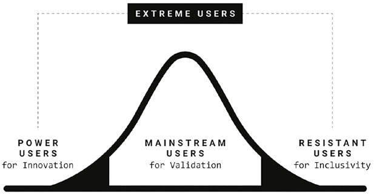
Hình 6.2: Đối tượng cần Quan sát trong Lập bản đồ Nhận thức.Hình 6.2: Đối tượng cần Quan sát trong Lập bản đồ Nhận thức (Who to Observe in Cognitive Mapping).
📖 Nội dung chi tiết trong Hình 6.2 (Phổ Đối tượng Quan sát theo Đường cong Phân phối Chuẩn):
Phân nhóm trên sơ đồ
Vị trí trên đường cong
Dịch nghĩa Tiếng Việt chuẩn
Mục đích nghiên cứu quan sát
EXTREME USERS: POWER USERS
Đuôi bên trái (Tích cực cực đoan)
Người dùng Cực đoan: Người dùng Siêu cấp
for Innovation — Phục vụ Đổi mới Sáng tạo (Khám phá cách dùng mới, tính năng đột phá)
MAINSTREAM USERS
Vùng trung tâm (Số đông đại chúng)
Người dùng Phổ thông
for Validation — Phục vụ Kiểm chứng (Xác lập đường chuẩn hành vi của thị trường cốt lõi)
EXTREME USERS: RESISTANT USERS
Đuôi bên phải (Kháng cự cực đoan)
Người dùng Cực đoan: Người dùng Kháng cự
for Inclusivity — Phục vụ Tính Bao trùm (Phát hiện rào cản chấp nhận và lỗi bất tiện)
Quan sát Ai? (Who to Observe)
Một trong những quyết định quan trọng nhất của quá trình lập bản đồ nhận thức là lựa chọn đúng đối tượng để quan sát. Thương hiệu phải xác định những người tham gia nghiên cứu dựa trên các đặc điểm cụ thể và trải nghiệm của họ đối với ngành hàng. Việc tuyển chọn đúng đối tượng đòi hỏi phải vượt ra ngoài các tiêu chí nhân khẩu học thông thường.
Một thương hiệu xe sang, chẳng hạn, có thể muốn quan sát mối quan hệ giữa chủ xe và chiếc xe của họ. Hãng sẽ chọn những người tham gia không chỉ sở hữu ô tô hạng sang mà còn bộc lộ sự gắn bó cảm xúc đặc biệt với chiếc xe: một số người coi xe như biểu tượng địa vị xã hội, trong khi những người khác lại xem không gian trong xe như một “ốc đảo bình yên” của riêng mình.
Một trong những nhóm đối tượng giá trị nhất cần quan sát chính là người dùng cực đoan (extreme users) — những cá nhân có hành vi nằm ở hai đầu mút của phổ chấp nhận sản phẩm (Hình 6.2). Họ khác biệt hoàn toàn với số đông đại chúng và thường bị các thuật toán AI gạt bỏ như những điểm dữ liệu dị biệt (anomalies/outliers). Thế nhưng, chính sự lệch chuẩn này lại biến họ thành một mỏ vàng chứa đựng những insight đắt giá:
- Ở đầu cực tích cực là nhóm Người dùng siêu cấp (Power users): Họ có thể là những người tiên phong đón nhận sản phẩm sớm (early adopters) hoặc người dùng cường độ cao (heavy users) tương tác với sản phẩm thường xuyên hơn hoặc theo những cách sáng tạo hơn hẳn khách hàng trung bình. Họ thường làm lộ rõ điều gì khiến sản phẩm trở nên cuốn hút và có thể gợi mở những cách thức sử dụng mới mẻ (emergent use cases) mà người dùng phổ thông chưa từng nghĩ tới. Đầu mút này thường truyền cảm hứng cho những đột phá đổi mới sản phẩm.
- Ở đầu cực bên kia là nhóm Người dùng kháng cự hoặc gặp rào cản (Resisters or Strugglers): Những người từ chối hoặc gặp nhiều khó khăn khi tương tác với sản phẩm. Việc quan sát họ giúp phơi bày các rào cản chấp nhận sản phẩm hoặc lỗi bất tiện trong quá trình sử dụng (usability issues) mà nếu bỏ qua có thể dẫn đến thất bại tiếp thị. Bằng cách lắng nghe cả đầu mút này, người làm tiếp thị có được cái nhìn bao trùm và toàn diện về thị trường.
Phương pháp Lập bản đồ Nhận thức kết hợp hài hòa giữa việc quan sát người dùng cực đoan và người dùng phổ thông (mainstream users). Trong khi người dùng cực đoan mang lại những phát hiện đột phá bằng cách kéo giãn ranh giới trải nghiệm sản phẩm, thì người dùng phổ thông cung cấp đường chuẩn cơ sở (baseline) cần thiết để hiểu các hành vi điển hình trong thị trường cốt lõi. Lập bản đồ Nhận thức cũng giúp kiểm chứng xem liệu những ý tưởng lấy cảm hứng từ nhóm người dùng cực đoan có khả thi để nhân rộng ra tệp khán giả đại chúng hay không.
Ai Nên Là Người Quan sát? (Who Should Be Observing)
Người thực hiện việc quan sát cũng quan trọng không kém người được quan sát. Bản chất của quan sát thấu cảm là xây dựng kết nối tin cậy để người tham gia cảm thấy thoải mái và an toàn về mặt tâm lý (psychologically safe). Chỉ trong trạng thái tự nhiên đó, các hành vi chân thực mới bộc lộ. Đó là lý do vì sao nghiên cứu phải diễn ra ngay trong môi trường sống thường nhật của khách hàng. Người quan sát phải hòa nhập một cách tự nhiên, theo dõi từng khoảnh khắc bằng sự tò mò chân thành chứ không phải ánh nhìn phán xét. Để thiết lập được sự gắn kết này cần có thời gian; đôi khi người quan sát cần cùng ăn ở, sinh hoạt vài ngày trong nhịp sống của khách hàng.
Sự thấu hiểu khách hàng còn đòi hỏi nhiều hơn việc chỉ đứng nhìn; nó đòi hỏi sự diễn giải (interpretation) — một quá trình vốn mang tính chủ quan. Mỗi nhà nghiên cứu mang theo một lăng kính riêng được nhào nặn bởi trải nghiệm sống và chuyên môn cá nhân. Điều mà người quan sát này coi là một phát hiện đột phá có thể bị người khác lướt qua như một chi tiết tầm thường. Ngay cả khi chứng kiến cùng một hiện tượng, các nhà nghiên cứu khác nhau có thể suy luận ra những tầng ý nghĩa khác nhau.
Đó là lý do vì sao Lập bản đồ Nhận thức đạt hiệu quả cao nhất khi được thực hiện bởi các đội ngũ đa ngành (multidisciplinary teams) được phân công quan sát nhiều nhóm khách hàng khác nhau. Sự đa dạng về chuyên môn không chỉ nuôi dưỡng cái nhìn toàn diện hơn về trải nghiệm khách hàng mà còn giúp giảm thiểu thiên kiến chủ quan của bất kỳ góc nhìn đơn lẻ nào. Quan trọng hơn cả, khi tất cả các bộ phận — từ nghiên cứu, thiết kế cho đến tiếp thị và kỹ thuật — cùng trực tiếp tham gia vào quá trình quan sát thực địa, những insight thu được sẽ được chuyển hóa thành hành động nhanh hơn gấp bội.
Ví dụ, các nhà tâm lý học có thể giải mã các tác nhân kích hoạt cảm xúc và xung đột văn hóa; người làm tiếp thị nhanh nhạy bắt được các góc độ kể chuyện thương hiệu; nhà thiết kế tập trung vào tính tiện dụng của giao diện; còn các kỹ sư đánh giá ngay tính khả thi về mặt kỹ thuật. Khi hợp lực lại, góc nhìn tích hợp này giúp thương hiệu tiến rất nhanh từ việc phát hiện insight sang làm mẫu thử (prototyping) và tung sản phẩm ra thị trường với sự tự tin cao độ rằng giải pháp sẽ tạo được tiếng vang trên nhiều phương diện.
Quan sát Những Hoạt động Nào? (What Activities to Observe)
Trọng tâm của hoạt động quan sát trước hết là những tương tác của khách hàng với ngành hàng (category interactions). Chúng tôi dùng từ ngành hàng (category) vì nó bao quát một phạm vi rộng, từ việc sử dụng một sản phẩm vật lý (như lái ô tô), tiêu dùng một dịch vụ (như đặt xe công nghệ), cho đến tận hưởng một trải nghiệm (như xem một giải đua xe). Đây là đối tượng quan sát chính nhằm khám phá mối quan hệ giữa khách hàng và ngành hàng.
Tuy nhiên, chúng ta cũng phải quan sát cả nhịp sinh hoạt đời thường bên ngoài ngành hàng (general life routines). Con người không sống cuộc đời của họ theo từng “ngành hàng” mà sống qua từng khoảnh khắc (moments): thức dậy, ăn sáng, lái xe đi làm, họp hành, trở về nhà... Chiếc ô tô chỉ là một phần nhỏ trong một ngày của khách hàng. Nếu chỉ quan sát lúc họ trực tiếp tương tác với ngành hàng, chúng ta có nguy cơ bỏ lỡ bức tranh bối cảnh rộng lớn hơn — chúng ta có thể nhìn thấy lựa chọn của họ, nhưng lại không hiểu được hoàn cảnh sống nào đã dẫn họ đến lựa chọn đó.
Vì hành vi của con người thường khác nhau giữa lúc ở một mình và lúc có mặt người khác, chúng ta cần quan sát họ trong cả hai bối cảnh xã hội này:
- Khi ở một mình (Alone): Họ thường hành động bốc đồng hơn và thành thật hơn với sở thích cá nhân.
- Khi ở cùng người khác (With others): Những toan tính xã hội bắt đầu xuất hiện — họ có thể cố gắng gây ấn tượng, làm theo số đông hoặc né tránh sự phán xét.
Tất nhiên, việc “ở một mình” dưới sự theo dõi của một nhà nghiên cứu chưa phải là ở một mình tuyệt đối; sự hiện diện của người lạ có thể làm thay đổi hành vi tự nhiên của khách hàng. Bởi vậy, quan sát đòi hỏi sự kiên nhẫn và niềm tin để người quan sát có thể “tàng hình” hòa vào bối cảnh xung quanh, giúp khách hàng quên đi sự có mặt của họ.
Hai chiều kích này tạo nên Ma trận Hoạt động Quan sát (Observational Matrix) của chúng tôi (Hình 6.3). Bằng cách kết hợp bản chất tương tác (Liên quan đến ngành hàng vs. Sinh hoạt đời thường) với bối cảnh xã hội (Khi ở một mình vs. Khi ở cùng người khác), chúng ta mang lại chiều sâu toàn diện cho hoạt động quan sát.
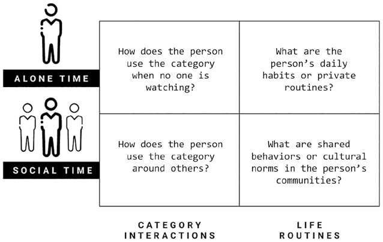
Hình 6.3: Các Hoạt động cần Quan sát trong Lập bản đồ Nhận thức.Hình 6.3: Các Hoạt động cần Quan sát trong Lập bản đồ Nhận thức (Activities to Observe in Cognitive Mapping).
📖 Nội dung chi tiết trong Hình 6.3 (Ma trận 2×2 các Hoạt động Cần Quan sát):
Bối cảnh Xã hội \ Loại hình Tương tác
CATEGORY INTERACTIONS — Tương tác với Ngành hàng(Cột trái)
LIFE ROUTINES — Nhịp Sinh hoạt Đời thường(Cột phải)
ALONE TIME — Khi Ở Một mình(Hàng trên)
How does the person use the category when no one is watching? — Cá nhân đó sử dụng sản phẩm/ngành hàng như thế nào khi không có ai nhìn thấy?
What are the person's daily habits or private routines? — Thói quen hàng ngày hoặc nhịp sinh hoạt riêng tư của cá nhân đó là gì?
SOCIAL TIME — Khi Ở Cùng Người khác(Hàng dưới)
How does the person use the category around others? — Cá nhân đó sử dụng sản phẩm/ngành hàng như thế nào khi có mặt những người xung quanh?
What are shared behaviors or cultural norms in the person's communities? — Những hành vi chung hoặc chuẩn mực văn hóa trong cộng đồng của người đó là gì?
Tìm kiếm Những Dấu chỉ Hành vi Nào và Giải mã Chúng Ra sao?
Người quan sát phải biết chính xác mình cần tìm kiếm những tín hiệu gì khi tiến hành lập bản đồ nhận thức. Mỗi hệ thống não bộ trong Bản đồ Nhận thức đều gắn liền với những dấu chỉ hành vi (behavioral markers) cụ thể. Dấu chỉ hành vi là một tín hiệu có thể quan sát được bằng mắt thường — chẳng hạn như ngôn ngữ cơ thể, biểu cảm khuôn mặt, tông giọng hoặc hành động cụ thể — báo hiệu một quá trình tâm lý đang diễn ra bên trong tâm trí của người đó.
Trong các thí nghiệm kiểm soát trong phòng lab, những hành vi này có thể được đối chiếu với hoạt động não bộ cụ thể thông qua công nghệ theo dõi chuyển động mắt (eye tracking) hoặc chụp ảnh thần kinh chức năng (neuroimaging). Tuy nhiên, những thiết bị đắt đỏ và cồng kềnh đó hiếm khi khả thi trong bối cảnh kinh doanh thực tế, đặc biệt là khi thực hiện quan sát thấu cảm tại hiện trường.
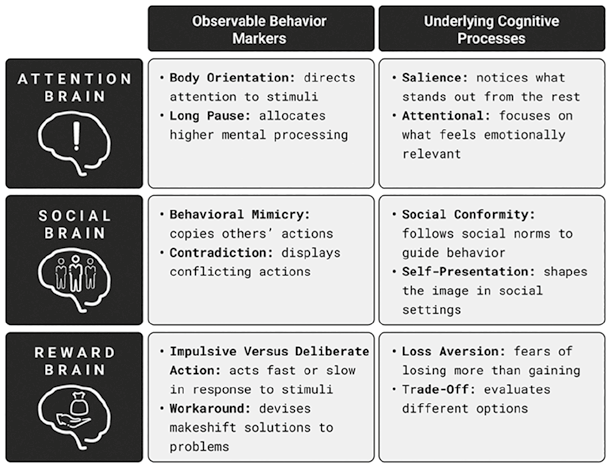
Hình 6.4: Bảng Tra cứu Nhanh Lập bản đồ Nhận thức.Hình 6.4: Bảng Tra cứu Nhanh Lập bản đồ Nhận thức (Cognitive Mapping Cheat Sheet).
📖 Nội dung chi tiết trong Hình 6.4 (Bảng Tra cứu Nhanh Lập bản đồ Nhận thức – Cognitive Mapping Cheat Sheet):
Hệ thống Não bộ
Observable Behavior Markers — Các Dấu chỉ Hành vi Quan sát được(Cột trái)
Underlying Cognitive Processes — Các Quá trình Nhận thức Ngầm ẩn bên dưới(Cột phải)
ATTENTION BRAIN (Hệ não Chú ý)
• Body Orientation:directs attention to stimuli (Hướng xoay cơ thể: hướng sự chú ý về phía kích thích) • Long Pause:allocates higher mental processing (Khoảng dừng lâu: phân bổ năng lực xử lý tinh thần cao hơn)
• Salience:notices what stands out from the rest (Tính nổi bật: nhận biết những gì nổi bật hẳn lên so với phần còn lại) • Attentional:focuses on what feels emotionally relevant (Sự cộng hưởng chú ý: tập trung vào những gì mang lại cảm giác liên quan về mặt cảm xúc)
SOCIAL BRAIN (Hệ não Xã hội)
• Behavioral Mimicry:copies others' actions (Bắt chước hành vi: sao chép hành động của người khác) • Contradiction:displays conflicting actions (Sự mâu thuẫn: thể hiện những hành động xung đột giữa lời nói/bề ngoài và thực tế)
• Social Conformity:follows social norms to guide behavior (Sự tuân phục xã hội: tuân theo chuẩn mực xã hội để định hướng hành vi) • Self-Presentation:shapes the image in social settings (Thể hiện bản thân: định hình hình ảnh cá nhân trong bối cảnh xã hội)
REWARD BRAIN (Hệ não Tưởng thưởng)
• Impulsive Versus Deliberate Action:acts fast or slow in response to stimuli (Hành động Bốc đồng so với Cân nhắc kỹ: phản ứng nhanh hoặc chậm trước kích thích) • Workaround:devises makeshift solutions to problems (Giải pháp tự chế / tình thế: tự nghĩ ra các cách xoay xở tạm thời để giải quyết vấn đề)
• Loss Aversion:fears of losing more than gaining (Ác cảm mất mát: sợ mất mát nhiều hơn là khao khát nhận thêm) • Trade-Off:evaluates different options (Sự đánh đổi: cân nhắc, đong đếm giữa các phương án khác nhau)
Để giải quyết bài toán này, chúng tôi giới thiệu Bảng Tra cứu Nhanh Lập bản đồ Nhận thức (Cognitive Mapping Cheat Sheet) giúp ánh xạ trực tiếp các dấu chỉ hành vi có thể quan sát được với các quá trình nhận thức ngầm ẩn bên dưới trên cả ba hệ thống não bộ. Người làm tiếp thị có thể dùng bảng hướng dẫn thực chiến này để nhận diện nhanh các hành vi có ý nghĩa ngoài thực địa và giải mã chúng thành những insight khách hàng đắt giá (Hình 6.4).
1. Giải mã Hệ não Chú ý (Attention Brain)
Hệ não chú ý là hệ thống chịu trách nhiệm sàng lọc và tiêu điểm hóa những thông tin được ưu tiên trong một bối cảnh nhất định — cánh cổng đầu tiên đi vào tâm trí con người. Các dấu chỉ hành vi phổ biến bao gồm hướng xoay của cơ thể (body orientation): khi một người quay đầu lại, nghiêng người về phía trước hoặc bước lại gần một kích thích, đó là tín hiệu của sự chú ý tập trung cao độ. Một dấu chỉ quan trọng khác là khoảng dừng lâu (long pause) — thường phản ánh tải trọng nhận thức cao hơn, cho thấy sự chú ý đang được kích hoạt mạnh mẽ.
Sự chú ý dâng cao này báo hiệu một quá trình tâm lý tích cực đang diễn ra, tiêu biểu là tính nổi bật (salience): xu hướng con người tập trung vào những gì khác biệt hoặc tương phản mạnh với môi trường xung quanh. Người làm tiếp thị có thể khai thác tính nổi bật để thu hút sự chú ý của khán giả bằng cách tạo ra những chiến dịch phá vỡ quy chuẩn lối mòn của ngành hàng.
Tập đoàn dịch vụ tài chính Nationwide tại Vương quốc Anh đã chứng minh sức mạnh của tính nổi bật thông qua yếu tố hài hước trong chiến dịch “In Your Best Interest” (Vì lợi ích tốt nhất của bạn). Giữa một ngành ngân hàng – tài chính vốn luôn khô khan và nghiêm túc, Nationwide trở nên nổi bật hẳn lên nhờ những thước phim quảng cáo dí dỏm, châm biếm hình ảnh một ông chủ ngân hàng kiêu ngạo để định vị mình là đối cực hoàn toàn của các ngân hàng truyền thống. Cách tiếp cận này đã tạo ra ấn tượng vô cùng sâu đậm với tỷ lệ người xem ghi nhớ quảng cáo cao vượt trội.
Một quá trình nhận thức quan trọng khác của hệ não chú ý là sự cộng hưởng khoảnh khắc cá nhân (attentional resonance) — khi sự tập trung bị hút vào những kích thích mang lại cảm giác đồng điệu sâu sắc với trải nghiệm cá nhân ngay tại thời điểm đó. Khách hàng sống cuộc đời của họ qua chuỗi các khoảnh khắc nối tiếp nhau. Dù hầu hết các ngày đều trôi qua theo thói quen lặp lại, một số khoảnh khắc vi mô (micro moments) nhất định lại nổi bật lên và định hình trạng thái cảm xúc của họ. Những lát cắt giàu ý nghĩa này thường lưu lại rất lâu trong ký ức; một câu chuyện thương hiệu gợi nhắc đúng những khoảnh khắc ấy sẽ dễ dàng chiếm trọn sự chú ý.
Thương hiệu chăm sóc trẻ em Babyganics đã minh họa xuất sắc quá trình này bằng cách tôn vinh sự hỗn loạn và không hoàn hảo của hành trình làm cha mẹ ngoài đời thực. Khi những khoảnh khắc đời thường bừa bộn ấy trở thành tâm điểm của chiến dịch, chúng lập tức thu hút sự chú ý của các bậc phụ huynh bởi cảm giác quá đỗi thân thuộc. Bằng cách gắn câu chuyện thương hiệu với thực tế “làm cha mẹ hoàn hảo một cách không hoàn hảo” (perfectly imperfect parenting), Babyganics đã tạo dựng được nền tảng nội dung chạm đúng những cung bậc cảm xúc thăng trầm mà khán giả của họ trải qua mỗi ngày.
Việc nhận diện cả tính nổi bật lẫn sự cộng hưởng khoảnh khắc giúp người làm tiếp thị đồng bộ hóa thông điệp với những gì thực sự giữ chân tâm trí khách hàng, từ đó sáng tạo nội dung video ngắn hiệu quả hơn hoặc thiết kế các bài giới thiệu chớp nhoáng (elevator pitches) đầy sức hút.
Tuy nhiên, những khoảnh khắc chú ý này mới chỉ là điểm khởi đầu trong Lập bản đồ Nhận thức. Để đào sâu hơn, người làm tiếp thị phải tiếp tục khám phá cách con người cư xử trong bối cảnh xã hội.
2. Giải mã Hệ não Xã hội (Social Brain)
Hệ não xã hội chi phối cách con người giải mã các tín hiệu xã hội và điều tiết phản ứng cảm xúc. Dấu chỉ hành vi phổ biến nhất là sự bắt chước hành vi (behavioral mimicry) — khi con người vô thức sao chép hành động của người khác như một cách để hòa nhập vào tập thể. Những tín hiệu này thường phản ánh quá trình tâm lý sâu hơn là sự tuân phục xã hội (social conformity): xu hướng làm theo các chuẩn mực của đám đông.
Một ví dụ nóng hổi gần đây là cơn sốt toàn cầu của thương hiệu đồ chơi nghệ thuật Pop Mart với dòng búp bê quái vật thỏ Labubu. Người hâm mộ xếp hàng dài nhiều giờ liền bên ngoài các cửa hàng Pop Mart, chia sẻ video đập hộp হộp mù (blind box unboxings) lên mạng và móc thú bông Labubu lên những chiếc túi xách hàng hiệu đắt tiền. Hành vi này bùng nổ dữ dội sau khi những ngôi sao hàng đầu như Lisa (nhóm Blackpink), Rihanna và Dua Lipa xuất hiện cùng Labubu. Khi mọi người nhìn thấy những người khác săn lùng món đồ chơi này, nhu cầu lập tức tăng vọt bởi giá trị khẳng định vị thế xã hội (social affirmation) mà Labubu đại diện.
Một dấu chỉ quan sát đắt giá khác của hệ não xã hội là sự mâu thuẫn giữa hành vi thể hiện ra bên ngoài trong bối cảnh xã hội và sự thật ngầm ẩn bên trong. Hiện tượng này thường bắt nguồn từ nhu cầu thể hiện bản thân (self-presentation): xu hướng hành động theo cách củng cố hình ảnh xã hội mà cá nhân đó muốn người khác nhìn vào.
Một ví dụ tuyệt vời là chiến dịch “Act Like You Know” (Hãy diễn như thể bạn đã rành rẽ mọi thứ) của nhà cung cấp tên miền và giải pháp web GoDaddy với sự góp mặt của nam diễn viên Walton Goggins. Chiến dịch được xây dựng dựa trên một insight vô cùng sắc sảo về các chủ doanh nghiệp nhỏ: áp lực phải luôn tỏ ra thôngạo, bản lĩnh trước mặt khách hàng và nhân viên ngay cả khi trong lòng họ đang đầy hoang mang, bấp bênh. Quan sát thấu cảm cho thấy hầu hết các nhà khởi nghiệp đều phải vừa làm vừa mò mẫm từng bước.
Chiến dịch đã nhân cách hóa sự căng thẳng tâm lý này một cách tài tình qua hình ảnh Walton Goggins — một diễn viên nổi tiếng với khả năng nhập vai cực kỳ thuyết phục vào những nhân vật mà ngoài đời ông chẳng hề có chuyên môn. Chiến dịch theo chân hành trình khởi nghiệp của ông khi ra mắt thương hiệu kính bảo hộ Walton Goggins Goggle Glasses, với bộ công cụ AI GoDaddy Airo dẫn dắt ông qua từng bước xây dựng website và tiếp thị. Kết quả là một thước phim truyền tải sống động thông điệp: công nghệ giúp các chủ doanh nghiệp tự tin “diễn như thể mình đã biết rõ” cho đến khi họ thực sự làm chủ được cuộc chơi.
3. Giải mã Hệ não Tưởng thưởng (Reward Brain)
Quan sát thực địa cũng vô cùng hữu ích để thấu hiểu cách hệ não tưởng thưởng đánh giá giá trị và thúc đẩy hành động nhằm đạt được kết quả mong muốn. Dấu chỉ hành vi dễ quan sát nhất là tốc độ phản ứng hành vi trước kích thích:
- Hành vi phản ứng nhanh và bốc đồng (Fast and impulsive): Chẳng hạn như việc chốt đơn liền tay khi đang xem phiên phát trực tiếp (livestream) trên TikTok Shop. Những hành động này thường phản ánh ác cảm mất mát (loss aversion) — thiên kiến tâm lý thôi thúc con người hành động gấp gáp để tránh bỏ lỡ một món hời giảm giá. Thành công của TikTok Shop nằm ở cách nền tảng này huấn luyện khách hàng mua sắm bốc đồng bằng cách nhúng họ vào không gian giải trí video ngắn, tạo ra môi trường tải trọng nhận thức thấp nơi quyết định được đưa ra nhanh chóng bằng cảm xúc thay vì phân tích lý tính chậm rãi. Các chương trình giảm giá chớp nhoáng (flash deals) đánh mạnh vào ác cảm mất mát, khiến mỗi lần bấm mua hàng mang lại cảm giác như vừa giành được một chiến thắng. Hành vi bốc đồng này thường xuất hiện ở các ngành hàng mức độ quan tâm thấp (low-involvement categories) như hàng tiêu dùng nhanh (FMCG) — nơi khách hàng không đầu tư nhiều tâm sức suy nghĩ vì giá trị món hàng nhỏ hoặc rủi ro chọn sai không đáng kể.
- Hành vi cân nhắc kỹ lưỡng (Slow and deliberate): Xuất hiện ở các ngành hàng mức độ quan tâm cao (high-involvement categories) như mua ô tô hoặc chọn trường đại học, nơi đi kèm mức giá đắt đỏ hoặc rủi ro cao. Những hành vi như liên tục chuyển qua lại giữa hàng chục tab trình duyệt để so sánh thông số hoặc lưu sản phẩm vào danh sách chờ xem xét sau là những dấu chỉ điển hình của nhóm ngành hàng này. Một ví dụ rõ nét là cách Thế hệ Z đang suy nghĩ lại về giá trị của tấm bằng đại học: nhiều người đặt câu hỏi liệu tấm bằng cử nhân có xứng đáng với khoản nợ học phí khổng lồ hay không và bắt đầu khám phá các lựa chọn thay thế như trường dạy nghề chuyên nghiệp (trade schools) — một phần dưới ảnh hưởng từ những câu chuyện thành công của người lao động tay nghề cao được chia sẻ rộng rãi trên mạng xã hội.
Một dấu chỉ cốt lõi khác của hệ não tưởng thưởng chính là sự xuất hiện của các giải pháp tự chế / cách khắc phục tình thế (workarounds): những giải pháp ứng biến do chính khách hàng tự nghĩ ra để vượt qua những hạn chế của sản phẩm hoặc dịch vụ hiện tại. Khác với hành động bốc đồng vì phần thưởng tức thì, các giải pháp tự chế phản ánh quá trình tư duy chậm rãi và có chủ đích.
Grab, siêu ứng dụng gọi xe và giao hàng hàng đầu Đông Nam Á, đã từng quan sát thấy một giải pháp tự chế rất phổ biến bắt nguồn từ thiên kiến hiện tại (present bias): vào giờ cao điểm, nhiều hành khách thay vì đặt xe trên ứng dụng rồi đứng chờ tài xế ở xa chạy tới đã chủ động bước thẳng ra vẫy các tài xế mặc đồng phục GrabBike đang đậu sẵn ngay gần đó để được đi ngay lập tức.
Từ quan sát thực địa này, Grab đã biến giải pháp tự chế của khách hàng thành một tính năng chính thức mang tên GrabNow: cho phép hành khách vẫy trực tiếp bất kỳ tài xế GrabBike nào đang ở gần ngoài đời thực rồi ghép nối chuyến xe ngay trên ứng dụng chỉ bằng một thao tác chạm hoặc nhập mã. Tính năng này đã hóa giải hoàn toàn điểm nghẽn chờ đợi bằng cách chính thức hóa một hành vi có thật ngoài đời sống.
Các giải pháp tự chế thường gắn liền với sự đánh đổi (trade-off): quá trình tâm lý so sánh các lựa chọn khi phương án lý tưởng nhất không có sẵn. Chúng tiết lộ không chỉ những nhu cầu chưa được đáp ứng mà còn cho thấy cường độ động lực cực lớn của khách hàng. Khi một nhu cầu bức thiết đến mức khách hàng phải tự mình nghĩ ra cách lách hoặc tự chế giải pháp, đó chính là tín hiệu chỉ điểm một khoảng trống giá trị (value gap) khổng lồ và một cơ hội vàng để doanh nghiệp kiến tạo tuyên bố giá trị đột phá.
Lập bản đồ Nhận thức cho phép người làm tiếp thị vượt qua những lời nói bề mặt để quan sát những gì thực sự thúc đẩy khách hàng. Bằng cách nhận diện các dấu chỉ hành vi gắn liền với ba hệ thống Chú ý, Xã hội và Tưởng thưởng, người làm tiếp thị có thể giải mã các tiến trình tâm lý ẩn sau mọi quyết định, mở ra ô cửa sổ nhìn thấu vào tâm trí con người để thiết kế các kích thích tiếp thị sắc bén hơn.
Tóm tắt Chương 6
Lập bản đồ Nhận thức (Cognitive Mapping) là phương pháp tiếp cận đầy sức mạnh nhằm khai thác sự thấu hiểu khách hàng sâu sắc bằng cách quan sát hành vi con người dưới lăng kính nhận thức. Chúng tôi hình dung insight như một tảng băng chìm, nơi các hành vi bề nổi rất dễ thu thập nhưng những động lực cốt lõi — hệ giá trị (values) và thái độ (attitudes) — lại nằm khuất sâu bên dưới mặt nước. Những động lực tầng sâu này thường được định hình qua dấu ấn tâm lý đầu đời (imprinting) từ thuở ấu thơ, có sức ảnh hưởng bền bỉ đến hành vi dài hạn.
Lập bản đồ Nhận thức khai thác ba hệ thống não bộ cốt lõi: hệ não chú ý (quyết định điều gì thu hút sự tập trung), hệ não xã hội (điều tiết động lực hội nhóm và bản sắc) và hệ não tưởng thưởng (thúc đẩy hành vi tìm kiếm giá trị). Mỗi hệ thống đều có các dấu chỉ hành vi (behavioral markers) có thể quan sát được cùng các quá trình tâm lý tương ứng, cung cấp cho người làm tiếp thị một khung công cụ thực chiến để giải mã hành vi.
Mặc dù AI mang lại khả năng phân tích nhanh chóng ở quy mô lớn, nó vẫn bỏ sót những hành vi mới nhen nhóm và những mâu thuẫn ngầm ẩn của con người. Đó là lý do vì sao quan sát thấu cảm (empathic observation) — đặc biệt là trên nhóm người dùng cực đoan (extreme users) và qua việc phát hiện các giải pháp tự chế (workarounds) — vẫn giữ vai trò sống còn. Lập bản đồ Nhận thức nhắc nhở chúng ta rằng trong một thế giới vận hành bằng AI, sự thấu hiểu con người vẫn luôn bắt đầu từ việc thiết lập kết nối trực tiếp giữa người với người trong quá trình quan sát để nhìn thấy những điều mà máy móc không bao giờ thấy được.
Câu hỏi Suy ngẫm
Bạn có dành thời gian trực tiếp quan sát cách khách hàng sử dụng sản phẩm của mình ngoài đời thực hay không?
Bạn đã xác định và học hỏi từ nhóm người dùng cực đoan (người dùng siêu cấp và người dùng kháng cự) ở cả hai đầu mút của phổ sử dụng chưa?
Bạn có nắm bắt được những sự mâu thuẫn giữa lời nói – hành động hoặc các giải pháp tự chế (workarounds) mà khách hàng đang tự thực hiện trong cuộc sống hàng ngày của họ không?
Vào năm 2023, một đoạn video dài vỏn vẹn 14 giây trên TikTok đã tạo nên cơn sốt toàn cầu. Trong video, một người phụ nữ quay lại cảnh chiếc xe hơi của mình bị cháy rụi hoàn toàn, nhưng bên trong hốc để cốc, chiếc bình giữ nhiệt Stanley vẫn còn nguyên vẹn và bên trong thậm chí vẫn còn đá lạnh chưa tan. Chủ tịch đương nhiệm của Stanley ngay lập tức đăng video phản hồi trên TikTok, bày tỏ niềm vui khi biết cô vẫn bình an vô sự và ngỏ ý tặng cô cả một chiếc bình giữ nhiệt mới lẫn một chiếc xe hơi mới, đồng thời khẳng định lại cam kết chất lượng của hãng rằng sản phẩm Stanley được chế tạo để bền bỉ suốt đời (built for life). Bất chấp một vài ý kiến hoài nghi liệu đoạn video có được dàn dựng hay không, phản ứng của công chúng dành cho Stanley nhìn chung là vô cùng tích cực. Hàng triệu người ca ngợi cách hành xử hào phóng của công ty và cho biết họ đang cân nhắc mua ngay một chiếc bình Stanley.
Thực tế, thương hiệu này vốn đã sở hữu một cộng đồng người hâm mộ hùng hậu trên TikTok. Rất nhiều người — bao gồm cả những người nổi tiếng — từng đăng video đánh giá và đập hộp bình giữ nhiệt Stanley, thu hút hàng triệu lượt xem. Người tiêu dùng xếp hàng dài chờ mua sản phẩm vì hội chứng sợ bỏ lỡ (FOMO). Tuy nhiên, lối kể chuyện dựa trên các trào lưu nhất thời như vậy, đặc biệt trên các nền tảng video ngắn như TikTok, thường có vòng đời hạn chế và sớm muộn cũng hạ nhiệt. Ngược lại, một câu chuyện có thật về độ bền phi thường — như chiếc bình giữ nhiệt sống sót qua đám cháy dữ dội — lại chạm tới tầng cảm xúc sâu sắc và bền vững hơn nhiều.
Như sử gia Yuval Noah Harari đã lập luận trong cuốn Sapiens: Lược sử loài người, điều làm nên sự độc nhất vô nhị của loài người chính là khả năng sử dụng ngôn ngữ để kể và sẻ chia những câu chuyện. Những câu chuyện giúp con người kết nối với nhau và huy động sức mạnh tập thể hướng tới mục tiêu chung. Trong kinh doanh, những câu chuyện giúp thương hiệu xây dựng lòng tin và định hình hành vi.
Nghệ thuật kể chuyện (storytelling) tạo ra sự cộng hưởng sâu sắc với con người bởi chính cuộc đời cũng mở ra như một câu chuyện. Con người suy nghĩ và ghi nhớ thông qua các mạch truyện (narratives). Một câu chuyện luôn dễ theo dõi hơn và có khả năng khắc sâu vào trí nhớ cao hơn gấp nhiều lần so với những dữ kiện rời rạc.
Chính vì câu chuyện mang sức mạnh to lớn như vậy, kể chuyện thương hiệu (brand storytelling) phải vượt lên trên việc truyền tải thông điệp quảng cáo đơn thuần. Nó phải phản chiếu sự thấu hiểu sâu sắc thế giới cảm xúc của khách hàng, đồng điệu với ý thức về bản sắc của họ và lan tỏa tự nhiên bên trong các cộng đồng xã hội của họ.
Tuy nhiên, để phát huy hiệu quả, câu chuyện thương hiệu cần có cấu trúc bài bản. Chương này giới thiệu ba lộ trình kể chuyện riêng biệt, mỗi lộ trình phù hợp với một kiểu hành trình nhận thức khác nhau của khách hàng: Lộ trình Chú ý – Quyết định (Attention–Decision Path), Lộ trình Xung đột – Hóa giải (Conflict–Resolution Path) và Lộ trình Nỗi đau – Lợi ích (Pain–Gain Path). Các lộ trình này được thiết kế để kích hoạt từng hệ thống não bộ cụ thể — từ chú ý, cảm xúc xã hội cho đến tưởng thưởng — giúp người làm tiếp thị dệt nên những câu chuyện thực sự hiệu quả, dù mục tiêu là thúc đẩy hành động tức thì, xây dựng gắn kết tình cảm hay dẫn dắt một quyết định mua sắm có cân nhắc kỹ lưỡng.
1. Lộ trình Chú ý – Quyết định (Attention–Decision Path)
Lộ trình này phát huy hiệu quả cao nhất đối với các hành trình nhận thức ngắn nơi khách hàng chỉ có khoảng chú ý hạn hẹp. Khách hàng thường bắt gặp thương hiệu trong những khoảnh khắc vi mô (micro moments): khi đang lướt mạng xã hội, xem đoạn quảng cáo 30 giây, liếc nhìn biển quảng cáo ngoài trời hoặc bước dọc theo dãy kệ siêu thị. Trong những khoảnh khắc ngắn ngủi đó, bộ não dựa vào các lối tắt tư duy (heuristics) để đưa ra quyết định nhanh chóng.
Khác với lối kể chuyện dài hơi, công thức này tránh gây quá tải nhận thức. Mục tiêu chính yếu của nó là thu hút hệ não chú ý và kích hoạt hành động ngay lập tức. Tính nổi bật (salience) giữ vai trò then chốt, bởi bộ não xử lý các kích thích có độ tương phản cao nhanh hơn hẳn, giúp những nội dung khác biệt có tỷ lệ chuyển đổi vượt trội.
Công thức Chú ý – Quyết định (Attention–Decision Formula)
Về bản chất, công thức này là một quy trình gồm ba bước: Thu hút sự chú ý (Grab attention) → Kể một câu chuyện ngắn (Tell a story) → Thúc đẩy hành động (Drive an action) (Hình 7.1). Vì dựa vào tốc độ ra quyết định chớp nhoáng của khán giả, công thức này phải kích hoạt nối tiếp nhau cả ba hệ thống não bộ Chú ý – Xã hội – Tưởng thưởng chỉ trong vài giây.
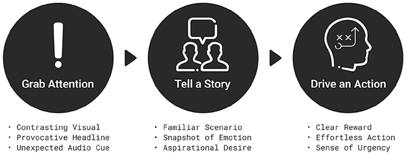
Hình 7.1: Công thức Chú ý – Quyết định.Hình 7.1: Công thức Chú ý – Quyết định (Attention–Decision Formula).
📖 Nội dung chi tiết trong Hình 7.1 (Công thức Chú ý – Quyết định — Attention–Decision Formula):
Bước 1: Thu hút Sự chú ý (Grab Attention)
Bước 2: Kể một Câu chuyện (Tell a Story)
Bước 3: Thúc đẩy Hành động (Drive an Action)
• Hình ảnh tương phản mạnh (Contrasting Visual) • Tiêu đề khiêu khích trí tò mò (Provocative Headline) • Tín hiệu âm thanh bất ngờ (Unexpected Audio Cue)
• Tình huống quen thuộc (Familiar Scenario) • Lát cắt cảm xúc (Snapshot of Emotion) • Khao khát hướng tới (Aspirational Desire)
• Phần thưởng rõ ràng (Clear Reward) • Hành động không tốn sức (Effortless Action) • Cảm giác cấp bách (Sense of Urgency)
Bước 1 — Thu hút sự chú ý (Grab attention): Ngắt luồng tập trung hiện tại của khán giả bằng cách kích hoạt hệ não chú ý vốn ưu tiên tính nổi bật. Trong những môi trường nhịp độ nhanh như mạng xã hội hay quầy kệ bán lẻ, bước này phải diễn ra ngay trong tích tắc thông qua hình ảnh tương phản mạnh (contrasting visuals), tiêu đề khiêu khích trí tò mò (provocative headlines) hoặc tín hiệu âm thanh bất ngờ (unexpected audio cues). Vì khoảng 90% thông tin não bộ xử lý là thị giác và gần 40% sợi dây thần kinh kết nối với võng mạc, yếu tố hình ảnh mang sức mạnh đặc biệt lớn — thực tế, bộ não xử lý hình ảnh nhanh gấp 60.000 lần so với văn bản, biến sự tương phản thị giác thành tác nhân kích hoạt sự chú ý mạnh nhất. Tuy nhiên, trong một số trường hợp, một tiêu đề sắc bén lại cần thiết để khơi gợi sự tò mò, còn tín hiệu âm thanh giúp củng cố hình ảnh và giữ nhịp tập trung.
Bước 2 — Kể câu chuyện (Tell a story): Một khi đã giữ được sự chú ý, thương hiệu phải kể một câu chuyện cực ngắn để xác lập ngay mức độ liên quan (relevance). Điều này thường đạt được qua ba cách: (1) Đưa ra một tình huống quen thuộc (familiar scenario) khiến khán giả bật lên suy nghĩ “Đúng là mình rồi!”; (2) Khắc họa một lát cắt cảm xúc (snapshot of emotion) như niềm vui hay sự bực bội khiến họ đồng cảm “Đúng là cảm giác của mình lúc này!”; hoặc (3) Chạm vào một khao khát hướng tới (aspirational desire) bằng cách cho thấy thứ họ đang thèm muốn ngay lúc đó, kích hoạt ý nghĩ “Đó chính là thứ mình muốn!”.
Bước 3 — Thúc đẩy hành động (Drive an action): Ở bước cuối cùng, thông điệp phải kích hoạt hệ não tưởng thưởng để chuyển hóa sự chú ý và tính liên quan thành hành vi thực tế. Một lời kêu gọi hành động (CTA) đầy sức nặng bao gồm ba yếu tố thiết yếu: Thứ nhất, mang lại phần thưởng rõ ràng (clear reward) để khán giả hiểu ngay họ sẽ nhận được gì; Thứ hai, hành động phải không tốn sức (effortless Action) với tối thiểu thao tác như một cú nhấp chuột hoặc quét mã QR, bởi bất kỳ rào cản ma sát nào cũng sẽ khiến khán giả bỏ cuộc giữa chừng; và Thứ ba, tạo ra cảm giác cấp bách (sense of urgency) thông qua ưu đãi giới hạn thời gian.
Ba bước này hợp lại tạo thành công thức tốc hành tác động vào tâm trí con người, nén trọn vẹn hành trình khách hàng vào một khoảnh khắc tập trung duy nhất.
Các Biến thể của Công thức
Nhiều mô hình kể chuyện thương hiệu nổi tiếng cũng đi theo cấu trúc Chú ý – Quyết định này dưới dạng các từ viết tắt dễ nhớ (mnemonics):
AIDA (Attention – Interest – Desire – Action / Chú ý – Quan tâm – Khao khát – Hành động): Do E. St. Elmo Lewis khởi xướng làm khung sườn cho các bài thuyết trình bán hàng, mô hình AIDA phác họa hành trình tâm lý của khách hàng khi cân nhắc mua sắm: bắt đầu bằng việc thu hút sự chú ý, gieo mầm sự quan tâm, nuôi dưỡng nó thành niềm khao khát và cuối cùng dẫn tới hành động mua hàng. Công thức này cực kỳ phổ biến trong ngành quảng cáo cho các định dạng ngắn như TVC 30 giây.
SLAP (Stop – Look – Act – Purchase / Dừng lại – Nhìn kỹ – Hành động – Mua hàng): Một biến thể phổ biến bắt đầu bằng việc khiến khán giả phải dừng lại (khi đang cuộn bảng tin mạng xã hội hoặc đi dọc hành lang siêu thị), sau đó lôi cuốn họ bằng một lý do hấp dẫn để nhìn kỹ hơn vào sản phẩm, dẫn tới hành động tương tác (nhấp chuột hoặc thêm vào giỏ hàng) và chốt lại giao dịch mua sắm bằng cách xóa bỏ các băn khoăn cuối cùng thông qua cam kết bảo hành hoặc giảm giá có thời hạn.
HSO (Hook – Story – Offer / Mồi câu – Câu chuyện – Lời chào hàng): Khung kể chuyện rất được ưa chuộng trong tiếp thị số hiện đại. Nó mở đầu bằng một mồi câu (hook) — câu nói hoặc hình ảnh gây ấn tượng mạnh để bắt trọn sự chú ý tức thì; tiếp nối bằng một câu chuyện (story) nuôi dưỡng sự gắn kết cảm xúc; và khép lại bằng một lời chào hàng (offer) hấp dẫn thúc đẩy hành động. Trong mô hình này, mạch truyện thương hiệu có tầm quan trọng ngang bằng với lời kêu gọi hành động.
Ngữ cảnh Ứng dụng (Use Cases)
Công thức Chú ý – Quyết định đặc biệt hiệu quả cho các ngành hàng có mức độ quan tâm thấp (low-involvement categories) — nơi khách hàng không tiêu tốn nhiều nỗ lực tâm trí khi ra quyết định, tiêu biểu là ngành hàng làm đẹp & chăm sóc cá nhân, thời trang và phụ kiện.
Phương pháp tiếp thị Brandformance (tích hợp thương hiệu và hiệu suất) cũng đặc biệt ưa chuộng công thức này, bởi dù tập trung thúc đẩy hành động chuyển đổi ngay nhưng nó vẫn cài cắm khéo léo một lát cắt câu chuyện thương hiệu bên trong.
Mạng xã hội là mảnh đất tự nhiên nhất cho cách tiếp cận này, đặc biệt trong bối cảnh nội dung tích hợp mua sắm (shoppable content). Sự bùng nổ của video ngắn, phát trực tiếp (livestreaming) và tính năng giỏ hàng tích hợp trên TikTok, Instagram Reels và YouTube Shorts đã đẩy nhanh việc ứng dụng mô hình Chú ý – Quyết định: người dùng có thể bấm mua hàng ngay bên trong video hoặc luồng livestream, hoàn tất trọn vẹn hành trình toàn phễu (full-funnel journey) mà không cần rời khỏi ứng dụng.
Công thức này cũng áp dụng hiệu quả cho hành vi mua sắm ngẫu hứng tại các cửa hàng bán lẻ vật lý. Cũng giống như trên nền tảng số, người mua càng đắm chìm lâu trong cửa hàng thì khả năng mua hàng càng cao. Bao bì bắt mắt và hình ảnh trưng bày tương phản cao được thiết kế để bắt lấy ánh nhìn của khách hàng khi dạo qua các dãy kệ, hệt như cách video ngắn thu hút sự chú ý trên bảng tin mạng xã hội.
Những nhà bán lẻ như IKEA dẫn dắt khách hàng đi theo một đường đi một chiều được thiết kế sẵn, khuyến khích họ khám phá sản phẩm theo một trình tự kịch bản chặt chẽ, biến toàn bộ cửa hàng thành một trải nghiệm kể chuyện liền mạch. Ngược lại, các nhà bán lẻ như Costco mang đến không gian mở tự do khám phá; đối với các thương hiệu bày bán trên kệ của Costco, việc kể chuyện thương hiệu trên bao bì và quầy trưng bày phải diễn ra chớp nhoáng ngay khi người mua lướt xe đẩy qua dãy hành lang.
📌 Nghiên cứu Tình huống (Case Study): Duolingo — Biến Sự Chú ý Tức thì Thành Thói quen Hàng ngày
Duo — linh vật cú xanh của ứng dụng học ngoại ngữ Duolingo — đã trở thành hiện tượng mạng toàn cầu và là gương mặt đại diện cho chiến lược kể chuyện của thương hiệu. Từ việc bất ngờ “đột kích” các buổi hòa nhạc, bày trò chơi khăm ngày Cá tháng Tư cho đến màn xuất hiện chớp nhoáng không ai ngờ tới tại siêu cúp bóng bầu dục Mỹ Super Bowl, chú cú Duo có mặt ở khắp mọi nơi. Duolingo tận dụng các khoảnh khắc văn hóa đại chúng (pop culture moments) để thu hút sự chú ý giữa thế giới số chật chội. Tuy nhiên, điều làm nên sự xuất sắc của chiến dịch này lại nằm ở tỷ lệ chuyển đổi.
Chiến dịch đi theo đúng lộ trình kể chuyện Chú ý – Quyết định. Các màn trình diễn đều có tính nổi bật (salience) cực cao: những người đeo mặt nạ cú Duo nhảy múa tại đêm nhạc của Charli XCX, vở nhạc kịch trượt băng nghệ thuật giả tưởng “Duo On Ice”, hay đoạn quảng cáo Super Bowl dài đúng 5 giây quay cảnh... vòng ba của cú Duo đồng bộ hóa theo thời gian thực với thông báo đẩy (push notification) gửi tới hàng triệu điện thoại người dùng để nhắc họ vào học bài.
Nhưng mục tiêu của Duolingo không chỉ là tạo tiếng vang (buzz). Những khoảnh khắc gây sốt này đã dẫn dắt người dùng đi thẳng tới hành động tải ứng dụng: TikTok trở thành kênh thu hút người dùng mới đầy quyền năng, đóng góp vào mức tăng trưởng đột biến về số người dùng hoạt động hàng ngày (DAU) và doanh thu. Tác động lớn nhất nằm ở việc hình thành thói quen (habit formation): bằng cách giữ chân người dùng bằng nội dung hài hước và gửi các thông báo nhắc học bài đúng thời điểm, Duolingo đã nâng cao tỷ lệ giữ chân người dùng trong thị trường ứng dụng di động cạnh tranh khốc liệt.
Ngay cả khi tương lai của TikTok tại thị trường Mỹ còn nhiều biến động, Duolingo vẫn đang mở rộng sang các nền tảng mới và nội dung dài hơi hơn, nhưng câu thần chú cốt lõi của hãng vẫn luôn rõ ràng: thu hút sự chú ý, thúc đẩy hành động và xây dựng thói quen học tập mỗi ngày.
Đối với các nhà bán lẻ áp dụng công thức Chú ý – Quyết định, trọng tâm nên đặt vào bao bì, quầy kệ trưng bày sản phẩm và vật phẩm quảng cáo tại điểm bán (POSM) sao cho bắt mắt tức thì và truyền tải rõ giá trị. Đội ngũ nhân viên tuyến đầu cũng đóng vai trò then chốt thông qua việc hỗ trợ khách hàng, giải thích tính năng sản phẩm và đưa ra gợi ý phù hợp — mỗi tương tác nhỏ đều là một cơ hội để củng cố câu chuyện thương hiệu.
2. Lộ trình Xung đột – Hóa giải (Conflict–Resolution Path)
Lộ trình Xung đột – Hóa giải (Conflict–Resolution Path) được thiết kế cho một hành trình cảm xúc sâu lắng hơn, hướng tới việc xây dựng những kết nối bền chặt giữa thương hiệu và khán giả. Cách tiếp cận này đặc biệt hiệu quả khi mục tiêu là thiết lập và duy trì một định vị thương hiệu nhất quán theo thời gian. Nó phát huy tác dụng tốt nhất ở các định dạng dài (long-form formats) như phim ngắn thương hiệu (brand films) hoặc trang web chuyên đề, nơi thương hiệu có đủ không gian để phát triển mạch truyện giàu cảm xúc.
Khác với bản chất giao dịch nhanh của mô hình Chú ý – Quyết định, lộ trình Xung đột – Hóa giải tác động chủ yếu vào hệ não xã hội (social brain) vốn xử lý sự cộng hưởng cảm xúc. Nghệ thuật kể chuyện cảm xúc kinh điển luôn xoay quanh một yếu tố xung đột (conflict): chính xung đột tạo nên sức nặng cảm xúc cho câu chuyện, khiến nó trở nên có ý nghĩa và cuốn hút người xem từ đầu đến cuối.
Công thức Xung đột – Hóa giải (Conflict–Resolution Formula)
Mô hình kể chuyện thương hiệu này phản chiếu cấu trúc kịch bản điện ảnh truyền thống gồm ba bước: Thiết lập bối cảnh (Set the scene) → Bộc lộ xung đột (Reveal the conflict) → Đưa ra lời giải (Deliver the resolution) (Hình 7.2). Mô hình này thường đặt hình ảnh đại diện của khách hàng làm nhân vật trung tâm của câu chuyện, còn thương hiệu đóng vai trò là người dẫn đường (the guide) đồng hành giúp nhân vật khách hàng trưởng thành và vượt qua thử thách.
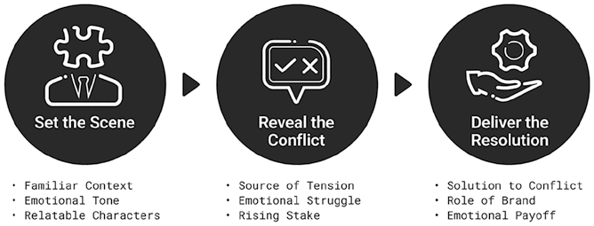
Hình 7.2: Công thức Xung đột – Hóa giải.Hình 7.2: Công thức Xung đột – Hóa giải (Conflict–Resolution Formula).
📖 Nội dung chi tiết trong Hình 7.2 (Công thức Xung đột – Hóa giải — Conflict–Resolution Formula):
Bước 1: Thiết lập Bối cảnh (Set the Scene)
Bước 2: Bộc lộ Xung đột (Reveal the Conflict)
Bước 3: Đưa ra Lời giải (Deliver the Resolution)
• Bối cảnh thân thuộc (Familiar Context) • Tông giọng cảm xúc (Emotional Tone) • Nhân vật dễ đồng cảm (Relatable Characters)
• Nguồn gốc căng thẳng (Source of Tension) • Đấu tranh cảm xúc nội tâm (Emotional Struggle) • Mức độ rủi ro/hệ quả dâng cao (Rising Stake)
• Giải pháp cho xung đột (Solution to Conflict) • Vai trò đồng hành của thương hiệu (Role of Brand) • Phần thưởng cảm xúc trọn vẹn (Emotional Payoff)
Bước 1 — Thiết lập bối cảnh (Set the scene): Bước khởi đầu quan trọng nhằm thu hút sự chú ý và kéo khán giả bước vào thế giới của câu chuyện. Một bối cảnh thân thuộc (familiar setting) giúp khán giả lập tức cảm thấy gần gũi như đang nhìn thấy cuộc sống của chính mình. Để thắt chặt sự gắn kết này, câu chuyện phải thiết lập một tông giọng cảm xúc (emotional tone) phản chiếu chân thực tâm trạng của nhân vật trong khoảnh khắc đó. Nằm ở trái tim của bối cảnh là một nhân vật dễ đồng cảm (relatable character) — người mà khán giả tìm thấy hình bóng của mình ở đó hoặc khao khát trở thành.
Bước 2 — Bộc lộ xung đột (Reveal the conflict): Duy trì sự chú ý của khán giả bằng cách đưa vào một sự căng thẳng có thật (genuine tension) mà khán giả vẫn trải qua hàng ngày — những điểm căng thẳng này thường được tìm thấy thông qua phương pháp quan sát thấu cảm khi đào tìm insight khách hàng (Chương 6). Câu chuyện cũng cần truyền tải một cuộc đấu tranh nội tâm sâu sắc (emotional struggle) mà người xem có thể thấu cảm. Khi mạch truyện tiến triển, mức độ rủi ro/hệ quả (raised stakes) phải được đẩy lên cao trào, làm rõ cái giá phải trả nếu không hành động, giữ cho khán giả gắn kết cảm xúc chặt chẽ với số phận nhân vật.
Bước 3 — Đưa ra lời giải (Deliver the resolution): Khép lại xung đột đã được đẩy lên cao trào bằng cách đưa ra giải pháp cho xung đột (conflict solution) — lý tưởng nhất là một giải pháp mà thương hiệu góp phần hiện thực hóa. Thương hiệu đóng vai trò người dẫn dắt giúp nhân vật khách hàng đạt được sự trưởng thành/chuyển hóa (character development), dù trực tiếp thông qua sản phẩm dịch vụ hay gián tiếp qua nguồn lực mà thương hiệu trao tặng. Câu chuyện kết thúc bằng một phần thưởng cảm xúc trọn vẹn (emotional payoff) — như một cái kết có hậu hoặc niềm hy vọng mới — để lại cho khán giả cảm giác viên mãn, lắng đọng.
Các Biến thể của Công thức
Có nhiều biến thể kinh điển của mô hình Xung đột – Hóa giải, mỗi biến thể mang lại mức độ chi tiết và trọng tâm riêng:
Thiết lập – Đối đầu – Giải quyết (Setup – Confrontation – Resolution / Cấu trúc Ba hồi – The Three-Act Structure): Được lấy cảm hứng từ triết gia Aristotle và phổ biến rộng rãi bởi chuyên gia biên kịch Syd Field, cấu trúc ba hồi chia câu chuyện thành ba phần rõ rệt: Giới thiệu nhân vật chính và bối cảnh (Thiết lập), đưa ra xung đột trung tâm (Đối đầu) và kết thúc bằng việc khôi phục lại trạng thái cân bằng mới (Giải quyết). Sự tinh gọn của cấu trúc này khiến nó trở nên lý tưởng cho các phim thương hiệu muốn tạo kết nối cảm xúc trong thời lượng vừa phải.
Kim tự tháp Freytag (Freytag’s Pyramid: Exposition – Rising Action – Climax – Falling Action – Denouement): Do tiểu thuyết gia người Đức Gustav Freytag giới thiệu, đây có lẽ là mô hình có ảnh hưởng lớn nhất trong nghệ thuật kể chuyện kịch tính, mở rộng cung bậc câu chuyện thành năm giai đoạn: Giới thiệu bối cảnh (Exposition), Thắt nút/Phát triển hành động (Rising Action), Đỉnh điểm/Cao trào (Climax), Mở nút/Hạ nhiệt căng thẳng (Falling Action) và Kết cục (Denouement). Cấu trúc chi tiết này đặc biệt hữu ích cho các định dạng phim tài liệu hoặc chiến dịch dài hơi.
Mô hình StoryBrand 7 bước (SB7): Do Donald Miller phát triển, khung kịch bản này đặt khách hàng vào vị trí trung tâm qua 7 bước tuần tự: (1) Một nhân vật (khách hàng), (2) gặp phải một vấn đề, (3) và bắt gặp một người dẫn đường (thương hiệu), (4) người trao cho họ một kế hoạch rõ ràng, (5) và kêu gọi họ hành động, (6) giúp họ tránh khỏi thất bại, (7) để chạm tới thành công viên mãn. Trong khung SB7, khách hàng luôn là người hùng (the hero), còn thương hiệu là người dẫn đường thông thái (the guide).
Ngữ cảnh Ứng dụng (Use Cases)
Công thức Xung đột – Hóa giải đặc biệt hiệu quả khi thương hiệu cần vượt lên trên hiệu suất ngắn hạn để xây dựng định vị thương hiệu chiến lược và tạo sự khác biệt hóa về mặt cảm xúc so với đối thủ:
1. Giải thích các sản phẩm/dịch vụ phức tạp: Trong các ngành như công nghệ cao, y tế chăm sóc sức khỏe, tài chính hoặc giải pháp doanh nghiệp (B2B), thương hiệu thường mắc lỗi lạm dụng bảng thông số kỹ thuật khô khan và thuật ngữ chuyên môn gây choáng ngợp. Lối kể chuyện Xung đột – Hóa giải hóa giải bài toán này bằng cách đưa ra một nhân vật gần gũi đang đối mặt với đúng thử thách ngoài đời thực của khách hàng tiềm năng, sau đó giới thiệu sản phẩm như một phần của lời giải giúp nhân vật vượt qua khó khăn, khiến thông điệp trở nên dễ hiểu và sống động hơn hẳn.
2. Tạo khác biệt trong các ngành hàng bão hòa, đồng질 hóa (Commoditized industries): Trong nhiều ngành hàng tiêu dùng đóng gói (CPG), sản phẩm của các hãng thường bị coi là giống hệt nhau về tính năng vật lý. Khi ấy, thương hiệu dùng câu chuyện Xung đột – Hóa giải để nâng bậc (ladder up) từ thuộc tính công năng lên lợi ích cảm xúc — chẳng hạn các thương hiệu mỹ phẩm và chăm sóc cá nhân kể câu chuyện về hành trình vượt qua sự tự ti để tìm lại sự tự tin và sức khỏe tinh thần.
3. Truyền tải các giá trị vô hình và sứ mệnh xã hội: Khi doanh nghiệp gắn mình với các vấn đề lớn của xã hội — như biến đổi khí hậu hay sức khỏe tâm thần — họ sử dụng công thức này để khắc họa thương hiệu như một phần của giải pháp, nhân văn hóa thương hiệu vượt lên trên mục đích thương mại đơn thuần.
Trong những trường hợp này, thương hiệu thường chọn các định dạng dài như phim hồ sơ doanh nghiệp, phim tài liệu ngắn, câu chuyện khởi nguồn (origin stories) và nội dung trên YouTube. Vì chứa đựng giá trị giải trí và chiều sâu cảm xúc, những câu chuyện này dễ dàng được khán giả chia sẻ tự nhiên, khuếch đại sức mạnh thương hiệu qua truyền miệng.
📌 Nghiên cứu Tình huống (Case Study): “Ba Từ” của AXA — Hóa giải Xung đột Bạo lực Gia đình
Vào năm 2025, tập đoàn bảo hiểm Pháp AXA đã bổ sung vỏn vẹn ba từ — “và bạo lực gia đình” (“and domestic violence”) — vào hợp đồng bảo hiểm nhà ở của mình. Trước đó, quyền lợi hỗ trợ tái định cư khẩn cấp chỉ áp dụng cho các nạn nhân gặp hỏa hoạn hoặc lũ lụt. Chỉ với ba từ thêm vào này, AXA đã mở rộng sự bảo vệ tương tự cho những người phụ nữ buộc phải rời bỏ ngôi nhà đang sống để chạy trốn bạo hành gia đình.
Chiến dịch này nằm trong nền tảng kể chuyện thương hiệu lớn hơn mang tên “Là phụ nữ không nên là một rủi ro” (“Being a woman shouldn’t be a risk”). Chiến dịch đi theo một cung bậc Xung đột – Hóa giải vô cùng rõ nét:
- Xung đột có thật và nhức nhối: Chiến dịch trích dẫn tạp chí Time mô tả chính ngôi nhà đôi khi lại là nơi nguy hiểm nhất đối với phụ nữ. Từ năm 2016 đến 2023, số vụ trình báo bạo lực gia đình với cảnh sát Pháp đã tăng gấp đôi; 77% cuộc gọi đến đường dây nóng quốc gia về bạo lực gia đình đều nhắc đến nhu cầu cấp bách phải có nơi ở tạm lánh an toàn, nhưng rào cản tài chính thường ngăn cản họ rời đi.
- Lời giải thực chất: Điều khoản hợp đồng mới của AXA có hiệu lực ngay lập tức cho 2,5 triệu hộ gia đình tại Pháp (bao gồm cả hiệu lực hồi tố cho các hợp đồng cũ). Thay đổi mang tính nhân văn này sau đó được lan tỏa rộng rãi qua truyền hình quốc gia, biển bảng ngoài trời và mạng xã hội.
Tình huống này chứng minh rằng mô hình Xung đột – Hóa giải đạt sức mạnh tối đa khi thương hiệu không chỉ chạm vào nỗi đau có thật mà còn đưa ra lời giải thực chất ngay trong lõi mô hình kinh doanh của mình chứ không chỉ dừng lại ở khẩu hiệu suông.
3. Lộ trình Nỗi đau – Lợi ích (Pain–Gain Path)
Lộ trình Nỗi đau – Lợi ích (Pain–Gain Path) nhắm trực diện vào hệ não tưởng thưởng (reward brain) — trung tâm chịu trách nhiệm đánh giá giá trị. Nó phản chiếu cách khách hàng thẩm định gói chào hàng của thương hiệu bằng cách đặt ra một phép tương phản đơn giản nhưng sắc bén: sự bức bối của nỗi đau hiện tại (Current Pain), sức hấp dẫn của lợi ích khả thi trong tương lai (Possible Gain) và con đường rõ ràng để bắc cầu nối giữa hai trạng thái đó.
Trong ba công thức kể chuyện, đây là công thức thúc đẩy tư duy suy luận lý tính mạnh mẽ nhất, bởi nó khuyến khích khách hàng so sánh các kết quả đầu ra và đưa ra phán đoán dựa trên giá trị. Điều này biến nó trở thành phương pháp kể chuyện gắn kết chặt chẽ nhất với quá trình đánh giá Tuyên bố giá trị (Value Proposition).
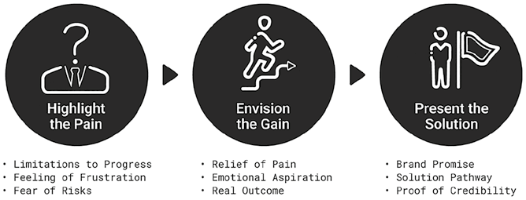
Hình 7.3: Công thức Nỗi đau – Lợi ích.Hình 7.3: Công thức Nỗi đau – Lợi ích (Pain–Gain Formula).
📖 Nội dung chi tiết trong Hình 7.3 (Công thức Nỗi đau – Lợi ích — Pain–Gain Formula):
Bước 1: Làm nổi bật Nỗi đau (Highlight the Pain)
Bước 2: Hình dung về Lợi ích (Envision the Gain)
Bước 3: Đưa ra Giải pháp (Present the Solution)
• Những rào cản hạn chế sự tiến bộ (Limitations to Progress) • Cảm giác bức bối, thất vọng (Feeling of Frustration) • Nỗi sợ rủi ro / tụt hậu (Fear of Risks)
• Sự nhẹ nhõm giải tỏa nỗi đau (Relief of Pain) • Khát vọng cảm xúc vươn lên (Emotional Aspiration) • Kết quả thực tế rõ ràng (Real Outcome)
• Lời hứa thương hiệu (Brand Promise) • Lộ trình thực thi giải pháp (Solution Pathway) • Bằng chứng xác thực uy tín (Proof of Credibility)
Công thức Nỗi đau – Lợi ích (Pain–Gain Formula)
Mô hình kể chuyện này đi theo cấu trúc tạo động lực thường thấy trong truyền thông thuyết phục gồm ba bước: Làm nổi bật nỗi đau (Highlight the pain) → Hình dung về lợi ích (Envision the gain) → Đưa ra giải pháp (Present the solution) (Hình 7.3).
Bước 1 — Làm nổi bật nỗi đau (Highlight the pain): Đưa vấn đề hiện tại của khách hàng vào đúng tiêu điểm. Nỗi đau thường bắt nguồn từ những sự hạn chế (limitations) ngăn cản khách hàng đạt được kết quả tốt hơn. Khi những rào cản này kéo dài dai dẳng, chúng dẫn đến sự bức bối, thất vọng (frustration) ngày càng lớn — khách hàng cảm thấy bế tắc khi bỏ ra nhiều công sức mà kết quả thu về ngày càng giảm sút. Câu chuyện sau đó chạm tới tầng sâu hơn là nỗi sợ (fear): sợ bị tụt hậu phía sau hoặc sợ bỏ lỡ các cơ hội quý giá.
Bước 2 — Hình dung về lợi ích (Envision the gain): Mở ra một bức tranh tương phản đầy hấp dẫn so với nỗi đau hiện tại. Chuyển biến đầu tiên mà khán giả mong đợi là sự nhẹ nhõm giải tỏa (relief) ngay khi gánh nặng hạn chế được dỡ bỏ. Tiếp đó, câu chuyện hứa hẹn một khát vọng vươn lên (aspiration) — một phiên bản cuộc sống hoặc công việc tốt đẹp hơn. Cuối cùng, lợi ích phải được neo vào một kết quả đầu ra rõ ràng (clear outcome) mà khán giả có thể hình dung cụ thể trước mắt, làm nền tảng cho lời hứa thương hiệu.
Bước 3 — Đưa ra giải pháp (Present the solution): Định vị thương hiệu là chiếc cầu nối đưa khách hàng từ bờ Nỗi đau sang bờ Lợi ích. Bước đi đầu tiên là đưa ra lời hứa thương hiệu (promise); tiếp đến là chỉ rõ lộ trình/cơ chế thực thi (pathway) — sản phẩm, dịch vụ hoặc quy trình giúp hiện thực hóa lời hứa đó; và cuối cùng củng cố bằng bằng chứng xác thực (evidence) như lời chứng thực của khách hàng cũ (testimonials), cam kết bảo lãnh (guarantees) hoặc màn trình diễn thực tế (demonstrations). Lúc này, thương hiệu đóng vai trò như một người cố vấn tin cậy (advisor) — người bắt đúng bệnh, làm rõ cơ hội và đề xuất con đường đi tới thành công.
Các Biến thể của Công thức
Nhiều công thức viết lời quảng cáo (copywriting) và thuyết trình kinh điển đi theo cấu trúc Nỗi đau – Lợi ích này:
BAB (Before – After – Bridge / Trước – Sau – Cầu nối): Đặt ra sự tương phản rõ nét giữa tình trạng khó khăn hiện tại của khách hàng (Trước) và viễn cảnh tương lai tươi sáng hơn (Sau), rồi giới thiệu thương hiệu chính là Chiếc cầu nối giữa hai bờ. BAB rất hiệu quả vì giúp khán giả hình dung ngay giá trị nhận được mà không cần một cốt truyện cảm xúc dài dòng.
PAS (Problem – Agitate – Solution / Vấn đề – Khoét sâu – Giải pháp): Công thức kinh điển giúp đẩy cao sức căng động lực bằng cách tận dụng sự khó chịu của một vấn đề chưa được giải quyết: bắt đầu bằng việc chỉ ra Vấn đề, sau đó khuếch đại những hệ lụy thực tế hoặc cảm xúc nếu để mặc vấn đề đó tiếp diễn (Khoét sâu – Agitate), trước khi đưa thương hiệu vào làm Giải pháp. Bằng cách làm rõ cái giá của nỗi đau, PAS kích hoạt mạnh mẽ thiên kiến ác cảm mất mát (loss aversion) — xu hướng con người muốn né tránh tổn thất mạnh hơn nhiều so với việc tìm kiếm lợi ích tương đương.
PAPA (Problem – Advantage – Proof – Action / Vấn đề – Lợi thế – Bằng chứng – Hành động): Bổ sung thêm tầng xác thực logic vào cấu trúc Nỗi đau – Lợi ích: bắt đầu từ Vấn đề, giới thiệu Lợi thế vượt trội mà thương hiệu mang lại, bảo chứng cho tuyên bố đó bằng Bằng chứng thực tế và kết thúc bằng Lời kêu gọi hành động rõ ràng. Biến thể này được sử dụng rộng rãi trong tiếp thị B2B, dịch vụ tài chính và công nghệ — nơi người mua đòi hỏi cả động lực cảm xúc lẫn sự kiểm chứng lý tính chặt chẽ.
Ngữ cảnh Ứng dụng (Use Cases)
Công thức Nỗi đau – Lợi ích đặc biệt phát huy tác dụng trong các quyết định mua sắm có mức độ quan tâm cao (high-involvement decisions) — những thời điểm mà rủi ro chọn sai rất lớn, chi phí của việc chần chừ không hành động ngày càng tăng nhưng khách hàng vẫn còn ngập ngừng. Công thức này phù hợp hoàn hảo cho các ngành như y tế, giáo dục, dịch vụ tài chính và giải pháp doanh nghiệp B2B.
📌 Nghiên cứu Tình huống (Case Study): Chiến dịch “Vaseline Verified” — Xóa tan Nỗi đau Hoang mang
Chiến dịch kể chuyện thương hiệu “Vaseline Verified” (Đã được Vaseline Kiểm chứng) là một ví dụ xuất sắc của công thức Nỗi đau – Lợi ích. Chiến dịch bắt đầu bằng việc ghi nhận thực tế có hàng ngàn mẹo làm đẹp tự chế (viral beauty hacks) sử dụng sáp dưỡng ẩm Vaseline đang lan truyền chóng mặt trên mạng xã hội. Những giải pháp tự chế do người dùng truyền tai nhau này phản ánh một nỗi đau ngầm ẩn: người tiêu dùng không biết chắc cách chăm sóc da nào mới đúng khoa học và hoang mang không biết nên tin vào lời khuyên nào trên mạng.
Trong trường hợp này, “nỗi đau” mang ý nghĩa kép: vừa là các vấn đề tổn thương da theo nghĩa đen mà người dùng đang muốn chữa lành, vừa là sự bối rối, hoang mang khi bị bủa vây bởi vô số mẹo vặt trái chiều.
Vaseline đã trực tiếp đứng ra giải quyết nỗi đau này: thương hiệu thu thập hàng ngàn mẹo làm đẹp với Vaseline trên mạng và đem vào phòng thí nghiệm chính hãng để các nhà khoa học trực tiếp kiểm nghiệm. Những mẹo nào thực sự hiệu quả và an toàn được trao huy hiệu chứng nhận “Vaseline Verified”, biến những mẹo truyền miệng thiếu chắc chắn thành lời khuyên đã được kiểm chứng bởi chuyên gia da liễu.
Lợi ích (Gain) mang lại vừa có giá trị cảm xúc vừa có giá trị thực tiễn: sự hoang mang được xóa bỏ hoàn toàn, đồng thời khách hàng khám phá ra hàng loạt công dụng mới được xác thực của hũ Vaseline quen thuộc vượt xa việc chỉ bôi nẻ da. Bằng cách hóa giải nỗi đau bằng uy tín khoa học, chiến dịch đã mở rộng khung tham chiếu của Vaseline, biến một sản phẩm bình dân đơn giản thành món đồ thiết yếu đa năng trong lối sống hiện đại.
Khác với lối kể chuyện thuần cảm xúc, công thức Nỗi đau – Lợi ích ưu tiên tông giọng có cấu trúc chặt chẽ và giàu tính lý tính, trình bày rõ hệ quả, kết quả hữu hình và bằng chứng xác thực. Tông giọng này đặc biệt thuyết phục đối với những khán giả cần có lý lẽ vững chắc để giải trình quyết định mua sắm của mình với cấp trên hoặc gia đình. Do đó, nó xuất hiện phổ biến nhất trong các bộ tài liệu chào hàng B2B (sales decks), nghiên cứu tình huống khách hàng (case studies) và video chứng thực (testimonials).
Tóm tắt Chương 7
Kể chuyện thương hiệu là một trong những công cụ quyền năng nhất của tiếp thị lấy tâm trí làm trung tâm. Giữa kỷ nguyên bão hòa nội dung, nó giúp thương hiệu xuyên qua đám đông tạp âm bằng cách tác động vào não bộ thông qua mạch truyện. Chương này giới thiệu ba công thức kể chuyện riêng biệt tương ứng với ba hệ thống nhận thức:
1. Lộ trình Chú ý – Quyết định (Attention–Decision Path): Phù hợp nhất cho các quyết định mức độ quan tâm thấp diễn ra trong những khoảnh khắc vi mô. Nó nhắm vào hệ não chú ý và tưởng thưởng bằng cách bắt lấy sự tập trung nhờ tính nổi bật (salience), tạo sự liên quan tức thì và thúc đẩy hành động nhanh trên mạng xã hội hoặc tại quầy kệ bán lẻ.
2. Lộ trình Xung đột – Hóa giải (Conflict–Resolution Path): Hỗ trợ các hành trình nhận thức dài hơi và bồi đắp sự cộng hưởng cảm xúc bền lâu. Bằng cách tác động chủ yếu vào hệ não xã hội, thương hiệu định vị mình là người dẫn đường trong câu chuyện chuyển hóa của nhân vật chính là khách hàng — đặc biệt hiệu quả cho các ngành hàng phức tạp, ngành hàng đồng질 hóa và thương hiệu theo đuổi sứ mệnh xã hội.
3. Lộ trình Nỗi đau – Lợi ích (Pain–Gain Path): Chạm vào hệ não tưởng thưởng bằng cách giúp khách hàng đối chiếu sự bức bối của nỗi đau hiện tại với sức hấp dẫn của lợi ích tương lai. Thường dùng trong các quyết định mức độ quan tâm cao, B2B và các ngành nhạy cảm về niềm tin, nơi thương hiệu đóng vai trò là người cố vấn uy tín đưa ra bằng chứng xác thực.
Câu hỏi Suy ngẫm
Nội dung ngắn (short-form content) hiện tại của bạn có thực sự thu hút được sự chú ý tức thì và dẫn dắt khán giả đến hành động chuyển đổi chưa?
Những câu chuyện thương hiệu dài hơi của bạn có đang được xây dựng dựa trên những xung đột có thật mà khán giả của bạn trải qua mỗi ngày hay không?
Bạn đã diễn đạt thật sắc nét lợi ích (gain) mà thương hiệu mang lại cũng như nỗi đau (pain) mà sản phẩm giúp xóa bỏ chưa?
Từ khởi đầu khiêm tốn là một thương hiệu Nhật Bản lấy cảm hứng từ phong cách thời trang thường ngày của Mỹ như Gap, Uniqlo đã vươn mình trở thành một trong những thương hiệu thời trang giá trị nhất thế giới. Câu chuyện thương hiệu LifeWear của hãng hứa hẹn tạo ra những trang phục tiên tiến nhất thế giới nhằm nâng cao chất lượng cuộc sống cho tất cả mọi người. Nhưng lợi thế cạnh tranh thực sự của Uniqlo lại nằm ở tuyên bố giá trị (value proposition) — lời hứa giá trị độc đáo định nghĩa rõ những gì thương hiệu mang lại cho khách hàng.
Khác với các đối thủ thời trang nhanh (fast-fashion) như Zara và H&M vốn chạy đua theo các xu hướng thời trang mới nhất, hay những đối thủ siêu rẻ như Shein vốn cạnh tranh thuần túy bằng giá thấp, Uniqlo định vị mình theo một con đường hoàn toàn khác biệt. Hãng cung cấp những món đồ thiết yếu vượt thời gian (timeless essentials): những trang phục tối giản, thiết kế tinh tế từ chất liệu cao cấp đảm bảo độ bền lâu dài. Mỗi món đồ đóng vai trò như một lớp nền linh hoạt dễ dàng phối hợp với trang phục của bất kỳ nhãn hiệu nào khác, biến Uniqlo trở thành biểu tượng mẫu mực của thời trang “đáng đồng tiền bát gạo” (value for money).
Điều thực sự làm nên sự khác biệt của Uniqlo chính là việc tập trung vào công nghệ chất liệu vải. Hợp tác chặt chẽ với tập đoàn vật liệu Toray Industries, Uniqlo đã phát triển hàng loạt công nghệ đột phá như HEATTECH (giữ nhiệt), AIRism (làm mát thoáng khí), Ultra Light Down (lông vũ siêu nhẹ) và PUFFTECH nhằm nâng cao nhận thức về chất lượng trong tâm trí người dùng.
Trong khi Zara chạy đua để đưa các mẫu thiết kế hợp mốt mới lên kệ chỉ trong vòng hai tuần, Uniqlo lại chọn hướng đi ngược lại. Được dẫn dắt bởi triết lý Kaizen (cải tiến liên tục) của Nhật Bản, hãng kiên trì hoàn thiện từng dòng sản phẩm cốt lõi qua từng năm dựa trên sự thấu hiểu khách hàng — từ những chiếc áo Bra Top ôm vừa vặn hơn cho đến áo khoác chống tia cực tím UV Protection Hoodie thoáng mát hơn.
Thành công của Uniqlo chứng minh rằng tuyên bố giá trị không bao giờ chỉ xoay quanh câu chuyện sản phẩm hay giá bán đơn thuần. Trên thực tế, nó vận hành như một phép so sánh trong tâm trí (mental comparison) — xoay quanh cách khách hàng liên tục đặt các phương án lên bàn cân đong đếm trong đầu.
Khi khách hàng đánh giá Uniqlo, hàng loạt phép so sánh diễn ra gần như tức thì:
- Họ so sánh mức giá của Uniqlo với các hãng thời trang nhanh như Zara hay H&M, nhận thấy rằng dù mức giá tương đương nhưng Uniqlo hứa hẹn chất lượng và độ bền vượt trội hơn.
- Họ cân nhắc giữa thiết kế tối giản của Uniqlo với các mẫu quần áo chạy theo mốt của hãng khác, tự hỏi liệu sự linh hoạt bền dáng qua nhiều năm có phải là lựa chọn thông minh hơn phong cách thời vụ chóng tàn hay không.
- Họ đối chiếu công năng thực tế — những chất liệu vải công nghệ như HEATTECH hay AIRism — với sản phẩm thông thường của đối thủ, nhìn nhận Uniqlo như một hãng quần áo công nghệ cao. Tất cả những phép tính nhẩm nhanh chóng và phần lớn diễn ra trong vô thức này định hình nên giá trị cảm nhận (perceived value) thúc đẩy lựa chọn cuối cùng của họ.
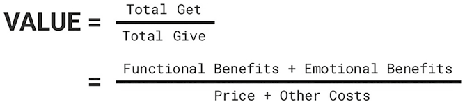
Hình 8.1: Phương trình Giá trị.Hình 8.1: Phương trình Giá trị (The Value Equation).
📖 Nội dung chi tiết trong Hình 8.1 (Phương trình Giá trị — The Value Equation):
$$\text{GIÁ TRỊ (VALUE)} = \frac{\text{Tổng Nhận được (Total Get)}}{\text{Tổng Bỏ ra (Total Give)}} = \frac{\text{Lợi ích Chức năng (Functional Benefits)} + \text{Lợi ích Cảm xúc (Emotional Benefits)}}{\text{Giá tiền (Price)} + \text{Các Chi phí Khác (Other Costs)}}$$
Phương trình Giá trị (The Value Equation)
Phương trình Giá trị (The Value Equation) nắm bắt chính xác cách khách hàng đánh giá bất kỳ gói chào hàng nào, dù một cách có ý thức hay trong vô thức. Ở tầng cốt lõi nhất, Giá trị (Value) được tính bằng Tổng những gì khách hàng nhận được (Total Get) chia cho Tổng những gì khách hàng phải bỏ ra (Total Give) (Hình 8.1). Phương trình này đóng vai trò là khung công cụ thực tiễn để phát triển tuyên bố giá trị, hướng dẫn thương hiệu diễn đạt sắc nét những lợi ích trọng tâm mà mình mang lại tương ứng với chi phí mà khách hàng phải gánh chịu.
Vế Nhận được (The Get Side)
Vế Nhận được (The Get Side) bao gồm tổng thể những lợi ích mà khách hàng thu nhận được từ một sản phẩm hoặc dịch vụ. Trước hết, nó bao gồm các lợi ích chức năng (functional benefits) như công năng sử dụng, hiệu suất hoạt động và độ bền. Ví dụ, thương hiệu chăm sóc cá nhân Dove làm nổi bật lợi ích chức năng cốt lõi của mình là khả năng dưỡng ẩm (với 1/4 hàm lượng kem dưỡng ẩm) xuyên suốt mọi dòng sản phẩm nhằm nuôi dưỡng làn da và mái tóc khỏe đẹp.
Tuy nhiên, một tuyên bố giá trị không nên chỉ dừng lại ở các lợi ích chức năng, bởi những yếu tố này rất dễ bị bình dân hóa/đồng질 hóa (commoditized) trong thị trường cạnh tranh. Dù các tính năng kỹ thuật có thể tạo ra điểm khác biệt ban đầu, đối thủ cạnh tranh có thể nhanh chóng sao chép hoặc vượt mặt. Hệ quả là những lợi thế thuần túy về mặt chức năng thường sớm biến thành các yếu tố duy trì cơ bản (hygiene factors) — những kỳ vọng tối thiểu mặc định phải có chứ không thể duy trì lợi thế khác biệt hóa lâu dài.
Vượt lên trên lợi ích chức năng, Vế Nhận được còn bao hàm các lợi ích cảm xúc bậc cao (emotional benefits). Đó có thể là cảm giác vui sướng, sự tự tin tăng cao hoặc cảm giác thuộc về một tầng lớp xã hội nhất định. Những chiều kích cảm xúc này mang lại chiều sâu cho tuyên bố giá trị, khiến các đối thủ cạnh tranh khó lòng bắt chước.
Chẳng hạn, Dove đã nâng tầm lời hứa chức năng về làn da và mái tóc mềm mượt thành lợi ích cảm xúc là nâng cao lòng tự tôn (enhanced self-esteem). Thương hiệu nỗ lực tái định nghĩa lại khái niệm sắc đẹp dựa trên insight sâu sắc rằng chỉ có 4% phụ nữ trên toàn thế giới tự nhận thấy mình đẹp do áp lực từ những tiêu chuẩn ngoại hình phi thực tế. Thông qua chuỗi chiến dịch “Vẻ đẹp Đích thực” (Real Beauty) và sau này là dự án “Lòng tự tôn” (Self-Esteem Project), Dove tôn vinh vẻ đẹp chân thực để bồi đắp sự tự tin cho phụ nữ. Bằng cách giải quyết trọn vẹn cả mong muốn chức năng lẫn nỗi trăn trở cảm xúc, tuyên bố giá trị của Dove đã tạo được tiếng vang sâu sắc trong lòng thị trường mục tiêu.
Vế Bỏ ra (The Give Side)
Trong khi Vế Nhận được tập trung vào các lợi ích, thì Vế Bỏ ra (The Give Side) của công thức phản ánh toàn bộ những gì khách hàng phải tiêu tốn để có được những lợi ích đó. Trước hết và rõ ràng nhất chính là mức giá bằng tiền (price) mà họ phải trả. Ví dụ, để đạt hiệu quả dưỡng tóc tối đa từ Dove, khách hàng có thể thấy cần phải mua trọn bộ cả dầu gội lẫn dầu xả, làm tăng tổng chi phí mua sắm.
Nhưng Vế Bỏ ra còn bao gồm cả những chi phí phi tiền tệ đi kèm (other associated costs): khách hàng cân nhắc cả sự bất tiện khi phải chuyển đổi sang một sản phẩm mới, nỗi lo sản phẩm mới không hợp hoặc khó tìm mua tại các cửa hàng quen thuộc. Những băn khoăn này cho thấy Vế Bỏ ra không chỉ là tiền bạc mà còn bao hàm cả sự bất định và rủi ro (uncertainties and risks) khi thử một thứ mới — chẳng hạn như rủi ro bị kích ứng da khi đổi sang dùng một loại sữa tắm mới.
Ba Sự Đánh đổi Tâm lý (The Three Mental Trade-Offs)
Phương trình giá trị bao hàm ba sự đánh đổi tâm lý (mental trade-offs) nền tảng mà khách hàng thực hiện khi thẩm định bất kỳ lời chào hàng nào (Hình 8.2). Sự đánh đổi tâm lý có nghĩa là để đạt được lợi ích ở một khía cạnh này, khách hàng thường phải chấp nhận từ bỏ hoặc hy sinh một điều gì đó ở khía cạnh khác.
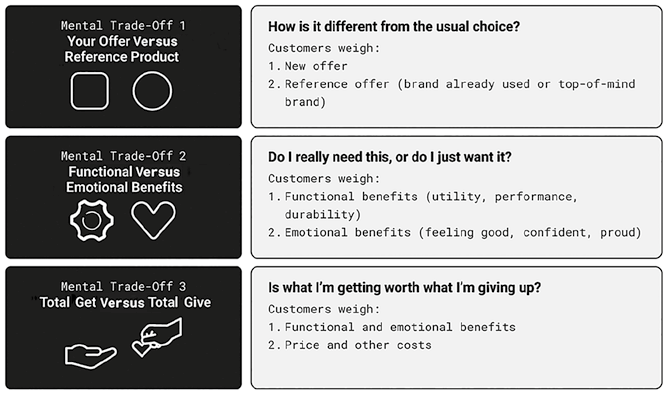
Hình 8.2: Ba Sự Đánh đổi Tâm lý.Hình 8.2: Ba Sự Đánh đổi Tâm lý (Three Mental Trade-Offs).
📖 Nội dung chi tiết trong Hình 8.2 (Ba Sự Đánh đổi Tâm lý — Three Mental Trade-Offs):
Sự Đánh đổi Tâm lý (Mental Trade-Off)
Câu hỏi Nội tâm của Khách hàng
Hai Vế Khách hàng Đặt lên Bàn cân (Customers weigh)
1. Gói chào hàng của bạn so với Sản phẩm tham chiếu (Your Offer Versus Reference Product)
“Nó khác gì so với lựa chọn quen thuộc thường ngày?” (How is it different from the usual choice?)
1. Gói chào hàng mới (New offer) 2. Gói chào hàng tham chiếu (Reference offer — thương hiệu đang dùng hoặc thương hiệu nhớ đến đầu tiên top-of-mind)
2. Lợi ích Chức năng so với Lợi ích Cảm xúc (Functional Versus Emotional Benefits)
“Mình thực sự cần thứ này, hay chỉ là đang thích muốn có nó?” (Do I really need this, or do I just want it?)
1. Lợi ích chức năng (Functional benefits — công năng, hiệu suất, độ bền) 2. Lợi ích cảm xúc (Emotional benefits — cảm giác vui sướng, tự tin, tự hào)
3. Tổng Nhận được so với Tổng Bỏ ra (Total Get Versus Total Give)
“Những gì mình nhận về có xứng đáng với những gì phải bỏ ra không?” (Is what I'm getting worth what I'm giving up?)
1. Tổng lợi ích chức năng và cảm xúc (Functional and emotional benefits) 2. Giá tiền và các chi phí khác (Price and other costs)
Sự đánh đổi thứ nhất: Giữa Gói chào hàng của bạn và Điểm tham chiếu của khách hàng (Your Offer vs. Reference Point): Khách hàng không bao giờ đánh giá một gói chào hàng trong trạng thái chân không cô lập; họ luôn đem sản phẩm hoặc dịch vụ mới ra so sánh với một thứ đã nằm sẵn ở vị trí đầu bảng trong tâm trí họ (top of mind). Thường thì điểm tham chiếu (reference point) này chính là sản phẩm họ đang sử dụng hiện tại — đóng vai trò là đường chuẩn cơ sở để quyết định xem việc chuyển đổi thương hiệu có bõ công hay không. Điểm tham chiếu cũng thường là một đối thủ cạnh tranh trực tiếp (ví dụ: khách hàng luôn đặt Apple lên bàn cân so sánh với Samsung vì hai hãng này thống lĩnh thị trường điện thoại thông minh toàn cầu). Nếu đó là một ngành hàng hoàn toàn mới mẻ đối với họ, điểm tham chiếu thường là thương hiệu dẫn đầu có độ phủ lớn nhất và đáng tin cậy nhất trên thị trường — chẳng hạn, nhiều người chọn Amazon cho lần mua hàng trực tuyến đầu tiên vì cảm giác an toàn; khi cân nhắc các sàn thương mại điện tử giá rẻ mới nổi như Temu hay Shein sau này, họ tự nhiên lấy Amazon làm thước đo chuẩn để đối chiếu.
Sự đánh đổi thứ hai: Giữa Lợi ích Chức năng và Lợi ích Cảm xúc (Functional vs. Emotional Benefits — Nội bộ Vế Get): Khách hàng phải cân bằng giữa thứ họ muốn (wants — cảm xúc) và thứ họ cần (needs — chức năng), vốn không phải lúc nào cũng hội tụ trong cùng một sản phẩm. Ví dụ, một người cha có thể mê mẩn chiếc xe thể thao Ford Mustang vì kiểu dáng quyến rũ và cảm giác lái phấn khích, nhưng lại nhận ra hàng ghế sau chật hẹp của nó không phù hợp với nhu cầu chở cả gia đình. Ngay cả với những sản phẩm nặng tính công năng như tai nghe không dây chống ồn, khách hàng cuối cùng vẫn có thể chọn mua Apple AirPods đơn giản vì trông nó thời trang và sành điệu hơn. Chiều ngược lại cũng đúng: khách hàng thường dùng lý lẽ hợp lý hóa (rational justifications) để biện minh cho những khoản mua sắm chiều chuộng cảm xúc — họ có thể sắm một chiếc TV thông minh màn hình lớn thực sự chưa cần đến, nhưng tự thuyết phục bản thân rằng đó là quyết định sáng suốt nhờ săn được mức giảm giá sâu dịp Black Friday. Trong hầu hết các ngành hàng, yếu tố cảm xúc thường có sức nặng vượt trội hơn các cân nhắc thuần lý tính: ở các ngành xa xỉ phẩm hay thời trang, trang sức, cảm xúc chiếm ưu thế tuyệt đối; còn ở các ngành thiết yếu như y tế hay tài chính, quyết định thường cân bằng hơn giữa đánh giá lý tính và nhu cầu được trấn an cảm xúc.
Sự đánh đổi thứ ba: Giữa Tổng Nhận được và Tổng Bỏ ra (Total Get vs. Total Give): Khách hàng tự hỏi liệu những gì mình thu về có xứng đáng với những gì phải hy sinh hay không. Vì phương trình giá trị là một tỷ số (ratio) giữa tổng lợi ích và tổng chi phí, khách hàng cảm nhận giá trị lớn hơn khi Vế Nhận được mang lại cảm giác lớn hơn đáng kể so với Vế Bỏ ra:
- Một lợi ích nhỏ đi kèm mức chi phí cực thấp vẫn có thể mang lại cảm giác giá trị cao vì tỷ số lợi ích/chi phí lớn — chẳng hạn hộp mì Ý nhãn hàng riêng Great Value của Walmart có giá chỉ khoảng 1 USD cho hộp 450g khiến khách hàng cảm thấy cực kỳ hời, củng cố đúng cái tên thương hiệu Great Value.
- Ngược lại, một lợi ích lớn nhưng đi kèm chi phí và công sức bỏ ra quá đắt đỏ lại mang cảm giác giá trị thấp — ví dụ một người cân nhắc mua thẻ tập gym cao cấp có thể rất thích hệ thống máy móc hiện đại và các lớp học ở đó, nhưng khi đặt lên bàn cân với mức phí hàng tháng đắt đỏ cùng quãng đường di chuyển xa xôi kẹt xe mỗi ngày, họ sẽ quyết định không đăng ký vì tổng lợi ích không bù đắp nổi tổng sự hy sinh.
Tóm lại, khách hàng thực hiện rất nhanh ba sự đánh đổi này mà hiếm khi ngồi tính toán chi li. Thay vào đó, tâm trí họ ước lượng giá trị ngay tức khắc dưới sự dẫn dắt của các lối tắt tư duy (heuristics) và thiên kiến nhận thức (cognitive biases).
Các Lối tắt Tư duy Dẫn dắt Sự Đánh đổi (Guiding Trade-Off Heuristics)
Lối tắt tư duy (Heuristics) là những quy tắc ngón tay cái trong tâm trí giúp con người đưa ra quyết định nhanh chóng mà không làm quá tải năng lực nhận thức. Tuy nhiên, vì ưu tiên tốc độ và sự tiết kiệm năng lượng não bộ, chúng cũng đồng thời là các thiên kiến nhận thức (cognitive biases) có thể dẫn đến những sai lệch so với logic thuần túy.
Khi đánh giá tuyên bố giá trị, các lối tắt tư duy đơn giản hóa những phép so sánh phức tạp thành những phán đoán trực diện bằng cách tập trung vào một vài thuộc tính nổi bật nhất.
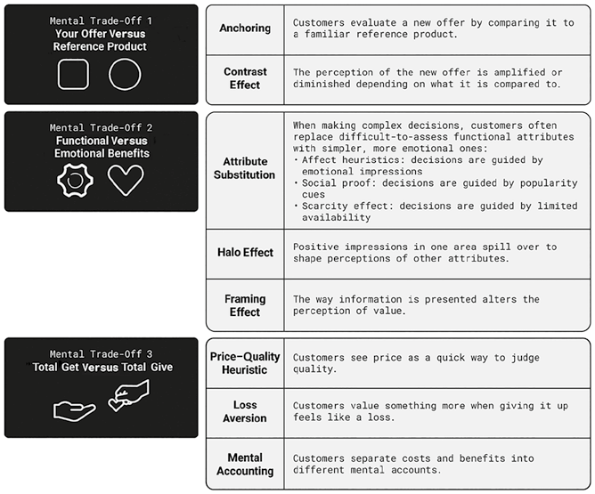
Hình 8.3: Các Lối tắt Tư duy Vận hành trong Từng Sự Đánh đổi Tâm lý.Hình 8.3: Các Lối tắt Tư duy Vận hành trong Từng Sự Đánh đổi Tâm lý (Heuristics at Play in Each Mental Trade-Off).
📖 Nội dung chi tiết trong Hình 8.3 (Các Lối tắt Tư duy Vận hành trong Từng Sự Đánh đổi Tâm lý — Heuristics at Play):
Sự Đánh đổi Tâm lý
Các Lối tắt Tư duy & Thiên kiến Nhận thức (Heuristics & Biases)
Cơ chế Vận hành trong Tâm trí Khách hàng
Đánh đổi 1: Gói chào hàng so với Sản phẩm tham chiếu (Mental Trade-Off 1)
• Hiệu ứng mỏ neo (Anchoring) • Hiệu ứng tương phản (Contrast Effect)
• Khách hàng đánh giá gói chào hàng mới bằng cách đem so sánh nó với một sản phẩm tham chiếu quen thuộc. • Nhận thức về gói chào hàng mới được phóng đại lên hoặc thu nhỏ lại tùy thuộc vào thứ được đem ra so sánh cùng nó.
Đánh đổi 2: Lợi ích Chức năng so với Lợi ích Cảm xúc (Mental Trade-Off 2)
• Sự thay thế thuộc tính (Attribute Substitution) ◦ Lối tắt cảm xúc (Affect heuristics) ◦ Bằng chứng xã hội (Social proof) ◦ Hiệu ứng khan hiếm (Scarcity effect) • Hiệu ứng hào quang (Halo Effect) • Hiệu ứng đóng khung (Framing Effect)
• Khi ra quyết định phức tạp, khách hàng thường thay thế các thuộc tính chức năng khó đánh giá bằng các tín hiệu cảm xúc đơn giản hơn: dựa theo ấn tượng cảm xúc (Affect), dựa theo độ phổ biến đám đông (Social proof), hoặc dựa theo sự giới hạn số lượng/thời gian (Scarcity). • Ấn tượng tốt đẹp ở một khía cạnh lan tỏa sang định hình nhận thức tích cực về các thuộc tính khác. • Cách thức trình bày thông tin làm thay đổi hoàn toàn nhận thức về giá trị.
Đánh đổi 3: Tổng Nhận được so với Tổng Bỏ ra (Mental Trade-Off 3)
• Lối tắt Giá cả – Chất lượng (Price–Quality Heuristic) • Ác cảm mất mát (Loss Aversion) • Kế toán tâm lý (Mental Accounting)
• Khách hàng dùng mức giá như một thước đo nhanh để phán đoán chất lượng sản phẩm. • Khách hàng coi trọng một thứ hơn gấp bội khi việc từ bỏ nó mang lại cảm giác bị mất mát. • Khách hàng chia tách chi phí và lợi ích vào các “ngăn tài khoản tâm lý” khác nhau với mức độ nhạy cảm khác nhau.
Chính vì vậy, một tuyên bố giá trị không cần phải quá rườm rà hay nhồi nhét chi tiết kỹ thuật. Quá nhiều chi tiết phức tạp thậm chí còn cản trở khách hàng vận dụng các lối tắt tư duy của họ. Thay vào đó, người làm tiếp thị nên cung cấp những tín hiệu đơn giản, sắc nét để kích hoạt đúng các lối tắt tư duy này (được tóm lược trong Hình 8.3).
1. Lối tắt trong Đánh đổi giữa Gói chào hàng và Sản phẩm Tham chiếu (Your Offer vs. Reference Product)
Lối tắt tư duy nền tảng nhất trong phép so sánh này là hiệu ứng mỏ neo (anchoring) — thiên kiến nhận thức khi khách hàng đánh giá một gói chào hàng mới bằng cách neo nó vào một sản phẩm tham chiếu quen thuộc. Sản phẩm tham chiếu này thiết lập khung kỳ vọng chuẩn, và mọi gói chào hàng mới đều được phán xét xoay quanh chiếc mỏ neo đó.
Gắn liền mật thiết với hiệu ứng mỏ neo là hiệu ứng tương phản (contrast effect) — khi nhận thức về gói chào hàng mới được phóng đại lên hoặc thu nhỏ lại tùy thuộc vào thứ được đem ra so sánh cùng nó. Nếu sản phẩm mỏ neo được định vị ở phân khúc siêu cao cấp đắt đỏ, gói chào hàng mới đặt cạnh nó sẽ có vẻ rất phải chăng; ngược lại, nếu mỏ neo là một sản phẩm bình dân giá rẻ, cùng gói chào hàng mới đó lại hiện lên như một lựa chọn cao cấp và tinh tế. Về bản chất, hiệu ứng tương phản định hình khoảng cách giá trị cảm nhận giữa các phương án, biến cách đóng khung tham chiếu (framing) trở thành yếu tố sống còn khi thiết kế tuyên bố giá trị.
Mỗi chủ sở hữu thương hiệu cần xác định rõ đâu là thương hiệu mỏ neo (anchor brand) trong tâm trí khách hàng của mình và hiểu rõ những thuộc tính nào giúp nó giữ vị trí đầu bảng, từ đó truyền thông sự khác biệt hóa dựa trên chính các thuộc tính đó:
- Nintendo Switch (2017): Nintendo nhận thức rõ hai thương hiệu mỏ neo thống trị ngành máy chơi game là Sony PlayStation và Microsoft Xbox — vốn được khách hàng gắn liền với cấu hình phần cứng siêu mạnh và đồ họa sắc nét. Dựa trên mỏ neo này, Nintendo đã áp dụng triệt để hiệu ứng tương phản khi tung ra Nintendo Switch vào năm 2017 như một thiết bị lai (hybrid) độc nhất vô nhị: vừa là máy chơi game cầm tay mang đi mọi nơi, vừa gắn vào đế kết nối với TV tại nhà. Sự tương phản sắc nét này đã dịch chuyển tiêu điểm cạnh tranh từ “sức mạnh cấu hình” sang “tính linh hoạt đa năng”, kết hợp cùng kho trò chơi gia đình vui nhộn độc quyền như Super Mario và Animal Crossing.
- Nintendo Switch 2 (2025): Bài toán hoàn toàn thay đổi khi Nintendo ra mắt thế hệ Switch 2 vào năm 2025. Lúc này, chiếc mỏ neo trong đầu khách hàng không còn là PlayStation hay Xbox nữa, mà chính là chiếc máy Switch thế hệ đầu tiên. Phiên bản Switch đời đầu có giá 299,99 USD đã thiết lập mốc chuẩn kỳ vọng về giá của một chiếc máy chơi game lai Nintendo. Khi Switch 2 được niêm yết ở mức giá cao hơn hẳn là 449,99 USD, khách hàng đòi hỏi một lý do thật thuyết phục cho mức chênh lệch 150 USD này. Nintendo đã phải làm nổi bật hàng loạt nâng cấp rõ rệt: khả năng tương thích ngược (backward compatibility) giúp chơi tiếp toàn bộ kho đĩa game cũ trên máy mới mạnh hơn; tay cầm mới có thể dùng như chuột máy tính; tính năng trò chuyện trực tiếp Game Chat; và mở rộng kho game từ các nhà phát triển bên thứ ba. Kết quả là khi đối chiếu với mỏ neo Switch đời đầu, tuyên bố giá trị của Switch 2 đã dịch chuyển tiến gần hơn tới phân khúc của PlayStation và Xbox.
- Cách Apple chủ động chọn mỏ neo: Một chiến lược sắc bén khác là thương hiệu tự chọn sẵn chiếc mỏ neo cho khách hàng. Khi ra mắt iPhone 16, Apple định vị đây là chiếc iPhone đầu tiên được thiết kế riêng cho trí tuệ nhân tạo Apple Intelligence, đồng thời đem bộ vi xử lý A18 mới so sánh trực tiếp với con chip A16 Bionic trên iPhone 15 bằng cụm từ “nhảy vọt trước hai thế hệ” (jump two generations ahead) — biến một bản nâng cấp thường niên thành một bước tiến mang tính cột mốc.
- Mặt trái của sự tương phản cảm xúc (Apple “Crush” vs. Samsung “UnCrush”): Động lực mỏ neo và tương phản cũng có thể áp dụng cho lợi ích cảm xúc, nhưng nếu làm sai lệch sẽ gây phản ứng ngược. Trong phim quảng cáo iPad Pro mang tên “Crush!” (Nghiền nát) năm 2024, Apple muốn định vị chiếc iPad Pro siêu mỏng mới là công cụ sáng tạo tối thượng bằng hình ảnh một máy ép thủy lực khổng lồ nghiền nát hàng loạt nhạc cụ, máy ảnh, tượng điêu khắc và hộp sơn màu, rồi khi nhấc bàn ép lên chỉ còn lại duy nhất chiếc iPad Pro. Ý đồ của Apple là lấy các công cụ sáng tạo truyền thống làm mỏ neo để làm nổi bật giá trị tất-cả-trong-một của iPad. Tuy nhiên, đoạn quảng cáo đã gây phẫn nộ dữ dội vì sự tương phản này bị công chúng diễn giải theo hướng tiêu cực: biểu tượng của việc công nghệ nghiền nát và hủy diệt sự sáng tạo của con người — buộc Apple phải lên tiếng xin lỗi và gỡ bỏ quảng cáo. Chớp lấy thời cơ vàng, Samsung lập tức tung ra phim quảng cáo đáp trả mang tên “UnCrush”: một nữ nhạc sĩ bước đi giữa đống đổ nát còn sót lại sau màn nghiền ép của Apple, nhặt lên cây đàn guitar bị vỡ và gảy lên giai điệu mộc mạc trong khi nhìn bản nhạc hiển thị trên chiếc máy tính bảng Galaxy Tab S9, khép lại bằng thông điệp “Sự sáng tạo không bao giờ có thể bị nghiền nát” (Creativity cannot be crushed). Bằng cách neo trực tiếp vào quảng cáo gây tranh cãi của Apple và tạo sự tương phản rằng Samsung luôn tôn vinh và nâng đỡ người sáng tạo, Samsung đã tái định khung tuyên bố giá trị của mình một cách ngoạn mục.
2. Lối tắt trong Đánh đổi giữa Lợi ích Chức năng và Lợi ích Cảm xúc (Functional vs. Emotional Benefits)
Trong sự đánh đổi giữa công năng và cảm xúc, thiên kiến nhận thức quan trọng nhất đang vận hành chính là sự thay thế thuộc tính (attribute substitution): khi đứng trước những đánh giá kỹ thuật phức tạp, con người thường tự động thay thế các thuộc tính chức năng khó thẩm định bằng những tín hiệu cảm xúc đơn giản, dễ cảm nhận hơn. Cơ chế này dẫn đến năm lối tắt tư duy cụ thể:
Thiên kiến cảm xúc (Affect heuristic): Quyết định được dẫn dắt bởi ấn tượng cảm xúc tức thời — con người phán đoán dựa trên cảm tình dành cho thương hiệu hơn là ngồi phân tích bảng thông số kỹ thuật. Chẳng hạn, máy chơi game Nintendo Switch 2 khơi gợi cảm xúc hoài niệm tuổi thơ mãnh liệt thông qua các nhân vật đầy màu sắc quen thuộc, và chính cảm xúc ấm áp đó thúc đẩy quyết định mua hàng mạnh hơn nhiều so với tốc độ khung hình hay độ phân giải.
Bằng chứng xã hội (Social proof): Con người dùng độ phổ biến làm thước đo chất lượng và giá trị. Khi thấy một sản phẩm có hàng triệu người dùng và ngập tràn đánh giá 5 sao, họ mặc định nó đáng tin cậy. Danh hiệu một trong những máy chơi game bán chạy nhất lịch sử của dòng Nintendo Switch tạo ra bằng chứng xã hội cực mạnh bảo chứng cho chất lượng của thế hệ kế nhiệm.
Hiệu ứng khan hiếm (The scarcity effect): Sự giới hạn về số lượng khiến một lựa chọn trở nên đáng khao khát hơn hẳn. Khi người tiêu dùng nghe tin một sản phẩm liên tục cháy hàng (out of stock) tại các chuỗi lớn như Walmart và GameStop ngay sau ngày mở bán như trường hợp của Nintendo Switch 2, nỗi sợ bỏ lỡ (FOMO) càng thúc đẩy khát khao phải sở hữu bằng được món hàng đó.
Hiệu ứng hào quang (The halo effect): Khi ấn tượng tích cực ở một khía cạnh lan tỏa sang định hình nhận thức ở tất cả các khía cạnh khác, ngay cả khi chưa có bằng chứng trực tiếp. Danh tiếng lẫy lừng của Apple về thiết kế lấy người dùng làm trung tâm đã phủ một vầng hào quang lên mọi sản phẩm mới của hãng: người mua tự động mặc định mỗi mẫu iPhone mới ra mắt đều xuất sắc trước cả khi cầm thử trên tay tại cửa hàng. Hiệu ứng hào quang này mạnh đến mức Apple thậm chí có thể bán một miếng vải lau màn hình đơn giản với giá tới 19 USD.
Hiệu ứng đóng khung (The framing effect): Cách thức trình bày thông tin làm thay đổi hoàn toàn nhận thức về giá trị — cùng một tính năng sản phẩm có thể trở nên cuốn hút hơn hẳn tùy thuộc vào cách mô tả. Apple sử dụng hiệu ứng đóng khung một cách bậc thầy khi giới thiệu camera của iPhone: thay vì liệt kê tiêu cự ống kính hay kích thước cảm biến khô khan (vốn chưa chắc đã vượt trội hơn các đối thủ Android trên giấy tờ), Apple dùng ngôn từ giàu sức gợi như “Đưa những bức ảnh của bạn tiến xa hơn. Và gần hơn bao giờ hết” để minh họa tính năng zoom quang học và chụp cận cảnh macro, hay “Mang một chiều không gian hoàn toàn mới vào ảnh và video của bạn” để mô tả tính năng quay video không gian (spatial capture).
3. Lối tắt trong Đánh đổi giữa Tổng Nhận được và Tổng Bỏ ra (Total Get vs. Total Give)
Khi ước tính tổng lợi ích và tổng chi phí, con người dựa vào ba lối tắt và thiên kiến tâm lý chủ đạo:
Lối tắt Giá cả – Chất lượng (Price–quality heuristic): Con người thường dùng mức giá làm thước đo nhanh để phán đoán chất lượng, đặc biệt khi họ chưa chắc chắn về hiệu năng thực sự của sản phẩm. Việc Nintendo định giá Switch 2 ở mức 449,99 USD — cao hơn 150 USD so với đời đầu và ngang ngửa với máy PlayStation 5 dẫn đầu thị trường — tự thân nó đã phát đi một tín hiệu mạnh mẽ tới khách hàng rằng thế hệ mới mang trong mình những nâng cấp vượt bậc và đủ sức cạnh tranh sòng phẳng ở phân khúc cao cấp.
Ác cảm mất mát (Loss aversion) và Hiệu ứng sở hữu (Endowment effect): Con người đánh giá cao một thứ hơn hẳn khi việc từ bỏ nó mang lại cảm giác mất mát; gắn liền với hiệu ứng sở hữu — khi con người định giá một vật cao hơn chỉ đơn giản vì họ đang sở hữu nó. Đối với nhiều người dùng điện thoại Android lâu năm, ý nghĩ chuyển sang dùng iPhone mang lại cảm giác như phải từ bỏ toàn bộ cài đặt quen thuộc và dữ liệu cá nhân, khiến nỗi sợ mất mát lấn át cả niềm vui có điện thoại mới. Thấu hiểu sâu sắc rào cản này, Apple thiết kế thông điệp truyền thông nhằm xoa dịu trực tiếp ác cảm mất mát: làm nổi bật ứng dụng “Move to iOS” giúp chuyển toàn bộ danh bạ, hình ảnh sang iPhone dễ dàng mà không mất mát dữ liệu; đồng thời nhấn mạnh việc iPhone giờ đây đã cho phép tùy biến màn hình linh hoạt hơn và sử dụng chung cổng sạc USB-C quen thuộc với người dùng Android.
Kế toán tâm lý (Mental accounting): Con người có xu hướng chia chi phí và lợi ích vào các “ngăn tài khoản” khác nhau trong đầu thay vì coi mọi đồng tiền đều có giá trị như nhau. Ví dụ, khi mua iPhone mới, nhiều người coi khoản tiền trợ giá thu cũ đổi mới (trade-in credit) như “tiền miễn phí từ trên trời rơi xuống”, làm giảm hẳn cảm giác xót tiền khi nhìn vào mức giá máy mới. Những người khác dùng tiền thưởng cuối năm hoặc tiền mừng để mua sắm vì cảm thấy tiêu khoản tiền đó “nhẹ lòng” hơn nhiều so với trích từ lương tháng cố định. Tương tự, việc chia nhỏ giá máy thành các khoản trả góp hàng tháng khiến người mua nhìn nhận đó chỉ là một khoản chi tiêu nhỏ lẻ hàng tháng chứ không phải tổng giá trị hơn nghìn đô của chiếc điện thoại — giúp quyết định mua hàng trở nên dễ chấp nhận hơn hẳn về mặt cảm xúc.
Sự Khác biệt trong Môi trường B2B (The B2B Difference)
Trong khi các lối tắt tư duy trên chi phối mạnh mẽ quyết định của người tiêu dùng cá nhân (B2C), việc đánh giá tuyên bố giá trị trong môi trường doanh nghiệp với doanh nghiệp (B2B – Business-to-Business) lại vận hành theo một động lực khắt khe hơn. Các giao dịch B2B thường bao gồm những khoản đầu tư tài chính lớn, kéo dài nhiều năm và đi kèm rủi ro vận hành cao. Do đó, hành trình mua hàng B2B dài hơn rất nhiều, trải qua nhiều giai đoạn từ xác định yêu cầu kỹ thuật, tìm kiếm nhà cung cấp, thẩm định giải pháp, đấu thầu mua sắm cho đến đánh giá hiệu quả nhà cung cấp.
Chính vì vậy, quyết định mua hàng B2B không nằm trong tay một cá nhân mà bao gồm nhiều bên liên quan hợp thành Đơn vị ra quyết định mua (DMU – Decision-Making Unit). Bên trong đơn vị này, người có thẩm quyền ký duyệt cuối cùng chịu ảnh hưởng bởi nhiều vai trò khác nhau:
- Người gác cổng (Gatekeepers): Kiểm soát luồng thông tin tiếp cận và sàng lọc danh sách rút gọn (shortlist) các nhà cung cấp.
- Người sử dụng (Users): Những nhân sự sẽ trực tiếp vận hành, sử dụng sản phẩm hoặc dịch vụ đó hàng ngày.
- Người ảnh hưởng (Influencers): Các chuyên gia kỹ thuật hoặc tư vấn viên đưa ra khuyến nghị dựa trên chuyên môn sâu.
- Người mua hàng (Buyers / Procurement): Phụ trách đàm phán thương mại, hợp đồng và quy trình thanh toán.
Mỗi vai trò trong DMU lại tập trung vào một vế khác nhau của Phương trình Giá trị: nhóm Người sử dụng quan tâm chủ yếu đến Vế Nhận được (Get side — tính năng, sự tiện dụng), trong khi bộ phận Mua hàng (Buyers) lại soi xét gắt gao Vế Bỏ ra (Give side — giá cả, điều khoản thanh toán, chi phí chuyển đổi). Sự thẩm định đa tầng này khiến các quyết định B2B kỹ lưỡng hơn nhiều so với mua sắm tiêu dùng cá nhân, đòi hỏi người làm tiếp thị B2B phải xây dựng tuyên bố giá trị toàn diện giải quyết được mối bận tâm của từng thành viên trong DMU.
Tuy nhiên, các lối tắt tư duy ngầm ẩn vẫn chi phối mạnh mẽ nhận thức giá trị trong B2B. Những người mua doanh nghiệp thường dựa vào lối tắt uy tín thương hiệu — tin tưởng các nhà dẫn đầu thị trường hoặc những giải pháp đã được áp dụng rộng rãi như một lựa chọn an toàn để bảo vệ sự nghiệp của chính họ (tránh rủi ro bị khiển trách nếu dự án trục trặc). Đó là lý do những tuyên bố như “Được tin dùng bởi các tập đoàn trong danh sách Fortune 500” hay “Số 1 về thị phần toàn cầu” luôn đóng vai trò là những lối tắt bảo chứng uy tín cực kỳ hiệu quả.
Ngoài ra còn có thiên kiến ưu ái những nhà cung cấp đã xây dựng được mối quan hệ cá nhân bền chặt với DMU qua thời gian (vì sự quen thuộc nuôi dưỡng niềm tin), cũng như xu hướng đánh giá cao các nhà cung cấp chứng minh được sự am hiểu sâu sắc bài toán riêng của doanh nghiệp và sẵn sàng tùy chỉnh giải pháp may đo riêng (customized offerings).
Suy cho cùng, dù một tuyên bố giá trị sắc bén đặt nền móng vững chắc, chính phương pháp bán hàng (selling approach) mới là thứ thổi hồn cho tuyên bố giá trị đó sống dậy trước mắt khách hàng B2B — chủ đề trọng tâm mà chúng ta sẽ khám phá tiếp trong Chương 9.
Tóm tắt Chương 8
Phương trình Giá trị (The Value Equation) lý giải cách khách hàng thẩm định bất kỳ gói chào hàng nào: Giá trị = Tổng Nhận được (Get) / Tổng Bỏ ra (Give). Vế Nhận được bao gồm cả lợi ích chức năng (công năng, hiệu suất — dễ bị đối thủ sao chép thành yếu tố duy trì cơ bản) lẫn lợi ích cảm xúc bậc cao (sự tự tin, bản sắc — tạo khác biệt hóa bền vững). Vế Bỏ ra bao gồm mức giá tiền tệ cùng mọi chi phí công sức, sự bất tiện và rủi ro khi chuyển đổi sang sản phẩm mới.
Ẩn bên trong phương trình này là ba sự đánh đổi tâm lý được dẫn dắt bởi các lối tắt tư duy (heuristics):
1. Đánh đổi giữa Gói chào hàng mới và Điểm tham chiếu: Dẫn dắt bởi hiệu ứng mỏ neo (anchoring) và hiệu ứng tương phản (contrast effect).
2. Đánh đổi giữa Lợi ích Chức năng và Lợi ích Cảm xúc: Dẫn dắt bởi cơ chế thay thế thuộc tính (attribute substitution) thông qua thiên kiến cảm xúc (affect), bằng chứng xã hội (social proof), hiệu ứng khan hiếm (scarcity), hiệu ứng hào quang (halo effect) và hiệu ứng đóng khung (framing effect).
3. Đánh đổi giữa Tổng Nhận được và Tổng Bỏ ra: Dẫn dắt bởi lối tắt giá cả – chất lượng (price–quality heuristic), ác cảm mất mát (loss aversion), hiệu ứng sở hữu (endowment effect) và kế toán tâm lý (mental accounting).
Nhờ sự hiện diện của các lối tắt tư duy này, tuyên bố giá trị không cần phải nhồi nhét quá nhiều thông tin chi tiết gây quá tải, mà nên cung cấp những tín hiệu đơn giản, sắc nét kích hoạt đúng các lối tắt tâm lý giúp khách hàng cảm nhận rõ giá trị vượt trội của thương hiệu.
Câu hỏi Suy ngẫm
Đâu là sản phẩm tham chiếu mỏ neo (anchor reference product) mà khách hàng đang dùng để phán xét gói chào hàng của bạn?
Bạn đã kết hợp làm nổi bật hiệu quả cả lợi ích chức năng lẫn lợi ích cảm xúc trong tuyên bố giá trị của mình chưa?
Làm thế nào bạn có thể đóng khung (frame) gói đề xuất của mình để phép tính đánh đổi Nhận được – Bỏ ra (Get–Give) nghiêng hẳn về phía có lợi trong tâm trí khách hàng?
Một người đàn ông bước vào đại lý xe hơi. Anh đi thẳng tới chiếc Toyota RAV4 — mẫu xe SUV bán chạy nhất tại Hoa Kỳ.
Nhân viên bán hàng(sẵn sàng với bài chào hàng thuộc lòng): “Mẫu xe này sở hữu động cơ 2.5L công suất lên tới 203 mã lực, mức tiêu thụ nhiên liệu hỗn hợp 30 dặm/gallon (khoảng 7,8 lít/100km), trang bị gói an toàn Toyota Safety Sense 2.5+, với giá niêm yết khởi điểm khoảng 30.600 USD.”
Khách hàng(ngắt lời, tay vẫn cầm điện thoại): “Những thông số đó tôi biết hết rồi. Mức tiết kiệm xăng khá ổn, còn bản hybrid thì lên được 41 dặm/gallon trong phố. Tôi đã đọc kỹ các bài thảo luận trên Reddit về mẫu xe này. Khá nhiều người phản ánh tiếng ồn khoang lái khi đi trên đường sỏi đá ở tốc độ trên 70 dặm/giờ (112 km/h). Điều tôi thực sự muốn biết là: Cảm giác lái thực tế trên đường cao tốc dài khi chở đầy hành lý phía sau như thế nào? Và nếu tôi vay mua xe qua tài chính Toyota, sang năm tôi muốn đổi xe nâng đời thì có bị phạt phí tất toán trước hạn hay không?”
Những nhân viên bán xe hơi thời hiện đại bắt gặp các cuộc đối thoại như thế này mỗi ngày. Khách hàng giờ đây có quyền tiếp cận thông tin tốt hơn bao giờ hết. Theo nghiên cứu của Google và Kantar, cứ 10 người mua ô tô thì có tới 9 người thực hiện nghiên cứu trực tuyến kỹ lưỡng trước khi đặt chân tới đại lý. Trong nhiều trường hợp, người mua còn nắm rõ thông số chi tiết của chiếc xe hơn cả nhân viên bán hàng. Việc người bán chỉ dựa vào kiến thức sản phẩm chung chung hoặc đọc lại các bài thuyết trình mẫu đã không còn đủ nữa.
Sự chuyển dịch này lan rộng ra hầu khắp mọi ngành hàng, vượt xa khỏi lĩnh vực ô tô. Trong gần như mọi danh mục mua sắm hiện nay, giao dịch đều được mở đường bởi quá trình tự tìm hiểu trực tuyến. Vào thời điểm khách hàng trò chuyện với nhân viên bán hàng, họ thường đã tiếp xúc với câu chuyện thương hiệu và tuyên bố giá trị của sản phẩm rồi.
Trong một số trường hợp, chừng đó thông tin trực tuyến đã đủ để họ tự đưa ra quyết định. Với sự tiện lợi của các kênh số, nhiều giao dịch mua sắm giờ đây diễn ra hoàn toàn trực tuyến mà không cần bất kỳ tương tác nào với đại diện công ty. Nhưng khi khách hàng tiềm năng chủ động chọn gặp mặt hoặc trao đổi với nhân viên bán hàng, đó thường là bởi họ vẫn còn những nỗi lo âu, băn khoăn âm ỉ (lingering anxieties) ngăn cản họ đưa ra lựa chọn cuối cùng. Nhân viên bán hàng không cần phải lặp lại những gì khách hàng đã biết; thay vào đó, họ cần giải tỏa những mối bận tâm này.
Khi khách hàng cảm thấy bất an trước rủi ro chọn sai, thứ họ tìm kiếm là một gương mặt con người bằng xương bằng thịt đại diện cho thương hiệu. Con người nhìn chung vẫn tin tưởng đồng loại hơn là các giao diện kỹ thuật số trung gian; họ muốn có một người thực sự chịu trách nhiệm (accountable) nếu có sự cố xảy ra. Đây chính là vai trò mới của hoạt động bán hàng: không phải cung cấp thông tin sản phẩm đơn thuần, mà là trao cho khách hàng sự tự tin cuối cùng để gật đầu đồng ý.
Các Bối cảnh Bán hàng Khác nhau (Different Selling Situations)
Tình huống bán hàng diễn ra dưới nhiều hình thức đa dạng. Có những tình huống người bán và khách hàng tiềm năng không gặp mặt trực tiếp mà giao tiếp qua các phương tiện trung gian như email, khung chat, cuộc gọi điện thoại, cuộc gọi video hoặc thậm chí qua phiên phát trực tiếp (livestream) trên mạng xã hội — những phương thức mang lại hiệu suất tiếp cận rất cao.
Tuy nhiên, hình thức có sức thuyết phục mạnh mẽ nhất vẫn là bán hàng trực diện (face-to-face selling). Chỉ trong không gian gặp gỡ trực tiếp, khách hàng tiềm năng mới có thể đánh giá toàn diện các tín hiệu xã hội — không chỉ từ cách chọn từ ngữ mà còn từ biểu cảm khuôn mặt, ngôn ngữ cơ thể và tông giọng của người bán.
Cũng có sự phân biệt rõ nét giữa bán hàng cho người tiêu dùng cá nhân (B2C) và bán hàng cho khách hàng doanh nghiệp (B2B):
- Trong B2C: Nhân viên bán hàng bán trực tiếp cho người mua cá nhân. Chu kỳ bán hàng (sales cycle) thường ngắn, toàn bộ quá trình từ lúc tiếp cận đến khi chốt đơn diễn ra chỉ trong một hoặc vài lần tương tác. Tuy nhiên, vì tần suất mua sắm lặp lại cao, người bán có cơ hội gặp lại chính những người mua đó trong các giao dịch tương lai.
- Trong B2B: Hoạt động bán hàng hướng tới một tập thể bên trong doanh nghiệp. Chu kỳ bán hàng thường kéo dài hơn rất nhiều — đặc biệt với các hợp đồng giá trị lớn thường mất từ ba tháng đến cả năm trời. Các giao dịch này bao gồm nhiều bên liên quan hợp thành Đơn vị ra quyết định mua (DMU – Decision-Making Unit) như đã phân tích ở Chương 8: Người gác cổng (Gatekeepers) kiểm soát thông tin và lập danh sách rút gọn; Người sử dụng (Users) trực tiếp dùng sản phẩm; Người ảnh hưởng (Influencers) đưa ra khuyến nghị chuyên môn; Người mua hàng (Buyers) đàm phán thương mại và thanh toán; còn Người ra quyết định (Decision-maker) ký phê duyệt cuối cùng. Trong quy trình bán hàng B2B phức tạp này, người bán phải gặp gỡ khách hàng tiềm năng nhiều lần, xây dựng mối quan hệ tin cậy với từng thành viên trong DMU để tác động đến quyết định mua sắm cuối cùng.
Vai trò Đang Thay đổi của Hoạt động Bán hàng (The Changing Role of Selling)
Dù mang nhiều hình thái khác nhau, bản chất cốt lõi của bán hàng từ xưa đến nay vẫn là đưa con người tiến gần hơn tới quyết định mua sắm. Tuy nhiên, phương pháp thực hiện điều đó đã thay đổi căn bản theo thời gian. Trong quá khứ, luôn tồn tại sự bất cân xứng thông tin (information asymmetry) rõ rệt: khách hàng có rất ít thông tin và buộc phải dựa vào người bán như nguồn cung cấp thông tin sản phẩm chính yếu.
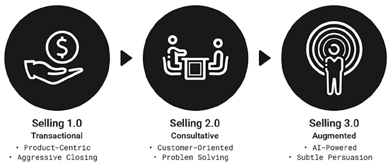
Hình 9.1: Sự Tiến hóa của Phương pháp Bán hàng.Hình 9.1: Sự Tiến hóa của Phương pháp Bán hàng (The Evolution of Selling Approach).
📖 Nội dung chi tiết trong Hình 9.1 (Sự Tiến hóa của Phương pháp Bán hàng — The Evolution of Selling Approach):
Bán hàng 1.0: Giao dịch (Selling 1.0: Transactional)
Bán hàng 2.0: Tư vấn (Selling 2.0: Consultative)
Bán hàng 3.0: Tăng cường (Selling 3.0: Augmented)
• Lấy sản phẩm làm trung tâm (Product-Centric) • Chốt đơn dồn ép quyết liệt (Aggressive Closing)
• Định hướng theo khách hàng (Customer-Oriented) • Giải quyết vấn đề (Problem Solving)
• Được trợ lực bởi AI (AI-Powered) • Thuyết phục tinh tế (Subtle Persuasion)
Ngày nay, sự bất cân xứng thông tin đó gần như đã biến mất. Khách hàng bước vào cuộc trò chuyện với hành trang thông tin đầy đủ sau khi đã tự tra cứu sản phẩm, so sánh các phương án thay thế và đọc kỹ đánh giá trên mạng. Kết quả là vai trò của bán hàng đã tiến hóa từ việc chỉ cung cấp thông tin sang dẫn dắt khách hàng đưa ra quyết định một cách tự tin.
Về bản chất, nghệ thuật bán hàng đã đi qua ba kỷ nguyên rõ rệt (Hình 9.1):
- Bán hàng 1.0 (Selling 1.0 — Bán hàng giao dịch / Transactional Selling): Tập trung thuần túy vào việc chốt đơn bằng mọi giá.
- Bán hàng 2.0 (Selling 2.0 — Bán hàng tư vấn / Consultative Selling): Đi sâu khám phá vấn đề của khách hàng và đề xuất giải pháp phù hợp.
- Bán hàng 3.0 (Selling 3.0 — Bán hàng tăng cường / Augmented Selling): Nơi người bán thực sự đặt mình vào vị trí của khách hàng, phản chiếu lại quá trình tự tìm hiểu của họ, nhận diện những nỗi lo âu phát sinh và chủ động hóa giải chúng với sự trợ lực của công nghệ AI và khoa học nhận thức.
Nếu như Bán hàng 1.0 đã lỗi thời và bị giới chuyên môn hiện đại loại bỏ, thì Bán hàng 2.0 vẫn giữ nguyên giá trị và trở thành tiêu chuẩn thực hành căn bản. Bán hàng 3.0 không xóa bỏ Bán hàng 2.0 mà kế thừa và nâng tầm nó lên một đẳng cấp mới.
Bán hàng 1.0: Bán hàng Giao dịch (Transactional Selling)
Trong quá khứ, hoạt động bán hàng mang nặng tính giao dịch một chiều, phản chiếu kỷ nguyên tiếp thị lấy sản phẩm làm trung tâm (Marketing 1.0). Trọng tâm là đẩy sản phẩm tới một danh sách khách hàng tiềm năng bất kể nhu cầu thực sự của họ là gì. Khách hàng khi ấy thường không có công cụ nào khác để kiểm chứng lời chào hàng, và người bán sử dụng các chiến thuật gây áp lực cao, dồn ép và đôi khi thao túng tâm lý, tự đặt mình vào vị trí chuyên gia biết rõ điều gì là tốt nhất cho khách hàng.
Phương pháp điển hình là gọi điện thoại chào hàng lạnh (cold calls) theo danh sách có sẵn, đọc các bài thuyết trình soạn sẵn theo kịch bản (scripted pitches), tự mình độc thoại dẫn dắt câu chuyện và dùng các chiêu trò gây sức ép để xử lý từ chối nhằm buộc khách hàng chốt đơn ngay.
Dù ngày nay đã lỗi thời, phong cách bán hàng đầy kịch tính này từng truyền cảm hứng cho nhiều tác phẩm văn hóa đại chúng kinh điển, chẳng hạn như vở kịch năm 1984 được chuyển thể thành bộ phim điện ảnh năm 1992 Glengarry Glen Ross — khắc họa những nhân viên môi giới bất động sản dùng đủ mọi mánh khóe để chốt hợp đồng và phổ biến câu khẩu hiệu nổi tiếng “ABC: Always Be Closing” (Luôn luôn phải chốt đơn); hay cuốn hồi ký và bộ phim Sói già Phố Wall (The Wolf of Wall Street) tái hiện lối bán hàng tấn công dồn dập của Jordan Belfort trên Phố Wall cuối thập niên 1980.
Ngày nay, cách tiếp cận này hoàn toàn phản tác dụng vì khách hàng đã nắm quyền chủ động. Email chào hàng lạnh bị bộ lọc đẩy thẳng vào hòm thư rác (spam), các cuộc gọi từ số lạ bị từ chối thẳng thừng, và khách hàng không còn sẵn lòng tiếp đón những người bán cố tình chào mời thứ họ không yêu cầu. Thay vì mở ra cơ hội, những chiến thuật xâm phạm này lập tức kích hoạt hàng rào phòng vệ tự động của não bộ trước cả khi cuộc trò chuyện kịp bắt đầu — thậm chí khách hàng bị làm phiền còn sẵn sàng chia sẻ trải nghiệm tồi tệ đó lên mạng xã hội, hủy hoại uy tín của thương hiệu.
Bán hàng 2.0: Bán hàng Tư vấn (Consultative Selling)
Ngày nay, hoạt động bán hàng đã dịch chuyển trọng tâm từ việc thuyết trình sản phẩm sang thấu hiểu nhu cầu khách hàng. Bán hàng tư vấn (Consultative selling) đã trở thành chuẩn mực nghề nghiệp, ưu tiên việc khám phá bài toán của khách hàng trước khi đưa ra giải pháp, phản chiếu triết lý tiếp thị lấy khách hàng làm trung tâm (Marketing 2.0).
Tác phẩm đặt nền móng kinh điển cho bán hàng tư vấn là cuốn SPIN Selling của Neil Rackham xuất bản vào cuối thập niên 1980. Từ viết tắt SPIN đại diện cho chuỗi bốn nhóm câu hỏi theo trình tự logic mà người bán sử dụng để dẫn dắt cuộc trò chuyện và làm sáng tỏ giá trị của giải pháp:
- Câu hỏi Tình huống (Situation questions): Thu thập thông tin bối cảnh hiện tại của khách hàng tiềm năng (ví dụ: “Hiện tại doanh nghiệp anh/chị đang sử dụng nhà cung cấp điện toán đám mây nào?”).
- Câu hỏi Vấn đề (Problem questions): Xác định những khó khăn hoặc điểm đau cụ thể mà khách hàng đang gặp phải (ví dụ: “Anh/chị có đang gặp trở ngại nào về khả năng mở rộng quy mô của hệ thống hiện tại không?”).
- Câu hỏi Hệ lụy (Implication questions): Khám phá những hậu quả sâu xa của các vấn đề đó, giúp khách hàng nhận thức rõ cái giá thực sự nếu không giải quyết (ví dụ: “Vấn đề tắc nghẽn đó ảnh hưởng như thế nào đến kế hoạch tăng trưởng của công ty trong năm tới?”).
- Câu hỏi Nhu cầu – Lợi ích (Need–payoff questions): Tập trung vào giá trị của việc giải quyết vấn đề, hướng dẫn chính khách hàng tự nói ra giải pháp sẽ mang lại tác động tích cực ra sao (ví dụ: “Nếu hệ thống đạt khả năng mở rộng linh hoạt hơn, điều đó sẽ giúp ích gì cho việc hoạch định kinh doanh của anh/chị?”).
Trong khi SPIN Selling cung cấp khung kỹ thuật đặt câu hỏi cho từng cuộc gặp riêng lẻ, thì hai tác giả Robert Miller và Stephen Heiman đã giới thiệu Phương pháp Bán hàng Miller–Heiman bao quát toàn bộ quy trình quản trị các thương vụ lớn và khách hàng trọng điểm (key accounts) thông qua hệ thống tài liệu sống (living documents) được cập nhật liên tục:
- Bảng Lam (Blue Sheet — Bán hàng chiến lược / Strategic Selling): Dùng để xác định các bên liên quan trong đơn vị ra quyết định mua (DMU), vai trò và mức độ ủng hộ của từng người, từ đó vạch ra chiến lược thúc đẩy thương vụ.
- Bảng Lục (Green Sheet — Bán hàng khái niệm / Conceptual Selling): Tập trung vào việc lập kế hoạch và thực thi từng cuộc gọi hoặc cuộc gặp bán hàng cụ thể, đảm bảo mọi buổi làm việc đều xoay quanh khách hàng.
- Bảng Vàng (Gold Sheet — Quy trình quản trị khách hàng lớn / LAMP – Large Account Management Process): Được thiết kế để quản trị và phát triển mối quan hệ đối tác chiến lược dài hạn với các khách hàng doanh nghiệp quy mô lớn.
Bán hàng 3.0: Bán hàng Tăng cường (Augmented Selling)
Bán hàng 3.0 (Selling 3.0) nâng tầm Bán hàng 2.0 bằng sức mạnh của trí tuệ nhân tạo (AI) và khoa học nhận thức (cognitive science). AI ngày càng thay thế các công cụ tìm kiếm truyền thống trong việc thu thập và tóm tắt thông tin doanh nghiệp, cho phép người bán chuẩn bị hồ sơ toàn diện (dossiers) về khách hàng tiềm năng chỉ trong chớp mắt, truy xuất lịch sử tương tác cũng như dữ liệu công khai, dự đoán nhu cầu, soạn thảo bản chào hàng cá nhân hóa và tự động hóa quản trị khách hàng tiềm năng.
Những công việc chuẩn bị từng ngốn hàng giờ đồng hồ nay được tinh giản tối đa, giải phóng đội ngũ bán hàng để tập trung toàn lực cho chính cuộc gặp trực tiếp với khách hàng. Hơn nữa, AI còn đóng vai trò là người bạn tập đóng vai (role-playing simulations), giúp nhân viên bán hàng diễn tập trước các tình huống đối thoại khó, mài sắc thông điệp và củng cố sự tự tin trước khi bước vào phòng họp thật — tính năng đã được các nền tảng CRM hàng đầu như Salesforce và HubSpot tích hợp sâu.
Về mặt tâm lý, Bán hàng 3.0 áp dụng phương pháp tiếp cận lấy tâm trí làm trung tâm tinh tế hơn nhiều, kế thừa từ các công trình nghiên cứu hành vi kinh điển:
- Cuốn Influence (Những đòn tâm lý trong thuyết phục) và Pre-suasion (Thuật thao túng tiền thuyết phục) của Robert Cialdini chỉ ra rằng phần lớn sức ảnh hưởng diễn ra trước cả khi cuộc trò chuyện chính thức bắt đầu: bằng cách định hướng sự chú ý của khách hàng tiềm năng từ trước (chẳng hạn gửi trước một báo cáo phân tích ngành sâu sắc trước buổi hẹn), người bán đã “mồi” (prime) tâm trí khách hàng nhìn nhận mình như một chuyên gia đáng tin cậy.
- Trong cuốn To Sell Is Human, Daniel Pink gọi bán hàng hiện đại là nghệ thuật lay động con người (moving people) thông qua bộ nguyên tắc ABC mới: Sự đồng điệu (Attunement) — thấu hiểu góc nhìn của khách hàng; Sự kiên cường (Buoyancy) — khả năng giữ vững tinh thần lạc quan trước lời từ chối; và Sự sáng rõ (Clarity) — kỹ năng giúp khách hàng nhận diện ra những vấn đề mà trước đó chính họ cũng chưa nhìn thấy.
- Khái niệm Cú hích (Nudge) của hai nhà kinh tế học hành vi Richard Thaler và Cass Sunstein nhấn mạnh việc điều chỉnh kiến trúc lựa chọn một cách tinh tế thay vì ép buộc — ví dụ như đánh dấu gói sản phẩm “Được lựa chọn nhiều nhất” để dẫn dắt quyết định của khách hàng một cách tự nhiên mà vẫn tôn trọng quyền tự quyết của họ.
Bán hàng 3.0 kết hợp tư duy tư vấn của Bán hàng 2.0 với khả năng chuẩn bị siêu việt của AI và sự tinh tế của tâm lý học hành vi. Người bán không còn chỉ là người cung cấp thông tin hay tư vấn giải pháp, mà trở thành đối tác chiến lược dùng công nghệ để thấu hiểu sâu sắc khách hàng và dùng sự thấu hiểu nhận thức để dẫn dắt họ đi tới quyết định đôi bên cùng có lợi.
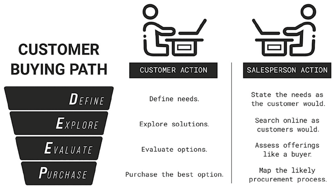
Hình 9.2: Phản chiếu Hành trình Mua hàng của Khách hàng.Hình 9.2: Phản chiếu Hành trình Mua hàng của Khách hàng (Mirroring the Customer Buying Path).
📖 Nội dung chi tiết trong Hình 9.2 (Phản chiếu Hành trình Mua hàng DEEP của Khách hàng — Mirroring the Customer Buying Path):
Giai đoạn trong Hành trình DEEP (Customer Buying Path)
Hành động của Khách hàng (Customer Action)
Hành động Phản chiếu của Người bán (Salesperson Action)
D – DEFINE (Xác định nhu cầu)
Xác định các nhu cầu (Define needs.)
Diễn đạt lại nhu cầu theo đúng ngôn từ của khách hàng (State the needs as the customer would.)
E – EXPLORE (Khám phá giải pháp)
Khám phá các giải pháp (Explore solutions.)
Tìm kiếm trực tuyến giống hệt như cách khách hàng tìm kiếm (Search online as customers would.)
E – EVALUATE (Đánh giá phương án)
Đánh giá các lựa chọn (Evaluate options.)
Thẩm định và so sánh các gói chào hàng dưới góc nhìn của người mua (Assess offerings like a buyer.)
P – PURCHASE (Mua hàng)
Mua lựa chọn tốt nhất (Purchase the best option.)
Lập bản đồ quy trình phê duyệt mua sắm dự kiến của khách hàng (Map the likely procurement process.)
Chuẩn bị Nền tảng Trước Cuộc gặp: Phản chiếu Hành trình DEEP (Laying the Groundwork)
Kỳ vọng của khách hàng ngày nay rất cao: cũng giống như việc họ tự nghiên cứu kỹ về nhà cung cấp trước khi gặp, họ kỳ vọng nhân viên bán hàng phải “làm bài tập về nhà” đầy đủ và nắm rõ những thách thức kinh doanh đặc thù của họ trước khi bước vào cuộc họp.
Các chuyên gia bán hàng có thể chuẩn bị hiệu quả bằng cách phản chiếu đúng hành trình mua hàng (mirroring the buying process) mà khách hàng đi qua (Hình 9.2) thông qua mô hình viết tắt DEEP: Xác định nhu cầu (Define) → Khám phá giải pháp (Explore) → Đánh giá lựa chọn (Evaluate) → Mua hàng (Purchase). Khung mô hình này áp dụng hiệu quả cho cả B2B lẫn B2C:
1. Thấu hiểu Hành trình Mua hàng DEEP của Khách hàng
Trong B2B: Khách hàng bắt đầu bằng việc Xác định nhu cầu (Define) khi phát hiện một vấn đề ảnh hưởng đến hiệu suất công ty (như chi phí vận hành tăng cao hay hệ thống lỗi thời) và chính thức hóa nhu cầu mua sắm nội bộ. Tiếp đó, họ Khám phá giải pháp (Explore) bằng cách tra cứu nhà cung cấp trên mạng, đọc sách trắng (white papers), dự hội thảo trực tuyến (webinars) và gửi yêu cầu chào giá (RFP) tới danh sách rút gọn — đây thường là thời điểm tiếp xúc đầu tiên với nhân viên bán hàng. Sang bước Đánh giá (Evaluate), họ thẩm định kỹ thuật, kiểm tra đơn vị tham chiếu (references), so sánh giá cả, tính tuân thủ và dịch vụ hậu mãi qua nhiều cuộc họp nội bộ. Cuối cùng ở bước Mua hàng (Purchase), họ xin phê duyệt từ cấp có thẩm quyền, đàm phán điều khoản hợp đồng qua bộ phận mua hàng và lên kế hoạch triển khai tích hợp.
Trong B2C: Khách hàng Xác định nhu cầu (Define) ở cấp độ cá nhân (như thay thiết bị gia dụng hỏng hoặc mua đồ dự tiệc); sau đó Khám phá (Explore) qua tìm kiếm trực tuyến, lướt sàn thương mại điện tử, ghé cửa hàng vật lý hoặc hỏi ý kiến bạn bè; tiếp đến Đánh giá (Evaluate) bằng cách cân nhắc giá cả, chất lượng, đọc bình luận hoặc xem video so sánh; và cuối cùng Mua hàng (Purchase) trực tuyến hoặc tại quầy.
2. Chuẩn bị Bằng cách Phản chiếu Hành trình DEEP (Mirror the DEEP Journey)
Để chuẩn bị hoàn hảo trước khi gặp khách hàng, người bán phải thực hiện bốn bước phản chiếu tương ứng:
1. Phản chiếu bước Define — Viết lại tuyên bố vấn đề bằng chính ngôn từ của khách hàng: Nghiên cứu kỹ trang web, báo cáo thường niên, tin tức mới nhất hoặc cập nhật LinkedIn của khách hàng, đồng thời đọc các đánh giá trực tuyến để biết khách hàng từng hài lòng hay phàn nàn điều gì. Mục đích là thấu cảm trọn vẹn với mục tiêu và thách thức của họ trước khi bước vào phòng họp.
2. Phản chiếu bước Explore — Thực hiện chính xác các truy vấn tìm kiếm như khách hàng: Gõ đúng các từ khóa mà khách hàng có thể dùng trên Google hoặc AI, duyệt qua danh bạ nhà cung cấp, xem trang web của các đối thủ cạnh tranh và nội dung mạng xã hội liên quan. Bằng cách này, người bán nhìn thấy chính xác những gì khách hàng đang nhìn thấy, hiểu rõ đối thủ đang tự định vị ra sao để chuẩn bị điểm khác biệt hóa sắc bén nhất cho buổi gặp.
3. Phản chiếu bước Evaluate — Lập bảng so sánh giải pháp của mình với đối thủ: Chủ động lập bảng đối chiếu làm nổi bật thế mạnh của mình, thẳng thắn nhìn nhận các điểm hạn chế và ghi chú những băn khoăn điển hình của khách hàng, từ đó dự đoán trước bộ tiêu chí đánh giá và chuẩn bị sẵn bằng chứng thuyết phục (proof points).
4. Phản chiếu bước Purchase — Lập bản đồ quy trình phê duyệt mua sắm của khách hàng: Xác định trước các vai trò trong DMU và nhận diện những điểm nghẽn phê duyệt tiềm ẩn (approval bottlenecks) nhằm chuẩn bị sẵn lộ trình hướng dẫn bước tiếp theo rõ ràng, gỡ bỏ mọi ma sát có thể làm chậm tiến độ ký kết.
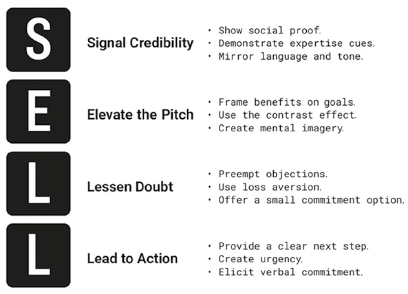
Hình 9.3: Kỹ thuật Bán hàng SELL.Hình 9.3: Kỹ thuật Bán hàng SELL (The SELL Technique).
📖 Nội dung chi tiết trong Hình 9.3 (Kỹ thuật Thuyết phục Tinh tế SELL — The SELL Technique):
Bước trong Kỹ thuật SELL
Các Chiến thuật Thực thi Cụ thể (Tactics)
S – Signal Credibility (Phát tín hiệu uy tín)
• Đưa ra bằng chứng xã hội (Show social proof.) • Thể hiện các tín hiệu chuyên môn sâu (Demonstrate expertise cues.) • Phản chiếu đồng điệu ngôn từ và tông giọng của khách hàng (Mirror language and tone.)
E – Elevate the Pitch (Nâng tầm bài thuyết trình)
• Đóng khung lợi ích xoay quanh mục tiêu của khách hàng (Frame benefits on goals.) • Sử dụng hiệu ứng tương phản (Use the contrast effect.) • Khơi gợi hình ảnh liên tưởng sống động trong tâm trí (Create mental imagery.)
L – Lessen Doubt (Giảm thiểu sự nghi ngờ)
• Chủ động hóa giải trước các băn khoăn/từ chối (Preempt objections.) • Vận dụng tâm lý ác cảm mất mát (Use loss aversion.) • Đề xuất phương án cam kết nhỏ, rủi ro thấp (Offer a small commitment option.)
L – Lead to Action (Dẫn dắt tới hành động)
• Đưa ra bước tiếp theo rõ ràng, dễ thực hiện (Provide a clear next step.) • Tạo cảm giác cấp bách hợp lý (Create urgency.) • Khơi gợi sự cam kết bằng lời nói từ khách hàng (Elicit verbal commitment.)
Thực thi Bán hàng: Kỹ thuật Thuyết phục Tinh tế SELL (Doing the Selling)
Sau khi đã chuẩn bị kỹ lưỡng bằng cách phản chiếu hành trình mua hàng qua mô hình DEEP, bước tiếp theo trong cuộc gặp trực tiếp là vận dụng nghệ thuật thuyết phục tinh tế để dẫn dắt khách hàng tới quyết định. Kỹ thuật SELL cung cấp một quy trình bốn bước dễ nhớ và bám sát khoa học não bộ: Phát tín hiệu uy tín (Signal credibility) → Nâng tầm bài thuyết trình (Elevate the pitch) → Giảm thiểu nghi ngờ (Lessen doubt) → Dẫn dắt hành động (Lead to action) (Hình 9.3).
Bước 1 — Phát Tín hiệu Uy tín (Signal Credibility)
Bước đầu tiên trong SELL là phát đi tín hiệu uy tín. Niềm tin là nền tảng của mọi quyết định mua hàng; thiếu đi niềm tin, ngay cả bài thuyết trình hùng hồn nhất cũng cầm chắc thất bại. Hầu hết khách hàng bước vào cuộc trò chuyện bán hàng với tâm thế cảnh giác nhất định, bản năng của họ lập tức quét tìm các tín hiệu xem người bán và gói chào hàng có đáng tin hay không thông qua ba lối tắt tư duy:
- Bằng chứng xã hội (Social proof): Một trong những tín hiệu uy tín mạnh nhất. Khi người bán chia sẻ danh sách các khách hàng tương tự đã triển khai thành công, lời chứng thực, số liệu sử dụng thực tế hoặc giải thưởng ngành, bộ não khách hàng vô thức suy luận rằng lựa chọn này là an toàn.
- Thiên kiến uy quyền (Authority bias) đi kèm Sự ấm áp (Warmth): Con người có xu hướng tự nhiên tin tưởng những người có chuyên môn sâu (chứng chỉ, kinh nghiệm thực chiến, bề dày thành tích). Tuy nhiên, nghiên cứu tâm lý học chỉ ra rằng sự ấm áp chân thành luôn phải đi trước năng lực chuyên môn (warmth precedes competence) khi xây dựng lòng tin: khách hàng cần cảm nhận được thiện chí chân thật của người bán trước khi họ đánh giá cao tài năng của người đó. Khi uy tín chuyên môn được truyền tảiด้วย sự khiêm tốn và đặt trong sự thấu hiểu nhu cầu của khách hàng, niềm tin sẽ nảy nở dễ dàng hơn nhiều.
- Phản chiếu ngôn ngữ tạo Thiên kiến tin tưởng nội nhóm (Mirroring & In-group trust bias): Khi người bán điều chỉnh từ vựng, tông giọng và nhịp điệu nói chuyện đồng điệu với khách hàng, bộ não khách hàng sẽ cảm nhận được sự tương đồng như “người cùng một nhà”. Việc sử dụng đúng thuật ngữ nội bộ mà khách hàng dùng khi bàn về mục tiêu của họ phát đi tín hiệu mạnh mẽ rằng thế giới của họ đã được thấu hiểu trọn vẹn.
Bước 2 — Nâng tầm Bài thuyết trình (Elevate the Pitch)
Sau khi đã xác lập được chữ tín, bước thứ hai là nâng tầm bài thuyết trình — chuyển từ việc liệt kê tính năng khô khan sang kiến tạo một thông điệp giàu ý nghĩa đối với khách hàng. Khoa học nhận thức chỉ ra rằng con người có động lực mạnh mẽ hơn hẳn khi lợi ích được đóng khung ngay trong bối cảnh riêng của họ, đồng thời thông tin càng giản dị, dễ xử lý (processing fluency) thì càng đáng tin và thuyết phục:
- Đóng khung lợi ích bằng ngôn ngữ mục tiêu của khách hàng: Kết nối trực tiếp từng tính năng sản phẩm với một mục tiêu cụ thể hoặc một điểm đau mà khách hàng đang trăn trở.
- Sử dụng Hiệu ứng tương phản (Contrast effect): Khách hàng luôn đánh giá giá trị thông qua sự so sánh. Khi làm nổi bật khoảng cách giữa tình trạng hiện tại (những chi phí đang bị thất thoát mỗi ngày) với kết quả cải thiện vượt bậc mà giải pháp mới mang lại, lợi ích của gói chào hàng sẽ trở nên rõ nét và có sức nặng hơn gấp bội.
- Kích hoạt Hình ảnh tâm trí (Mental imagery): Khi khách hàng tự hình dung cảnh bản thân đang sử dụng giải pháp mới trong công việc hàng ngày, bộ não của họ phản ứng gần như thể họ đang trải nghiệm điều đó thật. Việc đặt những câu hỏi gợi mở — chẳng hạn “Quy trình làm việc mỗi sáng của đội ngũ anh/chị sẽ thay đổi ra sao khi khâu báo cáo này được tự động hóa hoàn toàn?” — giúp lợi ích trở nên hữu hình và sống động ngay trước mắt.
Bước 3 — Giảm thiểu Nghi ngờ (Lessen Doubt)
Bước thứ ba trong SELL là hóa giải và giảm thiểu sự nghi ngờ. Ngay cả khi khách hàng đã nhìn thấy rõ giá trị của gói chào hàng, sự ngập ngừng thường vẫn còn đọng lại — bắt nguồn từ nỗi sợ tiềm ẩn về việc chọn sai hoặc gặp rắc rối phát sinh sau khi mua. Quyết định mua hàng chịu sự chi phối của mong muốn né tránh mất mát mạnh không kém gì kỳ vọng đạt được lợi ích:
- Chủ động giải đáp các băn khoăn phổ biến trước khi khách hàng kịp nói ra (Preempting objections): Khi người bán chủ động nêu lên và giải quyết trọn vẹn những mối lo thường gặp (chẳng hạn giải thích rõ giải pháp tích hợp mượt mà với hệ thống cũ như thế nào trước cả khi khách hỏi), sự lo âu của khách hàng được xoa dịu ngay lập tức, ngăn không cho mối bận tâm ngầm phát triển thành sự kháng cự.
- Khai thác Nguyên lý Ác cảm mất mát (Loss aversion): Vì con người sợ mất mát hơn là thích nhận phần thưởng tương đương, việc chỉ rõ những gì khách hàng có nguy cơ đánh mất nếu trì hoãn hành động — chẳng hạn như bị đối thủ cạnh tranh bỏ xa hoặc tiếp tục chịu khoản lỗ vận hành mỗi tháng — sẽ tạo ra động lực cấp bách để tiến về phía trước.
- Đề xuất các cam kết nhỏ, rủi ro thấp (Small, low-risk commitments): Trao cho khách hàng lựa chọn bắt đầu bằng một bản dùng thử (pilot/trial) hoặc hợp đồng quy mô nhỏ có điều khoản linh hoạt giúp quyết định trở nên an toàn hơn hẳn. Một khi đã gật đầu với bước đi nhỏ đầu tiên, tâm lý nhất quán sẽ giúp họ dễ dàng tiến tới hợp đồng lớn sau đó.
Bước 4 — Dẫn dắt Hành động (Lead to Action)
Bước cuối cùng trong SELL là dẫn dắt khách hàng tới hành động chốt đơn. Ngay cả khi khách hàng đã tin tưởng người bán, thấy rõ giá trị và giải tỏa xong các nghi ngờ, nhiều người vẫn chần chừ ở giây phút quyết định cuối cùng đơn giản vì không biết rõ bước tiếp theo mình cần làm cụ thể là gì:
- Đưa ra lộ trình bước tiếp theo cực kỳ rõ ràng (Clear next steps): Khi khách hàng biết chính xác hành động tiếp theo cần làm là gì — dù là ký biên bản ghi nhớ hay sắp xếp buổi duyệt ngân sách nội bộ — tải trọng nhận thức của họ được giải tỏa hoàn toàn. Hướng dẫn càng đơn giản, trực diện thì tỷ lệ hành động càng cao.
- Tạo cảm giác cấp bách hợp lý (Sense of urgency): Giúp khách hàng thấy rõ vì sao việc triển khai ngay lúc này lại mang về lợi ích tốt nhất cho họ (ví dụ kịp đón mùa cao điểm kinh doanh sắp tới hoặc hưởng chính sách ưu đãi theo quý).
- Khơi gợi sự cam kết bằng lời nói để kích hoạt Nguyên lý Nhất quán (Verbal commitment & Consistency principle): Đặt những câu hỏi xác nhận nhẹ nhàng như “Anh/chị có thấy giải pháp này khớp với định hướng quý tới của phòng mình không?”. Khi khách hàng tự nói ra lời khẳng định và lý do ủng hộ, nguyên lý nhất quán (consistency principle) trong tâm lý học sẽ thúc đẩy họ hành động nhất quán với những gì chính miệng họ vừa tuyên bố.
Tóm tắt Chương 9
Ngày nay, trong hầu hết mọi ngành hàng, khách hàng đều tự nghiên cứu trực tuyến kỹ lưỡng trước khi mua sắm. Khi họ tìm gặp nhân viên bán hàng, đó thường là vì họ vẫn còn những nỗi lo âu, băn khoăn chưa được giải tỏa trước quyết định cuối cùng.
Cách thức người bán hóa giải những nỗi bất an này định nghĩa nên phương pháp bán hàng hiện đại: tiến hóa từ Bán hàng 1.0 (Bán hàng giao dịch) sang Bán hàng 2.0 (Bán hàng tư vấn — SPIN, Miller–Heiman) và vươn tới Bán hàng 3.0 (Bán hàng tăng cường — Augmented Selling) kết hợp sức mạnh chuẩn bị của AI với sự tinh tế của khoa học hành vi.
Bằng cách phản chiếu hành trình mua hàng của khách hàng thông qua khung DEEP (Xác định nhu cầu – Khám phá giải pháp – Đánh giá lựa chọn – Mua hàng), người bán có thể chuẩn bị toàn diện và thấu cảm sâu sắc với những trăn trở của khách hàng trước khi bước vào cuộc gặp.
Trong cuộc trò chuyện bán hàng, kỹ thuật SELL (Phát tín hiệu uy tín – Nâng tầm bài thuyết trình – Giảm thiểu nghi ngờ – Dẫn dắt hành động) giúp người bán từng bước xây dựng lòng tin, làm nổi bật giá trị bằng ngôn ngữ của khách hàng, xóa bỏ cảm giác rủi ro và đưa khách hàng cán đích quyết định mua sắm với sự tự tin trọn vẹn.
Câu hỏi Suy ngẫm
Trong các cuộc trò chuyện bán hàng gần đây nhất, bạn đã phát tín hiệu uy tín (signal credibility) như thế nào trong những phút đầu tiên?
Bạn có đang đóng khung bài thuyết trình của mình bằng chính ngôn từ và mục tiêu của khách hàng để nâng tầm mức độ liên quan chưa?
Đâu là những nỗi lo ngầm ẩn mà khách hàng của bạn thường giữ trong lòng, và hiện bạn đang làm gì để chủ động hóa giải chúng trước cả khi họ kịp nói ra?
Ở hầu hết các nhà hàng, cảnh khách phải xếp hàng chờ đợi dài dằng dặc là một điểm trừ lớn. Nhưng tại Haidilao, thời gian chờ đợi lại trở thành một phần đáng mong chờ của trải nghiệm. Chuỗi lẩu trứ danh Trung Quốc này — hiện đã mở rộng khắp nước Mỹ và nhiều quốc gia trên thế giới — đã biến việc ngồi đợi bàn thành một trải nghiệm chiều chuộng khách hàng hết mực: phục vụ làm móng tay (manicure) miễn phí, đánh giày miễn phí, mát-xa vai cổ, đồ ăn nhẹ và thậm chí có cả phòng vui chơi riêng có bảo mẫu trông nom cho trẻ nhỏ. Khoảng thời gian lẽ ra đầy mệt mỏi, sốt ruột bỗng chốc biến thành màn dạo đầu đầy thư giãn.
Khi khách đã vào bàn, trải nghiệm đặc sắc tiếp tục nối dài. Nồi lẩu nghi ngút khói vốn đã gắn kết mọi người lại gần nhau, nhưng điều thực sự làm nên sự khác biệt của Haidilao chính là các màn trình diễn nghệ thuật sống động ngay tại bàn ăn: thực khách thích thú ngắm nhìn nhân viên múa mì tươi điêu luyện như một vũ công hay trầm trồ trước nghệ thuật biến diện (đổi mặt nạ) truyền thống của Kinh kịch Tứ Xuyên.
Không chỉ các tiết mục giải trí được dàn dựng công phu mà quy trình phục vụ cũng chuẩn xác đến từng chi tiết. Thực khách gọi món qua máy tính bảng trực quan, dễ dàng tùy chỉnh khẩu vị nước lẩu và nhận đồ ăn nhanh chóng. Đội ngũ nhân viên di chuyển thoăn thoắt và luôn đoán trước nhu cầu của khách: đồ nhúng được mang ra kịp thời và nước lẩu được châm thêm liên tục mà khách chưa cần phải lên tiếng gọi.
Haidilao đã làm chủ nghệ thuật biến những bước phục vụ thường nhật thành những khoảnh khắc đáng nhớ. Một bữa lẩu xét về mặt sản phẩm đơn thuần có thể dễ dàng bị sao chép và khó tạo sự khác biệt; nhưng Haidilao chọn cạnh tranh ở nơi quan trọng hơn nhiều: trải nghiệm khách hàng (customer experience). Hãng tạo ra giá trị cảm xúc độc bản mà các đối thủ rất khó bắt chước.
Câu chuyện của Haidilao cho thấy khách hàng không chỉ muốn sự nhanh chóng; họ muốn tận hưởng trọn vẹn khoảng thời gian mình bỏ ra. Đúng như hai tác giả Joseph Pine và James Gilmore từng đúc kết: Một dịch vụ tốt giúp tiết kiệm thời gian (time saved), nhưng một trải nghiệm xuất sắc khiến thời gian trôi qua thật xứng đáng (time well spent).
Mệnh lệnh Sống còn về Trải nghiệm Khách hàng (Customer Experience Imperative)
Trong cuốn sách kinh điển Nền kinh tế Trải nghiệm (The Experience Economy), Pine và Gilmore đã phác họa bậc thang tiến hóa của giá trị kinh tế, chỉ ra cách doanh nghiệp dịch chuyển từ những gói chào hàng giá trị thấp lên những nấc thang khác biệt hóa cao hơn:
1. Khởi đầu là Hàng hóa thô / Nguyên liệu (Commodities) — được giao dịch thuần túy dựa trên giá cả thị trường.
2. Tiếp đến là Sản phẩm chế biến (Goods) — những hàng hóa có giá trị gia tăng được sản xuất từ nguyên liệu thô.
3. Nấc thứ ba là Dịch vụ (Services) — mang lại sự tiện lợi cho khách hàng. Tuy nhiên, dù đã gia tăng giá trị đáng kể, cả sản phẩm lẫn dịch vụ ngày nay đều rất dễ rơi vào bẫy cạnh tranh về giá.
4. Để vươn lên thoát khỏi sự đồng질 hóa (commoditization), doanh nghiệp phải dàn dựng và kiến tạo Trải nghiệm (Experiences) — những tương tác đáng nhớ để lại ấn tượng sâu đậm trong tâm trí.
5. Và ở tầng cao nhất là Sự chuyển hóa (Transformations) — nơi gói chào hàng tạo ra sự thay đổi tích cực bền vững trong hành vi và cuộc sống của khách hàng. Khi hàng hóa và dịch vụ ngày càng dễ bị sao chép, lợi thế cạnh tranh bền vững nhất nằm ở việc mang lại tối thiểu một trải nghiệm khách hàng xuất sắc.
Sự dịch chuyển hướng tới trải nghiệm này phản ánh bước tiến hóa trong hành vi tiêu dùng. Khi con người ngày càng tinh tường hơn, họ tìm kiếm giá trị không chỉ ở bản thân món đồ mua về mà ở cảm giác món đồ đó mang lại và cách nó hòa nhập vào cuộc sống của họ.
Thực vậy, như đã phân tích ở các chương trước, xu hướng chi tiêu ngày càng phân cực rõ rệt: người tiêu dùng hạ cấp chi tiêu (trade down) đối với các sản phẩm và dịch vụ đại trà, nhưng sẵn sàng nâng cấp chi tiêu (trade up) cho những trải nghiệm giàu ý nghĩa. Các sản phẩm thuần công nghệ phát đi tín hiệu về hiệu suất và sự tự động hóa — thứ thường đi kèm kỳ vọng của khách hàng về mức giá ngày càng rẻ hơn. Ngược lại, dấu ấn con người (human touch) ngày càng được nhìn nhận như một thứ xa xỉ phẩm cao cấp (premium) hoàn toàn xứng đáng để chi trả nhiều tiền hơn.
Hãy nhìn vào bài học của Starbucks. Trong nỗ lực tối ưu hóa tính năng đặt hàng qua ứng dụng di động (mobile orders), thương hiệu này đã vô tình hy sinh phần lớn trải nghiệm tại cửa hàng — thứ vốn là linh hồn tạo nên sức hút văn hóa cà phê của hãng. Điều này đặc biệt đáng suy ngẫm bởi Starbucks từng là biểu tượng mẫu mực về trải nghiệm khách hàng: hãng không chỉ bán cà phê mà bán “không gian thứ ba” (third place) ấm cúng nằm giữa ngôi nhà và nơi làm việc để con người thư giãn, trò chuyện.
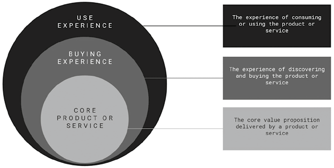
Hình 10.1: Tăng cường Sản phẩm và Dịch vụ Cốt lõi bằng Trải nghiệm.Hình 10.1: Tăng cường Sản phẩm và Dịch vụ Cốt lõi bằng Trải nghiệm (Augmenting Core Products and Services).
📖 Nội dung chi tiết trong Hình 10.1 (Tăng cường Sản phẩm và Dịch vụ Cốt lõi bằng Trải nghiệm — Augmenting Core Products and Services):
Lớp Vòng tròn (Từ trong ra ngoài)
Mô tả Vai trò (Description)
1. Sản phẩm hoặc Dịch vụ Cốt lõi (Core Product or Service)
Tuyên bố giá trị cốt lõi được phân phối bởi bản thân sản phẩm hoặc dịch vụ (The core value proposition delivered by a product or service).
2. Trải nghiệm Mua hàng (Buying Experience)
Trải nghiệm khám phá và mua sản phẩm hoặc dịch vụ (The experience of discovering and buying the product or service).
3. Trải nghiệm Sử dụng (Use Experience)
Trải nghiệm tiêu dùng hoặc sử dụng sản phẩm hoặc dịch vụ (The experience of consuming or using the product or service).
Tầm nhìn nguyên bản gắn liền với bầu không khí quán và sự tương tác cá nhân hóa từng là trụ cột đưa Starbucks trở thành thương hiệu cao cấp. Thế nhưng khi đơn hàng qua điện thoại chiếm lĩnh, nhiều cửa hàng Starbucks biến thành những trạm giao nhận đồ uống ồn ào, hối hả. Các nghệ nhân pha chế (baristas) — vốn từng được đào tạo để trò chuyện thân tình với khách — nay phải cắm cúi chạy đua làm đơn hàng trực tuyến. Đối với nhiều khách hàng trung thành, sợi dây gắn kết cảm xúc đã phai nhạt dần: vì quá mải miết chạy theo hiệu suất tốc độ, Starbucks đã trôi dạt rời xa chính trải nghiệm từng làm nên tên tuổi lẫy lừng của mình.
Đối với các thương hiệu theo đuổi chiến lược cao cấp hóa (premiumization), trải nghiệm khách hàng — đặc biệt là những trải nghiệm giàu hơi ấm con người — là điều kiện sống còn. Người làm tiếp thị cần tập trung bao bọc và nâng tầm sản phẩm/dịch vụ cốt lõi bằng hai lớp trải nghiệm giúp gia tăng mạnh mẽ giá trị cảm nhận: Trải nghiệm Mua hàng (Buying Experience) và Trải nghiệm Sử dụng (Use/Usage Experience) (Hình 10.1):
- Trải nghiệm mua hàng (Buying experience): Thiết lập tông giọng cảm xúc trước cả khi khách hàng sở hữu sản phẩm. Một lời chào nồng hậu, giao diện ứng dụng mượt mà hay hộp bao bì đóng gói tinh tế có thể nâng tầm một sản phẩm cơ bản thành một món quà đặc biệt, khơi dậy sự háo hức mong chờ (anticipation).
- Trải nghiệm sử dụng (Use experience): Dệt sản phẩm vào câu chuyện đời sống cá nhân của khách hàng. Cách sản phẩm hiện diện trong sinh hoạt hàng ngày trở thành một phần ý nghĩa của nó, xây dựng thói quen tích cực, nuôi dưỡng lòng trung thành và thôi thúc khách hàng giới thiệu cho người khác.
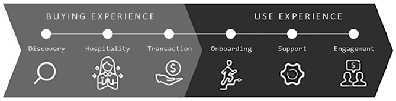
Hình 10.2: Bản đồ Trải nghiệm Khách hàng.Hình 10.2: Bản đồ Trải nghiệm Khách hàng (Customer Experience Map).
📖 Nội dung chi tiết trong Hình 10.2 (Bản đồ Trải nghiệm Khách hàng 6 Bước — Customer Experience Map):
Nửa đầu: Trải nghiệm Mua hàng (Buying Experience)
Nửa sau: Trải nghiệm Sử dụng (Use Experience)
1. Khám phá (Discovery) → 2. Đón tiếp / Hiếu khách (Hospitality) → 3. Giao dịch (Transaction)
4. Làm quen ban đầu (Onboarding) → 5. Hỗ trợ (Support) → 6. Gắn kết (Engagement)
Lập Bản đồ Trải nghiệm Khách hàng (Mapping the Customer Experience)
Để thiết kế trải nghiệm mua hàng và trải nghiệm sử dụng hiệu quả, người làm tiếp thị phải bắt đầu bằng việc lập bản đồ hành trình trải nghiệm tổng thể (Hình 10.2). Nhìn chung, trải nghiệm khách hàng mở ra qua sáu bước chính (6 điểm chạm) trải đều trên hai nửa hành trình:
Ba điểm chạm thuộc Trải nghiệm Mua hàng (Buying Experience): Bắt đầu từ khoảnh khắc khách hàng lần đầu tiếp xúc với thương hiệu cho đến lúc hoàn tất thanh toán:
- Khám phá (Discovery): Giai đoạn khách hàng lần đầu bắt gặp thương hiệu khi đang tìm hiểu và so sánh các phương án sản phẩm.
- Đón tiếp / Hiếu khách (Hospitality): Những khoảnh khắc nhân viên đại diện thương hiệu (nhân viên cửa hàng hoặc tư vấn viên trực tuyến) chào đón và hỗ trợ khách hàng.
- Giao dịch (Transaction): Thời điểm cam kết chính thức khi khách hàng thanh toán và nhận sản phẩm hoặc dịch vụ.
Ba điểm chạm thuộc Trải nghiệm Sử dụng (Usage Experience): Bắt đầu ngay khi khách hàng đưa sản phẩm vào sử dụng — giai đoạn quyết định việc hiện thực hóa lời hứa thương hiệu và xây dựng sự hài lòng dài hạn:
- Làm quen ban đầu (Onboarding): Giai đoạn khách hàng lần đầu sử dụng sản phẩm/dịch vụ, học cách vận hành và mở khóa những giá trị đầu tiên của nó.
- Hỗ trợ (Support): Những khoảnh khắc khách hàng cần trợ giúp để xử lý sự cố kỹ thuật, giải đáp thắc mắc hoặc đổi trả.
- Gắn kết (Engagement): Các tương tác duy trì liên tục sau lần sử dụng đầu tiên nhằm giữ cho thương hiệu luôn mới mẻ và gần gũi — như hỏi thăm sau bán, chương trình khách hàng thân thiết hoặc nội dung cá nhân hóa.
Bản đồ trải nghiệm 6 bước này áp dụng linh hoạt cho mọi ngành nghề — từ sản phẩm vật lý đến dịch vụ vô hình — trên cả kênh truyền thống lẫn kênh kỹ thuật số (Hình 10.3):
- Tại siêu thị tạp hóa vật lý: Hành trình bắt đầu từ Khám phá (xem tờ rơi khuyến mãi và bước vào cửa hàng); Đón tiếp (nhân viên mỉm cười chào hỏi, mời dùng thử sản phẩm); Giao dịch (chọn hàng và thanh toán nhanh tại quầy tự phục vụ); Làm quen ban đầu (mang thực phẩm về nhà chế biến và kiểm tra độ tươi ngon); Hỗ trợ (đổi trả hoặc hoàn tiền nếu phát hiện thực phẩm bị hỏng); và Gắn kết (nhận ưu đãi thẻ thành viên và lời nhắc mua sắm định kỳ).
- Trong ngân hàng số (Digital banking): Bắt đầu từ Khám phá (thấy quảng cáo trên TikTok và quan tâm đến dịch vụ); Đón tiếp (chatbot thân thiện chào đón và giải đáp thắc mắc khi mở tài khoản); Giao dịch (đăng ký mở tài khoản trực tiếp ngay trên ứng dụng); Làm quen ban đầu (hướng dẫn trực quan từng bước sử dụng các tính năng chuyển tiền, tiết kiệm); Hỗ trợ (nhắn tin hỗ trợ trực tuyến khi giao dịch bị lỗi); và Gắn kết (nhận báo cáo tổng kết chi tiêu hàng tháng kèm mẹo quản lý tài chính cá nhân hóa).
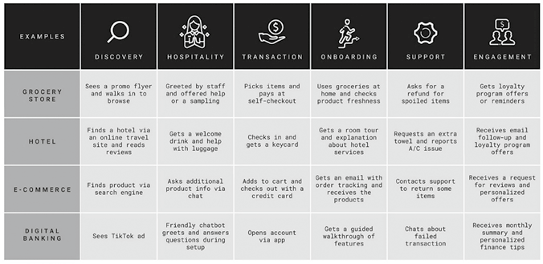
Hình 10.3: Ví dụ về Hành trình Trải nghiệm Khách hàng.Hình 10.3: Ví dụ về Hành trình Trải nghiệm Khách hàng (Examples of Customer Experience Journey).
📖 Nội dung chi tiết trong Hình 10.3 (Ví dụ về Hành trình Trải nghiệm Khách hàng qua 4 Ngành hàng):
Ngành hàng (Examples)
1. Khám phá (Discovery)
2. Đón tiếp (Hospitality)
3. Giao dịch (Transaction)
4. Làm quen ban đầu (Onboarding)
5. Hỗ trợ (Support)
6. Gắn kết (Engagement)
Cửa hàng Tạp hóa / Siêu thị (Grocery Store)
Xem tờ rơi khuyến mãi và bước vào cửa hàng xem đồ (Sees a promo flyer and walks in to browse)
Được nhân viên chào đón, hỗ trợ hoặc mời dùng thử (Greeted by staff and offered help or a sampling)
Chọn món đồ và thanh toán tại quầy tự phục vụ (Picks items and pays at self-checkout)
Sử dụng thực phẩm tại nhà và kiểm tra độ tươi ngon (Uses groceries at home and checks product freshness)
Yêu cầu hoàn tiền cho món đồ bị hỏng (Asks for a refund for spoiled items)
Nhận ưu đãi chương trình khách hàng thân thiết hoặc lời nhắc (Gets loyalty program offers or reminders)
Khách sạn (Hotel)
Tìm thấy khách sạn qua trang du lịch trực tuyến và đọc đánh giá (Finds a hotel via an online travel site and reads reviews)
Được mời nước uống chào mừng và hỗ trợ mang hành lý (Gets a welcome drink and help with luggage)
Làm thủ tục nhận phòng và nhận thẻ từ (Checks in and gets a keycard)
Được dẫn tham quan phòng và hướng dẫn các tiện ích khách sạn (Gets a room tour and explanation about hotel services)
Yêu cầu thêm khăn tắm và báo sửa điều hòa (Requests an extra towel and reports A/C issue)
Nhận email hỏi thăm sau chuyến đi và ưu đãi thẻ thành viên (Receives email follow-up and loyalty program offers)
Thương mại Điện tử (E-Commerce)
Tìm thấy sản phẩm qua công cụ tìm kiếm (Finds product via search engine)
Hỏi thêm thông tin sản phẩm qua khung chat (Asks additional product info via chat)
Thêm vào giỏ hàng và thanh toán bằng thẻ tín dụng (Adds to cart and checks out with a credit card)
Nhận email theo dõi đơn hàng và nhận sản phẩm giao tới (Gets an email with order tracking and receives the products)
Liên hệ bộ phận hỗ trợ để đổi trả một số món hàng (Contacts support to return some items)
Nhận lời mời đánh giá sản phẩm và các ưu đãi cá nhân hóa (Receives a request for reviews and personalized offers)
Ngân hàng Số (Digital Banking)
Thấy quảng cáo trên TikTok (Sees TikTok ad)
Chatbot thân thiện chào đón và giải đáp thắc mắc khi thiết lập (Friendly chatbot greets and answers questions during setup)
Mở tài khoản ngay trên ứng dụng (Opens account via app)
Được hướng dẫn trực quan từng bước về các tính năng (Gets a guided walkthrough of features)
Nhắn tin hỗ trợ về giao dịch bị lỗi (Chats about failed transaction)
Nhận báo cáo tổng kết hàng tháng và mẹo tài chính cá nhân hóa (Receives monthly summary and personalized finance tips)
Một nguyên lý quan trọng cần nhớ khi đổi mới trải nghiệm khách hàng là: thương hiệu không cần phải dàn trải nguồn lực đầu tư ngang bằng nhau cho tất cả mọi điểm chạm. Bộ não khách hàng không ghi nhớ toàn bộ từng giây phút của trải nghiệm; thay vào đó, họ hình thành ấn tượng tổng thể dựa trên một vài khoảnh khắc đỉnh cao nổi bật (standout moments). Việc lập bản đồ điểm chạm giúp người làm tiếp thị xác định đúng những khoảnh khắc có sức tác động lớn nhất để tập trung thiết kế: Khám phá kích hoạt hệ não chú ý; Đón tiếp xây dựng niềm tin xã hội; còn Làm quen ban đầu và Gắn kết nuôi dưỡng hệ não tưởng thưởng và lòng trung thành.
9 Nguyên tắc Thiết kế Trải nghiệm Khách hàng (Customer Experience Design Principles)
Phần này giới thiệu chín nguyên tắc thiết kế trải nghiệm khách hàng (Hình 10.4), được chia thành ba nhóm mục tiêu chiến lược: (1) Các nguyên tắc kiến tạo Khoảnh khắc WOW (WOW Moments); (2) Các nguyên tắc đánh thức Kích thích Đa giác quan (Multisensory Stimuli); và (3) Các nguyên tắc tạo dựng Trải nghiệm Đáng chia sẻ (Shareworthy Experiences).
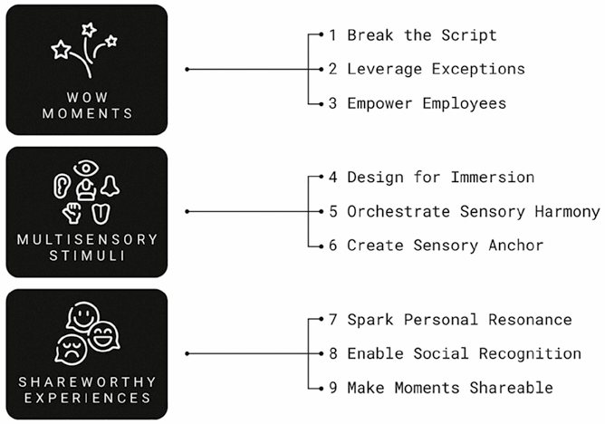
Hình 10.4: Chín Nguyên tắc Thiết kế Trải nghiệm Khách hàng.Hình 10.4: Chín Nguyên tắc Thiết kế Trải nghiệm Khách hàng (Customer Experience Design Principles).
📖 Nội dung chi tiết trong Hình 10.4 (Chín Nguyên tắc Thiết kế Trải nghiệm Khách hàng — Customer Experience Design Principles):
Nhóm Mục tiêu Trải nghiệm
Ba Nguyên tắc Thiết kế Cụ thể
1. Khoảnh khắc WOW (WOW Moments)
• Nguyên tắc 1: Phá vỡ kịch bản lối mòn (1. Break the Script) • Nguyên tắc 2: Tận dụng các tình huống ngoại lệ (2. Leverage Exceptions) • Nguyên tắc 3: Trao quyền cho nhân viên tuyến đầu (3. Empower Employees)
2. Kích thích Đa giác quan (Multisensory Stimuli)
• Nguyên tắc 4: Thiết kế hướng tới sự đắm chìm (4. Design for Immersion) • Nguyên tắc 5: Điều phối sự hòa âm giác quan (5. Orchestrate Sensory Harmony) • Nguyên tắc 6: Tạo mỏ neo giác quan cho trí nhớ (6. Create Sensory Anchor)
• Nguyên tắc 7: Khơi dậy sự đồng điệu cá nhân (7. Spark Personal Resonance) • Nguyên tắc 8: Tạo sự công nhận xã hội trong bộ lạc (8. Enable Social Recognition) • Nguyên tắc 9: Giúp khoảnh khắc dễ dàng được chia sẻ (9. Make Moments Shareable)
Nhóm 1: Kiến tạo Khoảnh khắc WOW (WOW Moments)
Những trải nghiệm khách hàng đáng nhớ nhất đôi khi không đến từ một quy trình vận hành trơn tru không tì vết, mà đến từ những khoảnh khắc khiến khách hàng bất ngờ thích thú. Khách hàng bước vào mỗi tương tác thương hiệu với những kỳ vọng định sẵn dựa trên kinh nghiệm quá khứ và quy chuẩn thông thường của ngành hàng. Khi thương hiệu phá vỡ kịch bản quen thuộc đó một cách tích cực, nó tạo ra sự ngạc nhiên, thu hút trọn vẹn sự chú ý và khắc sâu vào trí nhớ — khiến khách hàng phải thốt lên: “WOW!”
Dù trông có vẻ ngẫu hứng tự nhiên, các khoảnh khắc WOW hiếm khi xảy ra ngẫu nhiên mà là kết quả của sự thiết kế có chủ đích dựa trên ba nguyên tắc:
Nguyên tắc 1: Phá vỡ Kịch bản Lối mòn (Break the Script)
Khách hàng bước vào một trải nghiệm với bộ lối tắt tâm lý định sẵn: họ mặc định cửa hàng bán lẻ có quầy thu ngân đặt gần lối ra, phòng khám y tế mang mùi thuốc sát trùng lạnh lẽo, hay chi nhánh ngân hàng phải có quầy giao dịch ngăn kính trang nghiêm và máy bấm số thứ tự. Những khuôn mẫu kỳ vọng này — được gọi là giản đồ nhận thức / kịch bản tâm trí (schemas) trong khoa học nhận thức — giúp con người điều hướng trong môi trường quen thuộc mà không cần suy nghĩ nhiều. Khi mọi thứ diễn ra đúng như dự đoán, bộ não bật chế độ “lái tự động” (autopilot) để tiết kiệm năng lượng.
Nhưng sự tiết kiệm năng lượng đó đi kèm một cái giá cho thương hiệu: vì bộ não tự động lọc bỏ những chi tiết dễ đoán, các trải nghiệm theo lối mòn hiếm khi được chú ý hay ghi nhớ. Khi một thương hiệu chủ động thay đổi kịch bản tâm trí đó — bằng cách thay đổi bố cục không gian, tông giọng giao tiếp hoặc trình tự phục vụ — nó sẽ phá vỡ kịch bản (break the script). Bộ não lập tức chuyển từ chú ý thụ động sang chú ý chủ động, giúp khoảnh khắc đó được mã hóa sâu vào trí nhớ, đặc biệt khi đi kèm cảm xúc tích cực.
Tuy nhiên, các nhà thiết kế trải nghiệm phải hết sức khéo léo: mục tiêu là phá vỡ kịch bản lối mòn chứ không phải phá vỡ dòng chảy hành trình của khách hàng. Nếu sự bất ngờ đó hỗ trợ đúng mục tiêu khách hàng đang hướng tới và giúp điểm chạm thú vị hơn, nó sẽ là một niềm vui bất ngờ; ngược lại, nếu nó tạo thêm rào cản làm chậm việc của khách, nó sẽ gây phiền toái.
Chuỗi Capital One Café của ngân hàng Capital One là minh họa tuyệt vời cho nghệ thuật phá vỡ kịch bản mà vẫn giữ trọn dòng chảy thuận tiện. Bằng cách kết hợp văn hóa quán cà phê hiện đại với dịch vụ tài chính, hãng thay thế bầu không khí giao dịch cứng nhắc của chi nhánh ngân hàng truyền thống bằng không gian cộng đồng ấm cúng: khách hàng có thể ghé mua một ly cà phê thủ công, ngồi làm việc với Wi-Fi miễn phí hoặc trò chuyện tư vấn tài chính cá nhân thoải mái trong một không gian giống hệt phòng chờ làm việc chung (coworking lounge) hơn là một ngân hàng.
Nguyên tắc 2: Tận dụng Các Tình huống Ngoại lệ (Leverage Exceptions)
Cơ hội vàng để gây ấn tượng mạnh nhất thường nằm bên ngoài hành trình tiêu chuẩn. Một trải nghiệm bình thường có thể rất hiệu quả nhưng hiếm khi khắc cốt ghi tâm. Ngược lại, những khúc quanh bất ngờ — như sự cố gián đoạn dịch vụ, khiếu nại của khách hàng hoặc một yêu cầu đặc biệt hiếm gặp — có thể được chuyển hóa thành những khoảnh khắc làm nức lòng khách hàng. Thay vì chỉ coi đó là rắc rối cần xử lý cho xong, thương hiệu nên nhìn nhận chúng như cơ hội quý giá để vượt qua kỳ vọng và tạo tác động cảm xúc mạnh mẽ.
Những tình huống ngoại lệ này kích hoạt mạnh mẽ bộ não cảm xúc: một chuyến bay bị hoãn gây thất vọng; một món đồ kỷ niệm bị thất lạc gây lo âu. Trong những giây phút đó, khách hàng đang ở trạng thái dễ tổn thương nhất — nhưng chính cường độ cảm xúc cao độ ấy lại mở ra cánh cửa cho sự gắn kết sâu sắc nhất. Khi được xử lý bằng sự tận tâm, những khoảnh khắc này không chỉ giúp khôi phục dịch vụ (service recovery) mà còn tạo ra sự cảm kích lớn lao: những sự kiện giàu cảm xúc luôn được hạch hạnh nhân mã hóa ưu tiên vào trí nhớ dài hạn, đặc biệt khi giải pháp của thương hiệu biến sự căng thẳng thành nỗi nhẹ nhõm vỡ òa.
Tại hệ thống công viên giải trí Disney Parks, khâu khôi phục dịch vụ đã trở thành một phần của phép màu thương hiệu. Khi một em nhỏ vô tình đánh rơi món đồ chơi yêu thích trong công viên, món đồ đó sau khi được tìm thấy có thể được gửi trả về tận nhà qua đường bưu điện kèm theo một bức thư viết tay và cả một cuốn album ảnh chụp lại “cuộc phiêu lưu kỳ thú” của chú gấu bông đó khắp các khu trò chơi trong công viên cùng các nhân vật Disney. Nhân viên Disney tuân thủ mô hình HEARD: Lắng nghe (Hear) → Thấu cảm (Empathize) → Xin lỗi (Apologize) → Giải quyết (Resolve) → Chẩn đoán nguyên nhân (Diagnose) — không chỉ khắc phục sự cố mà còn phủ thêm một lớp phép màu bất ngờ, biến sự cố thành kỷ niệm đẹp mà gia đình du khách tự hào kể lại suốt nhiều năm sau.
Nguyên tắc 3: Trao quyền cho Nhân viên Tuyến đầu (Empower Employees)
Những bản thiết kế trải nghiệm hoàn mỹ nhất trên giấy vẫn phụ thuộc vào khâu thực thi của nhân viên tuyến đầu. Dù hành trình có được lập trình kỹ đến đâu, tương tác ngoài đời thực luôn đầy rẫy những tình huống không thể lường trước. Doanh nghiệp có thể tự động hóa quy trình, nhưng chỉ có sự phán đoán của con người mới ứng biến được trước những điều bất ngờ. Khả năng ứng biến linh hoạt tại chỗ chính là giá trị vô giá của đội ngũ nhân sự tuyến đầu.
Để tạo ra sự khác biệt thực sự, nhân viên không chỉ cần công cụ mà còn cần sự tin tưởng trao quyền. Nếu nhân viên tuyến đầu bị trói buộc cứng nhắc như cái máy chỉ biết đọc đúng kịch bản, thì chẳng thà thay họ bằng máy móc còn hơn. Khi được trao quyền, nhân viên có thể phản hồi bằng lòng thấu cảm, linh hoạt thích ứng với hoàn cảnh và cá nhân hóa trải nghiệm theo cách mà tự động hóa không bao giờ làm nổi.
Việc trao quyền kích hoạt một cơ chế tâm lý gọi là cảm thức sở hữu tâm lý (psychological ownership): khi con người cảm thấy mình được tin tưởng trao quyền tự quyết, họ tự khắc nhận trách nhiệm cao hơn và sẵn sàng nỗ lực vượt trên phận sự (discretionary effort). Họ ngừng suy nghĩ như những người làm thuê đơn thuần và bắt đầu hành xử như những người đại diện gìn giữ danh dự cho thương hiệu.
Tại chuỗi khách sạn huyền thoại The Ritz-Carlton, mọi nhân viên — từ nhân viên buồng phòng cho đến lễ tân — đều được trao quyền tự quyết chi tối đa lên tới 2.000 USD cho mỗi vị khách trong mỗi sự cố phát sinh để làm hài lòng khách hàng mà không cần phải xin phép cấp trên phê duyệt. Hầu hết nhân viên hiếm khi cần dùng hết hạn mức đó, nhưng chính sách này gửi đi một thông điệp rõ ràng tuyệt đối: “Công ty hoàn toàn tin tưởng bạn trong việc chăm sóc khách hàng.” Sự tin tưởng ấy trao cho nhân viên sự tự do để giải quyết dứt điểm vấn đề ngay tại chỗ hoặc tạo ra những khoảnh khắc bất ngờ khiến du khách nhớ mãi không quên.
Nhóm 2: Đánh thức Các Kích thích Đa giác quan (Multisensory Stimuli)
Năm giác quan hoạt động như năm kênh đầu vào nạp thông tin cho não bộ, định hình cách con người cảm nhận môi trường và chi phối quyết định của họ. Thị giác, thính giác, khứu giác, xúc giác và vị giác — mỗi giác quan mở ra một con đường riêng biệt đi vào tâm trí khách hàng.
Trải nghiệm đa giác quan mang tính đắm chìm cao hơn hẳn vì chúng kích hoạt đồng thời nhiều vùng não bộ khác nhau: càng nhiều giác quan tham gia, trải nghiệm càng trở nên sống động và tạo ra những liên tưởng thương hiệu sâu đậm hơn thông qua ba nguyên tắc:
Nguyên tắc 4: Thiết kế hướng tới Sự Đắm chìm (Design for Immersion)
Mỗi giác quan trong năm giác quan đảm nhận một vai trò riêng trong việc định hình nhận thức và hành vi:
- Thị giác (Sight): Tạo ấn tượng đầu tiên — mặt tiền cửa hàng, ánh sáng và cách bài trí thiết lập tông giọng chủ đạo.
- Thính giác (Sound): Điều tiết nhịp độ — nhạc tiết tấu nhanh thúc đẩy bước chân di chuyển nhanh hơn, trong khi nhạc êm dịu giúp khách hàng thư giãn và nán lại lâu hơn.
- Khứu giác (Smell): Đánh thức ký ức trực tiếp nhất — một mùi hương có thể lập tức đưa tâm trí một người quay về kỳ nghỉ thơ ấu, căn bếp ấm áp của mẹ hay một quán nhạc jazz quen thuộc.
- Xúc giác (Touch): Xây dựng sự gắn kết và cảm thức sở hữu — việc trực tiếp cầm nắm, chạm vào bề mặt sản phẩm khiến nó trở nên chân thực và có giá trị hơn.
- Vị giác (Taste): Lớp hoàn thiện cuối cùng — việc bổ sung đồ ăn, thức uống có thể biến một chuyến ghé thăm cửa hàng thành một trải nghiệm giác quan trọn vẹn.
Đại siêu thị nội thất IKEA được thiết kế hoàn hảo cho sự đắm chìm đa giác quan. Khu trưng bày tự hướng dẫn của hãng dẫn dắt khách hàng đi qua chuỗi không gian sống đời thực — từ phòng ngủ, phòng bếp cho đến phòng khách. Khách hàng được khuyến khích thoải mái kéo mở ngăn kéo, ngồi thử lên ghế sofa, nằm thử lên giường và chạm vào từng món đồ. Ở điểm kết thúc lộ trình, nhà hàng của IKEA phục vụ các món ăn Bắc Âu đặc trưng như món thịt viên Thụy Điển (Swedish meatballs) trứ danh — tạo nên một chuyến du hành đa giác quan trọn vẹn về cuộc sống gia đình.
Nguyên tắc 5: Điều phối Sự Hòa âm Giác quan (Orchestrate Sensory Harmony)
Mỗi tín hiệu giác quan phải bổ trợ nhịp nhàng cho các giác quan còn lại chứ không được rời rạc hay tranh giành sự chú ý của nhau. Khi các giác quan hòa quyện ăn ý, trải nghiệm mang lại cảm giác mạch lạc, nhất quán. Quá trình này bắt đầu từ một câu chuyện cốt lõi rõ ràng: thương hiệu cần một thông điệp bao trùm định hướng xem mỗi giác quan cần truyền tải điều gì, để hình ảnh, âm thanh, chất liệu bề mặt, mùi hương và hương vị đều khơi gợi cùng một cung bậc cảm xúc và củng cố cùng một giá trị thương hiệu mà không có bất kỳ sự lệch pha nào.
Cần lưu ý rằng nhiều kích thích hơn không đồng nghĩa với trải nghiệm tốt hơn: sự quá tải giác quan (sensory overload) có thể khiến khách hàng choáng ngợp và muốn bỏ chạy. Những tín hiệu giác quan hiệu quả nhất thường rất tinh tế — một mùi hương thoang thoảng dịu nhẹ hoặc một âm thanh trong trẻo vừa đủ nghe. Mục tiêu là truyền tải một thông điệp rõ ràng duy nhất thông qua nhiều giác quan.
Apple là hình mẫu hiếm hoi đạt tới sự hòa âm giác quan tuyệt đối xuyên suốt mọi điểm chạm — từ phần cứng, phần mềm, cửa hàng bán lẻ cho đến không gian số:
- Phần cứng phản ánh triết lý tối giản và độ chính xác cơ khí hoàn hảo từ vỏ nhôm nguyên khối mát lạnh khi chạm tay.
- Phần mềm đồng điệu tuyệt đối với thẩm mỹ đó qua giao diện tinh gọn và thao tác vuốt chạm mượt mà.
- Ngôn ngữ thiết kế ấy kéo dài liền mạch vào không gian Apple Store: tông màu trung tính sáng sủa, không gian mở thoáng đãng, bàn gỗ sồi ấm áp và ánh sáng dịu nhẹ phản chiếu đúng tinh thần của sản phẩm; nhân viên giao tiếp bằng phong thái tư vấn nhẹ nhàng; và ngay cả cửa hàng trực tuyến cũng đặt hình ảnh sản phẩm làm trung tâm với hiệu ứng chuyển trang mượt mà. Dù bạn đang cầm chiếc máy trên tay, đứng trong cửa hàng hay lướt web, tất cả đều mang lại cảm giác thuộc về cùng một thế giới duy nhất.
Nguyên tắc 6: Tạo Mỏ neo Giác quan cho Trí nhớ (Create Sensory Anchor)
Các giác quan định hình cách chúng ta ghi nhớ một trải nghiệm. Những tín hiệu giác quan đặc trưng — như một giai điệu âm thanh ngắn (audio jingle) hay một mùi hương độc quyền (signature scent) — giúp trải nghiệm dễ dàng được triệu hồi lại sau này. Khi khách hàng bắt gặp lại đúng tín hiệu giác quan đó ở một nơi khác, nó lập tức mở khóa toàn bộ ký ức cùng những cảm xúc gắn liền với trải nghiệm trước đây.
Đối với thương hiệu, những tín hiệu này trở thành mỏ neo giác quan (sensory anchors) quyền năng cho độ gợi nhớ thương hiệu, hoạt động như những lối tắt cảm xúc tức thì. Tuy nhiên, cơ chế này chỉ phát huy tác dụng khi tín hiệu giác quan được duy trì nhất quán và gắn liền với một trải nghiệm đáng nhớ mà khách hàng đã thực sự trải qua.
Hãng hàng không Singapore Airlines đã neo toàn bộ hệ thống tín hiệu đa giác quan của mình vào họa tiết vải Batik biểu tượng — được lấy cảm hứng từ 10 loài hoa bản địa của Singapore. Xuất hiện lần đầu trên bộ đồng phục Sarong Kebaya của các tiếp viên hàng không từ năm 1968, họa tiết hoa văn này giờ đây đã được mở rộng sang tất cả các giác quan khác:
- Khứu giác: Truyền cảm hứng tạo nên mùi hương độc quyền Batik Flora tỏa hương dịu nhẹ trong khoang máy bay, trên chiếc khăn bông nóng trao tay hành khách và tại các phòng chờ hạng thương gia.
- Thính giác: Cùng họa tiết đó được chuyển thể thành bản giao hưởng âm nhạc riêng mang tên “Bản giao hưởng của những loài hoa” (The Symphony of Flowers) phát nhẹ nhàng trong lúc hành khách lên máy bay và tại phòng chờ, tạo nên một bản sắc âm thanh nhất quán không thể trộn lẫn.
Nhóm 3: Thiết kế Trải nghiệm Đáng chia sẻ (Shareworthy Experiences)
Những trải nghiệm tuyệt vời khiến con người tự nguyện muốn kể về chúng mà không cần bất kỳ khoản tiền thưởng nào. Có ba lý do cốt lõi thúc đẩy khách hàng chia sẻ câu chuyện về sản phẩm và dịch vụ họ sử dụng: (1) Chia sẻ giúp họ thể hiện bản thân (self-expression) và những giá trị họ theo đuổi; (2) Chia sẻ giúp họ kết nối với người khác và khẳng định mình thuộc về một cộng đồng đáng tự hào; và (3) Đơn giản vì thương hiệu đã thiết kế để việc chia sẻ trở nên quá đỗi dễ dàng. Người làm tiếp thị có thể thiết kế trải nghiệm mời gọi sự chia sẻ thông qua ba nguyên tắc cuối cùng:
Nguyên tắc 7: Khơi dậy Sự Đồng điệu Cá nhân (Spark Personal Resonance)
Những trải nghiệm mang đậm dấu ấn cá nhân luôn để lại ấn tượng sâu đậm hơn. Ngay cả những cử chỉ nhỏ — như gọi đúng tên khách hàng hay gửi một tấm thiệp cảm ơn viết tay — cũng mang lại cảm giác được trân trọng.
Thương hiệu có thể gắn trải nghiệm với các cột mốc cá nhân (personal milestones) của khách hàng như sinh nhật, ngày kỷ niệm hoặc thành tựu đạt được. Một món quà nhỏ, lời chúc mừng đúng lúc hay sự bất ngờ trong ngày đặc biệt cho thấy thương hiệu thực sự để tâm đến họ. Ngoài ra, việc để khách hàng tham gia đồng sáng tạo (cocreate) hoặc tự tùy chỉnh sản phẩm (chọn màu sắc, khắc tên, tự thiết kế lộ trình phù hợp với mục tiêu cá nhân) sẽ nuôi dưỡng cảm thức làm chủ — con người luôn trân trọng và muốn khoe một sản phẩm hơn khi có bàn tay của chính họ tham gia tạo nên nó.
Ứng dụng Duolingo làm rất tốt việc khơi dậy sự đồng điệu cá nhân này: ứng dụng tự động điều chỉnh độ khó theo tốc độ học của từng người, ăn mừng rầm rộ các cột mốc chuỗi ngày học liên tiếp (streak milestones) và cho phép người học tự thiết lập mục tiêu riêng, trao cho người dùng những thành tích mang đậm dấu ấn cá nhân đáng để khoe lên mạng xã hội.
Nguyên tắc 8: Tạo Sự Công nhận Xã hội trong Bộ lạc (Enable Social Recognition)
Khách hàng luôn khao khát cảm giác mình là một phần của một bộ lạc giá trị. Khi khách hàng tham gia vào các hoạt động chung, góp mặt tại sự kiện đặc biệt hoặc ghé thăm không gian trải nghiệm của thương hiệu, hành động đó trở thành một lời tuyên ngôn về bản sắc cá nhân.
Các cửa hàng hoặc phòng trưng bày có thể đóng vai trò như không gian tụ họp kết nối những con người cùng chí hướng. Khi khách hàng tham gia các buổi tập luyện, hội thảo chuyên đề hay câu lạc bộ do thương hiệu tổ chức, họ không chỉ tương tác với thương hiệu mà còn gặp gỡ những thành viên giống mình. Việc chia sẻ trải nghiệm đó lên mạng phát đi tín hiệu về sự thuộc về một cộng đồng tinh hoa (belonging & exclusivity).
Hệ thống Trung tâm Trải nghiệm Porsche (Porsche Experience Centers) được xây dựng chính trên ý tưởng này: khách hàng được huấn luyện kỹ năng lái xe tốc độ cao cùng các tay đua chuyên nghiệp, giao lưu với những người đam mê xe Porsche khác và cùng nhau chinh phục đường đua. Môi trường vừa mang tính đặc quyền (exclusive) vừa thắt chặt tình bằng hữu trong cộng đồng người yêu xe, biến thương hiệu Porsche trở thành một phần bản sắc đáng tự hào mà họ luôn muốn chia sẻ.
Nguyên tắc 9: Giúp Khoảnh khắc Dễ dàng Được Chia sẻ (Make Moments Shareable)
Khách hàng thường muốn chia sẻ những trải nghiệm thú vị, nhưng chỉ khi việc đó diễn ra thật dễ dàng và thuận tiện. Thương hiệu không được mặc định rằng khách hàng sẽ chịu khó tự xoay xở; khoảnh khắc phải được thiết kế sẵn để có thể ghi lại và đăng tải với nỗ lực tối thiểu.
Trong không gian vật lý: Các nhà thiết kế phải tạo ra những góc hình ảnh bắt mắt ăn ảnh (Instagrammable décor), món ăn trình bày nghệ thuật hoặc bao bì độc đáo giúp khách hàng chỉ cần giơ điện thoại lên chụp là có ngay bức ảnh đẹp mà không cần chỉnh sửa cầu kỳ. Những điều chỉnh nhỏ về ánh sáng hoặc bố cục có thể biến một góc không gian bình thường thành phông nền hoàn hảo cho các định dạng Stories, Reels trên mạng xã hội.
Trong sản phẩm kỹ thuật số: Thương hiệu có thể cung cấp sẵn các mẫu nội dung đóng gói hoàn chỉnh (ready-made templates, quotes, visual summaries) vừa đẹp mắt vừa cá nhân hóa kèm nút chia sẻ một chạm (one-tap share button) để loại bỏ mọi ma sát. Chiến dịch tổng kết âm nhạc cuối năm Spotify Wrapped là ví dụ đỉnh cao của nguyên tắc này: hệ thống tự động tổng hợp dữ liệu nghe nhạc cả năm của người dùng thành một câu chuyện cá nhân thú vị, đóng gói sẵn thành những tấm thẻ đồ họa rực rỡ chuẩn kích thước mạng xã hội và mời người dùng chia sẻ chỉ bằng một cú chạm duy nhất. Mọi công việc khó nhất đã được Spotify làm sẵn; việc duy nhất người dùng cần làm là nhấn nút đăng.
Tóm tắt Chương 10
Việc chỉ cung cấp sản phẩm hay dịch vụ tốt giờ đây đã không còn đủ. Khi các tuyên bố giá trị ngày càng tiệm cận nhau và các ngành hàng rơi vào vòng xoáy đồng질 hóa, doanh nghiệp phải vượt lên trên công năng sử dụng để kiến tạo trải nghiệm khách hàng (customer experience). Nếu dịch vụ giúp tiết kiệm thời gian, thì trải nghiệm biến thời gian của khách hàng trở nên đáng sống và đáng nhớ. Trong một thế giới nơi công nghệ đồng nghĩa với hiệu suất giá rẻ, những trải nghiệm giàu hơi ấm con người ngày càng được trân trọng như một giá trị cao cấp xứng đáng để chi trả nhiều hơn.
Thiết kế trải nghiệm hiệu quả bắt đầu từ việc lập bản đồ trọn vẹn 6 bước trong hành trình khách hàng: Khám phá (Discovery) – Đón tiếp (Hospitality) – Giao dịch (Transaction)(Trải nghiệm mua hàng) và Làm quen ban đầu (Onboarding) – Hỗ trợ (Support) – Gắn kết (Engagement)(Trải nghiệm sử dụng). Thay vì dàn trải nguồn lực, người làm tiếp thị cần chọn lọc các điểm chạm có sức tác động cao nhất để áp dụng 9 Nguyên tắc Thiết kế Trải nghiệm Khách hàng:
- Tạo Khoảnh khắc WOW: (1) Phá vỡ kịch bản lối mòn (Break the script); (2) Tận dụng các tình huống ngoại lệ (Leverage exceptions); và (3) Trao quyền cho nhân viên tuyến đầu (Empower employees).
- Đánh thức Kích thích Đa giác quan: (4) Thiết kế hướng tới sự đắm chìm (Design for immersion); (5) Điều phối sự hòa âm giác quan (Orchestrate sensory harmony); và (6) Tạo mỏ neo giác quan cho trí nhớ (Create sensory anchor).
- Thiết kế Trải nghiệm Đáng chia sẻ: (7) Khơi dậy sự đồng điệu cá nhân (Spark personal resonance); (8) Tạo sự công nhận xã hội trong bộ lạc (Enable social recognition); và (9) Giúp khoảnh khắc dễ dàng được chia sẻ (Make moments shareable).
Câu hỏi Suy ngẫm
Lần gần đây nhất thương hiệu của bạn chủ động phá vỡ kịch bản lối mòn của ngành hàng và tạo ra một khoảnh khắc WOW cho khách hàng là khi nào?
Trải nghiệm khách hàng của bạn đã được thiết kế có chủ đích để đánh thức đồng bộ nhiều giác quan chưa?
Đâu là những khoảnh khắc trong hành trình trải nghiệm khách hàng của bạn thực sự xứng đáng và dễ dàng để khách hàng tự nguyện chia sẻ với bạn bè?
Hoạt động tiếp thị luôn tiến hóa song hành cùng những biến chuyển của thị trường. Thế nhưng, có những khái niệm cốt lõi vẫn giữ nguyên giá trị vượt thời gian. Kể từ khi ra mắt cuốn Marketing 3.0, nhóm tác giả đã áp dụng nhất quán một hệ thống các khung lý thuyết nền tảng — được giới thiệu lần đầu tiên bởi Philip Kotler và Hermawan Kartajaya trong cuốn sách Tái định vị Châu Á: Từ Kinh tế Bong bóng đến Kinh tế Bền vững (Repositioning Asia: From Bubble to Sustainable Economy) xuất bản năm 2000. Chính những khung lý thuyết kinh điển này tiếp tục đóng vai trò là bệ phóng nền tảng cho các mô hình cốt lõi của Marketing 7.0.
1. Phân tích Bức tranh Toàn cảnh Kinh doanh (Business Landscape Analysis)
Mọi chiến lược tiếp thị vững mạnh đều bắt đầu từ sự thấu hiểu sáng rõ về bức tranh toàn cảnh kinh doanh. Quá trình này bao gồm việc xác định các động lực chính thúc đẩy sự thay đổi — được chúng tôi gọi là Mô hình 5D (5D Framework) — và sau đó mở rộng phân tích thành tầm nhìn chiến lược toàn diện thông qua Mô hình 4C (4C Framework) (Hình A.1).
Mô hình 5D (The 5D Framework — 5 Động lực Thay đổi)
Thị trường vốn dĩ luôn vận động không ngừng. Doanh nghiệp phải liên tục theo dõi sát sao các lực đẩy đang tái định hình ngành công nghiệp của mình. Chúng tôi phân nhóm các lực đẩy này thành năm danh mục cốt lõi: Công nghệ (Technology), Chính trị – Pháp lý (Political–Legal), Kinh tế (Economy), Văn hóa – Xã hội (Socio–Culture) và Thị trường (Market).
Trong năm yếu tố này, công nghệ là động lực chính yếu nhất bởi nó mang tính đột phá và gây đứt gãy mạnh mẽ nhất. Từ máy móc cơ khí thời cách mạng công nghiệp cho đến trí tuệ nhân tạo (AI) ngày nay, mỗi bước nhảy vọt công nghệ đều tái định hình hoàn toàn cách con người sinh sống và làm việc. Các quyết định về chính trị và pháp lý kích hoạt những tác động tức thì lên nền kinh tế. Trong khi đó, những chuyển dịch về văn hóa – xã hội diễn ra âm thầm và từ tốn hơn nhưng lại nhào nặn nên hệ giá trị và hành vi dài hạn của con người. Tất cả các lực đẩy này hợp lại chi phối động lực thị trường (market dynamics), buộc các doanh nghiệp phải liên tục đánh giá và tái cấu trúc hoạt động của mình.
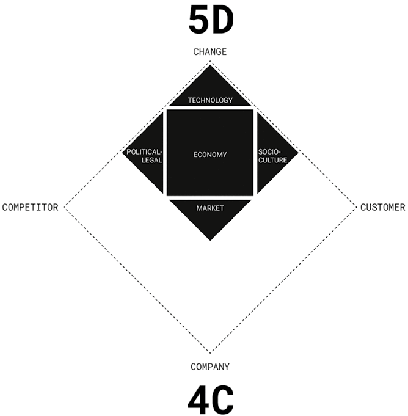
Hình A.1: Bức tranh Toàn cảnh Kinh doanh (Mô hình 5D và 4C).Hình A.1: Bức tranh Toàn cảnh Kinh doanh — Mô hình 5D và 4C (The Business Landscape: 5D and 4C Framework).
📖 Nội dung chi tiết trong Hình A.1 (Bức tranh Toàn cảnh Kinh doanh — Mô hình 5D và 4C):
Khung Mô hình
Các Thành tố Cốt lõi trong Sơ đồ
Mô hình 5D (5 Động lực Thay đổi) (Khối thoi đen phía trên bên trong góc CHANGE)
1. Công nghệ (Technology — Đỉnh trên cùng, động lực dẫn dắt mạnh nhất) 2. Chính trị – Pháp lý (Political–Legal — Cánh trái) 3. Kinh tế (Economy — Tâm điểm ở giữa) 4. Văn hóa – Xã hội (Socio–Culture — Cánh phải) 5. Thị trường (Market — Đỉnh dưới, kết quả hội tụ của 4 lực đẩy trên)
Mô hình 4C (4 Trụ cột Toàn cảnh Kinh doanh) (Khối thoi nét đứt bao quanh)
• Đỉnh trên: Sự thay đổi (Change — bao chứa trọn vẹn Mô hình 5D) • Đỉnh trái: Đối thủ cạnh tranh (Competitor) • Đỉnh phải: Khách hàng (Customer) • Đỉnh dưới: Công ty (Company)
Mô hình 4C (The 4C Framework)
Để mở rộng năm động lực thay đổi trên thành một tầm nhìn có thể chuyển hóa thành hành động cụ thể, chúng tôi sử dụng Mô hình 4C: Sự thay đổi (Change), Đối thủ cạnh tranh (Competitor), Khách hàng (Customer) và Công ty (Company). Ba yếu tố đầu tiên đại diện cho các lực lượng bên ngoài (external forces); yếu tố cuối cùng — Công ty — bao hàm các yếu tố nội tại bên trong doanh nghiệp như năng lực cốt lõi, nguồn lực và văn hóa tổ chức. Nhiều doanh nghiệp thường chỉ mải mê theo dõi đối thủ cạnh tranh và chạy theo đáp ứng nhu cầu hiện tại của khách hàng, mà vô tình bỏ lỡ những tín hiệu sớm của sự thay đổi (Change).
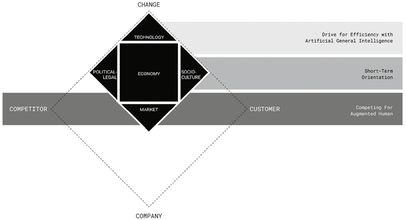
Hình A.2: Bức tranh Toàn cảnh Kinh doanh Thúc đẩy Marketing 7.0.Hình A.2: Bức tranh Toàn cảnh Kinh doanh Thúc đẩy Marketing 7.0 (The Business Landscape Driving Marketing 7.0).
📖 Nội dung chi tiết trong Hình A.2 (Bức tranh Toàn cảnh Kinh doanh Thúc đẩy Marketing 7.0):
Cấp độ Tác động trong Mô hình 5D & 4C
Hệ quả Chiến lược Thúc đẩy Marketing 7.0 (Dải ngang bên phải)
Chương Tương ứng
Công nghệ (Technology)
Cuộc đua tối ưu hóa hiệu suất với Trí tuệ nhân tạo tổng quát (Drive for Efficiency with Artificial General Intelligence)
Điều quan trọng cần nhấn mạnh là Mô hình 4C mang tính định hướng tương lai (forward-looking tool). Người làm tiếp thị phải nhìn vượt ra ngoài hiện tại để dự phóng những gì đang chờ đợi phía trước. Khả năng dự đoán những chuyển dịch của môi trường mang lại cho doanh nghiệp lợi thế cạnh tranh sắc bén, giúp họ dẫn dắt cuộc chơi thay vì chỉ lẽo đẽo theo sau. Bằng cách luôn nhạy bén với sự thay đổi, doanh nghiệp có thể chủ động định hình hành vi khách hàng, đón đầu các nước đi của đối thủ và tinh chỉnh gói giải pháp của mình trước cả khi thị trường kịp lên tiếng đòi hỏi.
Ứng dụng Phân tích Bức tranh Kinh doanh trong Marketing 7.0
Mô hình 5D và 4C hợp lại tạo thành nền móng chiến lược cho Marketing 7.0 (Hình A.2). Như đã khám phá xuyên suốt Phần 1 (từ Chương 1 đến Chương 4), bộ công cụ này giúp người làm tiếp thị nhìn thấu bức tranh lớn và đón đầu các lực lượng đang tái định hình cả môi trường cạnh tranh lẫn hành vi khách hàng:
- Ở Chương 1, Mô hình 5D xác định năm động lực lớn đang định hình môi trường bên ngoài và dọn đường cho bước chuyển mình tiến tới Marketing 7.0.
- Ở Chương 2, làn sóng dịch chuyển hướng tới trí tuệ nhân tạo tổng quát (AGI) được trình bày như một bước ngoặt công nghệ then chốt, khi máy móc trở thành người đồng lái (co-pilot) trong quá trình ra quyết định, đặt ra bài toán kết hợp hiệu suất máy móc với lòng thấu cảm con người.
- Ở Chương 3, tác động của bất ổn địa chính trị và áp lực kinh tế vĩ mô đã đẩy các thương hiệu vào cuộc đua hiệu suất ngắn hạn (Bẫy hiệu suất), dẫn đến sự đồng질 hóa nội dung kỹ thuật số được tiếp tay bởi các công cụ AI.
- Ở Chương 4, trọng tâm dịch chuyển sang thị trường và khách hàng: người tiêu dùng ngày nay không còn là người tiếp nhận thụ động mà đã trở thành những con người tăng cường (augmented humans) với ba đặc tính sàng lọc quyết liệt, phân mảnh xã hội và tiết kiệm có chọn lọc.
Khi kết hợp cùng nhau, Mô hình 5D và 4C đóng vai trò là chiếc cầu nối chiến lược giữa bối cảnh vĩ mô bên ngoài và hành động nội tại bên trong doanh nghiệp của Marketing 7.0.
2. Chín Yếu tố Cốt lõi của Tiếp thị (Key Elements of Marketing — PDB & 9E Framework)
Tiếp thị là một ngành học đa chiều kích, nhưng nằm ở tầng nền tảng nhất của nó là một nguyên lý tổ chức vô cùng tinh gọn: sự tương tác qua lại giữa Định vị (Positioning), Khác biệt hóa (Differentiation) và Thương hiệu (Brand). Tam giác chiến lược này đóng vai trò là cánh cổng dẫn vào các hoạt động thực hành tiếp thị chuyên sâu hơn, mở rộng thành khung mô hình lớn hơn mang tên Chín Yếu tố Cốt lõi của Tiếp thị (Mô hình 9E – 9E Framework) (Hình A.3).
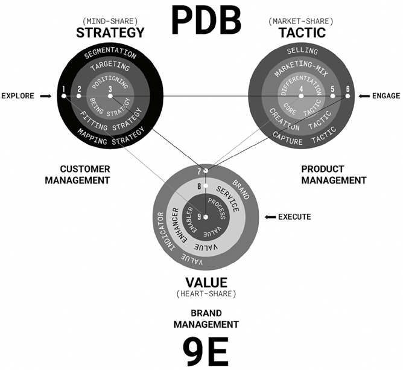
Hình A.3: Các Yếu tố Cốt lõi của Tiếp thị (Tam giác PDB và Mô hình 9E).Hình A.3: Các Yếu tố Cốt lõi của Tiếp thị — Tam giác PDB và Mô hình 9E (The Key Elements of Marketing: PDB and 9E Framework).
📖 Nội dung chi tiết trong Hình A.3 (Tam giác PDB và Mô hình 9 Yếu tố Cốt lõi của Tiếp thị — PDB & 9E Framework):
Cụm Quản trị & Mục tiêu
Hành động Cốt lõi
3 Lớp Vòng tròn Đồng tâm (Từ ngoài vào tâm) & Vai trò Chiến lược
1. Quản trị Khách hàng (Customer Management) • Chiến lược (Strategy) • Thị phần Tâm trí (Mind-Share)
KHÁM PHÁ → (Explore)
• Vòng 1 (Ngoài): Phân khúc thị trường (1. Segmentation) — Chiến lược lập bản đồ (Mapping Strategy) • Vòng 2 (Giữa): Chọn thị trường mục tiêu (2. Targeting) — Chiến lược khớp nối (Fitting Strategy) • Vòng 3 (Tâm PDB):Định vị (3. Positioning) — Chiến lược bản thể (Being Strategy)
2. Quản trị Sản phẩm (Product Management) • Chiến thuật (Tactic) • Thị phần Thị trường (Market-Share)
← GẮN KẾT (Engage)
• Vòng 4 (Tâm PDB):Khác biệt hóa (4. Differentiation) — Chiến thuật cốt lõi (Core Tactic) • Vòng 5 (Giữa): Tổ hợp tiếp thị 4P (5. Marketing-Mix) — Chiến thuật kiến tạo (Creation Tactic) • Vòng 6 (Ngoài): Bán hàng (6. Selling) — Chiến thuật nắm bắt giá trị (Capture Tactic)
3. Quản trị Thương hiệu (Brand Management) • Giá trị (Value) • Thị phần Trái tim (Heart-Share)
← THỰC THI (Execute)
• Vòng 7 (Ngoài — Đỉnh PDB):Thương hiệu (7. Brand) — Chỉ báo giá trị (Value Indicator) • Vòng 8 (Giữa): Dịch vụ (8. Service) — Yếu tố gia tăng giá trị (Value Enhancer) • Vòng 9 (Tâm): Quy trình (9. Process) — Bệ phóng hiện thực hóa giá trị (Value Enabler)
Tam giác Định vị – Khác biệt hóa – Thương hiệu (PDB Triangle)
Ở tâm lõi, tiếp thị xoay quanh tam giác Định vị – Khác biệt hóa – Thương hiệu (Positioning–Differentiation–Brand / PDB):
- Mỗi thương hiệu đều cần một bản sắc rõ ràng trong tâm trí khách hàng. Đó chính là Định vị (Positioning): lý do tồn tại và lời hứa cốt lõi mà doanh nghiệp cam kết với công chúng mục tiêu.
- Để lời hứa đó trở nên đáng tin cậy và dễ dàng được nhận biết, nó phải được hậu thuẫn bởi Sự khác biệt hóa (Differentiation) mạnh mẽ: những thuộc tính thực sự độc đáo giúp tách biệt thương hiệu khỏi đám đông đối thủ.
- Chỉ khi Định vị được củng cố vững chắc bằng Sự khác biệt hóa thực chất, doanh nghiệp mới có thể xây dựng được một hình ảnh Thương hiệu (Brand) hùng mạnh và bền vững theo thời gian.
Mô hình Chín Yếu tố Cốt lõi của Tiếp thị (9E Framework)
Từ tam giác hạt nhân PDB, hoạt động tiếp thị được nhìn nhận qua ba lăng kính quản trị chiến lược liên kết chặt chẽ với nhau: Chiến lược Quản trị Khách hàng (Customer Management Strategy), Chiến thuật Quản trị Sản phẩm (Product Management Tactics) và Giá trị Quản trị Thương hiệu (Brand Management Value):
1. Chiến lược Quản trị Khách hàng (Customer Management Strategy: STP)
Nằm ở trung tâm của chiến lược là Định vị (Positioning), được khởi nguồn từ Phân khúc thị trường (Segmentation) — cách thức sáng tạo mà doanh nghiệp vẽ bản đồ thị trường; tiếp nối bằng Chọn thị trường mục tiêu (Targeting) — quá trình lựa chọn những phân khúc phù hợp nhất để tập trung phân bổ nguồn lực. Thị trường có thể được phân khúc theo nhiều cách khác nhau, và những tiêu chí mà doanh nghiệp chọn để định nghĩa phân khúc sẽ định hình góc nhìn của họ về thị trường. Một phương pháp phân khúc độc đáo sẽ dẫn tới một tập khách hàng mục tiêu riêng biệt và cuối cùng tạo nên một định vị khác biệt. Ba yếu tố Phân khúc – Chọn mục tiêu – Định vị (Segmentation – Targeting – Positioning / STP) hợp thành nền tảng của Quản trị Khách hàng hiệu quả.
2. Chiến thuật Quản trị Sản phẩm (Product Management Tactic: DMS)
Sự khác biệt hóa (Differentiation) nằm ở trái tim của các chiến thuật tiếp thị. Nó dẫn dắt cách doanh nghiệp thiết kế Tổ hợp tiếp thị (Marketing Mix — hay mô hình 4P: Sản phẩm Product, Giá cả Price, Phân phối Place và Xúc tiến hỗn hợp Promotion) do Jerome McCarthy giới thiệu — trong đó Sản phẩm và Giá cả đại diện cho thứ doanh nghiệp chào bán (what to offer), còn Phân phối và Xúc tiến đại diện cho cách thức đưa gói chào hàng đó tới tay khách hàng (how to offer it). Yếu tố chiến thuật then chốt thứ ba là Bán hàng (Selling) — không phải chỉ để chốt các giao dịch ngắn hạn mà là phương pháp nắm bắt và xây dựng mối quan hệ khách hàng dài hạn. Ba yếu tố Khác biệt hóa – Tổ hợp tiếp thị – Bán hàng (Differentiation – Marketing Mix – Selling / DMS) hợp thành nền tảng của Quản trị Sản phẩm.
3. Giá trị Quản trị Thương hiệu (Brand Management Value: BSP)
Một Thương hiệu (Brand) cho biết cách thức doanh nghiệp kiến tạo giá trị và thoát khỏi bẫy hàng hóa đại trà (commodity trap). Sức mạnh thương hiệu được bồi đắp bởi hai yếu tố tạo giá trị bổ sung: Dịch vụ (Service) và Quy trình (Process). Dịch vụ nâng tầm gói chào hàng của doanh nghiệp trong những thị trường đã bão hòa, làm tăng mức độ sẵn lòng chi trả (willingness to pay) của khách hàng ngay cả khi sự khác biệt về tính năng vật lý là rất nhỏ — và quan trọng hơn, một dịch vụ xuất sắc là thứ đối thủ cực kỳ khó sao chép. Trong khi đó, Quy trình nằm ở lõi của việc phân phối giá trị, giúp doanh nghiệp gắn kết khách hàng vượt ra ngoài bản thân sản phẩm vật lý: từ sự vận hành xuất sắc cho đến những trải nghiệm khách hàng đáng nhớ, tất cả đều bắt nguồn từ một quy trình được thiết kế bài bản. Ba yếu tố Thương hiệu – Dịch vụ – Quy trình (Brand – Service – Process / BSP) hợp thành nền tảng của Quản trị Thương hiệu.
Sự Kế thừa và Tái định hình Mô hình 9E trong Marketing 7.0
Mô hình trung tâm của Marketing 7.0 — La bàn Nhận thức (The Cognitive Compass) được giới thiệu ở Chương 5 — được đặt nền móng trực tiếp trên khung Mô hình 9E thông qua ba trụ cột Quản trị Khách hàng, Quản trị Sản phẩm và Quản trị Thương hiệu (Hình A.4):
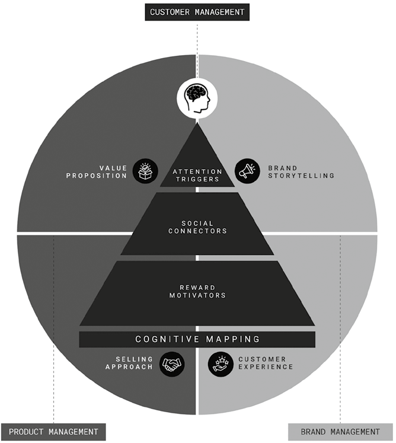
Hình A.4: Quản trị Khách hàng – Sản phẩm – Thương hiệu trong Marketing 7.0.Hình A.4: Quản trị Khách hàng – Sản phẩm – Thương hiệu trong Marketing 7.0 (Customer–Product–Brand Management in Marketing 7.0).
📖 Nội dung chi tiết trong Hình A.4 (Ánh xạ Quản trị Khách hàng – Sản phẩm – Thương hiệu vào La bàn Nhận thức của Marketing 7.0):
3 Trụ cột Quản trị (Mô hình 9E)
Các Thành tố Tương ứng trong La bàn Nhận thức (The Cognitive Compass)
Chương Triển khai Chi tiết
1. Quản trị Khách hàng (Customer Management — Trục dọc trung tâm)
Lập bản đồ Nhận thức (Cognitive Mapping): • Tác nhân kích hoạt sự chú ý (Attention Triggers) • Điểm chạm kết nối xã hội (Social Connectors) • Động lực thúc đẩy tưởng thưởng (Reward Motivators)
Quản trị Khách hàng (Customer Management — STP → Lập bản đồ Nhận thức / Cognitive Mapping): Cụm chiến lược đầu tiên bắt rễ từ mô hình STP truyền thống đã được tái định hình toàn diện trong Chương 6: Lập bản đồ nhận thức (Cognitive Mapping), ứng dụng khoa học nhận thức — cụ thể là ba hệ thống Hệ não chú ý, Hệ não xã hội và Hệ não tưởng thưởng — để giải mã tâm trí của những con người tăng cường. Cách tiếp cận dựa trên não bộ này giúp người làm tiếp thị xác định các phân khúc giàu ý nghĩa hơn, nhắm mục tiêu sáng rõ hơn và định vị chạm sâu vào tâm thức khách hàng kỷ nguyên số.
Quản trị Sản phẩm (Product Management — DMS → Tuyên bố Giá trị & Phương pháp Bán hàng): Cụm chiến lược thứ hai xoay quanh Khác biệt hóa, Tổ hợp tiếp thị (4P) và Bán hàng được giải quyết trọn vẹn qua hai chương: Chương 8: Tuyên bố giá trị (Value Proposition) tập trung vào cách khách hàng tính toán giá trị trong tâm trí bằng cách cân nhắc lợi ích (Get) và sự hy sinh (Give), tái định khung sự khác biệt hóa và 4P dưới lăng kính các lối tắt tư duy (heuristics); còn Chương 9: Phương pháp bán hàng (Selling Approach) hoàn thiện cụm này bằng cách đồng bộ hóa cuộc hội thoại bán hàng với cơ chế xử lý thông tin và niềm tin của não bộ (DEEP & SELL).
Quản trị Thương hiệu (Brand Management — BSP → Kể chuyện Thương hiệu & Trải nghiệm Khách hàng): Cụm chiến lược thứ ba bao gồm Thương hiệu, Dịch vụ và Quy trình được hiện thực hóa qua hai chương: Chương 7: Kể chuyện thương hiệu (Brand Storytelling) giải quyết yếu tố Thương hiệu bằng cách chỉ ra cách các mạch truyện tác động vào não bộ để biến thông điệp thương hiệu thành sự cộng hưởng cảm xúc; trong khi Chương 10: Trải nghiệm khách hàng (Customer Experience) giải quyết đồng thời cả Dịch vụ lẫn Quy trình thông qua 9 nguyên tắc thiết kế hành trình trải nghiệm — nâng tầm dịch vụ từ khâu hỗ trợ hậu cần thành vũ khí khác biệt hóa chiến lược, và biến quy trình từ hoạt động vận hành khô khan thành công cụ gắn kết cảm xúc đỉnh cao.
Sự ánh xạ chặt chẽ này cho thấy cách Marketing 7.0 kế thừa trọn vẹn di sản của Mô hình 9E đồng thời kết hợp những thành tựu mới nhất từ khoa học nhận thức và AI để tạo nên phương pháp tiếp thị lấy tâm trí làm trung tâm hoàn chỉnh.
Lời Cảm ơn (Acknowledgments)
Khi chúng tôi chấp bút viết cuốn Marketing 3.0 vào năm 2009, chúng tôi chưa từng hình dung rằng tác phẩm đó sẽ trở thành điểm khởi đầu cho cả một bộ sách dài kỳ. Chính nhà xuất bản Wiley là người đã nhìn thấy tiềm năng to lớn ấy và khuyến khích chúng tôi tiếp tục dự phóng những bước chuyển mình vĩ đại tiếp theo của ngành tiếp thị.
Qua nhiều năm tháng, các đội ngũ biên tập khác nhau tại Wiley đã tận tình đồng hành cùng chúng tôi qua từng tập sách. Đối với Marketing 7.0, chúng tôi đặc biệt biết ơn đội ngũ biên tập hiện tại — Victoria Savanh và Purvi Patel — vì sự hợp tác xuất sắc của họ trong suốt quá trình phát triển cuốn sách này.
Chúng tôi cũng xin gửi lời cảm ơn chân thành nhất tới Hội đồng Cố vấn tại MCorp vì sự hỗ trợ vô giá của họ trong suốt quá trình biên soạn: Michael Hermawan, Taufik, Ence, Estania Rimadini và Yosanova Savitry.
Sự trân trọng đặc biệt xin được dành tặng cho đội ngũ nhân sự tại MCorp đã âm thầm hỗ trợ chúng tôi ở hậu trường, đặc biệt là Moch Ferry Sanny Ismail, cùng họa sĩ Dwitami Megaswari Chianginata — người đã minh họa toàn bộ hệ thống sơ đồ và hình vẽ trong cuốn sách này.
Giới thiệu về Các Tác giả (About the Authors)
Philip Kotler là Giáo sư Danh dự chuyên ngành Tiếp thị tại Trường Quản lý Kellogg (Kellogg School of Management, Đại học Northwestern), nơi ông từng giữ ghế Giáo sư Tiếp thị Quốc tế S. C. Johnson & Son. Tờ Wall Street Journal xếp ông vào danh sách sáu nhà tư tưởng kinh doanh có ảnh hưởng lớn nhất thế giới. Nhận được vô số giải thưởng danh giá và bằng tiến sĩ danh dự từ các trường đại học trên toàn cầu, ông sở hữu bằng Thạc sĩ (MA) của Đại học Chicago và bằng Tiến sĩ (PhD) của Viện Công nghệ Massachusetts (MIT), cả hai đều thuộc chuyên ngành Kinh tế học. Philip có tầm ảnh hưởng quốc tế sâu rộng — các tác phẩm của ông đã được dịch ra hơn 25 ngôn ngữ và ông thường xuyên diễn thuyết tại các diễn đàn kinh tế lớn trên toàn thế giới.
Hermawan Kartajaya là Nhà sáng lập kiêm Chủ tịch của tập đoàn tư vấn MCorp. Ông đã hợp tác nghiên cứu cùng Giáo sư Philip Kotler từ năm 1998, đồng tác giả một bộ sưu tập ấn tượng gồm 14 cuốn sách. Ông được Viện Tiếp thị Hoàng gia Anh (Chartered Institute of Marketing, Vương quốc Anh) vinh danh là một trong “50 Nhà Tư tưởng Đã Định hình Tương lai Ngành Tiếp thị” (50 Gurus Who Have Shaped the Future of Marketing). Hermawan cũng được trao Giải thưởng Lãnh đạo Toàn cầu Xuất sắc (Distinguished Global Leadership Award) từ Hiệp hội Kinh doanh Liên Thái Bình Dương tại Đại học Nebraska–Lincoln. Ông đồng thời là nhà sáng lập Liên đoàn Tiếp thị Châu Á (Asia Marketing Federation), Ủy ban Doanh nghiệp Nhỏ Châu Á và Diễn đàn Tiếp thị Thế giới (World Marketing Forum).
Iwan Setiawan là Giám đốc Điều hành Tập đoàn (Group COO) của MCorp. Ông là chuyên gia tư vấn tiếp thị với hơn 20 năm kinh nghiệm thực chiến, từng cố vấn chiến lược cho hơn 100 tập đoàn và doanh nghiệp thuộc nhiều ngành nghề khác nhau. Ông hiện giảng dạy bộ môn Tiếp thị cho chương trình Thạc sĩ Quản trị Kinh doanh Cấp cao (Executive MBA) tại Trường Kinh doanh và Quản lý thuộc Viện Công nghệ Bandung (ITB). Iwan sở hữu bằng Thạc sĩ Quản trị Kinh doanh (MBA) từ Trường Quản lý Kellogg thuộc Đại học Northwestern (Hoa Kỳ) và bằng Kỹ sư của Đại học Indonesia.
Từ điển Thuật ngữ Chuyên ngành — Marketing 7.0 (Philip Kotler)
Tài liệu này quy định cách dịch thống nhất cho toàn bộ các thuật ngữ chuyên ngành trong dự án dịch cuốn sách Marketing_7.0_Clean (Marketing 7.0: A Guide for Thinking Marketers in the Age of AI).
1. Quy tắc Dịch thuật & Biểu đạt Chung
Nguyên tắc Inline Explanation (Giải thích kèm thuật ngữ gốc):
- Trong lần xuất hiện đầu tiên ở mỗi chương (hoặc tại các tiêu đề mục/khung mô hình), giữ nguyên thuật ngữ tiếng Anh trong ngoặc đơn ngay sau từ tiếng Việt: ví dụ Tiếp thị lấy tâm trí làm trung tâm (Mind-Centric Marketing), Bằng chứng xã hội (Social Proof).
- Các thuật ngữ viết tắt hoặc tên riêng của mô hình phổ biến quốc tế (AI, AGI, AR/VR/XR, IoT, LLM, NLP, RPA, B2B, B2C, ROI, STP, 4Ps, 5As, 5D, 4C, PDB, 9E, DEEP, SELL, AIDA, PAS, BAB, PAPA, SB7, SPIN, LAMP, DMU, HEARD, Lo-Fi) được giữ nguyên chữ viết tắt kèm giải nghĩa tiếng Việt chuẩn xác.
Giọng văn (Tone of Voice):
- Chuẩn học thuật quản trị kinh doanh hiện đại (tương đồng với các bản dịch bộ sách Marketing 3.0 – 6.0 của Philip Kotler tại Việt Nam), mạch lạc, súc tích, tuân thủ tiêu chuẩn no-ai-slop (không dùng từ sáo rỗng, không dịch word-by-word cứng nhắc).
2. Nhóm Thuật ngữ Cốt lõi của Marketing 7.0 & Chiến lược Tiếp thị
Thuật ngữ Tiếng Anh (Original)
Bản dịch Tiếng Việt Chuẩn hóa
Giải thích / Ngữ cảnh sử dụng
Mind-Centric Marketing / Cognitive Marketing
Tiếp thị lấy tâm trí làm trung tâm / Tiếp thị nhận thức
Trọng tâm của Marketing 7.0: kết hợp khoa học nhận thức với công nghệ số và AI để tác động vào tâm trí khách hàng.
Lối tắt Giá cả – Chất lượng / Ác cảm mất mát (Loss Aversion) / Hiệu ứng sở hữu (Endowment Effect) / Kế toán tâm lý (Mental Accounting) / Thiên kiến hiện tại (Present Bias)
Các thiên kiến chi phối cách khách hàng cân nhắc giữa tổng lợi ích nhận được (Total Get) và tổng chi phí bỏ ra (Total Give) (Chương 6, 8, 9).
Schemas & Psychological Ownership
Giản đồ nhận thức / Kịch bản tâm trí (Schemas) & Cảm thức sở hữu tâm lý (Psychological Ownership)
Các khuôn mẫu kỳ vọng quen thuộc của khách hàng và tinh thần làm chủ khi nhân viên được trao quyền (Chương 10).
4. Nhóm Thuật ngữ Công nghệ, AI & Hành vi Người tiêu dùng Mới
Thuật ngữ Tiếng Anh (Original)
Bản dịch Tiếng Việt Chuẩn hóa
Giải thích / Ngữ cảnh sử dụng
Augmented Humans
Con người tăng cường (Augmented Humans)
Hình mẫu khách hàng mới trong Marketing 7.0: những cá nhân tích hợp sâu công nghệ số và AI vào tư duy, cảm xúc, giao tiếp và mua sắm (Chương 1, 4).
Phygital Natives
Công dân Phygital (Phygital Natives)
Thế hệ người tiêu dùng sống liền mạch giữa thế giới vật lý (Physical) và thế giới số (Digital) (Chương 1).
Cognitive Outsourcing
Ủy thác nhận thức (Cognitive Outsourcing)
Xu hướng giao phó việc ghi nhớ, tìm kiếm và suy nghĩ cho các thiết bị số và AI (Chương 4).
Banner Blindness
Hội chứng "mù" quảng cáo (Banner Blindness)
Phản xạ tự động phớt lờ mọi nội dung mang hình thức quảng cáo truyền thống (Chương 4).
Lo-Fi Content (Low-Fidelity Content)
Nội dung Lo-Fi (Nội dung mộc / ít trau chuốt)
Nội dung quay dựng tự nhiên, đời thường, không bóng bẩy, giúp vượt qua bộ lọc quảng cáo của não bộ (Chương 4).
Echo Chamber & Emotional Tribalism
Buồng vang thông tin (Echo Chamber) & Chủ nghĩa bộ lạc cảm xúc (Emotional Tribalism)
Không gian số do thuật toán tạo ra khiến người dùng chỉ tiếp xúc với các quan điểm giống mình, chia nhỏ thị trường thành các bộ lạc vi mô (Micro/Nano tribes) (Chương 4).
Parasocial Relationships
Mối quan hệ cận xã hội (Parasocial Relationships)
Sự gắn kết cảm xúc một chiều của khán giả với người nổi tiếng hoặc đại thần tượng (Chương 4).
Tiết kiệm có chọn lọc / Sự mệt mỏi vì trào lưu vi mô (Micro Trend Fatigue) / Hiệu ứng son môi (Lipstick Effect)
Hành vi thắt chặt chi tiêu thiết yếu (Trade down) nhưng sẵn sàng chi cho các xa xỉ phẩm nhỏ hoặc trải nghiệm mang lại niềm vui (Trade up / Emotional ROI) (Chương 4).
Rule-Based AI → Predictive AI → Generative AI → Agentic AI → AGI
AI dựa trên quy tắc → AI dự đoán → AI tạo sinh → AI tác tử (Agentic AI) → Trí tuệ nhân tạo tổng quát (AGI)
Lộ trình tiến hóa của AI từ công cụ thụ động sang các tác tử tự chủ và tiến tới trí tuệ ngang tầm con người (Chương 2).
9 Nguyên tắc Thiết kế Trải nghiệm Khách hàng (Khoảnh khắc WOW, Kích thích đa giác quan, Trải nghiệm đáng chia sẻ)
9 nguyên tắc thiết kế trải nghiệm: Phá vỡ kịch bản, Tận dụng tình huống ngoại lệ, Trao quyền cho nhân viên, Thiết kế đắm chìm, Điều phối hòa âm giác quan, Tạo mỏ neo giác quan, Khơi dậy sự đồng điệu cá nhân, Tạo sự công nhận xã hội, Giúp khoảnh khắc dễ chia sẻ (Chương 10).